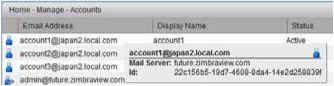
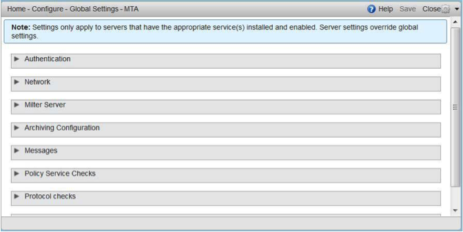
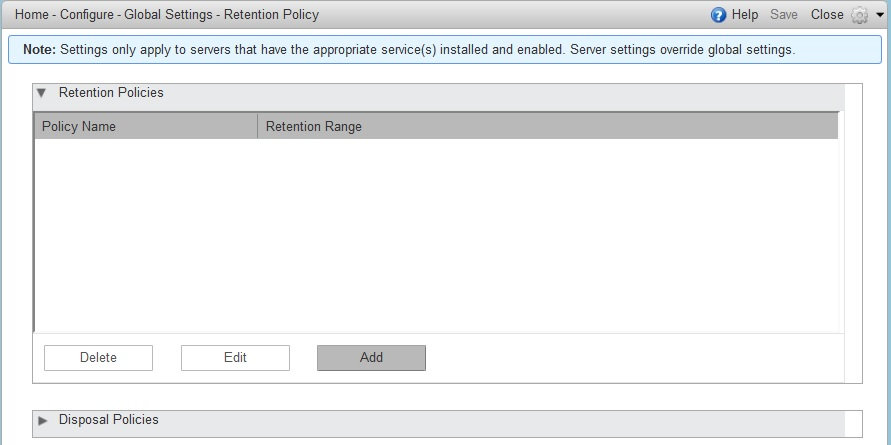
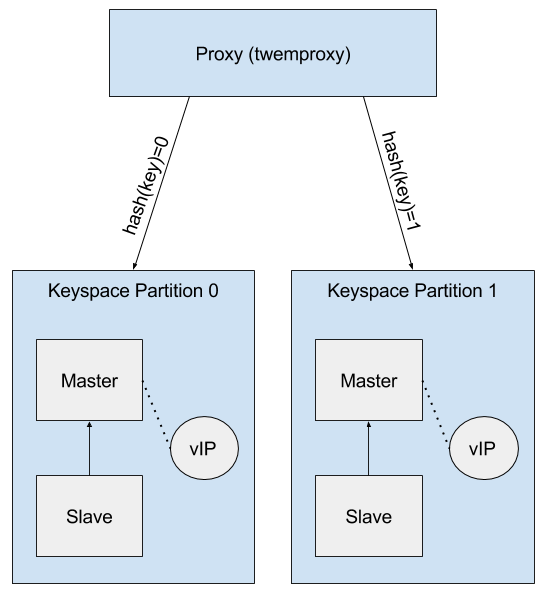
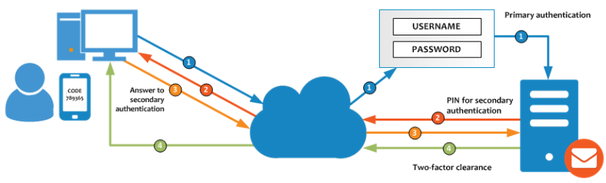

Zimbra Collaboration Administrator Guide
License
 Synacor, Inc., 2017
Synacor, Inc., 2017
© 2017 by Synacor, Inc. Zimbra Collaboration Administrator Guide
This work is licensed under the Creative Commons Attribution-ShareAlike 4.0 International License unless another license agreement between you and Synacor, Inc. provides otherwise. To view a copy of this license, visit https://creativecommons.org/licenses/by-sa/4.0 or send a letter to Creative Commons, PO Box 1866, Mountain View, CA 94042, USA.
Synacor, Inc., 2017
40 La Riviere Drive, Suite 300
Buffalo, New York 14202
Introduction
Zimbra Collaboration is a full-featured messaging and collaboration solution that includes email, address book, calendaring, tasks, and Web document authoring.
Audience
This guide is intended for system administrators responsible for installing, maintaining, and supporting the server deployment of Zimbra Collaboration.
Readers of this guide should have the following recommended knowledge and skill sets:
-
Familiarity with the associated technologies and standards Linux operating system, and open source concepts
-
Industry practices for mail system management
Third-Party Components
Where possible, Zimbra Collaboration adheres to existing industry standards and open source implementations for backup management, user authentications, operating platform, and database management. However, Zimbra only supports the specific implementations described in the Zimbra Collaboration architecture overview in the Product Overview chapter as officially tested and certified for the Zimbra Collaboration. This document might occasionally note when other tools are available in the marketplace, but such mention does not constitute an endorsement or certification.
Support and Contact Information
Visit www.zimbra.com to join the community and to be a part of building the best open source messaging solution. We appreciate your feedback and suggestions.
-
Contact sales@zimbra.com to purchase Zimbra Collaboration
-
Network Edition customers can contact support at support@zimbra.com
-
Explore the Zimbra Forums for answers to installation or configurations problems
-
Join the Zimbra Forums, to participate and learn more about the Zimbra Collaboration
For additional product information, the following resources are available:
Let us know what you like about the product and what you would like to see in the product. Post your ideas to the Zimbra Forum.
If you encounter problems with this software, go to https://bugzilla.zimbra.com to submit a bug report. Make sure to provide enough detail so that the bug can be easily duplicated.
Product Overview
This chapter provides a system overview of Zimbra components.
Architectural Overview
The Zimbra Collaboration architecture is built with well-known open source technologies and standards-based protocols. The architecture consists of client interfaces and server components that can run as a single node configuration or be deployed across multiple servers for high availability and increased scalability.

The architecture includes the following core advantages:
| Core Advantage | Components/Description |
|---|---|
Open source integrations |
Linux®, Jetty, Postfix, MariaDB, OpenLDAP® |
Industry-standard open protocols |
SMTP, LMTP, SOAP, XML, IMAP, POP |
Modern technology Design |
HTML5, Javascript, XML, and Java |
Scalability |
Each Zimbra mailbox server includes its own mailbox accounts and associated message store and indexes. The Zimbra platform scales vertically (by adding more system resources) and horizontally (by adding more servers) |
Browser-based client interface |
Easy, intuitive access to Zimbra Collaboration features, using a standard web platform. |
Browser-based Administration Console |
Core Email, Calendar and Collaboration Functionality
Zimbra Collaboration is an innovative messaging and collaboration application that offers the following state-of-the-art solutions that are accessed through the browser based web client.
-
Intuitive message management, search, tagging, and sharing.
-
Personal, external, and shared calendar.
-
Personal and shared Address Books and Distribution Lists.
-
Personal and Shared Task lists.
Zimbra Components
Zimbra architecture includes open-source integrations using industry standard protocols. The third-party software listed in Third-Party Software is bundled with Zimbra software and installed as part of the installation process. These components have been tested and configured to work with the software.
| 3rd-Party Component | Description |
|---|---|
Jetty |
Web application server that runs Zimbra software. |
Postfix |
Open source mail transfer agent (MTA) that routes mail messages to the appropriate Zimbraserver |
Open LDAP software |
Open source implementation of the Lightweight Directory Access Protocol (LDAP) that stores Zimbra system configuration, the Zimbra Global Address List, and provides user authentication. Zimbra can also work with GAL and authentication services provided by external LDAP directories such as Active Directory |
MariaDB |
Database software |
Lucene |
Open source full-featured text and search engine |
Third-party source that converts certain attachment file types to HTML |
|
Anti-virus/anti-spam |
Open source components that include:
|
James/Steve filtering |
Creates filters for email |
LibreOffice |
High fidelity document preview |
Zimbra Application Packages
Zimbra Collaboration provides the application packages listed in Application Packages.
| Package | Description |
|---|---|
Zimbra Core |
The libraries, utilities, monitoring tools, and basic configuration
files. |
Zimbra Store |
The components for the mailbox server (including Jetty). The Zimbra mailbox server includes the following components:
|
Zimbra LDAP |
Zimbra Collaboration uses the OpenLDAP® software, which is an open source LDAP directory server. User authentication, the Zimbra Global Address List, and configuration attributes are services provided through OpenLDAP. Note that the Zimbra GAL and authentication services can be provided by an external LDAP Directory such as Active Directory. |
Zimbra MTA |
Postfix is the open source mail transfer agent (MTA) that receives email via SMTP and routes each message to the appropriate Zimbra mailbox server using Local Mail Transfer Protocol (LMTP). The Zimbra MTA also includes the anti-virus and anti-spam components. |
Zimbra Proxy |
Zimbra Proxy is a high-performance reverse proxy service for passing IMAP[S]/POP[S]/HTTP[S] client requests to other internal ZCS services.This package is normally installed on the MTA server(s) or on its own independent server(s). When the zimbra-proxy package is installed, the proxy feature is enabled by default. Installing the Zimbra Proxy is highly recommended, and required if using a separate web application server. |
Zimbra Memcached |
Memcached is automatically selected when the zimbra-proxy is installed. At least one server must run zimbra-memcached when the proxy is in use. You can use a single memcached server with one or more Zimbra proxies. zimbra-memcached is required if using a separate web application server. |
Zimbra SNMP (Optional) |
If you choose to install zimbra-SNMP for monitoring, this package should be installed on every Zimbra server. |
Zimbra Logger (Optional) |
If used, this is installed on one mailbox server, and must be installed at the same time as the mailbox server.The Zimbra Logger installs tools for syslog aggregation and reporting. If you do not install Logger, the server statistics section of the Administration Console will not display. |
Zimbra Spell (Optional) |
Aspell is the open source spell checker used on the Zimbra Web Client. When Zimbra-Spell is installed, the Zimbra-Apache package is also installed. |
Zimbra Apache |
This package is installed automatically when Zimbra Spell or Zimbra Convertd is installed. |
Zimbra Convertd |
This package is installed on the zimbra-store server. Only one Zimbra-convertd package needs to be present in the Zimbra Collaboration environment. The default is to install one zimbra-convertd on each zimbra-store server. When Zimbra-Convertd is installed, the Zimbra-Apache package is also installed. |
Zimbra Archiving (Optional) |
Archiving and Discovery offers the ability to store and search all messages delivered to, or sent by the Zimbra Collaboration Server. This package includes the cross mailbox search function which can be used for both live and archive mailbox searches. Note: Using Archiving and Discovery can trigger additional mailbox license usage. To find out more about Zimbra Archiving and Discovery, contact Zimbra sales. |
Mail Flow — Multi-Server Configuration
The configuration for each deployment is dependent on numerous variables such as the number of mailboxes, mailbox quotas, performance requirements, existing network infrastructure, IT policies, security methodologies, spam filtering requirements, and more. In general, deployments share common characteristics for incoming traffic and user connectivity, as depicted in the following diagram. Alternate methods for configuring numerous points within the network are also possible.

The numbered sequences are described below:
-
Inbound Internet mail goes through a firewall and load balancing to the edge MTA for spam filtering.
-
The filtered mail then goes through a second load balancer.
-
An external user connecting to the messaging server also goes through a firewall to the second load balancer.
-
The inbound Internet mail goes to any of the Zimbra Collaboration MTA servers and goes through spam and virus filtering.
-
The designated Zimbra Collaboration MTA server looks up the addressee’s directory information from the Zimbra Collaboration LDAP replica server.
-
After obtaining the user’s information from the Zimbra Collaboration LDPA server, the MTA server sends the mail to the appropriate Zimbra Collaboration server.
-
Internal end-user connections are made directly to any Zimbra Collaboration server that then obtains the user’s directory information from Zimbra Collaboration LDAP and redirects the user, as needed.
-
The backups from the Zimbra Collaboration servers can be processed to a mounted disk.
Zimbra System Directory Tree
The following table lists the main directories created by the Zimbra
installation packages. The directory organization is identical for any
server in the Zimbra Collaboration, when installing under (parent) /opt/zimbra.
| The directories not listed in the following table are libraries used for building the core Zimbra software or miscellaneous third-party tools. |
| File | Description |
|---|---|
|
Backup target contains full and incremental backup data |
|
Zimbra Collaboration application files, including the utilities described in Command-Line Utilities |
|
Policy functions, throttling |
|
Clam AV application files for virus and spam controls |
|
Configuration information |
|
Third-party scripts for conveyance |
|
Convert service |
|
SASL AUTH daemon |
|
Includes data directories for LDAP, mailboxd, postfix, amavisd, clamav |
|
Data Store |
|
SOAP txt files and technical txt files |
|
Server extensions for different authentication types |
|
Server extensions for different network version authentication types |
|
Contains the Apache Web server. Used for both aspell and convertd as separate processes |
|
Index store |
|
Contains Java application files |
|
mailboxd application server instance. In this directory, the
|
|
Libraries |
|
Internally used executables |
|
Local logs for Zimbra Collaboration server application |
|
RRD and SQLite data files for logger services |
|
MariaDB database files |
|
Used for collecting statistics |
|
OpenLDAP server installation, pre-configured to work |
|
Postfix server installation, pre-configured to work with Zimbra Collaboration |
|
Contains current transaction logs for the Zimbra Collaboration server |
|
SNMP monitoring files |
|
Certificates |
|
Message store |
|
Contains control scripts and Perl modules |
|
Contains Zimlet zip files that are installed with Zimbra |
|
Contains Zimlets that are available with the Zimbra Web Client |
|
Contains Zimlet zip files for features that are installed with the network edition |
|
mailboxd statistics, saved as .csv files |
Zimbra Web Clients
Zimbra offers various web client types that users can log into for use of Zimbra features. The web clients provide mail, calendar, address book, and task functions.
| Client Type | Description |
|---|---|
Advanced Web Client |
Includes Ajax capability and offers a full set of web collaboration features. This web client works best with newer browsers and fast Internet connections. |
Standard Web Client |
A good option when Internet connections are slow or users prefer HTML-based messaging for navigating within their mailbox |
Mobile Client |
(Native Mail Client) Used to configure and sync the Zimbra mailbox server with the native mail client on a mobile device. |
Touch Client |
(Mobile Web App) Provides an experience for touch-capable mobile devices. Its features are a subset of the features found in the Zimbra Web Client, including Mail, Contacts and Calendar. |
Mobile HTML Client |
Provides mobile access to Zimbra when using the Standard Web Client version. |
When users sign in, they view the advanced Zimbra Web Client, unless they use the menu on the login screen to change to the standard version. If ZWC detects the screen resolution to be 800x600, users are automatically redirected to the standard Zimbra Web Client. Users can still choose the advanced ZWC but see a warning message suggesting the use of the standard ZWC for better screen view.
When connecting to Zimbra using a mobile web browser, Zimbra automatically detects and defaults to the Touch Client. To use the Mobile Client, you must configure your mobile device to sync with the Zimbra server.
Web Services and Desktop Clients
In addition to using a web browser or mobile device to connect to Zimbra Collaboration, connection is available using a web service, such as Exchange Web Services (EWS), or a desktop client such as Zimbra Connector to Microsoft Outlook, which uses MAPI. The following are supported:
-
Exchange Web Services (EWS) provides client access to enable Zimbra Collaboration to communicate with the Exchange Server when using Microsoft Outlook on a Mac device. To enable EWS client access, see the Class of Service section. EWS is a separately licensed add-on feature.
-
Messaging Application Programming Interface (MAPI) synchronizes to Microsoft Outlook 2016/2013/2010/2007/2003 with full delegate, offline access and support for S/MIME. Use the Zimbra Connector for Outlook to connect to Zimbra Collaboration when using Microsoft Outlook on a Windows device. To enable MAPI (Microsoft Outlook) Connector, see the Class of Service section.
-
Support for all POP3, IMAP4, Calendaring Extensions to Web Distributed Authoring and Versioning (CalDAV), and vCard Extensions to Web Distributed Authoring and Versioning (CardDAV) clients.
Offline Mode
Zimbra Offline Mode allows access to data — without network connectivity — when using the Zimbra Web Client (ZWC).
For example, if there is no server connectivity or if server connectivity is lost, ZWC automatically transitions to “offline mode”. When server connectivity is restored, ZWC automatically reverts to “online mode”.
The offline mode uses HTML5, which uses a caching capability that can be considered a super set of the normal browser caching.
Security Measures
The coordinated use of multiple security measures, targeted to increase the security of the whole system, is one of the best approaches to securing your information infrastructure. These measures are implemented in the Zimbra Collaboration platform as a result of defense mechanisms summarized in the following topics:
| To view current and detailed security news and alerts, please refer to Security Center on the Zimbra Wiki. |
Identity and Access Management
Key functions built into the system for user identify management are summarized in the following table:
| Function | Description |
|---|---|
Identify Lifecycle Management |
The leveraging of LDAP directory for all Create, Read, Update, and Delete (CRUD) functions associated to user administration with Zimbra Collaboration. LDAP usage is optional but all attributes specific to Zimbra Collaboration are stored and managed through the native LDAP directory. |
First Factor Authentication |
The combined user name and password primarily employed by authorized users when attempting to access the system. These credentials are retained in the user store: the passwords are stored as salted hash that is compared against that of the entered password, for rejection (no match) or acceptance (matched). If external directory (LDAP or Active Directory) is preferred, the appropriate login credentials can be stored in this external LDAP directory. See also Zimbra LDAP Service for more details. |
Two Factor Authentication |
A second layer of identify security that is configured at the Admin Console to enable or disable passcode generation to mobile devices associated with Zimbra Collaboration. When enabled, user or COS accounts must use the generated passcode to gain access to their client services. See also About 2 Factor Authentication and Two Factor Authentication. |
Authorized Access |
User accounts are defined by various attributes, permission levels, and policies to allow or disallow what data can be viewed and which functions can be performed. Admin Console administrators can create groups and assign access permissions to support targeted business objectives. |
Information Security and Privacy
Functions built into the system to secure data are summarized in the following table:
| Key Concept | Description |
|---|---|
Management of security, integrity, and privacy |
Zimbra Collaboration supports the use of S/MIME certificates (provided by publicly trusted Certification Authority (CA), as well as internal PKI; DomainKeys Identified Mail (DKIM); Domain-based Message Authentication, Reporting and Conformance (DMARC); Amavisd-new, which is housed in the Mail Transfer Agent (MTA) to manage incoming and out going DMARC policies. |
Encryption methods: |
|
In-transit |
Secure connections between endpoints and services use TLS in addition to various other protocols: SMTP, LMTP+STARTTLS, HTTPS, IMAPS/IMAP+STARTTLS, POP3S/POP3+STARTTLS. |
At-rest |
With S/MIME for end-to-end encryption, data stored in a Zimbra Collaboration message store is encrypted until decryption occurs with the appropriate private key. |
Anti-virus and Anti-spam |
Both malware and spam are challenged by the Zimbra Collaboration native functionality and third-party plugins: Amavisd-new, ClamAV, and Spam Assassin. |
System Logs
The Zimbra Collaboration system logs — generated by SNMP triggers — can be used to record data such as user and administrator activity, login failures, slow queries, mailbox activity, mobile synchronization activity, and data based errors. Events, alerts and traps can be forwarded to log management and event correlation system to create centralized polices and notifications based on your security and compliance requirements.
| Function | Description |
|---|---|
Incident response |
Administrators can use remote device wiping and/or account lockout in the event of a malicious or accidental activities (such as stolen user account credential, or lost smart phone). |
Archiving and discovery |
This optional feature allows administrators to select specific user email messages for archival and application of retention policies, which can be used for both archived and live mailboxes. |
Licensing
A Zimbra license is required in order to create accounts. When you purchase, renew, or change the Zimbra license, you update the Zimbra server with the new license information.
License Types
Zimbra Collaboration licensing gives administrators better visibility and control into the licensed features they plan to deploy. You can monitor usages and manage the following license types.
| License limitations | To set maximum number of… |
|---|---|
Accounts limit |
Accounts you can create and the number of accounts created are shown. |
Mobile accounts limit |
Accounts you can create and the number of accounts created are shown. |
Touch client accounts limit |
Accounts that can have the touch client mobile feature enabled. |
MAPI accounts limit |
Accounts that can use Zimbra Connector for Microsoft Outlook (ZCO). |
Exchange web services (EWS) accounts limit |
Accounts that can use EWS for connecting to an Exchange server. EWS is a separately licensed add-on. |
High-fidelity document preview |
Accounts that can use the High-Fidelity document preview. LibreOffice must be installed. |
Archiving accounts limit |
New archive accounts allowable. The archive feature must be installed. |
License Requirements
To try out Zimbra Collaboration, you can obtain trial versions free of charge. Once your system is installed in a production environment, you will need to purchase a subscription or a perpetual license.
| License Types | Purpose |
|---|---|
Trial |
Free of charge: Trial license from the Zimbra website (https://www.zimbra.com). The trial license allows you to create up to 50 users. It expires in 60 days. |
Trial extended |
Free of charge: Allows you to create up to 50 users and is valid for an extended period of time. Obtainable from Zimbra Sales by contacting sales@zimbra.com or calling 1-972-407-0688. |
Subscription |
Purchased: Applicable to a specific Zimbra Collaboration system and encrypted with the number of Zimbra accounts (seats) you have purchased, the effective date, and expiration date of the subscription license |
Perpetual |
Purchased: This license is similar to a subscription license and is valid for a specific Zimbra Collaboration system, is encrypted with the number of Zimbra accounts (seats) you have purchased, the effective date, and an expiration date of 2099-12-31. When you renew your support agreement, no new perpetual license is sent to you, but your Account records in the systems is updated with your new support end date. |
License Usage by Account Type
Below is a description of Zimbra Collaboration accounts and if they impact your license limit.
| License Account Type | Purpose |
|---|---|
System account |
System accounts are specific accounts used by Zimbra Collaboration. They include the spam filter accounts for junk mail (spam and ham), virus quarantine account for email messages with viruses, and GALsync account if you configure GAL for your domain. Do not delete these accounts! These accounts do not count against your license |
Administrator account |
Administrator and delegated administrator accounts count against your license |
User account |
User accounts count against your license account limit. When you delete an account, the license account limit reflects the change |
Alias account |
Not applicable |
Distribution list |
|
Resource account |
License Activation
All network edition installations require license activation. New installations have a 10 day grace period from the license issue date before requiring activation. Your license can be activated in the Administration Console.
- Admin Console:
-
Home > Configure > Global Settings > License, from the Gear icon select Activate License
Upgraded Zimbra Collaboration versions require an immediate activation to maintain network feature functionality.
Automatic License Activation
Licenses are automatically activated if the Zimbra Collaboration server has a connection to the Internet and can communicate with the Zimbra License server. If you are unable to automatically activate your license, see Manual License Activation.
Manual License Activation
For systems that do not have external access to the Zimbra License server, you can use the Zimbra Support Portal to manually activate your license. Go to the Zimbra website at www.zimbra.com and click Support to display the Zimbra Technical Support page. Click the Zimbra Collaboration Suport link to display the Zimbra Support Portal page. Enter your email and password to log in.
If you have problems accessing the Zimbra Support Portal, contact Zimbra Support at support@zimbra.com.
When Licenses are not Installed or Activated
If you fail to install or activate your Zimbra Collaboration server license, the following scenarios describe how your Zimbra Collaboration server will be impacted.
| License Condition | Description/Impact |
|---|---|
Not installed |
Zimbra Collaboration defaults to single user mode where all features limited by license are limited to one user. |
Not valid |
Zimbra Collaboration defaults to single user mode. |
Not activated |
A license activation grace period is 10 days. If for some reason the license is never activated, Zimbra Collaboration defaults to single user mode after 10 days. |
For future date |
Zimbra Collaboration defaults to single user mode |
In grace period |
The license ending date has passed and is within the 30 day grace period. All features limited by license are still enabled, but administrators might see license renewal prompts. |
Expired |
The license ending date has passed and the 30 day grace period has expired. The Zimbra Collaboration server defaults to the feature set of the Open Source Edition. |
Obtain a License
On the Zimbra website, go to Downloads to obtain a trial license from the Zimbra Downloads area. Contact Zimbra sales regarding a trial extended license, or to purchase a subscription license or perpetual license, by emailing sales@zimbra.com.
The subscription and perpetual license can only be installed on the Zimbra Collaboration system for which it is purchased. Only one Zimbra license is required for your Zimbra Collaboration environment. This license sets the number of accounts that can be created.
Current license information, including the number of accounts purchased, the number of accounts used, and the expiration date, can be viewed from Home > Configure > Global Settings > License.
Managing Licenses
The Update License wizard from the Administration Console’s Global Settings page is used to upload and install a new license. The Activate License link on the toolbar activates the license.
Current license information, including the license ID, the issue date, expiration date, number of accounts purchased, and the number of accounts used can be viewed from Home > Configure > Global Settings > License.
License Information
You must have a Zimbra Collaboration license to create accounts. When you purchase, renew, or change the Zimbra license, you must update the Zimbra server with the new license information. The Update License Wizard from the Administration Console’s Global Settings is used to upload and install a new license. The Activate License link on the toolbar activates the license.
Current license information, including the license ID, the issue date, expiration date, number of accounts purchased, and the number of accounts used can be viewed from Home > Configure > Global Settings > License.
When the number of accounts created is equal to the number of accounts purchased you will not be able to create new accounts. You can purchase additional accounts or you can delete existing accounts. Contact Zimbra sales to purchase additional accounts.
You must renew your license within 30 days of the expiration date. Starting 30 days before the license expires, when you log on to the Administration Console, a reminder notice is displayed.
License Expiration
When your Zimbra Collaboration Network Edition License expires, a license expiration warning appears in the administrative console and web interface for all users. From the date of the license expiration, there is a 30-day grace period during which the warning message is displayed, but no features are disabled.
Upon expiration of the grace period, the server reverts to the feature set of the Open Source Edition. The following is a list of some of the major functions that are no longer available upon license expiration:
-
Backup/Restore
-
Zimbra Mobile (ActiveSync)
-
Zimbra Touch Client
-
Exchange Web Services (EWS) — a separately licensed add-on
-
High-Fidelity Document Preview
-
Zimbra Connector for Outlook
-
Zimbra Connector for Blackberry
-
S/MIME
If you maximize your licensed user limit, you are no longer able to create or delete accounts.
If you do not plan to renew your license, you can regain the ability to create or delete accounts by upgrading to Zimbra Collaboration free and open source software (FOSS). You should choose the same version of FOSS that you are currently running on the Zimbra Collaboration Network Edition for this transition, after which you can upgrade to the latest version of Zimbra Collaboration FOSS.
Renewal
When the number of accounts created is equal to the number of accounts purchased you will not be able to create new accounts. You can purchase additional accounts or you can delete existing accounts. Contact Zimbra sales to purchase additional accounts.
You must renew your license within 30 days of the expiration date. Starting 30 days before the license expires, when you log on to the Administration Console, a reminder notice is displayed.
Updating Your License
When you renew or change the Zimbra license, you update Zimbra Collaboration mailbox servers with the new license information. This operation be performed from either the CLI or the Administration Console.
zmlicense- Admin Console:
-
Home > Configure > Global Settings > License
Updating a license:
-
Save the license on the computer you use to access the Administration Console.
-
Log on to the Administration Console, go to Home > Configure > Global Settings > License, from the Gear icon select Update License. The License Installation Wizard opens.
-
Browse to select the license file and click Next. The license file is now uploaded.
-
Click Install to install the license file.
-
Click Activate License. Upgraded Zimbra Collaboration versions require an immediate activation to maintain network feature functionality.
Your license information is updated automatically. The cached account license count is automatically refreshed on each mailbox server.
Zimbra Mailbox Server
The Zimbra mailbox server is a dedicated server that manages all the mailbox content, including messages, contacts, calendar, and attachments.
The Zimbra mailbox server has dedicated volumes for backup and log files. Each Zimbra mailbox server can see only its own storage volumes. Zimbra mailbox servers cannot see, read, or write to another server.
Mailbox Server
Each account is configured on one mailbox server, and this account is associated with a mailbox that contains email messages, attachments, calendar, contacts and collaboration files for that account.
Each mailbox server has its own standalone message store, data store, and index store for the mailboxes on that server. The following is an overview of each store and their directory location.
Message Store
All email messages are stored in MIME format in the Message Store, including the message body and file attachments.
By default, the message store is located on each mailbox server under
/opt/zimbra/store. Each mailbox has its own directory named after its
internal mailbox ID. Mailbox IDs are unique per server, not system-wide.
Messages with multiple recipients are stored as a single -copy on the message store. On UNIX systems, the mailbox directory for each user contains a hard link to the actual file.
When Zimbra Collaboration is installed, one index volume and one message volume are configured on each mailbox server. Each mailbox is assigned to a permanent directory on the current index volume. When a new message is delivered or created, the message is saved in the current message volume.
To manage your email storage resources, you can configure storage volumes for older messages by implementing a Hierarchical Storage Management (HSM) policy. See Managing Configuration.
Data Store
The Data Store is a SQL database where internal mailbox IDs are
linked with user accounts. All the message metadata including tags,
conversations, and pointers indicate where the messages are stored in
the file system. The SQL database files are located in
/opt/zimbra/db.
Each account (mailbox) resides only on one server. Each server has its own standalone data store containing data for the mailboxes on that server.
-
The data store maps the mailbox IDs to the users' LDAP accounts. The primary identifier within the Zimbra Collaboration database is the mailbox ID, rather than a user name or account name. The mailbox ID is only unique within a single mailbox server.
-
Metadata including user’s set of tag definitions, folders, contacts, calendar appointments, tasks, Briefcase folders, and filter rules are in the data store database.
-
Information about each mail message, including whether it is read or unread, and which tags are associated is stored in the data store database.
Index Store
The index and search technology is provided through Apache Lucene. Each
email message and attachment is automatically indexed when the message
arrives. An index file is associated with each account. Index files are
located in /opt/zimbra/index.
The tokenizing and indexing process is not configurable by administrators or users.
The process is as follows:
-
The Zimbra MTA routes the incoming email to the mailbox server that contains the account’s mailbox.
-
The mailbox server parses the message, including the header, the body, and all readable file attachments such as PDF files or Microsoft Word documents, in order to tokenize the words.
-
The mailbox server passes the tokenized information to Lucene to create the index files.
| Tokenization is the method for indexing by each word. Certain common patterns, such as phone numbers, email addresses, and domain names are tokenized as shown in the Message Tokenization illustration. |
Web Application Server
The Jetty web application server runs web applications (webapps) on any store server. It provides one or more web application services.
Mailstore Services
Mailstore services provides the back-end access to mailbox/account data. Webapps for the mailstore include:
-
Mailstore (mail server) =
/opt/zimbra/jetty/webapps/service -
Zimlets =
/opt/zimbra/jetty/webapps/zimlet
User Interface Services
User Interface services provide front-end user interface access to the mailbox account data and Administration Console, including:
-
Zimbra Web Client =
/opt/zimbra/jetty/webapps/zimbra -
Zimbra administrator console =
/opt/zimbra/jetty/webapps/zimbraAdmin -
Zimlets =
/opt/zimbra/jetty/webapps/zimlet
Web Application Server Split
The Web Application Server Split functionality provides an option to separate the mailstore services (mail server) and the user interface services (web client server).
For example, a web client server running 'zimbra,zimbraAdmin' webapps serving the static UI content like html/css pages, and mail server running 'service' webapp serving all the SOAP requests. These servers are running in split mode.
The Web Application Server Split benefits include:
-
Splitting the web client server from the mail server makes the customization process more agile, allowing the roll out of new or updated web UI customization without having to restart the mail servers. This means zero down time.
-
If you want to customize the Zimbra web client or Zimbra Administration Console, you can take the web client server offline and run customization or maintenance, while not having to take down the mail server.
-
The web client server is completely decoupled from mailbox accounts. This means any web client server can service any account request.
Installation and Configuration of the Web Application Server Split
For installation and configuration of the Web Application Server Split, see the Zimbra Collaboration Multi-Server Installation Guide.
Backing Up the Mailbox Server
Zimbra Collaboration includes a configurable backup manager that resides on
every Zimbra Collaboration server and performs both backup and restore
functions. You do not have to stop the Zimbra Collaboration server in order
to run the backup process. The backup manager can be used to restore a
single user, rather than having to restore the entire system in the event
that one user’s mailbox becomes corrupted. Full and incremental backups are
in /opt/zimbra/backup.
See Backup and Restore.
Each Zimbra mailbox server generates redo logs that contain current and archived transactions processed by the message store server since the last incremental backup. When the server is restored, after the backed up files are fully restored, any redo logs in the archive and the current redo log in use are replayed to bring the system to the point before the failure.
Mailbox Server Logs
A Zimbra Collaboration deployment consists of various third-party
components with one or more mailbox servers. Each of the components may
generate its own logging output. Local logs are in /opt/zimbra/log.
Selected Zimbra Collaboration log messages generate SNMP traps, which you can capture using any SNMP monitoring software. See Monitoring ZCS Servers.
| System logs, redo logs, and backup sessions should be on separate disks to minimize the possibility of unrecoverable data loss in the event that one of those disks fails. |
Zimbra IMAPD Server
The Zimbra IMAPD server is an optionally installed dedicated server that handles IMAP(S) traffic. It can be installed on the same node as a mailbox server or on a separate node. When installed on the same node as a mailbox server the mailbox’s internal IMAPD process is disabled.
In installations which have very heavy IMAP usage it is the recommended practice to install IMAPD on separate nodes from the mailbox processes to allow for horizontal scaling of IMAPD resources independently from the mailbox nodes.
Zimbra LDAP Service
LDAP directory services provide a centralized repository for information about users and devices that are authorized to use your Zimbra service. The central repository used for Zimbra’s LDAP data is the OpenLDAP directory server.
| Zimbra Collaboration supports integration with Microsoft’s Active Directory Server. Contact support for information on specific directory implementation scenarios. |
The LDAP server is installed when ZCS is installed. Each server has its own LDAP entry that includes attributes specifying operating parameters. In addition, a global configuration object sets defaults for any server whose entry does not specify every attribute.
A subset of these attributes can be modified through the Zimbra administration console and others through the zmprov commands.
LDAP Traffic Flow
The LDAP Directory Traffic figure shows traffic between the Zimbra-LDAP directory server and the other servers in the Zimbra Collaboration system. The Zimbra MTA and the Zimbra Collaboration mailbox server read from, or write to, the LDAP database on the directory server.
The Zimbra clients connect through the Zimbra server, which connects to LDAP.
LDAP Directory Hierarchy
LDAP directories are arranged in an hierarchal tree-like structure with two types of branches, the mail branches and the config branch. Mail branches are organized by domain. Entries belong to a domain, such as accounts, groups, aliases, are provisioned under the domain DN in the directory. The config branch contains admin system entries that are not part of a domain. Config branch entries include system admin accounts, global config, global grants, COS, servers, mime types, and zimlets.
The Zimbra LDAP Hierarchy figure shows the Zimbra LDAP hierarchy. Each type of entry (object) has certain associated object classes.

An LDAP directory entry consists of a collection of attributes and has a
globally unique distinguished name (dn). The attributes allowed for an
entry are determined by the object classes associated with that entry.
The values of the object class attributes determine the schema rules the
entry must follow.
An entry’s object class that determines what kind of entry it is, is called a structural object class and cannot be changed. Other object classes are called auxiliary and may be added to or deleted from the entry.
Use of auxiliary object classes in LDAP allows for an object class to be combined with an existing object class. For example, an entry with structural object class inetOrgPerson, and auxiliary object class zimbraAccount, would be an account. An entry with the structural object class zimbraServer would be a server in the Zimbra system that has one or more Zimbra packages installed.
Zimbra Collaboration LDAP Schema
At the core of every LDAP implementation is a database organized using a schema.
The Zimbra LDAP schema extends the generic schema included with OpenLDAP software. It is designed to coexist with existing directory installations.
All attributes and object classes specifically created for Zimbra Collaboration
are prefaced by “zimbra”, such as zimbraAccount object class or
zimbraAttachmentsBlocked attribute.
The following schema files are included in the OpenLDAP implementation:
-
core.schema
-
cosine.schema
-
inetorgperson.schema
-
zimbra.schema
-
amavisd.schema
-
dyngroup.schema
-
nis.schema
| You cannot modify the Zimbra schema. |
Zimbra Collaboration Objects
| Object | Description | Object class | ||
|---|---|---|---|---|
Accounts |
Represents an account on the Zimbra mailbox server that can be logged into. Account entries are either administrators or user accounts. The object class name is zimbraAccount. This object class extends the zimbraMailRecipient object class. All accounts have the following properties: A name in the format of user@example.domain A unique ID that never changes and is never reused A set of attributes, some of which are user-modifiable (preferences) and others that are only configurable by administrators All user accounts are associated with a domain, so a domain must be created before creating any accounts. |
zimbraAccount |
||
Class of Service (COS) |
Defines the default attributes an account has and what features are allowed or denied. The COS controls features, default preference settings, mailbox quotas, message lifetime, password restrictions, attachment blocking, and server pools for creation of new accounts. |
zimbraCOS |
||
Domains |
Represents an email domain such as example.com or example.org. A domain must exist before email addressed to users in that domain can be delivered. |
zimbraDomain |
||
Distribution Lists |
Also known as mailing lists, are used to send mail to all members of a list by sending a single email to the list address. |
zimbraDistributionList |
||
Dynamic Groups |
Are like distribution lists. The difference is members of a dynamic group are dynamically computed by a LDAP search. The LDAP search filter is defined in an attribute on the dynamic group entry.
|
zimbraGroup |
||
Servers |
Represents a particular server in the Zimbra system that has one or more of the Zimbra software packages installed. Attributes describe server configuration information, such as which services are running on the server. |
zimbraServer |
||
Global Configuration |
Specifies default values for the following objects: server and domain. If the attributes are not set for other objects, the values are inherited from the global settings. Global configuration values are required and are set during installation as part of the Zimbra core package. These become the default values for the system. |
zimbraGlobalConfig |
||
Alias |
Represents an alias of an account, distribution list or a dynamic group. The zimbraAliasTarget attribute points to target entry of this alias entry. |
zimbraAlias |
||
Zimlet |
Defines Zimlets that are installed and configured in Zimbra. |
zimbraZimletEntry |
||
Calendar Resource |
Defines a calendar resource such as conference rooms or equipment that can be selected for a meeting. A calendar resource is an account with additional attributes on the zimbraCalendarResource object class. |
zimbraCalendarResource |
||
Identity |
Represents a persona of a user. A persona contains the user’s identity such as display name and a link to the signature entry used for outgoing emails. A user can create multiple personas. Identity entries are created under the user’s LDAP entry in the DIT. |
zimbraIdentity |
||
Data Source |
Represents an external mail source of a user. Two examples of data source are POP3 and IMAP. A data source contains the POP3/IMAP server name, port, and password for the user’s external email account. The data source also contains persona information, including the display name and a link to the signature entry for outgoing email messages sent on behalf of the external account. Data Source entries are created under the user’s LDAP entry in the DIT. |
zimbraDataSource |
||
Signature |
Represents a user’s signature. A user can create multiple signatures. Signature entries are created under the user’s LDAP entry in the DIT. |
zimbraSignature |
Account Authentication
Supported authentication mechanisms are Internal, External LDAP, and
External Active Directory. The authentication method type is set on a
per-domain basis. If zimbraAuthMech attribute is not set, the default is
to use internal authentication.
The internal authentication method uses the Zimbra schema running on the OpenLDAP server.
The zimbraAuthFallbackToLocal attribute can be enabled so that the system
falls back to the local authentication if external authentication fails.
The default is FALSE.
Internal Authentication Mechanism
The internal authentication method uses the Zimbra schema running on the
OpenLDAP directory server. For accounts stored in the OpenLDAP server, the
userPassword attribute stores a salted-SHA512 (SSHA512) digest of the user’s
password. The user’s provided password is computed into the SSHA digest
and then compared to the stored value.
External LDAP and External AD Authentication Mechanism
External LDAP and external Active Directory authentication can be used if the email environment uses another LDAP server or Microsoft Active Directory for authentication and Zimbra LDAP for all other Zimbra Collaboration related transactions. This requires that users exist in both OpenLDAP and in the external LDAP server.
The external authentication methods attempt to bind to the specified LDAP server using the supplied user name and password. If this bind succeeds, the connection is closed and the password is considered valid.
The zimbraAuthLdapURL and zimbraAuthLdapBindDn attributes are required
for external authentication.
-
zimbraAuthLdapURLattributeldap://ldapserver:port/identifies the IP address or host name of the external directory server, and port is the port number. You can also use the fully qualified host name instead of the port number.For example:
ldap://server1:3268 ldap://exch1.acme.com
If it is an SSL connection, use
ldaps:instead ofldap:. The SSL certificate used by the server must be configured as a trusted certificate. -
zimbraAuthLdapBindDnattribute is a format string used to determine which DN to use when binding to the external directory server.During the authentication process, the user name starts out in the format: user@example.com
The user name might need to be transformed into a valid LDAP bind
DN(distinguished name) in the external directory. In the case of Active Directory, that binddnmight be in a different domain.
Custom Authentication
You can implement a custom authentication to integrate external authentication to your proprietary identity database. When an authentication request comes in, Zimbra checks the designated auth mechanism for the domain. If the auth mechanism is set to custom authentication, Zimbra invokes the registered custom auth handler to authenticate the user.
To set up custom authentication, prepare the domain for the custom auth and register the custom authentication handler.
Preparing a domain for custom auth
To enable a domain for custom auth, set the domain attribute, zimbraAuthMech to custom:{registered-custom-auth-handler-name}.
In the following example, "sample" is the name under which custom authentication is registered.
zmprov modifydomain {domain|id} zimbraAuthMech custom:sampleRegister a custom authentication handler
To register a custom authentication handler, invoke:
ZimbraCustomAuth.register( handlerName, handler )in the init method of the extension.
-
Class: com.zimbra.cs.account.ldap.ZimbraCustomAuth
-
Method:
public synchronized static void register (String handlerName, ZimbraCustomAuth handler)Definitions:
-
handlerName is the name under which this custom auth handler isregistered to Zimbra’s authentication infrastructure. This name is set in the domain’s zimbraAuthMech attribute of the domain.
-
handler is the object on which the authenticate method is invoked forthis custom auth handler. The object has to be an instance of
ZimbraCustomAuth(or subclasses of it).
-
public class SampleExtensionCustomAuth implements ZimbraExtension {
public void init() throws ServiceException {
/*
* Register to Zimbra's authentication infrastructure
* custom:sample should be set for domain attribute zimbraAuthMech
*/
ZimbraCustomAuth.register("sample", new SampleCustomAuth());
}
...
}How Custom Authentication Works
When an authentication request comes in, if the domain is specified to use
custom auth, the authenticating framework invokes the authenticate method
on the ZimbraCustomAuth instance passed as the handler parameter to
ZimbraCustomAuth.register().
The account object for the principal to be authenticated and the clear-text
password entered by the user are passed to
ZimbraCustomAuth.authenticate().
All attributes of the account can be retrieved from the account object.
Kerberos5 Authentication Mechanism
Kerberos5 Authentication Mechanism authenticates users against an external Kerberos server.
-
Set the domain attribute
zimbraAuthMechtokerberos5. -
Set the domain attribute
zimbraAuthKerberos5Realmto the Kerberos5 realm in which users in this domain are created in the Kerberos database. When users log in with an email password and the domain,zimbraAuthMechis set tokerberos5, the server constructs the Kerberos5 principal by{localpart-of-the-email}@{value-of-zimbraAuthKerberos5Realm}and uses that to authenticate to the kerberos5 server.
To specify Kerberos5 for an individual account set the account’s
zimbraForeignPrincipal as kerberos5:{kerberos5-principal}. For
example: kerberos5:user1@MYREALM.COM.
Global Address List
The Global Address List (GAL) is a company directory of users, usually within the organization itself, that is available to all users of the email system. Zimbra Collaboration uses the company directory to look up user addresses from within the company.
For each Zimbra Collaboration domain you can configure GAL to use:
-
External LDAP server
-
Zimbra Collaboration internal LDAP server
-
Both external LDAP server and Zimbra Collaboration LDAP in GAL searches
The Zimbra Collaboration Web Client can search the GAL. When the user searches
for a name, that name is turned into an LDAP search filter similar to the
following example, where the string %s is the name the user is searching
for.
(|(cn = %s*)(sn=%s*)(gn=%s*)(mail=%s*))
(zimbraMailDeliveryAddress = %s*)
(zimbraMailAlias=%s*)
(zimbraMailAddress = %s*)GAL Attributes in Zimbra Collaboration
The Attributes Mapped to Zimbra Collaboration Contact table maps generic GAL search attributes to their Zimbra Collaboration contact fields.
LDAP attributes are mapped to GAL entry fields. For example, the LDAP
attribute displayName and cn can be mapped to GAL entry field fullName.
The mapping is configured in the zimbraGalLdapAttrMap attribute.
| Standard LDAP Attribute | Zimbra Collaboration Contact Field |
|---|---|
|
workCountry |
|
Company |
|
firstName |
|
lastName |
|
fullName |
|
initials |
|
workCity |
|
workStreet |
|
workPostalCode |
|
workPhone |
|
mobile |
|
pager |
|
faxNumber |
|
workState |
|
jobTitle |
|
|
|
Not currently mapped |
Zimbra Collaboration GAL Search Parameters
GAL is configured on a per-domain basis. To configure the attributes, you can run the GAL Configuration Wizard from the Administration Console.
Modifying Attributes
Additions, changes and deletions to the GAL attributes are made through the
Zimbra Administration Console or from the zmprov commands.
Users can modify attributes for their account in the directory when users change their options from the Zimbra Web Client, they also modify the attributes when they change their preferences.
Flushing LDAP Cache
When you modify the following type of entries in the Zimbra LDAP server, you might need to flush the LDAP cache to make the change available on the server.
-
Themes
-
Locales
-
Account
-
Groups
-
COS
-
Domains
-
Global configuration
-
Server
-
Zimlet configuration
Flush the Cache for Themes and Locales
When you add or change theme (skin) property files and locale resource files for ZCS on a server, you must flush the cache to make the new content available.
zmprov flushCache skinzmprov flushCache localeFlush Accounts, Groups, COS, Domains, and Servers
When you modify the account, COS, groups, domain, and server attributes, the change is effective immediately on the server to which the modification is done. On the other servers, the LDAP entries are automatically updated after a period of time if the attributes are cached.
The default ZCS setting to update the server is 15 minutes. The caching period is configured on local config key.
zmlocalconfig ldap_cache_<object>_maxagezmprov flushCache {account|cos|domain|group|server|...} [name|id]...If you do not specify a name or ID along with the type, all entries in cache for that type are flushed and the cache is reloaded.
| Some server attributes require a server restart even after the cache is flushed. For example, settings like bind port or number of processing threads. |
Flush Global Attributes
When you modify global config attributes, the changes are effective immediately on the server to which the modification is done. On other mailbox servers, you must flush the cache to make the changes available or restart the server. LDAP entries for global config attributes do not expire.
Some global config attributes are computed into internal representations only once per server restart. For efficiency reasons, changes to those attributes are not effective until after a server restart, even after the cache is flushed. Also, some global configuration settings and server settings that are inherited from global config are only read once at server startup, for example port or number of processing threads. Modifying these types of attributes requires a server restart.
To flush the cache for global config changes on all servers:
-
Modify the setting on the local server
zmprov mcf zimbraImapClearTextLoginEnabled TRUEThe change is performed via the server identified by the localconfig keys
zimbra_zmprov_default_soap_serverandzimbra_admin_service_port. -
To flush the global config cache on all other servers,
zmprov flushCachemust be issued on all servers, one at a time (or usezmprov flushCache -a).For example:
zmprov –s server2 flushCache config zmprov –s server3 flushCache config -
To determine if the action requires a restart
zmprov desc -a <attributename>The
requiresRestartvalue is added to the output if a restart is required.
Zimbra Mail Transfer Agent
The Zimbra MTA (Mail Transfer Agent) receives mail via SMTP and routes each message using Local Mail Transfer Protocol (LMTP) to the appropriate Zimbra mailbox server.
| You can set MTA parameters with the Admin Console and the CLI. However, it is highly recommended that you use the CLI for MTA configuration to ensure the best results. |
The Zimbra MTA server includes the following programs:
| MTA Server Programs | Purpose/Description |
|---|---|
Postfix MTA |
Mail routing, mail relay, and attachment blocking |
Clam Anti-Virus |
Scanning email messages and attachments in email messages for viruses |
Spam Assassin |
Identify unsolicited commercial email (spam) |
Amavisd-New |
Interface between Postfix and ClamAV / SpamAssassin |
Zimbra Milter Server |
Enforce restrictions on which addresses can send to distribution lists and adds Reply-To and X-Zimbra-DL headers to messages sent from distribution lists |
Zimbra policy server |
Aid in protecting Alias Domains from Backscatter Spam |
Cluebringer |
Policy daemon/cbpolicyd used to enforce actions, such as rate limiting. For more information, see https://wiki.zimbra.com/wiki/Postfix_Policyd |
Opendkim |
Sign outgoing email if it has been configured to do so. For more information, see https://wiki.zimbra.com/wiki/Configuring_for_DKIM_Signing |
In the Zimbra Collaboration configuration, mail transfer and delivery are distinct functions: Postfix acts as a MTA, and the Zimbra mail server acts as a Mail Delivery Agent (MDA).
The MTA configuration is stored in LDAP. The zmconfigd process polls the LDAP directory every two minutes for modifications and updates the Postfix configuration files with the changes.
Incoming Mail Routing Overview
The Zimbra mailbox server receives the messages from the Zimbra MTA server and passes them through any filters that have been created.
The MTA server receives mail via SMTP and routes each mail message to the appropriate mailbox server using LMTP. As each mail message arrives, its contents are indexed so that all elements can be searched.
Zimbra MTA Deployment
ZCS includes a precompiled version of Postfix to route and relay mail and manage attachments. Postfix receives inbound messages via SMTP, performs anti-virus and anti-spam filtering and hands off the mail messages to the Zimbra Collaboration server via LMTP.
Postfix also plays a role in transferring outbound messages. Messages composed from the Zimbra Web Client are sent by the Zimbra server through Postfix, including messages sent to other users on the same server.

| The Edge MTA can be any edge security solution for mail. You might already deploy such solutions for functions such as filtering. Some filtering might be duplicated between an edge MTA and the Zimbra MTA. |
Postfix Configuration Files
Zimbra modified Postfix files — main.cf and master.cf — specifically to work with ZCS:
-
main.cf — Modified to include the LDAP tables. The
zmconfigdin the Zimbra MTA pulls data from the Zimbra LDAP and modifies the Postfix configuration files. -
master.cf — Modified to use Amavisd-New.
| Changes made to postfix configuration files will be overwritten with every upgrade and should be well documented. If possible, try to implement any necessary configuration changes using Zimbra defined parameters. |
SMTP Authentication
SMTP authentication allows authorized mail clients from external networks to relay messages through the Zimbra MTA. The user ID and password is sent to the MTA when the SMTP client sends mail so that the MTA can verify if the user is allowed to relay mail.
The user ID and password is sent to the MTA when the SMTP client sends mail. This ensures that the MTA can verify if the user is allowed to relay mail, by checking the associated credentials with the LDAP account.
| User authentication is provided through the Zimbra LDAP directory server, or if implemented, through the Microsoft Active Directory Sever. |
SMTP Restrictions
You can enable restrictions so that messages are not accepted by Postfix when non-standard or other disapproved behavior is exhibited by an incoming SMTP client. These restrictions provide some protection against spam senders. By default, clients that do not greet with a fully qualified domain name are restricted. DNS based restrictions are also available.
| Understand the implications of these restrictions before you implement them. You might have to compromise on these checks to accommodate people outside of your system who have poorly implemented mail systems. |
Sending Non Local Mail to a Different Server
You can configure Postfix to send nonlocal mail to a different SMTP server, commonly referred to as a relay or smart host.
A common use case for a relay host is when an ISP requires that all your email be relayed through a designated host, or if you have filtering SMTP proxy servers.
The relay host setting must not be confused with Web mail MTA setting. Relay host is the MTA to which Postfix relays non-local email. Webmail MTA is used by the Zimbra server for composed messages and must be the location of the Postfix server in the Zimbra MTA package.
To use the Administration Console to configure Relay MTA for external delivery:
- Admin Console:
-
Home > Configure > Global Settings > MTA → Network
| To prevent mail loops, use caution when setting the relay host. |

Anti-Virus and Anti-Spam Protection
The Amavisd-New utility is the interface between the Zimbra MTA and Clam Anti-Virus (ClamAV) and SpamAssassin scanners.
Anti-Virus Protection
ClamAV software is the virus protection engine enabled for each ZCS server.
The anti-virus software is configured to put messages that have been identified as having a virus to the virus quarantine mailbox. By default, the Zimbra MTA checks every two hours for any new anti-virus updates from ClamAV.
You can change anti-virus settings at the Administration Console.
- Admin Console:
-
Home > Configure > Global Settings > AS/AV → Anti-virus Settings

| Updates are obtained via HTTP from the ClamAV website. |
Scanning Attachments in Outgoing Mail
You can enable real-time scanning of attachments in outgoing emails sent using the Zimbra Web Client. If enabled, when an attachment is added to an email, it is scanned using ClamAV prior to sending the message. If ClamAV detects a virus, it will block attaching the file to the message. By default, scanning is configured for a single node installation.
To enable scanning, using a single node:
zmprov mcf zimbraAttachmentsScanURL clam://localhost:3310/
zmprov mcf zimbraAttachmentsScanEnabled TRUETo enable scanning in a multi-node environment:
-
Designate the MTA nodes to handle ClamAV scanning.
-
Enable, as follows:
zmprov ms <mta_server> zimbraClamAVBindAddress <mta_server> zmprov mcf zimbraAttachmentsScanURL clam://<mta_server>:3310/ zmprov mcf zimbraAttachmentsScanEnabled TRUE
Anti-Spam Protection
Zimbra uses SpamAssassin to identify unsolicited commercial email (spam) with learned data stored in either the Berkeley DB database or a MariaDB database. You can also use the Postscreen function to provide additional protection against mail server overload. Both strategies are described in the following topics:
Spam Assassin Methods for Avoiding Spam
Usage guidelines are provided in the following topics:
| For information about how to customize SpamAssassin, see https:// wiki.zimbra.com/wiki/Anti-spam_strategies. |
Managing the Spam Assassin Score: SpamAssassin uses predefined rules aswell as a Bayes database to score messages with a numerical range. Zimbra uses a percentage value to determine “spaminess” based on a SpamAssassin score of 20 as 100%. Any message tagged between 33%-75% is considered spam and delivered to the user’s junk folder. Messages tagged above 75% are always considered spam and discarded.
You can change the spam percentage settings, and the subject prefix at the Administration Console.
- Admin Console:
-
Home > Configure > Global Settings > AS/AV → Spam checking Settings

By default, Zimbra uses the Berkeley DB database for spam training. You can also use a MariaDB database.
To use the MariaDB method on the MTA servers:
zmlocalconfig -e antispam_mariadb_enabled=TRUEWhen this is enabled, Berkeley DB database is not enabled.
Training the Spam Filter — The effectiveness of the anti-spam filter is dependenton user input to differentiate spam or ham. The SpamAssassin filter learns from messages that users specifically mark as spam by sending them to their junk folder or not spam by removing them from their junk folder. A copy of these marked messages is sent to the appropriate spam training mailbox.
At installation, a spam/ham cleanup filter is configured on only the
first MTA. The ZCS spam training tool, zmtrainsa, is configured to
automatically retrieve these messages and train the spam filter. The
zmtrainsa script empties these mailboxes each day.
|
New installations of ZCS limit spam/ham training to the first
MTA installed. If you uninstall or move this MTA, you will need to
enable spam/ham training on another MTA, as one host should have this
enabled to run To set this on a new MTA server: |
Initially, you might want to train the spam filter manually to quickly
build a database of spam and non-spam tokens, words, or short character
sequences that are commonly found in spam or ham. To do this, you can
manually forward messages as message/rfc822 attachments to the spam and
non-spam mailboxes. When zmtrainsa runs, these messages are used to teach
the spam filter. Make sure you add a large enough sampling of messages to
get accurate scores. To determine whether to mark messages as spam at least
200 known spams and 200 known hams must be identified.
SpamAssassin’s sa-update tool is included with SpamAssassin. This tool
updates SpamAssassin rules from the SA organization. The tool is
installed into /opt/zimbra/common/bin.
Configuring Final Destination for Spam — You can configure Amavis behavior tohandle a spam item’s final destination by using the following attribute:
zimbraAmavisFinalSpamDestiny
The default is D_DISCARD (which will not deliver the email to the
addressee).
Setting final spam destiny attributes:
zmprov mcf "zimbraAmavisFinalSpamDestiny" D_PASS
zmprov ms serverhostname.com D_PASS| Value | Description |
|---|---|
|
Deliver the email to the recipient. The email is likely to be placed in the recipient’s junk folder (although some sites disable junk). |
|
The email is bounced back to the sender. Because this setting can create backscatter — as the "sender" is not the person who actually sent the email — it is not advised. |
|
Reject the email. This setting reduces the chance of backscatter:
|
|
The email is silently discarded (not delivered). |
Setting Up Trusted Networks: The ZCS configuration allows relaying only forthe local network, but you can configure trusted networks that are allowed to relay mail. You set the MTA trusted networks as a global setting, but you can configure trusted networks as a server setting. The server setting overrides the global setting.
To use the Administration Console to set up MTA trusted networks as a global setting:
- Admin Console:
-
Home > Configure > Global Settings > MTA → Network

When using the Administration Console to set up MTA trusted networks on a per server basis, first ensure that MTA trusted networks have been set up as global settings.
- Admin Console:
-
Home > Configure > Servers → server → MTA → Network

Enter the network addresses separated by commas and/or a space. Continue long lines by starting the next line with space, similar to the following examples:
127.0.0.0/8, 168.100.189.0/24 127.0.0.0/8 168.100.189.0/24 10.0.0.0/8 [::1]/128 [fe80::%eth0]/64
Enabling a Milter Server: Milter server can be enabled to enforce restrictions on which addresses can send to distribution lists and add Reply-To and X-Zimbra-DL headers to messages sent from distribution lists. This can beenabled globally or for specific servers from the Administration Console.
| Only enable a Milter Server on a server where an MTA is running. |
For global configuration, enable the milter server from the Administration Console:
- Admin Console:
-
Home > Configure > Global Settings > MTA → Milter Server

Use the Administration Console to enable a specific milter server, and to set bind addressing for individual servers.
- Admin Console:
-
Home > Configure > Servers → server → MTA → Milter Server

Postscreen Methods for Avoiding Spam
Zimbra Postscreen is the 8.7 enhancement to the Zimbra Collaboration anti-spam strategy, to provide additional protection against mail server overload. By design, Postscreen is not an SMTP proxy. Its purpose is to keep spambots away from Postfix SMTP server processes, while minimizing overhead for legitimate traffic. A single Postscreen process handles multiple inbound SMTP connections and decides which clients may communicate to a Post-fix SMTP server process. By keeping spambots away, Postscreen frees up SMTP server processes for legitimate clients, and delays the onset of server overload conditions.
In a typical deployment, Postscreen handles the MX service on TCP port 25, while MUA clients submit mail via the submission service on TCP port 587, which requires client authentication. Alternatively, a site could set up a dedicated, non-Postscreen, “port 25” server that provides submission service and client authentication without MX service.
| Postscreen should not be used on SMTP ports that receive mail from end-user clients (MUAs). |
Zimbra Collaboration Postscreen maintains a temporary white-list for clients that have passed a number of tests. When an SMTP client IP address is whitelisted, Postscreen immediately passes the connection to a Postfix SMTP server process. This minimizes the overhead for legitimate mail.
In a typical scenario that uses Postscreen service, it is reasonable to expect potentially malicious email entities — such as bots and zombies — to be mixed in with friendly candidates in email loads. This concept is illustrated in the following diagram, in which undesirable entities are depicted in red; good email candidates are green.

Postscreen performs basic checks and denies connection(s) that are clearly from a bot or zombie. If the connection is not in the temporary whitelist, Postscreen passes the email to the local Anti-SPAM and Anti-Virus engines, which can either accept it or deny it. Good connections are accepted via Postscreen security, then allowed to talk directly with the SMTP daemon, which scans the Email (as usual) with the AS/AV. By default, all bots or zombies are rejected.
Use Zimbra CLI attributes to set parameters for Postscreen operations. For any Postscreen Attributes that provide the ignore, enforce, or drop instruction, use guidelines as follows:
-
ignore — Ignore this result. Allow other tests to complete. Repeat this testwith subsequent client connections. This is the default setting, which is useful for testing and collecting statistics without blocking mail.
-
enforce — Allow other tests to complete. Reject attempts to deliver mailwith a 550 SMTP reply, and log the hello/sender/recipient information. Repeat this test with subsequent client connections.
-
drop — Drop the connection immediately with a 521 SMTP reply. Repeat this test with subsequent client connections.
Postscreen Attributes:
Go to the zmprov mcf prompt (release 8.7+) to use Postscreen commands.
You can see example usages of these attributes in
Enabling Postscreen.
-
zimbraMtaPostscreenAccessList— Default = permit_mynetworksPostconf postscreen_access_list setting, which is the permanent white/ blacklist for remote SMTP client IP addresses. Postscreen(8) searches this list immediately after a remote SMTP client connects. Specify a comma- or whitespace -separated list of commands (in upper or lower case) or lookup tables. The search stops upon the first command that fires for the client IP address.
-
zimbraMtaPostscreenBareNewlineAction— Default = ignoreThe action that postscreen(8) is to take when a remote SMTP client sends a bare newline character, that is, a newline not preceded by carriage return — as either ignore, enforce, or drop.
-
zimbraMtaPostscreenBareNewlineEnable— Default = noEnable (yes) or disable (no) “bare newline” SMTP protocol tests in the postscreen(8) server. These tests are expensive: a remote SMTP client must disconnect after it passes the test, before it can talk to a real Postfix SMTP server.
-
zimbraMtaPostscreenBareNewlineTTL— Default = 30dThe amount of time allowable for postscreen(8) to use the result of a successful “bare newline” SMTP protocol test. During this time, the client IP address is excluded from this test. The default setting is lengthy because a remote SMTP client must disconnect after it passes the test, before it can talk to a real Postfix SMTP server.
Specify a non-zero time value (an integral value plus an optional one-letter suffix that specifies the time unit). Time units: s (seconds), m (minutes), h (hours), d (days), w (weeks).
-
zimbraMtaPostscreenBlacklistAction— Default = ignoreThe action that postscreen(8) is to take when a remote SMTP client is permanently blacklisted with the postscreen_access_list parameter, as either ignore, enforce, or drop.
-
zimbraMtaPostscreenCacheCleanupInterval— Default = 12hThe amount of time allowable between postscreen(8) cache cleanup runs. Cache cleanup increases the load on the cache database and should therefore not be run frequently. This feature requires that the cache database supports the “delete” and “sequence” operators. Specify a zero interval to disable cache cleanup.
After each cache cleanup run, the postscreen(8) daemon logs the number of entries that were retained and dropped. A cleanup run is logged as “partial” when the daemon terminates early after
postfix reload,postfix stop, or no requests for$max_idleseconds.Time units: s (seconds), m (minutes), h (hours), d (days), w (weeks).
-
zimbraMtaPostscreenCacheRetentionTime— Default = 7dThe amount of time that postscreen(8) is allowed to cache an expired temporary whitelist entry before it is removed. This prevents clients from being logged as “NEW” just because their cache entry expired an hour ago. It also prevents the cache from filling up with clients that passed some deep protocol test once and never came back.
Time units: s (seconds), m (minutes), h (hours), d (days), w (weeks).
-
zimbraMtaPostscreenCommandCountLimit— Default = 20Value to set the limit on the total number of commands per SMTP session for postscreen(8)'s built-in SMTP protocol engine. This SMTP engine defers or rejects all attempts to deliver mail, therefore there is no need to enforce separate limits on the number of junk commands and error commands.
-
zimbraMtaPostscreenDnsblAction— Default = ignoreThe action that postscreen(8) is to take when a remote SMTP client’s combined DNSBL score is equal to or greater than a threshold (as defined with the
postscreen_dnsbl_sitesandpostscreen_dnsbl_thresholdparameters), as either ignore, enforce, or drop. -
zimbraMtaPostscreenDnsblSitesOptional list of DNS white/blacklist domains, filters and weight factors. When the list is non-empty, the dnsblog(8) daemon will query these domains with the IP addresses of remote SMTP clients, and postscreen(8) will update an SMTP client’s DNSBL score with each non-error reply.
When postscreen rejects mail, it replies with the DNSBL domainname. Use the postscreen_dnsbl_reply_mapfeature to hide “password” information in DNSBL domain names.When a client’s score is equal to or greater than the threshold specified with postscreen _dnsbl_threshold, postscreen(8) can drop the connection with the remote SMTP client.
Specify a list of
domain=filter*weightentries, separated by comma or whitespace.-
When no
=filteris specified, postscreen(8) will use any non-error DNSBL reply. Otherwise, postscreen(8) uses only DNSBL replies that match the filter. The filter has the formd.d.d.d, where each d is a number, or a pattern inside[]that contains one or more “;”-separated numbers or number..number ranges. -
When no
*weightis specified, postscreen(8) increments the remote SMTP client’s DNSBL score by 1. Otherwise, the weight must be an integral number, and postscreen(8) adds the specified weight to the remote SMTP client’s DNSBL score. Specify a negative number for whitelisting. -
When one
postscreen_dnsbl_sitesentry produces multiple DNSBL responses, postscreen(8) applies the weight at most once.
Examples:
To use example.com as a high-confidence blocklist, and to block mail with example.net and example.org only when both agree:
postscreen_dnsbl_threshold = 2 postscreen_dnsbl_sites = example.com*2, example.net, example.org
To filter only DNSBL replies containing 127.0.0.4:
postscreen_dnsbl_sites = example.com=127.0.0.4
-
-
zimbraMtaPostscreenDnsblThreshold— Default = 1Value to define the inclusive lower bound for blocking a remote SMTP client, based on its combined DNSBL score as defined with the postscreen_dnsbl_sites parameter.
-
zimbraMtaPostscreenDnsblTTL— Default = 1hThe amount of time allowable for postscreen(8) to use the result from a successful DNS-based reputation test before a client IP address is required to pass that test again.
Specify a non-zero time value (an integral value plus an optional one-letter suffix that specifies the time unit). Time units: s (seconds), m (minutes), h (hours), d (days), w (weeks).
-
zimbraMtaPostscreenDnsblWhitelistThreshold— Default = 0Allow a remote SMTP client to skip “before” and “after 220 greeting” protocol tests, based on its combined DNSBL score as defined with the
postscreen_dnsbl_sitesparameter.Specify a negative value to enable this feature. When a client passes the postscreen_dnsbl_whitelist_threshold without having failed other tests, all pending or disabled tests are flagged as completed with a time-to-live value equal to
postscreen_dnsbl_ttl. When a test was already completed, its time-to-live value is updated if it was less thanpostscreen_dnsbl_ttl. -
zimbraMtaPostscreenGreetAction— Default = ignoreThe action that postscreen(8) is to take when a remote SMTP client speaks before its turn within the time specified with the
postscreen_greet_waitparameter, as either ignore, enforce, or drop. -
zimbraMtaPostscreenGreetTTL— Default = 1dThe amount of time allowed for postscreen(8) to use the result from a successful PREGREET test. During this time, the client IP address is excluded from this test. The default is relatively short, because a good client can immediately talk to a real Postfix SMTP server.
Specify a non-zero time value (an integral value plus an optional one-letter suffix that specifies the time unit). Time units: s (seconds), m (minutes), h (hours), d (days), w (weeks).
-
zimbraMtaPostscreenNonSmtpCommandAction— Default = dropThe action that postscreen(8) takes when a remote SMTP client sends non-SMTP commands as specified with the postscreen_forbidden_ commands parameter, as either ignore, enforce, or drop.
-
zimbraMtaPostscreenNonSmtpCommandEnable— Default = noEnable (yes) or disable (no) "non- SMTP command" tests in the postscreen(8) server. These tests are expensive: a client must disconnect after it passes the test, before it can talk to a real Postfix SMTP server.
-
zimbraMtaPostscreenNonSmtpCommandTTL— Default = 30dThe amount of time allowable for postscreen(8) to use the result from a successful “non_smtp_command” SMTP protocol test. During this time, the client IP address is excluded from this test. The default is long because a client must disconnect after it passes the test, before it can talk to a real Postfix SMTP server.
Specify a non-zero time value (an integral value plus an optional one-letter suffix that specifies the time unit). Time units: s (seconds), m (minutes), h (hours), d (days), w (weeks).
-
zimbraMtaPostscreenPipeliningAction— Default = enforceThe action that postscreen(8) is to take when a remote SMTP client sends multiple commands instead of sending one command and waiting for the server to respond, as either ignore, enforce, or drop.
-
zimbraMtaPostscreenPipeliningEnable— Default = noEnable (yes) or disable (no) “pipelining” SMTP protocol tests in the postscreen(8) server. These tests are expensive: a good client must disconnect after it passes the test, before it can talk to a real Postfix SMTP server.
-
zimbraMtaPostscreenPipeliningTTL— Default = 30dTime allowable for postscreen(8) to use the result from a successful “pipelining” SMTP protocol test. During this time, the client IP address is excluded from this test. The default is lengthy because a good client must disconnect after it passes the test, before it can talk to a real Postfix SMTP server.
Specify a non-zero time value (an integral value plus an optional one-letter suffix that specifies the time unit). Time units: s (seconds), m (minutes), h (hours), d (days), w (weeks).
-
zimbraMtaPostscreenWatchdogTimeout— Default = 10sTime allowable for a postscreen(8) process to respond to a remote SMTP client command, or to perform a cache operation, before it is terminated by a built-in watchdog timer. This is a safety mechanism that prevents postscreen(8) from becoming non-responsive due to a bug in Postfix itself or in system software. To avoid false alarms and unnecessary cache corruption this limit cannot be set under 10s.
Specify a non-zero time value (an integral value plus an optional one-letter suffix that specifies the time unit). Time units: s (seconds), m (minutes), h (hours), d (days), w (weeks).
-
zimbraMtaPostscreenWhitelistInterfacesA list of local postscreen(8) server IP addresses where a non-whitelisted remote SMTP client can obtain postscreen(8)'s temporary whitelist status. This status is required before the client can talk to a Postfix SMTP server process. By default, a client can obtain postscreen(8)'s whitelist status on any local postscreen(8) server IP address.
When postscreen(8) listens on both primary and backup MX addresses, the
postscreen_whitelist_interfacesparameter can be configured to give the temporary whitelist status only when a client connects to a primary MX address. Once a client is whitelisted it can talk to a Postfix SMTP server on any address. Thus, clients that connect only to backup MX addresses will never become whitelisted, and will never be allowed to talk to a Postfix SMTP server process.Specify a list of network addresses or network/netmask patterns, separated by commas and/or whitespace. The netmask specifies the number of bits in the network part of a host address. Continue long lines by starting the next line with whitespace.
You can also specify
/file/nameortype:tablepatterns. A/file/namepattern is replaced by its contents; atype:tablelookup table is matched when a table entry matches a lookup string (the lookup result is ignored).The list is matched left to right, and the search stops on the first match. Specify
!patternto exclude an address or network block from the list.IPv6 address information must be specified inside []inthepostscreen_whitelist_interfacesvalue, and in files specified with/file/name. IP version 6 addresses contain the “:” character, and would otherwise be confused with atype:tablepattern.Example:
/etc/postfix/main.cf: # Don't whitelist connections to the backup IP address. postscreen_whitelist_interfaces = !168.100.189.8, static:all
-
zimbraMtaPostscreenDnsblMinTTL— Default = 60sThe minimum amount of time that postscreen(8) is allowed — resulting from a successful DNS -based reputation test — before a client IP address is required to pass that test again. If the DNS reply specifies a larger TTL value, that value will be used unless it would be larger than postscreen_dnsbl_max_ttl.
Specify a non-zero time value (an integral value plus an optional one-letter suffix that specifies the time unit). Time units: s (seconds), m (minutes), h (hours), d (days), w (weeks).
-
zimbraMtaPostscreenDnsblMaxTTL— Default = postscreen dnsbl ttlThe maximum amount of time allowable for postscreen(8) to use the result from a successful DNS-based reputation test before a client IP address is required to pass that test again. If the DNS reply specifies a shorter TTL value, that value will be used unless it would be smaller than postscreen_dnsbl_min_ttl.
Specify a non-zero time value (an integral value plus an optional one-letter suffix that specifies the time unit). Time units: s (seconds), m (minutes), h (hours), d (days), w (weeks).
Note that the default setting is backwards-compatible with Postscreen versions earlier than 3.1.
Enabling Postscreen:
The example in this section demonstrates settings appropriate for a global configuration with medium-to-high level Postscreen protection.
zmprov mcf zimbraMtaPostscreenAccessList permit_mynetworks zmprov mcf zimbraMtaPostscreenBareNewlineAction ignore zmprov mcf zimbraMtaPostscreenBareNewlineEnable no zmprov mcf zimbraMtaPostscreenBareNewlineTTL 30d zmprov mcf zimbraMtaPostscreenBlacklistAction ignore zmprov mcf zimbraMtaPostscreenCacheCleanupInterval 12h zmprov mcf zimbraMtaPostscreenCacheRetentionTime 7d zmprov mcf zimbraMtaPostscreenCommandCountLimit 20 zmprov mcf zimbraMtaPostscreenDnsblAction enforce zmprov mcf \ zimbraMtaPostscreenDnsblSites 'b.barracudacentral.org=127.0.0.2_7' \ zimbraMtaPostscreenDnsblSites 'dnsbl.inps.de=127.0.0.2*7' \ zimbraMtaPostscreenDnsblSites 'zen.spamhaus.org=127.0.0.[10;11]*8' \ zimbraMtaPostscreenDnsblSites 'zen.spamhaus.org=127.0.0.[4..7]*6' \ zimbraMtaPostscreenDnsblSites 'zen.spamhaus.org=127.0.0.3*4' \ zimbraMtaPostscreenDnsblSites 'zen.spamhaus.org=127.0.0.2*3' \ zimbraMtaPostscreenDnsblSites 'list.dnswl.org=127.0.[0..255].0*-2' \ zimbraMtaPostscreenDnsblSites 'list.dnswl.org=127.0.[0..255].1*-3' \ zimbraMtaPostscreenDnsblSites 'list.dnswl.org=127.0.[0..255].2*-4' \ zimbraMtaPostscreenDnsblSites 'list.dnswl.org=127.0.[0..255].3*-5' \ zimbraMtaPostscreenDnsblSites 'bl.mailspike.net=127.0.0.2*5' \ zimbraMtaPostscreenDnsblSites 'bl.mailspike.net=127.0.0.[10;11;12]*4' \ zimbraMtaPostscreenDnsblSites 'wl.mailspike.net=127.0.0.[18;19;20]*-2' \ zimbraMtaPostscreenDnsblSites 'dnsbl.sorbs.net=127.0.0.10*8' \ zimbraMtaPostscreenDnsblSites 'dnsbl.sorbs.net=127.0.0.5*6' \ zimbraMtaPostscreenDnsblSites 'dnsbl.sorbs.net=127.0.0.7*3' \ zimbraMtaPostscreenDnsblSites 'dnsbl.sorbs.net=127.0.0.8*2' \ zimbraMtaPostscreenDnsblSites 'dnsbl.sorbs.net=127.0.0.6*2' \ zimbraMtaPostscreenDnsblSites 'dnsbl.sorbs.net=127.0.0.9*2' zmprov mcf zimbraMtaPostscreenDnsblTTL 5m zmprov mcf zimbraMtaPostscreenDnsblThreshold 8 zmprov mcf zimbraMtaPostscreenDnsblTimeout 10s zmprov mcf zimbraMtaPostscreenDnsblWhitelistThreshold 0 zmprov mcf zimbraMtaPostscreenGreetAction enforce zmprov mcf zimbraMtaPostscreenGreetTTL 1d zmprov mcf zimbraMtaPostscreenNonSmtpCommandAction drop zmprov mcf zimbraMtaPostscreenNonSmtpCommandEnable no zmprov mcf zimbraMtaPostscreenNonSmtpCommandTTL 30d zmprov mcf zimbraMtaPostscreenPipeliningAction enforce zmprov mcf zimbraMtaPostscreenPipeliningEnable no zmprov mcf zimbraMtaPostscreenPipeliningTTL 30d zmprov mcf zimbraMtaPostscreenWatchdogTimeout 10s zmprov mcf zimbraMtaPostscreenWhitelistInterfaces static:all
Testing Postscreen:
Testing uses Postscreen to view results without taking any action. In a testing scenario, you instruct Postscreen to log email connections without taking action on them. Once you are satisfied with the results, you can set Postscreen values to enforce or drop emails, as required.
-
Set up the DNS-based Blackhole List (DNSBL).
-
Set Postscreen to ignore.
The following real-world example demonstrates return of a 550 error from Postscreen during a test session:
Mar 1 02:03:26 edge01 postfix/postscreen[23154]: DNSBL rank 28 for [112.90.37.251]:20438 Mar 1 02:03:26 edge01 postfix/postscreen[23154]: CONNECT from [10.210.0.161]:58010 to [10.210.0.174]:25 Mar 1 02:03:26 edge01 postfix/postscreen[23154]: WHITELISTED [10.210.0.161]:58010 Mar 1 02:03:27 edge01 postfix/postscreen[23154]: NOQUEUE: reject: RCPT from [112.90.37.251]:20438: 550 5.7.1 Service unavailable; client [112.90.37.251] blocked using zen.spamhaus.org; from=<hfxdgdsggfvfg@gmail.com>, to=<support@zimbra.com>, proto=ESMTP, helo=<gmail.com> Mar 1 02:03:27 edge01 postfix/postscreen[23154]: DISCONNECT [112.90.37.251]:20438
Receiving and Sending Mail
The Zimbra MTA delivers the incoming and the outgoing mail messages. For outgoing mail, the Zimbra MTA determines the destination of the recipient address. If the destination host is local, the message is passed to the Zimbra server for delivery. If the destination host is a remote mail server, the Zimbra MTA must establish a communication method to transfer the message to the remote host. For incoming messages, the MTA must be able to accept connection requests from remote mail servers and receive messages for the local users.
To send and receive email, the MTA must be configured in DNS with both an A record and an MX Record. For sending mail, the MTA uses DNS to resolve hostnames and email-routing information. To receive mail, the MX record must be configured correctly to route messages to the mail server.
You must configure a relay host if you do not enable DNS.
Message Queues
When the Zimbra MTA receives mail, it routes the mail through a series of queues to manage delivery; incoming, active, deferred, hold, and corrupt.

The incoming message queue holds the new mail that has been received. Each message is identified with a unique file name. Messages are moved to the active queue when there is room. If there are no problems, message move through this queue very quickly.
The active message queue holds messages that are ready to be sent. The MTA sets a limit to the number of messages that can be in the active queue at any one time. From here, messages are moved to and from the anti-virus and anti-spam filters before being delivered to another queue.
Messages that cannot be delivered are placed in the deferred queue. The reasons for the delivery failures are documented in a file in the deferred queue. This queue is scanned frequently to resend the message. If the message cannot be sent after the set number of delivery attempts, the message fails and is bounced back to the original sender. You can choose to send a notification to the sender that the message has been deferred.
The hold message queue keeps mail that could not be processed. Messages stay in this queue until the administrator moves them. No periodic delivery attempts are made for messages in the hold queue.
The corrupt queue stores damaged unreadable messages.
You can monitor the mail queues for delivery problems from the Administration Console. See Monitoring ZCS Servers.
Zimbra Proxy Server
Zimbra Proxy is a high-performance proxy server that can be configured as a POP3/IMAP/HTTP proxy used to reverse proxy IMAP/POP3 and HTTP client requests to a set of backend servers.
The Zimbra Proxy package is installed and configured during the Zimbra Collaboration installation. You can install this package on a mailbox server, MTA server, or on its own independent server. When the Zimbra Proxy package is installed, the proxy feature is enabled. In most cases, no modification is necessary.
Benefits of Using Zimbra Proxy
Benefits for using Zimbra Proxy include:
-
Zimbra proxy centralizes access to Mailbox servers
-
Load Balancing
-
Security
-
Authentication
-
SSL Termination
-
Caching
-
Centralized Logging and Auditing
-
URL Rewriting
For more information, see the wiki page Zimbra_Proxy_Guide.
Zimbra Proxy Components
Zimbra Proxy is designed to provide a HTTP/POP/IMAP proxy that is quick, reliable, and scalable. Zimbra Proxy includes the following:
| Component | Description |
|---|---|
Nginx |
High performance HTTP/IMAP/POP3 proxy server that handles all incoming HTTP/POP/IMAP requests. |
Memcached |
High performance distributed memory object caching system in which routing information is cached to enable increased performance. |
Zimbra Proxy Route Lookup Handler |
Servelet—located on the ZCS mailbox server—that handles queries for the user account route information. This routing information consists of the server and port number where the user account resides. |
Proxy Architecture and Flow
This section describes the architecture and flow sequence of Zimbra proxy.
-
End clients connect to Zimbra Proxy using HTTP/HTTPS/POP/IMAP ports.
-
When Zimbra Collaboration Proxy receives an incoming connection, the Nginx component sends an HTTP request to Zimbra Collaboration Proxy Route Lookup Handler component.

-
Zimbra Collaboration Proxy Route Lookup Handler locates the route information for the account being accessed and returns this to Nginx.
-
The Memcached component stores the route information for the configured period of time (the default is one hour). Nginx uses this route information instead of querying the Zimbra Collaboration Proxy Route Lookup Handler until the default period of time has expired.
-
Nginx uses the route information to connect to Zimbra Collaboration Mailbox.
-
Zimbra Collaboration Proxy connects to Zimbra Collaboration Mailbox and initiates the web/mail proxy session. The end client behaves as if it is connecting directly to Zimbra Collaboration Mailbox.
Changing the Zimbra Proxy Configuration
When Zimbra proxy is configured, the Zimbra proxy config performs keyword substitution as necessary with values from the LDAP configuration and localconfig.
If changes are required after the Zimbra Proxy is set up, modify the Zimbra
LDAP attributes or localconfig values and run zmconfigd to generate the
updated Zimbra Proxy configuration. The Zimbra proxy configuration file is
in /opt/zimbra/conf/nginx.conf. The nginx.conf includes the main config,
memcache config, mail config, and web config files.
Common changes to Zimbra Proxy configuration are IMAP/POP configuration changes from the original default setup
-
HTTP reverse proxy configuration changes from the original default setup
-
GSSAPI authentication for Kerberos. In this case you manually identify the location of the Kerberos Keytab file, including Zimbra Proxy password
Zimbra Proxy
Zimbra Proxy allows end users to access their Zimbra Collaboration account using end clients such as Microsoft Outlook, Mozilla Thunderbird, or other POP/IMAP end-client software. End users can connect using POP3, IMAP, POP3S (Secure POP3), or IMAPS (Secure IMAP).
For example, proxying allows users to enter imap.example.com as their IMAP server. The proxy running on imap.example.com inspects their IMAP traffic, does a lookup to determine which backend mailbox server a user’s mailbox lives on and transparently proxies the connection from user’s IMAP client to the correct mailbox server.
Zimbra Proxy Ports
The following ports are used either by Zimbra Proxy or by Zimbra Mailbox (if Proxy is not configured). If you have any other services running on these ports, turn them off.
End clients connect directly to Zimbra Proxy, using the Zimbra Proxy Ports. Zimbra Proxy connects to the Route Lookup Handler or Zimbra Mailbox using the Zimbra Mailbox Ports.
| Zimbra Proxy Ports (External to ZCS) | Port |
|---|---|
HTTP |
80 |
HTTPS |
443 |
POP3 |
110 |
POP3S (Secure POP3) |
995 |
IMAP |
143 |
IMAPS (Secure IMAP) |
993 |
Zimbra Mailbox Ports (Internal to ZCS) |
Port |
Route Lookup Handler |
7072 |
HTTP Backend (if Proxy configured) |
8080 |
HTTPS Backend (if Proxy configured) |
8443 |
POP3 Backend (if Proxy configured) |
7110 |
POP3S Backend (if Proxy configured) |
7995 |
IMAP Backend (if Proxy configured) |
7143 |
IMAPS Backend (if Proxy configured) |
7993 |
Setting Up IMAP and POP Proxy After HTTP Proxy Installation
IMAP proxy is installed with Zimbra Collaboration and set up during installation from the configuration menus. To set up the HTTP proxy, . proxy must be installed on the identified proxy nodes in order to set up HTTP proxy. No other configuration is usually required.
If you need to set up IMAP/POP proxy after you have already installed . HTTP proxy, and set up the . mailbox server and the proxy node.
You can run the command as zmproxyconfig -r, to run against a remote
host. This requires the server to be properly configured in the LDAP
master.
|
Set Up IMAP/POP Proxy with Separate Proxy Node
Use steps in this section if your configuration includes a separate proxy server.
-
On each Zimbra mailbox server that you want to proxy with, enable the proxy for IMAP/POP proxy.
/opt/zimbra/libexec/zmproxyconfig -e -m -H mailbox.node.service.hostnameThis configures the following:
Port Attributes Setting zimbraImapBindPort7143
zimbraImapProxyBindPort143
zimbraImapSSLBindPort7993
zimbraImapSSLProxyBindPort993
zimbraPop3BindPort7110
zimbraPop3ProxyBindPort110
zimbraPop3SSLBindPort7995
zimbraPop3SSLProxyBindPort995
zimbralmapCleartextLoginEnabledTRUE
zimbraReverseProxyLookupTargetTRUE
zimbraPop3CleartextLoginEnabledTRUE
-
Restart services on the proxy and mailbox servers.
zmcontrol restart
Set Up the Proxy Node
On each proxy node that has the proxy service installed, enable the proxy for the web.
/opt/zimbra/libexec/zmproxyconfig -e -m -H proxy.node.service.hostnameThis configures the following:
| Port Attribute | Setting |
|---|---|
|
7143 |
|
143 |
|
7993 |
|
993 |
|
7110 |
|
110 |
|
7995 |
|
995 |
|
TRUE |
Set Up a Single Node
Use steps in this section if Zimbra proxy is installed with Zimbra Collaboration on the same server.
-
Enable the proxy for the web.
/opt/zimbra/libexec/zmproxyconfig -e -m -H mailbox.node.service.hostnameThis configures the following:
Port Attribute Setting zimbraImapBindPort7143
zimbraImapProxyBindPort143
zimbraImapSSLBindPort7993
zimbraImapSSLProxyBindPort993
zimbraPop3BindPort7110
zimbraPop3ProxyBindPort110
zimbraPop3SSLBindPort7995
zimbraPop3SSLProxyBindPort995
zimbraImapCleartextLoginEnabledTRUE
zimbraReverseProxyLookupTargetTRUE
zimbraPop3CleartextLoginEnabledTRUE
zimbraReverseProxyMailEnabledTRUE
-
Restart services on the proxy and mailbox servers.
zmcontrol restart
Configuring Zimbra HTTP Proxy
Zimbra Proxy can also reverse proxy HTTP requests to the right back-end server.
For example, users can use a web browser to connect to the proxy server at https://mail.example.com. The connection from users whose mailboxes live on mbs1.example.com is proxied to mbs1.example.com by the proxy running on the mail.example.com server, REST and CalDAV clients, Zimbra Connector for Outlook, Zimbra Connector for BES, and Zimbra Mobile Sync devices are also supported by the proxy.
| When ZCB is configured in Zimbra Collaboration, the proxy configuration must be changed from the directions here. See the Zimbra wiki article Installing Blackberry Enterprise Server in a Zimbra Proxy Environment at https://wiki.zimbra.com/wiki/Installing_Blackberry_Enterprise_Server_%28ZCB/BES%29_in_a_Zimbra_Proxy_Environment. |
HTTP reverse proxy routes requests as follows:
-
If the requesting URL can be examined to determine the user name, then the request is routed to the backend mailbox server of the user in the URL. REST, CalDAV, and Zimbra Mobile Sync are supported through this mechanism.
-
If the request has an auth token cookie (ZM_AUTH_TOKEN), the request is routed to the backend mailbox server of the authenticated user.
-
If the above methods do not work, the IP hash method is used to load balance the requests across the backend mailbox servers which are able to handle the request or do any necessary internal proxying.
Setting Up HTTP Proxy
To set up HTTP proxy, Zimbra Proxy must be installed on the identified nodes.
You can run the command as /opt/zimbra/libexec/zmproxyconfig -r, to run
against a remote host. Note that this requires the server to be properly
configured in the LDAP master.
|
Setting Up HTTP Proxy as a Separate Proxy Node
Use steps in this section if your configuration includes a separate proxy server.
-
On each Zimbra mailbox server that you want to proxy with, enable the proxy for the web.
/opt/zimbra/libexec/zmproxyconfig -e -w -H mailbox.node.service.hostnameThis configures the following:
Attribute Setting zimbraMailReferModereverse-proxied.
zimbraMailPort8080 (to avoid port conflicts)
zimbraMailSSLPort8443 (to avoid port conflicts)
zimbraReverseProxyLookupTargetTRUE
zimbraMailModeHTTP
-
Restart services on the proxy and mailbox servers.
zmcontrol restart -
Configure each domain with the public service host name to be used for REST URLs, email, and Briefcase folders.
zmprov modifyDomain <domain.com> zimbraPublicServiceHostname <hostname.domain.com>
Setting Up Proxy Node
On each proxy node that has the proxy service installed, enable the proxy for the web.
/opt/zimbra/libexec/zmproxyconfig -e -w -H proxy.node.service.hostnameThis configures the following:
| Attribute | Setting |
|---|---|
|
reverse-proxied. To set the proxy server mail mode, add the -x option to the command, with the specific mode as either http, https, both, redirect, or mixed. |
|
80 (to avoid port conflicts). |
|
443 (to avoid port conflicts). |
|
TRUE (to indicate that Web proxy is enabled). |
|
HTTP (default) |
To set the proxy server mail mode, add the -x option to the command
with the specific mode: http, https, both, redirect, mixed.
Setting Up a Single Node for HTTP Proxy
Use steps in this section if Zimbra proxy is installed along with ZCS on the same server.
-
On each zimbra mailbox server that you want to proxy with, enable the proxy for the web.
/opt/zimbra/libexec/zmproxyconfig -e -w -H mailbox.node.service.hostnameThis configures the following:
Attribute Setting zimbraMailReferModereverse-proxied.
zimbraMailPort8080 (to avoid port conflicts)
zimbraMailSSLPort8443 (to avoid port conflicts)
zimbraReverseProxyLookupTarget toTRUE
TRUEzimbraMailMode
HTTP (the only supported mode)zimbraMailProxyPort
80 (to avoid port conflicts)zimbraMailSSLProxyPort
443 (to avoid port conflicts)zimbraReverseProxyHttpEnabled
TRUE (to indicate that Web proxy is enabled)zimbraReverseProxyMailMode
To set the proxy server mail mode, add the
-xoption to the command with the specific mode: http, https, both, redirect, mixed. -
Restart services on the proxy and mailbox servers.
zmcontrol restartConfigure each domain with the public service host name to be used for REST URLs, email and Briefcase folders.
zmprov modifyDomain <domain.com> zimbraPublicServiceHostname <hostname.domain.com>
Set Up Proxy to use Clear Text for Upstream Connections
When setting up the proxy to use clear text for upstream connections, set
zimbraReverseProxySSLToUpstreamEnabled to FALSE.
This attribute defaults to TRUE. In an "out of the box" proxy set up, the upstream communication defaults to SSL.
REST URL Generation
For REST URL, you set the host name, service protocol, and services port globally or for a specific domain from the following attributes.
-
zimbraPublicServiceHostname -
zimbraPublicServiceProtocol -
zimbraPublicServicePort
When generating REST URL’s:
-
If
domain.zimbraPublicServiceHostnameis set, usezimbraPublicServiceProtocol+zimbraPublicServiceHostname+zimbraPublicServicePort -
Otherwise it falls back to the server (account’s home server) attributes:
-
protocol is computed from
server.zimbraMailMode -
hostname is
server.zimbraServiceHostname
-
-
port is computed from the protocol.
About using zimbraMailReferMode - In earlier versions, a local config
variable — zimbra_auth_always_send_refer — determined which action the
back-end server took when a user’s mailbox did not reside on the server
that the user logged in to. The default value of FALSE redirected the user
if the user was logging in on the incorrect backend host.
|
On a multiserver ZCS, if a load balanced name was needed to create a
friendly landing page, a user would always have to be redirected. In that
case, zimbra_auth_always_send_refer was set to TRUE.
Now with a full-fledged reverse proxy, users do not need to be
redirected. The localconfig variable zimbraMailReferMode is used with
nginx reverse proxy.
Setting Proxy Trusted IP Addresses
When a proxy is configured with ZCS, each proxy server’s IP
address must be configured in LDAP attribute zimbraMailTrustedIP to
identify the proxy addresses as trusted when users log in through the
proxy. The proxy IP address is added to the X-Forwarded-For header
information. The X-Forwarded-For header is automatically added to the
localconfig zimbra_http_originating_ip header attribute. When a user logs
in, this IP address and the user’s address are verified in the Zimbra
mailbox log.
Set each proxy IP address in the attribute. For example, if you have two proxy servers:
zmprov mcf +zimbraMailTrustedIP {IP of nginx-1} +zimbraMailTrustedIP {IP of nginx-2}|
To verify that X-Forwarded-For was correctly added to the localconfig, type You should see |
Configuring Zimbra Proxy for Kerberos Authentication
Use steps in this section if you use the Kerberos5 authenticating mechanism, and want to configure it for the IMAP and POP proxy.
| Make sure that your Kerberos5 authentication mechanism is correctly configured. See Zimbra LDAP Service |
-
On each proxy node, set the zimbraReverseProxyDefaultRealm server attribute to the realm name corresponding to the proxy server. For example:
zmprov ms [DNS name.isp.net] zimbraReverseProxyDefaultRealm [ISP.NET] -
Each proxy IP address where email clients connect must be configured for GSSAPI authentication by the mail server. On each proxy node for each of the proxy IP addresses:
zmprov mcf +zimbraReverseProxyAdminIPAddress [IP address] -
On each proxy server:
zmprov ms [proxyexample.net] zimbraReverseProxyImapSaslGssapiEnabled TRUE zmprov ms proxyl.isp.net zimbraReverseProxyPop3SaslGssapiEnabled TRUE -
Restart the proxy server
zmproxyctl restart
Zimbra Administration Console
The Zimbra Administration Console is a browser-based user interface that allows you to centrally manage Zimbra servers and user accounts.
Administrator Accounts
When you log in to the Administration Console, the tasks you are authorized to perform display on the Navigation pane. These tasks are based on the rights assigned to the administrator role.
Two types of administrator accounts can be created to manage Zimbra Collaboration:
-
Global Administrators have full privileges to manage servers, globalsettings, domains, and accounts as well as create other administrators. One global administrator account is created when the software is installed. Additional global administrator accounts can be created. You can perform administration tasks from the Administration Console or the command line.
-
Delegated Administrators are granted customized administrator roles by the global administrator to manage different tasks from the Administration Console. See also Delegated Administration for more details.
Logging in to the Administration Console
-
To launch the Administration Console in a typical installation, use the following URL pattern.
Parameter Description server.domain.com
The Zimbra server name or IP address.
7071
The default HTTP listen port.
-
At the login screen, enter the complete administrator address - as admin@domain.com - and the password that was configured during serverinstallation of Zimbra Collaboration.

Modifying Administrator Passwords
You can change the password - from either the Administration Console or the CLI - at any time.
From the Administration Console, use the Change Password screen to set the new password string, and to define policy for user password modifications.
- Admin Console:
-
Home > Manage > Accounts
Double click select user account or from the Gear icon, select Change Password from the popup menu.

zmprov sp adminname@domain.com passwordCustomizing the Login and Logout Pages
A different login and logout page can be configured either as a global setting or as a domain setting.
To specify a URL to redirect administrators if their login is not authenticated, or if authentication has expired:
Global:
zmprov mcf zimbraAdminConsoleLoginURL <https://example.com>Domain:
zmprov md <domain> zimbraAdminConsoleLoginURL <https://example.com>To specify a URL to redirect administrators, for logging out:
Global:
zmprov mcf zimbraAdminConsoleLogoutURL <https://example.com>Domain:
zmprov md <domain> zimbraAdminConsoleLogoutURL <https://example.com>Managing Tasks
Most ZCS tasks - such as creating accounts and Classes of Service, Server Status Monitoring, Domain management, Backup Scheduling and Session management - can be managed from the Administration Console.
Other configuration and maintenance tasks cannot be handled from the Administration Console - such as starting and stopping services and managing the local server configuration - and require use of the Zimbra CLI.
At the Administration Console, if you need to view the attribute associated with a particular function, you can click on the text labels of the configuration page currently in view to view the information in a popup. Guide text is also provided from these popups, as demonstrated in the following illustration.
Click the field label to view the Attribute popup. |

|
With the attribute popup in view, click More to view guidetext about the field. |

|
Navigating the User Interface
The Zimbra Collaboration Administration Console is organized to provide quick navigation to the configuration and monitoring tools and views associated with your login privileges. It also provides easy access to various types of Help and the on-screen guide text.
After logging in to the Administration Console, the Home page is displayed to provide status information and options you can select to navigate to the configuration and viewing options described in this user guide.

| 1 | Go to Previous or Next page |
| 2 | Current Location/Path |
| 3 | Search |
| 4 | Screen Refresh |
| 5 | Current User and Logout Option |
| 6 | Help |
| 7 | Gear Icon |
| 8 | Status Pane |
| 9 | Viewing Pane |
| 10 | Navigation Pane |
The displays and options in the navigation pane and viewing pane change in accordance with your selections. Other portions of the UI — arrow buttons, search field, screen refresh, current location/path, current login, and Help — always remain in view.
The Gear Icon is displayed with certain screens, to enable quick access to functions associated with the functions provided in the screens. For more information about the Gear icon, see Using the Gear icon
Home Navigation Pane
The options provided in the Home navigation pane are categorically defined under the Home directory. Some of the options lead to configuration pages; others lead to pages containing reports, as associated with your selections.
The illustration at right is an expanded view of the options currently supported in the Navigation Pane.
Your current position in the hierarchy is always displayed at the upper bar of the page currently in view, and you can use multiple options for dismissing the current view:
-
To return to a previous page or go to a next page, click the left or right arrows.
-
To return to a specific portion of the UI, select an option from the Home drop down.
-
To go directly to a specific option, click through the hierarchy in the Navigation Pane.
The Navigation pane options are described in the following topics:
Home UI
The Home screen is the default, login view, which provides the Home navigation pane and the Home page. This page provides a snapshot view of system status and a series of quick access links for essential tasks.

| 1 | Go to Previous or Next page |
| 2 | Search |
| 3 | Screen Refresh |
| 4 | Current User and Logout Option |
| 5 | Help |
| 6 | System Status |
| 7 | Status Pane |
| 8 | Quick Start |
| 9 | Navigation Pane |
| Topic | Description |
|---|---|
Summary |
Displays the version of Zimbra Collaboration currently running and in view, and the detected number of servers, account, domains, and classes of service associated with this session. |
Maintenance |
Displays the most recent software backup performed. |
Runtime |
Displays the runtime statistics for Service, Active Session, and Queue Length. |
1 Get Started |
Displays the steps essential to getting started with your Zimbra Collaboration operations, and provides quick inks to the functions in this UI:
|
2 Set up Domain |
Displays the steps you use to establish the domain(s) to be managed by the Collaborator. Each step is a link to the function in this UI:
|
3 Add Accounts |
Displays the steps for adding accounts for management by the Collaborator. Each step is a link to the function in this UI:
|
Monitor UI
The Monitor screen provides the Monitor navigation pane and the Monitor pages, which display various itemizations about servers monitored by the Collaborator.

| 1 | Go to Previous or Next page |
| 2 | Search |
| 3 | Screen Refresh |
| 4 | Current User and Logout Option |
| 5 | Help |
| 6 | Status Pane |
| 7 | Navigation Pane |
Monitor Navigation Pane and Pages
The options provided in the Monitor pages provide various methods- dynamic charts, or tables-for viewing the individual or system-wide monitored servers and services listed in the following table.
| Adobe Flash Player must be activated to enable views of the dynamic charts. |
| Option | Description |
|---|---|
Server Status |
Server, Service, and Time details for each server monitored by the Collaborator. |
Advanced Statistics |
System-wide Information page, for Advanced Statistics, which allows you to set up a new monitoring chart using parameters from the selection fields available from this page: Server, Group, Start, end, and Counters. From this Advanced Statistics page, you can also elect to perform the following operations:
|
Message Count |
System-wide Information page, for Message Counts, to examine charts depicting counts over the last 48, 30, 60, and 365 days. The information provided is based on the number of recipients of messages using either SMTP or LMTP. The polling intervals for the counts are posted directly beneath each chart. |
Message Volume |
System-wide Information page, for Message Volume, to view charts depicting the number of recipients of messages-using either SMTP or LMTP-and associated message sizes. These counts are shown in periods over the last 48, 30, 60, and 365 days. The polling intervals for the counts are posted directly beneath each chart. |
Anti-Spam/Anti-Virus |
System-wide Information page, for Anti-Spam/Anti-Virus |
Activity |
Activity, depicting the number of unique messages processed by the AS/AC system over the last 48, 30, 60, and 365 days. The polling intervals for the counts are posted directly beneath each chart. |
Mobile Sync Statistics |
System-wide Information page, for Mobile Sync Sessions, which reports the total number of Active Sync devices across servers |
Server Statistics |
Access to statistics for a selected Service Host. You can view information for a selected host, as follows:
For the selected Server, the Server Statistics navigation pane provides options to view Disk, Session, Mailbox Quota, Message Count, Message Volume, and Anti- Spam/Anti-Virus Activity. |
Mail Queues |
Tab pages from which to view counts of Deferred, Incoming, Active, Held, and Corrupt statistics for detected mail queues. Each tab page provides summary filtering information and Message details. |


Manage UI
The Manage screen provides the Manage navigation pane and the Manage pages, which display the tables categorically provided as Accounts, Aliases, Distribution Lists, and Resources that are currently managed by Collaborator.

| 1 | Go to Previous or Next page |
| 2 | Search |
| 3 | Screen Refresh |
| 4 | Current User and Logout Option |
| 5 | Help |
| 6 | Gear Icon |
| 7 | Status Pane |
| 8 | Navigation Pane |
| Option | Description |
|---|---|
Accounts (count) |
Table of accounts managed by the Collaborator. Actions you can perform:
|
Aliases (count) |
Table of Aliases managed by the Collaborator. Each alias is an email address that forwards all email to a specified account. Actions you can perform:
|
Distribution Lists (count) |
Table of Distribution Lists managed by the Collaborator. A Distribution List is a group of mail addresses contained in a list, with a common mail address. When you sen to a distribution list, you are sending to everyone whose address is included in the list. the To: address line displays the distribution list address. Actions you can perform:
|
Resources (count) |
Table of Resources managed by the Collaborator. A Resource is a location or a piece of equipment that can be scheduled for meetings. Actions you can perform:
|
Configure UI
The Configure screen provides the Configure navigation pane and the Configure pages, which enable configurations for individual and/or globalcomponents.
| 1 | Go to Previous or Next page |
| 2 | Search |
| 3 | Screen Refresh |
| 4 | Help |
| 5 | Gear Icon |
| 6 | Status Pane |
| 7 | Configure Navigation Pane |
| Option | Description |
|---|---|
Class of Service |
Displays the COSs managed from this AdministrationConsole.
|
Domains |
Displays the domains managed from this Administration Console.
|
Servers |
Displays the servers managed from this Administration Console.
|
Global Settings |
Provides access to tools you use to set various global parameters for your Zimbra Collaboration. Gear Icon: Save, Download, Update License, Activate License, Manually Activate License |
Zimlets |
Displays the Zimlets managed from this Administration Console.
|
Admin Extensions |
Displays the Admin Extensions managed from this Administration Console.
|
Certificates |
Displays the Certificates managed from this Administration Console.
|
Rights |
Displays the various Rights managed from this Administration Console.
|
Global ACL |
Displays the Global Access Control Lists managed from this Administration Console.
|
Global Settings UI
Global Settings define the default global values for servers, accounts, COS, and domains. These default values and parameters apply if the values and parameters have not been explicitly defined in settings configures elsewhere.
The defaults for Global Settings are configured during installation. You can change the settings at any time from Global Settings at the Administration Console.
| Option | Description |
|---|---|
General Information |
For more information, see General Information Configuration |
Attachments |
For more information, see Attachments Configuration. |
MTA |
For more information, see MTA Configuration. |
IMAP |
Enable IMAP service. Changes to these settings do not take effect until the server is restarted. |
POP |
Enable POPS3 Service. Changes to these settings do not take effect until the server is restarted. |
AS/AV |
Set anti-spam and anti-virus rules. Change to the Spam-check settings do not take effect until the server is restarted. |
Themes |
Change to theme settings require the server theme cache to be flushed, by using the Flush Cache toolbar button at Server settings. For more information, see Color and Logo Management. |
Advanced |
|
Retention Policy |
Set up a retention and deletion time threshold for items in user folders. Retention and deletion policies can be configured as a global setting or your can configure COS-level policies instead of inheriting from the global settings. |
Proxy |
Set parameters for Web Proxy and Mail Proxy. Tools are also provided for setting Advanced Proxy parameters. |
S/MIME |
(Secure Multipurpose Internet Mail Extensions): Configure the LDAP settings on the S/MIME tab (if S/MIME feature has been enabled). Users will use LDAP servers to retrieve private keys. |
ACL |
(Access Control List): Go to ACE (Access Control Entry) configuration for delegated administration rights granted on selected target(s), to add, edit, or delete an ACE. |
Backup/Restore |
Set parameters for backup-for standard or auto- grouped mode. For more information see Backup and Restore. |
HSM |
(hierarchical storage management): Configure aging of message before it is to be moved to secondary volume. |
License |
|
Tools and Migration UI
The Tools and Migration screen provides the Tools and Migration navigation pane, for access to system software management and system backup/restore. Administrators can access and download specific wizards and tools from this page.

| 1 | Go to Previous or Next page |
| 2 | Search |
| 3 | Screen Refresh |
| 4 | Current User and Logout Option |
| 5 | Help |
| 6 | Status Pane |
| 7 | Tools and Migration Navigation Pane |
| Option | Description |
|---|---|
Downloads |
Access Zimbra utilities, which provides downloadable zip packages - for general administration use, and to synchronize an individual end user - containing migration wizards for various platforms, and Outlook connectors. Additional information is provided in Downloadable Wizards and Connectors. |
Software Updates |
Find out if your system needs a Zimbra Server update or not, and use this page to view polling and email contact information pertinent to software updates for your system. See also Checking for Zimbra Collaboration Software Updates. |
Account Migration |
View tabular details about account migrations, as detected by your system. This page lists total imports, and status of each. This page also provides the name(s) of the owners for each account migration listed. See also Migrating Accounts from a Zimbra Server. |
Client Upload |
Use this page to browse for the latest version of software to be uploaded to your system. After selecting the image, you can use the Upload button on this page to complete the software upload. |
Backups |
Access a summary view of current free and total space (MB) based on the most recent system backup. You can also select a specific administrator from this navigation pane to view backup history as associated with the selected administrator. The history lists labels, start and end times. and success or failure for each backup occurrence; each of these are associated with the identical, displayed directory path to the backup target. Additional information is provided in Backup and Restore. |
Downloadable Wizards and Connectors
Use the Tools and Migration screen Downloads option to get the tools described in this section.
ZCS Migration Wizard for Exchange/PST (32 bit) |
Get zip files to perform a server-to-server migration of mail calendar, and contacts, from Microsoft Exchange or PST file to the Zimbra Collaboration Server. |
||
ZCS Migration Wizard for Domino |
Get zip files to perform a server-to-server migration of mail, calendar, and contacts from IBM Domino to the Zimbra Collaboration Server. |
||
Legacy ZCS Migration Wizard for Exchange |
|
||
Zimbra Connector for Outlook MSI Customizer |
Present text file containing functions you can use to customize the standard ZCO MSI. Server name, port, other variables particular to an organization can be customized. |
||
Zimbra Connector for Outlook Branding MSI |
Get the Windows Visual Basic Script Edition (VBScript Script File) to customize the standard ZCO MSI. Customization replaces all instances of the Zimbra product name and logo. |
Legacy PST Import Wizard (User Instructions) |
|
||
Zimbra Connector for Outlook (32 bits) |
Get the Windows Installer Package zip file to install in a user’s Windows system. This application enables the user’s Outlook to synchronize calendar, contacts, and mail with the ZCS server. |
Search UI
The Search screen displays the Search results from queries made in the Search field in the Administration Console header.
-
When you open this page without entering a search query, All Results is the default search, which displays accounts, domains, and distribution lists in the Content pane.
-
The auto-completion function allows you to enter a partial name, then select a searchable name from the displayed list of matched strings.
-
You can also use the Zimbra mailbox ID number to search for an account. However, to return a search from a mailbox ID, the complete ID string must be entered in the search.

| 1 | Go to Previous or Next page |
| 2 | Search Options |
| 3 | Search |
| 4 | Screen Refresh |
| 5 | Current User and Logout Option |
| 6 | Help |
| 7 | Gear Icon |
| 8 | Status Pane |
| 9 | Search Navigation Pane |
| Option | Description |
|---|---|
All Result |
View the count and table of all search results. |
Accounts |
View the count and table resulting from query for Accounts. |
Domains |
View the count and table resulting from query for Domains. |
Distribution Lists |
View the count and table resulting from query for Distribution Lists. |
Basic Attributes |
Search for a user by first name, last name, display name, or account ID number. You can search for administrators or delegated administrators only. |
Status |
Search for account by status: Active, closed, Locked, Logout, Pending, or Maintenance. |
Last Login Time |
Search for accounts by the last login time. You can specify a data range to search. |
External Email Address |
Search for an account with an external email address. |
COS |
Search for objects by COS or for objects that are not assigned a COS. |
Server |
Search for accounts on selected servers. |
Domains |
Search for accounts on selected domains. |
Saved Searches |
By default, this section includes predefined common search queries. You can also create and save your own queries. After you enter the query syntax, click Save Search and provide a name for the search. The search is then added to this Saved Searches section. |
Setting Up a Simple Search
-
At the Search field, use search options from the drop-down selector to define the type of search, as either accounts, distribution lists, aliases, resources, domains, class of service, or all objects.
For accounts, you can search by display name, first/last name, first part of email address, alias, delivery address, or mailbox ID.
-
Type the search string into the Search field.
Partial entries are allowed as search criteria, but a search based on mailbox ID must include the complete ID string.
-
Click Search.
The Search page is now presented, containing results of search based on your criteria.
-
View total number of results at the Navigation pane, in Search> All Results.
Help Center UI
The Help Center is a reference of resources available from the online help and documentation, which you can access with the links provided in the Help Center screen. Use this page, also, to access community forums and to viewexpert responses to the top migration questions.

| 1 | Go to Previous or Next page |
| 2 | Search |
| 3 | Screen Refresh |
| 4 | Current User and Logout Option |
| 5 | Help |
| 6 | Status Pane |
| 7 | Help Center Navigation Pane |
Tools in Collaborator Tables
Selection of a category from the Navigation pane typically results in tabular display of all managed objects for the selected category. All tables display labeled columns in which to view information such as email addresses, display names, status, last logins, and descriptions (if configured).
Each row in a table enables actions you can perform if you require additional information and/or access to configuration for the selected table entry.
| Action at Table Row | Result | |
|---|---|---|
Hold cursor |
Display ID details for the selection, similar to the example at right (invoked from an Accounts row). |

|
Right-click |
Access the popup menu for a selected table row. The popup menus from a common table may differ from row to row, as demonstrated in the following examples. |
Accounts and Aliases: Dist Lists and Resources: 
|
Message of the Day
Global administrators can create message(s) of the day (MOTD) that administrators view when logging into the Administration Console.
The configured message displays at the top left of the Administration Console for each administrative login (similar to the example below).

The message can be closed, replaced, or removed.
Closing a Message of the Day
To remove a message from view, click the Close button located alongside the message content.
Creating Message(s) of the Day
Use the zimbraAdminConsoleLoginMessage attribute, with guidelines in
this section, to create a single message of the day, or to create
multiple messages to be displayed.
| When creating a message with your command entry, always place double quote marks at the beginning and end of the message to be displayed. |
Creating a global message or domain-specific message.
zmprov md <domain> zimbraAdminConsoleLoginMessage "message to display"Creating a multiple-message display:
zmprov md <domain> +zimbraAdminConsoleLoginMessage "second message to display"Removing Message(s) of the Day
Use the zimbraAdminConsoleLoginMessage attribute, with guidelines in this
section, to delete a single message of the day, or to delete multiple
messages.
| When removing a message with your command entry, use the following guidelines for individual and multiple deletions: |
-
Place a minus sign (-) before the attribute, and double quote marks at the beginning and end of an individual message to be deleted.
-
Use single quote marks with the attribute to remove all messages.
Removing a specific message:
zmprov md <domain> -zimbraAdminConsoleLoginMessage "message to display"Removing all messages:
zmprov md <domain> zimbraAdminConsoleLoginMessage ''Functional Reference
This section provides birds-eye views of the functions you can use when navigating the Administration Console, in the following topics:
GUI Roadmap
A high-level view of the Administration Console UI is provided in the following illustration.

Popup Menu Options
You can select options to perform on a selected entity from the navigation pane from the Gear icon or a topical popup menu.
Using the Gear icon
The Gear icon is always located at the upper right edge of the page view if pertinent to selectable items in the displayed page.
To view the available options, highlight a topic at the navigation pane or in the page view: In the popup, the options that are not applicable to your selection are desensitized: other displayed options can be used with your selection. The following example demonstrates Gear options based on selection of a navigation bar topic, versus a table row entry from within the same page view.
The following table provides a high-level view of the operations derived from the Gear icon, which vary for particular functions.
| Navigation Pane Topic | Selections | Options |
|---|---|---|
Home Monitor |
Server Statistics |
View |
Mail Queues |
Flush |
|
Manage |
Accounts |
New, New Administrator, Edit, Delete, Change Password, Invalidate Sessions, View Mail, Move Mailbox, View Rights, Configure Grants |
Aliases |
New, New Administrator, Edit, Delete, Move Alias, Invalidate Sessions, View Mail, Move Mailbox, View Rights, Configure Grants |
|
Distribution Lists |
New, New Administrator, Edit, Delete, View Mail, View Rights, Configure Grants |
|
Resources |
New, New Administrator, Edit, Delete, View Mail, View Rights, Configure Rights |
|
Configure |
Class of Service |
New, Delete, Edit, Duplicate |
Domains |
New, Delete, Edit, Configure GAL, Configure Authentication, View Accounts, Add a Domain Alias, Configure Grants |
|
Servers |
Edit, Flush Cache, Enable Proxy, Disable Proxy |
|
Global Settings |
Save, Download, Update License, Activate License, Manually Activate License |
|
Zimlets |
Deploy, Undeploy, Toggle Status |
|
Admin Extensions |
Deploy, Undeploy |
|
Certificates |
Install Certificate, View Certificate |
|
Voice/Chat Service |
New, Delete, Edit, Generate Session ID |
|
Rights |
View |
|
Global ACL |
Add, Delete, Edit |
|
Tools and Migration |
Software Updates |
Save, Check Now |
Account Migration |
Delete Task, Refresh, Migration Wizard |
|
Backups |
View, Backup, Restore, Configure, Refresh |
|
Search |
All Result |
Delete, Edit, Change Password, View Mail, Move Alias, Invalidate Sessions, Move Mailbox, Download |
Accounts |
||
Domains |
||
Distribution Lists |
Using the Topical Popup Menus
You can elect to access options to perform on a selection by using popup menus:
| Popup menus are not provided in the Navigation Pane. |
The following example demonstrates the popup options provided from a specific selection in the page view.

Containers
A wide range of Configuration options are logically grouped into containers in the Administration Console. Applicable configuration options inside these containers are listed in the High-level View of Administration Console UI
By default, all containers in a page are opened (expanded). You can opt to close (collapse) containers - which can free up additional space in a page view - by clicking on the collapse/ expand button located at the upper left edge of the container.
Managing Configuration
The ZCS components are configured during the initial installation of the software. After the installation, you can manage the following components from either the Administration Console or using the CLI utility.
Help is available from the Administration Console about how to perform tasks from the Administration Console. If the task is only available from the CLI, see Zimbra CLI Commands for a description of how to use the CLI utility.
Global Configuration
Global Settings apply to all accounts in the Zimbra servers. They are initially set during installation. You can modify the settings from the Administration Console.
Configurations set in Global Settings define inherited default values for the following objects: server, account, COS, and domain. If these attributes are set in the server, the server settings override the global settings.
- Admin Console:
-
To configure global settings, navigate to:
Home > Configure > Global Settings
Configured global settings are:
-
Default domain
-
Maximum number of results returned for GAL searches. Default = 100.
-
User views of email attachments and attachment types not permitted.
-
Configuration for authentication process, Relay MTA for external delivery, DNS lookup, and protocol checks.
-
Spam check controls and anti-virus options to check messages received.
-
Free/busy scheduling across a mix of Zimbra Collaboration servers and third party email servers.
-
Customization of themes: modify colors and add your logo.
-
Configuration of company name display for external guest log on, when viewing a shared Briefcase folder.
-
Backup default directory and backup notification information.
-
Global HSM schedule that defines when messages should be moved to a secondary storage space.
-
View of current Zimbra license information, license updating, and view the number of accounts created.
General Information Configuration
- Admin Console:
-
Home > Configure > Global Settings
Use the General Information screen to view and set global parameters for servers that have been installed and enabled.
| Settings defined at the server(s) override those configured in the General Information screen. |

-
Modify parameters, as appropriate for your requirements.
-
From the Gear icon, select Save to use your settings.
| Option | Description | ||
|---|---|---|---|
Most results returned by GAL search |
The maximum number of GAL results returned from a user search. This value
can be set by domain: the domain setting overrides the global setting. |
||
Default domain |
Domain that users' logins are authenticated against. |
||
Number of scheduled tasks that can run simultaneously |
Number of threads used to fetch content from remote data
sources.
* If set too low, users do not get their mail from external sources pulled down often enough.
* If set too high, the server may be consumed with downloading this mail and not servicing "main" user requests. |
||
Sleep time between subsequent mailbox purges |
The duration of time that the server should "rest" between purging
mailboxes. If the message purge schedule is set to 0, messages are not
purged, even if the mail, trash and spam message life time is set. |
||
Maximum size of an uploaded file for Briefcase files (KB) |
The maximum size of a file that can be uploaded into Briefcase.
|
||
Admin Help URL |
To use the Zimbra Collaboration Help, you can designate the URL that is linked from the Administration Console Help |
Attachments Configuration
Setting Up Email Attachment Rules
Global email attachment settings allow you to specify global rules for handling attachments to an email message. You can also set rules by COS and for individual accounts. When attachment settings are configured in Global Settings, the global rule takes precedence over COS and Account settings.
- Admin Console:
-
Home > Configure > Global Settings > Attachments

See
Blocking Email Attachments by File type
for information about this section of the screen.
| Option | Description |
|---|---|
Attachments cannot be viewed regardless of COS |
Users cannot view any attachments. This global setting can be set to prevent a virus outbreak from attachments, as no mail attachments can be opened. |
Attachments are viewed in HTML regardless of COS |
Email attachments can only be viewed in HTML. The COS may have another setting but this global setting overrides the COS setting. |
Attachments are viewed according to COS |
This global setting states the COS sets the rules for how email attachments are viewed |
Send blocked extension notification to recipient |
Blocking Email Attachments by File Type
You can also reject messages with certain types of files attached. You select which file types are unauthorized from the Common extensions list. You can also add other extension types to the list. Messages with those type of files attached are rejected. By default the recipient and the sender are notified that the message was blocked.
If you do not want to send a notification to the recipient when messages are blocked, you can disable this option.
- Admin Console:
-
Home > Configure > Global Settings > Attachments
MTA Configuration
Use options from the MTA page to enable or disable authentication and configure a relay hostname, the maximum message size, enable DNS lookup, protocol checks, and DNS checks.
- Admin Console:
-
Home > Configure > Global Settings > MTA

| Option | Description | ||
|---|---|---|---|
Authentication |
|
||
Network |
|
||
Milter Server |
|
||
Archiving |
|
||
Messages |
|
||
Policy Service |
|
||
Protocol checks |
|
||
DNS checks |
|
Global IMAP and POP Configuration
Use the IMAP and POP pages to enable global access.
- Admin Console:
-
Home > Configure > Global Settings > IMAP
Home > Configure > Global Settings > POP
| When you make changes to the IMAP or POP settings, you must restart Zimbra Collaboration before the changes take effect. |
IMAP and POP3 polling intervals can be set from the Administration Console
COS Advanced page.
Default = No polling interval.
| If IMAP/POP proxy is set up, ensure that the port numbers are configured correctly. |
With POP3, users can retrieve their mail stored on the Zimbra server and download new mail to their computer. The user’s POP configuration in their Preference > Mail page determines how their messages are downloaded and saved.
Working With Domains
One domain is identified during the installation process. You can add domains after installation. From the Administration Console you can manage the following domain features.
-
Global Address List
-
Authentication
-
Virtual hosts for the domain to establish a default domain for a user login
-
Public service host name that is used for REST URLs, commonly used in sharing.
-
Maximum number of accounts that can be created on the domain
-
Free/Busy Interop settings for use with Microsoft Exchange.
-
Domain SSL certificates
A domain can be renamed and all account, distribution list, alias and resource addresses are changed to the new domain name. The CLI utility is used to changing the domain name. See Renaming a Domain.
| Domain settings override global settings. |
Domain General Information Configuration
Use the New Domain Wizard to set options described in this section.
- Admin Console:
-
Home > 2 Set up Domain > 1. Create Domain…

| Option | Description | ||
|---|---|---|---|
Domain name * |
Enter the host name of the REST URL. This is commonly used for sharing. See Setting up a Public Service Host |
||
Public service protocol |
Select HTTP or HTTPS from the drop-down field. |
||
Public service port |
|||
Inbound SMTP host name |
If your MX records point to a spam-relay or any other external non-Zimbra server, enter the name of the server here. |
||
Description |
|||
Default Class of Service |
This COS (for the domain) is automatically assigned to accounts created on the domain if another COS is not set. |
||
Status |
The domain status is active in the normal state. Users can log in and mail is delivered. Changing the status can affect the status for accounts on the domain also. The domain status is displayed on the Domain > General page. Domain status can be set as follows:
|
Setting up a Public Service Host Name
You can configure each domain with the public service host name to be used for REST URLs. This is the URL that is used when sharing email folders and Briefcase folders, as well as sharing task lists, address books, and calendars.
When users share a Zimbra Collaboration folder, the default is to create the URL with the Zimbra server hostname and the Zimbra service host name. This is displayed as https://server.domain.com/service/home/username/sharedfolder. The attributes are generated as follows:
-
Hostname is server.zimbraServiceHostname
-
Protocol is determined from server.zimbraMailMode
-
Port is computed from the protocol
When you configure a public service host name, this name is used instead of the server/service name, as https://publicservicename.domain.com/home/username/sharedfolder. The attributes to be used are:
-
zimbraPublicServiceHostname
-
zimbraPublicServiceProtocol
-
zimbraPublicServicePort
You can use another FQDN as long as the name has a proper DNS entry to point at 'server' both internally and externally.
Global Address List (GAL) Mode Configuration
The Global Address List (GAL) is your company-wide listing of users that is available to all users of the email system. GAL is a commonly used feature in mail systems that enables users to look up another user’s information by first or last name, without having to know the complete email address.
GAL is configured on a per-domain basis. The GAL mode setting for each domain determines where the GAL lookup is performed.
Use the GAL Mode Settings tool with your domain configuration to define the Global Address List.
- Admin Console:
-
Home > 2 Set up Domain > 1 Create Domain… → GAL Mode Settings

| Option | Description |
|---|---|
GAL Mode |
|
Most results returned by GAL search |
Maximum number of search results that can be returned in one GAL search.
If this value is undefined here, the system will use the value defined in
Global Settings. |
GAL sync account name* |
Read-only field that displays the galsync name and associated domain. |
Datasource name for internal GAL |
Read-only field that displays the name of the internal GAL. |
Internal GAL polling interval |
Define how often — as days, hours, minutes, or seconds — the GAL sync account is to sync with the LDAP server. With the first sync to the LDAP server, all GAL contacts from the LDAP are added to the galsync account’s address book. On subsequent syncs, the account is updated with information about new contacts, modified contacts, and deleted contacts. |
Using GAL sync accounts for faster access to GAL
A GAL sync account is created for the domain when an internal or external GAL is created, and if you have more than one mailbox server, you can create a GAL sync account for each mailbox server in the domain. Using the GAL sync account gives users faster access to auto complete names from the GAL.
When a GAL sync account is created on a server, GAL requests are directed to the server’s GAL sync account instead of the domain’s GAL sync account. The GalSyncResponse includes a token which encodes the GAL sync account ID and current change number. The client stores this and then uses it in the next GalSyncRequest. Users perform GAL sync with the GAL sync account they initially sync with. If a GALsync account is not available for some reason, the traditional LDAP-based search is run.
| The GAL sync accounts are system accounts and do not use a Zimbra license. |
When you configure the GAL sync account, you define the GAL datasource and the contact data is syncd from the datasource to the GAL sync accounts' address books. If the mode Both is selected, an address book is created in the account for each LDAP data source.
The GAL polling interval for the GAL sync determines how often the GALsync account syncs with the LDAP server. The sync intervals can be in x days, hours, minutes, or seconds. The polling interval is set for each data source.
When the GAL sync account syncs to the LDAP directory, all GAL contacts from the LDAP are added to the address book for that GAL. During the sync, the address book is updated with new contact, modified contact and deleted contact information. You should not modify the address book directly. When the LDAP syncs the GAL to the address book, changes you made directly to the address book are deleted.
You create GALsync accounts from the Administration Console. The CLI associated with this feature is zmgsautil.
Creating Additional GALsync Accounts
When ZCS is configured with more than one server, you can add an additional GAL sync account for each server.
- Admin Console:
-
Home > Configure > Domains
-
Select the domain to add another GAL sync account.
-
In the Gear icon, select Configure GAL.
-
Click Add a GAL account.
-
In the GAL sync account name field, enter the name for this account. Do not use the default name.
-
Select the mailbox server that this account will apply to.
-
Enter the GAL datasource name, If the GAL mode is BOTH, enter the data source name for both the internal GAL and the external GAL.
-
Set the GAL polling interval to how often the GAL sync account should sync with the LDAP server to update.
-
Click Finish.
-
Changing GAL sync account name
The default name for the GAL sync account is galsync. When you configure the GAL mode, you can specify another name. After the GAL sync account is created, you cannot rename the account because syncing the data fails.
To change the account name delete the existing GAL sync account and configure a new GAL for the domain.
- Admin Console:
-
Home > Configure > Domains
-
Select the domain where you want to change the GAL sync account name.
-
In the Gear icon, select Configure GAL to open the configuration wizard and change the GAL mode to internal. Do not configure any other fields. Click Finish.
-
In the domain’s account Content pane, delete the domain’s galsync account.
-
Select the domain again and select Configure GAL to reconfigure the GAL. In the GAL sync account name field, enter the name for the account. Complete the GAL configuration and click Finish. The new account is displayed in the Accounts Content pane.
-
Authentication Modes
Authentication is the process of identifying a user or a server to the directory server and granting access to legitimate users based on user name and password information provided when users log in.
Set the authentication method on a per-domain basis.
- Admin Console:
-
Home > 2 Set up Domain > 1 Create Domain… → Authentication Mode
| Option | Description |
|---|---|
Authentication mechanism |
|
Virtual Hosts
Virtual hosting allows you to host more than one domain name on a server. The general domain configuration does not change.
When you create a virtual host, this becomes the default domain for a user login. Zimbra Web Client users can log in without having to specify the domain name as part of their user name.
- Admin Console:
-
Home > 2 Set up Domain > 1 Create Domain… → Virtual Hosts
| Option | Description |
|---|---|
Add virtual host |
Alphanumeric string to identify the virtual host(s) for this domain. The virtual host requires a valid DNS configuration with an A record. To delete a virtual host from the domain, click Remove alongside the host name displayed in this wizard screen. |
To open the Zimbra Web Client log in page, users enter the virtual host name as the URL address. For example, https://mail.company.com.
When the Zimbra login screen displays, users enter only their user name and password. The authentication request searches for a domain with that virtual host name. When the virtual host is found, the authentication is completed against that domain.
Setting Account Limits
You can limit the number of accounts that can be provisioned on a domain. The maximum number of accounts that can be provisioned for the domain can be set when the domain is created. You can also edit the domain configuration to add or change the number.
In the Administration Console this is set for a domain in the Account Limits page. If this page is not configured, no limits on the domain are set.
Resources, spam, and ham accounts are not counted against this limit.
| You cannot exceed the account limit set by the Zimbra Collaboration license. |
When multiple Classes of Service (COS) are available, you can select which classes of service can be configured and how many accounts on the domain can be assigned to the COS. This is configured in the domain’s Account Limits page. The number of COS account types used is tracked. The limits for all COSs cannot exceed the number set for the maximum accounts for the domain.
The number of COS assigned to accounts is tracked. You can see the number assigned/number remaining from any account’s General Information page.
Renaming a Domain
When you rename a domain you are actually creating a new domain, moving all accounts to the new domain and deleting the old domain. All account, alias, distribution list, and resource addresses are changed to the new domain name. The LDAP is updated to reflect the changes.
Before you rename a domain
-
Make sure MX records in DNS are created for the new domain name
-
Make sure you have a functioning and current full backup of the domain
After the domain has been renamed
-
Update external references that you have set up for the old domain name to the new domain name. This may include automatically generated emails that were sent to the administrator’s mailbox such as backup ses-sion notifications. Immediately run a full backup of the new domain
zmprov -l rd [olddomain.com] [newdomain.com]Domain Rename Process
When you run this zmprov command, the domain renaming process goes
through the following steps:
-
The status of the old domain is changed to an internal status of shutdown, and mail status of the domain is changed to suspended. Users cannot login, their email is bounced by the MTA, and accounts, calendar resources and distribution lists cannot be created, deleted or modified.
-
The new domain is created with the status of shutdown and the mail status suspended.
-
Accounts, calendar resources, distribution lists, aliases, and resources are all copied to the new domain.
-
The LDAP is updated to reflect the new domain address.
-
The old domain is deleted.
-
The status for the new domain is changed to active. The new domain can start accepting email messages.
Adding a Domain Alias
A domain alias allows different domain names to direct to a single domain address. For example, your domain is domain.com, but you want users to have an address of example.com, you can create example.com as the alias for the domain.com address. Sending mail to user@example.com is the same as sending mail to user@domain.com.
| A domain alias is a domain name just like your primary domain name. You must own the domain name and verify your ownership before you can add it as an alias. |
- Admin Console:
-
Home > Configure > Domains, from the Gear icon select, Add a Domain Alias.
Enabling Support for Domain Disclaimers
Disclaimers are set per-domain. When upgrading, an existing global disclaimer is converted to domain specific disclaimers on every domain to preserve behavior with previous releases.
Per domain disclaimer support can be enabled using the following steps:
-
Create a new domain (e.g. example.com) and account (e.g. user2@example.com).
$ zmprov cd example.com cb9a4846-6df1-4c18-8044-4c1d4c21ccc5 $ zmprov ca user2@example.com test123 95d4caf4-c474-4397-83da-aa21de792b6a $ zmprov -l gaa user1@example.com user2@example.com -
Enable the use of disclaimers
$ zmprov mcf zimbraDomainMandatoryMailSignatureEnabled TRUE $ zmprov gcf zimbraDomainMandatoryMailSignatureEnabled zimbraDomainMandatoryMailSignatureEnabled: TRUE -
Add disclaimers to the new domain
$ zmprov md example.com zimbraAmavisDomainDisclaimerText "text disclamer" zimbraAmavisDomainDisclaimerHTML "HTML disclaimer" $ zmprov gd example.com zimbraAmavisDomainDisclaimerText zimbraAmavisDomainDisclaimerHTML # name example.com zimbraAmavisDomainDisclaimerHTML: HTML disclaimer zimbraAmavisDomainDisclaimerText: text disclamer $ zmprov gd eng.example.com # name eng.example.com zimbraAmavisDomainDisclaimerText zimbraAmavisDomainDisclaimerHTML-
On the first MTA:
/opt/zimbra/libexec/zmaltermimeconfig -e example.com Enabled disclaimers for domain: example.comm Generating disclaimers for domain example.com. -
On all additional MTAs:
/opt/zimbra/libexec/zmaltermimeconfig-
To test, send an email from the account (e.g. user2@example.com) in html and plain text format
-
To verify, check emails received with correct HTML disclaimer and plain text disclaimer.
-
To disable for the domain example.com
-
On the first MTA, as the Zimbra user:
/opt/zimbra/libexec/zmaltermimeconfig -d example.com -
On all additional MTAs:
/opt/zimbra/libexec/zmaltermimeconfig
-
-
-
Disabling Disclaimers for Intra-domain Emails
You can enable the option for emails between individuals in the same domain to not have a disclaimer attached.
Set the attribute attachedzimbraAmavisOutboundDisclaimersOnly to TRUE.
To preserve backward-compatibility, this attribute defaults to FALSE.
Disabling the Disclaimer Feature
It is possible to completely remove support for disclaimers by setting the
related attribute to FALSE.
zmprov mcf zimbraDomainMandatoryMailSignatureEnabled FALSEZimlets on the Domain
All Zimlets that are deployed are displayed in the domain’s Zimlets page. If you do not want all the deployed Zimlets made available for users on the domain, select from the list the Zimlets that are available for the domain. This overrides the Zimlet settings in the COS or for an account.
Managing Server Settings
A server is a machine that has one or more of the Zimbra service packages installed. During the installation, the Zimbra server is automatically registered on the LDAP server.
In the Administration Console, you can view the current status of all the servers that are configured with Zimbra software, and you can edit or delete existing server records. You cannot add servers directly to LDAP. The Zimbra Collaboration installation program must be used to add new servers because the installer packages are designed to register the new host at the time of installation.
The server settings that can be viewed from the Administration Console, Configure Servers link for a specific server include:
-
General information about the service host name, and LMTP advertised name and bind address, and the number of threads that can simultane-ously process data source imports.
-
A list of enabled services. You can disable and enable the services.
-
Authentication types enabled for the server, setting a Web mail MTA host-name different from global. Setting relay MTA for external delivery, and enabling DNS lookup if required. Enable the Milter Server and set the bind address.
-
Enabling POP and IMAP and setting the port numbers for a server. If IMAP/POP proxy is set up, making sure that the port numbers are configured correctly.
-
Index and message volumes configuration. Setting HSM policies.
-
IP Address Bindings. If the server has multiple IP addresses, IP Address binding allows you to specify which interface to bind to.
-
Proxy settings if proxy is configured.
-
Backup and Restore configuration for the server. When backup and restore is configured for the server, this overrides the global backup and restore setting.
Servers inherit global settings if those values are not set in the server configuration. Settings that can be inherited from the Global configuration include MTA, SMTP, IMAP, POP, anti-virus, and anti-spam configurations.
General Server Settings
The General Information page includes the following configuration information:
-
Server display name and a description field
-
Server hostname
-
LMTP information including advertised name, bind address, and number of threads that can simultaneously process data source imports.
Default = 20 threads. -
Purge setting. The server manages the message purge schedule. You configure the duration of time that the server should "rest" between purg-ing mailboxes from the Administration Console, Global settings or Server settings, or General Information page.
Default = message purge is scheduled to run each minute.
When installing a reverse proxy the communication between the proxy server and the backend mailbox server must be in plain text. Checking This server is a reverse proxy lookup target automatically sets the following parameters:
zimbraImapCleartextLoginEnabled TRUE zimbraReverseProxyLookupTarget TRUE zimbraPop3CleartextLoginEnabled TRUE
The Notes text box can be used to record details you want to save.
Change MTA Server Settings
- Admin Console:
-
Home > Configure > Servers → server → MTA
The MTA page show the following settings:
-
Authentication enabled.
Enables SMTP client authentication, so users can authenticate. Only authenticated users or users from trusted networks are allowed to relay mail. TLS authentication when enabled, forces all SMTP auth to use Transport Layer Security (successor to SSL) to avoid passing passwords in the clear.
-
Network settings, including Web mail MTA hostname, Web mail MTA time-out, the relay MTA for external delivery, MTA trusted networks ID, and the ability to enable DNS lookup for the server.
-
Milter Server.
If Enable Milter Server is checked, the milter enforces the rules that are set up for who can send email to a distribution list on the server.
Setting Up IP Address Binding
If the server has multiple IP addresses, you can use IP address binding to specify which specific IP addresses you want a particular server to bind to.
- Admin Console:
-
Home > Configure > Servers → server → IP Address Bindings
| Option | Description |
|---|---|
Web Client Server IP Address |
Interface address on which the HTTP server listens |
Web Client Server SSL IP Address |
Interface address on which the HTTPS server listens |
Web Client Server SSL Client Cert IP Address |
Interface address on which HTTPS server accepting the client certificates listen |
Administration Console Server IP Address |
Administrator console Interface address on which HTTPS server listens |
Managing SSL Certificates for ZCS
A certificate is the digital identity used for secure communication between different hosts or clients and servers. Certificates are used to certify that a site is owned by you.
Two types of certificates can be used - self-signed and commercial certificates.
-
A self-signed certificate is an identity certificate that is signed by its own creator.
You can use the Certificate Installation Wizard to generate a new self-signed certificate. This is useful when you use a self-signed certificate and want to change the expiration date. Self-signed certificates are normally used for testing.
Default = 1825 days (5 years) -
A commercial certificate is issued by a certificate authority (CA) that attests that the public key contained in the certificate belongs to the organi-zation (servers) noted in the certificate.
When Zimbra Collaboration Server is installed, the self-signed certificate is automatically installed and can be used for testing Zimbra Collaboration Server. You should install the commercial certificate when Zimbra Collaboration Server is used in your production environment.
| ZCO users in a self-signed environment will encounter warnings about connection security unless the root CA certificate is added to the client’s Window Certificate Store. See the Zimbra Wiki article ZCO Connection Security for more information. |
Installing Certificates
To generate the Certificate Signing Request (CSR) you complete a form with details about the domain, company, and country, and then generate a CSR with the RSA private key. You save this file to your computer and submit it to your commercial certificate authorizer.
To obtain a commercially signed certificate, use the Zimbra Certificates Wizard in the Administration Console to generate the RSA Private Key and CSR.
- Admin Console:
-
Home > 1 Get Started > 3. Install Certificates
Use guidelines from the Install Certificates table to set parameters for your certificates.
| Option | Description |
|---|---|
Common Name (CN) |
Exact domain name that should be used to access your Web site securely. Are you going to use a wildcard common name? If you want to manage multiple sub domains on a single domain on the server with a single certificate, check this box. An asterisk (*) is added to the Common Name field. |
Country Name (C) |
County name you want the certificate to display as our company location |
State/Province (ST) |
State/province you want the certificate to display as your company location. |
City (L) |
City you want the certificate to display as your company location. |
Organization Name (O) |
Your company name |
Organization Unit (OU) |
Unit name (if applicable) |
Subject Alternative Name (SAN) |
If you are going to use a SAN, the input must be a valid domain name. When SAN is used, the domain name is compared with the common name and then to the SAN to find a match. You can create multiple SANs. When the alternate name is entered here, the client ignores the common name and tries to match the server name to one of the SAN names. |
Download the CSR from the Zimbra server and submit it to a Certificate Authority, such as VeriSign or GoDaddy. They issue a digitally signed certificate.
When you receive the certificate, use the Certificates Wizard a second time to install the certificate on the Zimbra Collaboration. When the certificate is installed, you must restart the server to apply the certificate.
Viewing Installed Certificates
You can view the details of certificates currently deployed. Details include the certificate subject, issuer, validation days and subject alternative name.
- Admin Console:
-
Home > Configure > Certificates → zmhostname
Certificates display for different Zimbra services such as LDAP, mailboxd, MTA and proxy.
Maintaining Valid Certificates
It is important to keep your SSL certificates valid to ensure clients and environments work properly, as the ZCS system can become non-functional if certificates are allowed to expire. You can view deployed SSL certificates from the ZCS administrator console, including their validation days. It is suggested that certificates are checked periodically, so you know when they expire and to maintain their validity.
Install a SSL Certificate for a Domain
You can install an SSL certificate for each domain on a Zimbra Collaboration server. Zimbra Proxy must be installed on Zimbra Collaboration and correctly configured to support multiple domains. For each domain, a virtual host name and Virtual IP address are configured with the virtual domain name and IP address.
Each domain must be issued a signed commercial certificate that attests that the public key contained in the certificate belongs to that domain.
Configure the Zimbra Proxy Virtual Host Name and IP Address.
zmprov md <domain> +zimbraVirtualHostName {domain.example.com} +zimbraVirtualIPAddress {1.2.3.4}| The virtual domain name requires a valid DNS configuration with an A record. |
Edit the certificate for the domain:
- Admin Console:
-
Home > 1 Get Started > 3. Install Certificates
Copy the domain’s issued signed commercial certificate’s and private key files to the Domain Certificate section for the selected domain.

-
Copy the root certificate and the intermediate certificates in descending order, starting with your domain certificate. This allows the full certificate chain to be validated.
-
Remove any password (passphrase) from the private key before the certificate is saved.
See your commercial certificate provider for details about how to remove the password.
-
Click Upload.
The domain certificate is deployed to
/opt/zimbra/conf/domaincerts
Using DKIM to Authenticate Email Message
Domain Keys Identified Mail (DKIM) defines a domain-level authentication mechanism that lets your organization take responsibility for transmitting an email message in a way that can be verified by a recipient. Your organization can be the originating sending site or an intermediary. Your organization’s reputation is the basis for evaluating whether to trust the message delivery.
You can add a DKIM digital signature to outgoing email messages, associating the message with a domain name of your organization. You can enable DKIM signing for any number of domains that are being hosted by ZCS. It is not required for all domains to have DKIM signing enabled for the feature to work.
DKIM defines an authentication mechanism for email using
-
A domain name identifier
-
Public-key cryptography
-
DNS-based public key publishing service.
The DKIM signature is added to the email message header field. The header information is similar to the following example.
DKIM-Signature a=rsa-sha1; q=dns;
d=example.com;
i=user@eng.example.com;
s=jun2005.eng; c=relaxed/simple;
t=1117574938; x=1118006938;
h=from:to:subject:date;
b=dzdVyOfAKCdLXdJOc9G2q8LoXSlEniSbav+yuU4zGeeruD00lszZVoG4ZHRNiYzR
Receivers who successfully validate a DKIM signature can use information about the signer as part of a program to limit spam, spoofing, phising, or other undesirable behavior.
Configure Zimbra Collaboration for DKIM Signing
DKIM signing to outgoing mail is done at the domain level.
To set up DKIM you must run the CLI zmdkimkeyutil to generate the DKIM keys and selector. You then update the DNS server with the selector which is the public key.
-
Log in to the ZCS server and as zimbra:
/opt/zimbra/libexec/zmdkimkeyutil -a -d <example.com>The public DNS record data that must be added for the domain to your DNS server is displayed. The public key DNS record appears as a DNS TXT-record that must be added for the domain to your DNS server.
Optional. To specify the number of bits for the new key, include
-bin the command line,-b <####>. If you do not add the-b, the default setting is 2048 bits.DKIM Data added to LDAP for domain example.com with selector B534F5FC-EAF5-11E1-A25D-54A9B1B23156 Public signature to enter into DNS: B534F5FC-EAF5-11E1-A25D-54A9B1B23156._domainkey IN TXT "v=DKIM1; k=rsa; p=MIGfMA0GCSqGSIb3DQEBAQUAA4GNADCBiQKBgQC+ycHjGL/mJXEVlRZnxZL/VqaN/Jk9VllvIOTkKgwLSFtVsKC69kVaUDDjb3zkpJ6qpswjjOCO+0eGJZFA4aB4BQjFBHbl97vgNnpJq1sV3QzRfHrN8X/gdhvfKSIwSDFFl3DHewKDWNcCzBkNf5wHt5ujeavz2XogL8HfeL0bTwIDAQA B" ; ----- DKIM B534F5FC-EAF5-11E1-A25D-54A9B1B23156 for example.com
The generated DKIM data is stored in the LDAP server as part of the domain LDAP entry.
-
Work with your service provider to update your DNS for the domain with the DKIM DNS text record.
-
Reload the DNS and verify that the DNS server is returning the DNS record.
-
Verify that the public key matches the private key, See the Identifiers table for
-d,-s, and-xdescriptions./opt/zimbra/common/sbin/opendkim-testkey -d <example.com> -s <0E9F184A-9577-11E1-AD0E-2A2FBBAC6BCB> -x /opt/zimbra/conf/opendkim.confTable 30. Identifiers Parameter Description -dDomain name
-sSelector name
-xConfiguration file name.
Update DKIM Data for a Domain
When the DKIM keys are updated, the DNS server must be reloaded with the new TXT record.
Good practice is to leave the previous TXT record in DNS for a period of time so that email messages that were signed with the previous key can still be verified.
Log in to the ZCS server and as zimbra:
/opt/zimbra/libexec/zmdkimkeyutil -u -d <example.com>Optional. To specify the number of bits for the new key, include -b in
the command line, -b <####>. If you do not add the -b, the default
setting is 2048 bits.
-
Work with your service provider to update your DNS for the domain with the DKIM DNS text record.
-
Reload the DNS and verify that the DNS server is returning the DNS record.
-
Verify that the public key matches the private key: See the Identifiers table for
-d,-s, and-xdescriptions./opt/zimbra/common/sbin/opendkim-testkey -d <example.com> -s <0E9F184A-9577-11E1-AD0E-2A2FBBAC6BCB> -x /opt/zimbra/conf/opendkim.conf
Remove DKIM Signing from ZCS
Removing DKIM signing deletes the DKIM data from LDAP. New email message no longer are signed for the domain. When you remove DKIM from the domain, good practice is to leave the previous TXT record in DNS for a period of time so that email messages that were signed with the previous key can still be verified.
Use the following command syntax to remove the file:
/opt/zimbra/libexec/zmdkimkeyutil -r -d example.comRetrieve DKIM Data for a Domain
Use the following command syntax to view the stored DKIM information for the domain, selector, private key, public signature and identity:
/opt/zimbra/libexec/zmdkimkeyutil -q -d example.comAnti-spam Settings
ZCS uses SpamAssassin to control spam. SpamAssassin uses predefined rules as well as a Bayes database to score messages. Zimbra evaulates spaminess based on percentage. Messages tagged between 33%-75% are considered spam and delivered to the user’s junk folder. Messages tagged above 75% are not sent to the user and are discarded.
You can change the anti-spam settings.
- Admin Console:
-
Home > Configure > Global Settings > AS/AV

-
At the Anti-Spam fields, enter parameters, as appropriate for your requirements.
-
From the Gear icon, select Save to use your settings.
Table 31. Anti-Spam Option Description Kill percent
Percent that scored mail to be considered as spam, and therefore not to be delivered.
Default = 75%Tag percent
Percent that scores mail to be considered as spam, which should be delivered to the Junk folder.
Default = 33%Subject prefix
Text string to be added to the subject line, for messages tagged as spam.
When a message is tagged as spam, the message is delivered to the recipient’s junk folder. Users can view the number of unread messages that are in their junk folder and can open the junk folder to review the messages marked as spam. If you have the anti-spam training filters enabled, when users add or remove messages in the junk folder, their action helps train the spam filter.
RBL (Real time black-hole lists) can be turned on or off in SpamAssassin from the Zimbra CLI.
Anti-Spam Training Filters
The automated spam training filter is enabled by default and two feedback system mailboxes are created to receive mail notification.
-
Spam Training User for mail that was not marked as spam but should be.
-
Non-spam (referred to as ham) training user for mail that was marked asspam but should not have been.
The mailbox quota and attachment indexing is disabled for these training accounts. Disabling quotas prevents bouncing messages when the mailbox is full.
How well the anti-spam filter works depends on recognizing what is considered spam. The SpamAssassin filter learns from messages that users specifically mark as spam by sending them to their junk folder or not spam by removing them from their junk folder. A copy of these marked messages is sent to the appropriate spam training mailbox.
When ZCS is installed, the spam/ham cleanup filter is configured on only the first MTA. The ZCS spam training tool, zmtrainsa, is configured to automatically retrieve these messages and train the spam filter. The zmtrainsa script is enabled through a crontab job to feed mail to the SpamAssassinapplication, allowing SpamAssassin to 'learn' what signs are likely to mean spam or ham. The zmtrainsa script empties these mailboxes each day.
|
New installs of ZCS limit spam/ham training to the first MTA installed. If
you uninstall or move this MTA, you will need to enable spam/ham training
on another MTA, as one host should have this enabled to run To set this on a new MTA server |
Disabling the Spam Training Mailboxes
The ZCS default is that all users can give feedback when they add or remove items from their junk folder.
If you do not want users to train the spam filter you can disable this function.
-
Modify the global configuration attributes,
ZimbraSpamIsSpamAccountandZimbraSpamIsNotSpamAccount -
Remove the account addresses from the attributes.
zmprov mcf ZimbraSpamIsSpamAccount '' zmprov mcf ZimbraSpamIsNotSpamAccount ''
When these attributes are modified, messages marked as spam or not spam are not copied to the spam training mailboxes.
Manually Training Spam Filters
Initially, you might want to train the spam filter manually to quickly build a database of spam and non-spam tokens, words, or short character sequences that are commonly found in spam or ham. To do this, you can manually forward messages as message/rfc822 attachments to the spam and non-spam mailboxes.
When zmtrainsa runs, these messages are used to teach the spam filter.
Make sure you add a large enough sampling of messages to get accurate
scores. To determine whether to mark messages as spam at least 200 known
spams and 200 known hams must be identified.
Protect Alias Domains from Backscatter Spam
To reduce the risk of backscatter spam, you can run a service that runs a Zimbra Access Policy Daemon that validates RCPT To: content specifically for alias domains.
| For information about creating domain aliases, see the Zimbra wiki article Managing Domains. |
-
Set the Postfix LC key.
zmlocalconfig -e postfix_enable_smtpd_policyd=yes -
Define the MTA restriction.
zmprov mcf +zimbraMtaRestriction "check_policy_service unix:private/policy"
The postfix_policy_time_limit key is set because by default the Postfix
spawn(8) daemon kills its child process after 1000 seconds. This is too
short for a policy daemon that might run as long as an SMTP client is
connected to an SMTP process.
Disabling Postfix Policy Daemon
Disable the SMTPD policy.
zmlocalconfig -e postfix_enable_smtpd_policyd=no- Admin Console:
-
Home > Configure > Global Settings > MTA
Define the policy restriction.Setting Email Recipient RestrictionsRealtimeBlackhole Lists and Realtime Right-Hand Side Blocking/Black Lists can be turned on or off in the MTA.
For protocol checks, the following three RBLs can be enabled:
-
tname
-
Client must greet with a fully qualified hostname -
reject_non_fqdn_hostname -
Sender address must be fully qualified - reject_non_fqdn_sender
Hostname in greeting violates RFC - reject_invalid_host
zmprov mcf -zimbraMtaRestriction "check_policy_service unix:private/policy"The following RBLs can also be set.
-
reject_rbl_client cbl.abuseat.org -
reject_rbl_client bl.spamcop.net -
reject_rbl_client dnsbl.sorbs.net -
reject_rbl_client sbl.spamhaus.org
As part of recipient restrictions, you can also use the
reject_rbl_client <rbl hostname> option.
- Admin Console:
-
Home > Configure > Global Settings > MTA → DNS Checks
Use the DNS tools in MTA configuration to define the restriction lists.

For a list of current RBL’s, see the Comparison of DNS blacklists article.
Adding RBLs with the CLI
-
View the current RBLs.
zmprov gacf zimbraMtaRestriction -
Add new RBLs: list the existing RBLs and the new Add, in the same command entry. For 2-word RBL names, surround the name with quotes in your entry.
zmprov mcf zimbraMtaRestriction [RBL type]
zmprov mcf \
zimbraMtaRestriction reject_invalid_hostname \
zimbraMtaRestriction reject_non-fqdn_hostname \
zimbraMtaRestriction reject_non_fqdn_sender \
zimbraMtaRestriction "reject_rbl_client cbl.abuseat.org" \
zimbraMtaRestriction "reject_rbl_client bl.spamcop.net" \
zimbraMtaRestriction "reject_rbl_client dnsbl.sorbs.net" \
zimbraMtaRestriction "reject_rbl_client sbl.spamhaus.org"Setting Global Rule for Messages Marked as Both Spam and Whitelist
When you use a third-party application to filter messages for spam before messages are received by ZCS, the ZCS global rule is to send all messages that are marked by the third-party as spam to the junk folder. This includes messages that are identified as spam and also identified as whitelisted.
If you do not want messages that are identified as whitelisted to be sent
to the junk folder, you can configure zimbraSpamWhitelistHeader and
zimbraSpamWhitelistHeaderValue to pass these messages to the user’s
mailbox. This global rule is not related to the Zimbra MTA spam filtering
rules. Messages are still passed through a user’s filter rules.
To search the message for a whitelist header:
zmprov mcf zimbraSpamWhitelistHeader <X-Whitelist-Flag>To set the value:
zmprov mcf zimbraSpamWhitelistHeaderValue <value_of_third-party_white-lists_messages>Anti-virus Settings
Anti-virus protection is enabled for each server when the Zimbra software is installed. The anti-virus software is configured to send messages that have been identified as having a virus to the virus quarantine mailbox. An email notification is sent to recipients letting them know that a message has been quarantined. The quarantine mailbox message lifetime is set to 7 days.
From the Admin Console, you can specify ho aggressively spam is to be filtered in your Zimbra Collaboration.
- Admin Console:
-
Home > Configure > Global Settings > AS/AV
-
At the Anti-Virus fields, enter parameters, as appropriate for your requirements.
-
From the Gear icon, select Save to use your settings.
| Option | Description |
|---|---|
Definition update frequency |
By default, the Zimbra MTA checks every two hours for any new anti-virus updates from ClamAV. The frequency can be set between 1 and 24 hours. |
Block encrypted archives |
Restrict encrypted files, such as password protected zipped files. |
Send notification to recipient |
To alert that a mail message had a virus and was not delivered. |
During Zimbra Collaboration installation, the administrator notification address for anti- virus alerts is configured. The default is to set up the admin account to receive the notification. When a virus has been found, a notification is automatically sent to that address.
| Updates are obtained via HTTP from the ClamAV website. |
Zimbra Free/Busy Calendar Scheduling
The Free/Busy feature allows users to view each other’s calendars for efficiently scheduling meetings. You can set up free/busy scheduling across ZCS and Microsoft Exchange servers.
ZCS can query the free/busy schedules of users on Microsoft Exchange 2003, 2007, or 2010 servers and also can propagate the free/busy schedules of ZCS users to the Exchange servers.
To set free/busy interoperability, the Exchange systems must be set up as described in the Exchange Setup Requirements section, and the Zimbra Collaboration Global Config, Domain, COS and Account settings must be configured. The easiest way to configure Zimbra Collaboration is from the Administration Console.
Exchange 2003/2007/2010 Setup Requirements
The following is required to set up the free/busy feature:
-
Either a single Active Directory (AD) must be in the system or the global catalog must be available.
-
The Zimbra Collaboration server must be able to access the HTTP(S) port of IIS on at least one of the Exchange servers.
-
Web interface to Exchange public folders needs to be available via IIS. (http://server/public/)
-
Zimbra Collaboration users must be provisioned as a contact on the AD using the same administrative group for each mail domain. This is required only for ZCS to Exchange free/busy replication.
-
For Zimbra Collaboration to Exchange free/busy replication, the Exchange user email address must be provisioned in the account attribute zimbra-ForeignPrincipal for all Zimbra Collaboration users.
Configuring Free/Busy on Zimbra Collaboration
To set Free/Busy Interoperability up from the Administration Console, the global config, Domain, COS and Account settings must be configured as described here.
-
Configure the Exchange server settings, either globally or per-domain.
-
Microsoft Exchange Server URL. This is the Web interface to the Exchange.
-
Microsoft Exchange Authentication Scheme, either Basic or Form.
-
Basic is authentication to Exchange via HTTP basic authentication.
-
Form is authentication to Exchange as HTML form based authentication.
-
-
Microsoft Exchange Server Type, either WebDav or ews
-
Select WebDAV to support free/busy with Exchange 2003 or Exchange 2007.
-
Select ews (Exchange Web Service) to support free/busy with Exchange 2010, SP1.
-
-
-
Include the Microsoft Exchange user name and password. This is the name of the account in Active Directory and password that has access to the public folders. These are used to authenticate against the Exchange server on REST and WebDAV interfaces.
-
Add the o and ou values that are configured in the legacyExchangeDN attribute for Exchange on the Global Config Free/Busy Interop page, the Domain Free/Busy Interop page or on the Class of Service (COS) Advanced page. Set at the global level this applies to all accounts talking to Exchange.
-
In the Account’s Free/Busy Interop page, configure the foreign principal email address for the account. This sets up a mapping from the Zimbra Collaboration account to the corresponding object in the AD.
To find these settings on the Exchange server, you can run the Exchange
ADSI Edit tool and search the legacyExchangeDN attribute for the o= ,
ou= , and cn= settings.
|
Zimbra Collaboration to Zimbra Collaboration Free/Busy Interoperability
You can set up free/busy interoperability between ZCS servers. Free/Busy interoperability is configured on each server.
| Each server must be running ZCS 8.0.x or later. |
-
Enter the server host names and ports.
zmprov mcf zimbraFreebusyExternalZimbraURL http[s]://[user:pass@]host:portIf the user:pass is not included, the server runs an anonymous free/busy lookup.
-
Restart the server.
zmcontrol restart -
Repeat these steps at all other servers.
Setting Up S/MIME
S/MIME is a standard to send secure email messages. S/MIME messages use digital signature to authenticate and encrypt messages.
Currently, there are two different methods for providing the S/MIME feature
-
The old client based solution which requires Java 1.6 SE deployed on the client machine
-
The new server based solution which does not require Java on the client machine. The server performs all the cryptographic operations. (Recommended)
Setting up for using the S/MIME feature using the client based solution
Prerequisites
-
To use S/MIME, users must have a PKI certificate and a private key. The private key must be installed in the user’s local certificate store on Windows and Apple Mac and in the browser certificate store if they use the Firefox browser. See the appropriate computer or browser documentation for how to install certificates.
-
Users can use any of the following browsers:
-
Mozilla Firefox 4 or later
-
Internet Explorer 8, 9
-
Chrome 12 or later
-
-
Users computers must have Java 1.6 SE deployed to use S/MIME. If they do not, they see an error asking them to install it.
S/MIME License
You must have a ZCS license that is enabled for S/MIME.
Enable S/MIME Feature
- Admin Console:
-
Home > Configure > Class of Service → COS → Features
Home > Manage > Accounts → account → Features
The S/MIME feature can be enabled from either the COS or Account FeaturesTab.
-
Select the COS or account to edit.
-
In the Features tab S/MIME features section, check Enable S/MIME.
-
Click Save.
Importing S/MIME Certificates
Users can send encrypted messages to recipients if they have the recipients' public-key certificate stored in one of the following:
-
Recipient’s contact page in their Address Book.
-
Local OS or browser keystore.
-
External LDAP directory.
The certificates should be published into the LDAP directory so that they can be retrieved from the GAL. The format of the S/MIME certificates must be X.509 Base64 encoded DER.
Configure External LDAP Lookup for Certificates
If you use an external LDAP to store certificates, you can configure the Zimbra server to lookup and retrieve certificates from the external LDAP, on behalf of the client.
- Admin Console:
-
Home > Configure > Global Settings > S/MIME
Home > Configure > Domains → domain → S/MIME
You can configure the external LDAP server settings from either the Global Settings > S/MIME tab or the Domains > S/MIME tab.
| Global Settings override Domain settings |
-
Edit the global settings page or select a domain to edit. Open the S/MIME tab.
-
In the Configuration Name field, enter a name to identify the external LDAP server. Example, companyLDAP_1
-
In the LDAP URL field, enter the LDAP server’s URL. Example, ldap://host.domain:3268
-
To use DN to bind to the external server, in the S/MIME LDAP Bind DN field, enter the bind DN. Example, administrator@domain
If you want to use anonymous bind, leave the Bind ND and Bind password fields empty.
-
In the S/MIME Ldap Search Base field, enter the specific branch of the LDAP server that should be searched to find the certificates.
Example, ou=Common Users, DC=host, DC=domain
Or, check Automatically discover search base to automatically discover the search base DNs. For this to work, the S/MIME Search Base field must be empty.
-
In the S/MIME Ldap filter field, enter the filter template for the search. The filter template can contain the following conversion variables for expansion:
-
%n - search key with @ (or without, if no @ was specified)
-
%u - with @ removed (For example, mail=%n)
-
-
In the S/MIME Ldap Attribute field, enter attributes in the external LDAP server that contain users' S/MIME certificates. Multiple attributes can be separated by a comma (,).
Example, "userSMIMECertificate, UserCertificate"
-
Click Save.
To set up another external LDAP server, click Add Configuration.
Setting up for using the S/MIME feature using the server based solution
Prerequisites
Same as for the client based S/MIME solution except that Java is not required on the client machine. The private key is also not required to be on the client machine’s local/browser certificate store.
S/MIME License
Same as for the client based S/MIME solution
Enable S/MIME Feature
Same as for the client based S/MIME solution
Importing S/MIME Certificates
Same as for the client based S/MIME solution except that the recipients' public-key certificate no longer need to be stored into Local OS or browser keystore. The certificate can be published to all other places mentioned in previous S/MIME version.
List of LDAP attributes introduced to support the server based S/MIME solution
-
zimbraSmimeOCSPEnabled
-
Used by server at the time of validating the user as well as public certificates
-
If TRUE, the revocation check will be performed during certificate validation
-
If FALSE, the revocation check will not be performed during certificate validation
-
-
zimbraSmimePublicCertificateExtensions
-
The supported public certificate file extensions separated by commas
-
Contains the list of supported formats for the userCertificate LDAP attribute
-
Default values: cer,crt,der,spc,p7b,p7r,sst,sto,pem
-
Zimbra web client retrieves the supported file formats/extensions for public certificate upload from the server
-
-
zimbraSmimeUserCertificateExtensions
-
The supported public certificate file extensions separated by commas
-
Contains the list of supported formats for the userSmimeCertificate LDAP attribute
-
Default values: p12,pfx
-
Zimbra web client retrieves the supported file formats/extensions for user certificate upload from the server
-
Process for Adding the CA certificate to the mailbox truststore for S/MIME
S/MIME uses the mailbox trust store path and its password which are defined in localconfig.xml
The key names are:
-
mailboxd_truststore
-
mailboxd_truststore_password
If the mailboxd_truststore key is not defined in localconfig.xml, by default the value of mailboxd_truststore is:
-
<zimbra_java_home>/jre/lib/security/cacerts
A CA certificate can be imported to the mailbox trust store by executing the following command:
keytool -import -alias -keystore <mailboxd_truststore path> -trustcacerts -file <CA_Cert>Storage Management
Managing Storage Volumes
In the Volume page you manage storage volumes on the Zimbra Mailbox server. When Zimbra Collaboration is installed, one index volume and one message volume are configured on each mailbox server. You can add new volumes, set the volume type, and set the compression threshold.
| If Compress Blobs is enabled (YES), the disk space used is decreased, but memory requirements for the server increases. |
Index Volumes
Each Zimbra mailbox server is configured with one current index volume. Each mailbox is assigned to a permanent directory on the current index volume. You cannot change which volume the account is assigned.
As volumes become full, you can create a new current index volume for new accounts. You can add new volumes, set the volume type, and set the compression threshold.
Index volumes not marked current are still actively in use for the accounts assigned to them. Any index volume that is referenced by a mailbox as its index volume cannot be deleted.
Message Volumes
When a new message is delivered or created, the message is saved in the current message volume. Message volumes can be created, but only one is configured as the current volume where new messages are stored. When the volume is full, you can configure a new current message volume. The current message volume receives all new messages. New messages are never stored in the previous volume.
A current volume cannot be deleted, and message volumes that have messages referencing the volume cannot be deleted.
Implementing Hierarchical Storage Management
Hierarchical Storage Management (HSM) allows you to configure storage volumes for older messages. HSM is a process of moving older data from the primary volume to the current secondary volume based on the age of the data.
To manage your disk utilization, implement a global HSM policy or a HSM policy for each mailbox server. The policy configured on individual servers overrides the policy configured as the global policy.
Email messages and the other items in the account are moved from the primary volume to the current secondary volume based on the HSM policy. Users are not aware of any change and do not see any noticeable differences when opening older items that have been moved.
The default global HSM policy moves messages and document files more than 30 days old to the secondary volume. You can also select to move tasks, appointments, and contacts. The schedule for moving can be set for items older than a specified number of days, months, weeks, hours, minutes.
In addition to selecting different items to move, you can use the search query language to set up other HSM policies.
For example: to include all messages marked as spam in messages moved to the current secondary volume, you would add the following to the policy: message:in:junk before:-[x] days.
| The search string can be added to the default policy or you can write a new policy. |
Scheduling HSM Sessions
Sessions to move messages to the secondary volume are scheduled in your cron table. From the Administration Console, when you select a server, you can manually start a HSM session, monitor HSM sessions, and abort HSM sessions that are in progress from the Volumes page.
You can manually start an HSM session from the server’s Gear icon.
When you abort a session and then restart the process, the HSM session looks for entries in the primary store that meet the HSM age criteria. Any entries that were moved in the previous run would be excluded, as they would no longer exist in the primary store.
HSM jobs can be configured to be a specific batch size. The
zimbraHsmBatchSize attribute can be configured either as a global setting
or per server to specify the maximum number of items to move during a
single HSM operation. The default value is 10000. If the limit is exceeded
the HSM operation is repeated until all qualifying items are moved.
Global batch size modification:
zmprov mcf zimbraHsmBatchSize <num>Modifying batch size on a server:
zmprov ms `zmhostname` zimbraHsmBatchSize <num>Email Retention Management
You can configure retention policies for user account’s email, trash, and junk folders. The basic email retention policy is to set the email, trash and spam message lifetime in the COS or for individual accounts.
You can set up specific retention policies that users can enable for the Inbox and other email folders in their account. Users can also create their own retention policies.
You can enable the dumpster feature to save messages that are deleted from Trash. When an message lifetime has been reached based on email lifetime rules or deletion policies, the message is moved to the dumpster if it is enabled. Users can recover deleted items from the dumpster until the threshold set in the Visibility lifetime in dumpster for end user setting.
If dumpster is not enabled, messages are purged from the server when the email retention lifetime is reached.
You can also set up a legal hold on an account to prevent message from being deleted.
Configuring Email Lifetime Rules
You can configure when email messages should be deleted from an accounts folders, and the trash and junk folders by COS or for individual accounts.
| Email Lifetime Option | Description |
|---|---|
Email message lifetime |
Number of days a message can remain in a folder before it is purged. This
includes data in RSS folders. |
Trashed message lifetime |
Number of days a message remains in the Trash folder before it is purged. |
Spam message lifetime |
Number of days a message can remain in the Junk folder before it is purged. |
Purging Email Messages
By default, the server purges email messages that have exceeded their lifetime every minute. You can change the duration of time that the server should "rest" between purging mailboxes.
Use the global Sleep Time setting to define duration, in minutes, between mailbox purges.
- Admin Console:
-
Home > Configure > Global Settings > General Information

For example, the purge interval is set to 1 minute, after mailbox1 is purged of messages that meet the message lifetime setting, the server waits 1 minute before beginning to purge mailbox2.
If the message purge schedule is set to 0, messages are not purged even if the mail, trash and spam message lifetime is set.
| Because users cannot view message lifetime settings, you will need to apprise them of your purge policies. |
Configuring Message Retention and Deletion Policies
Retention and deletion policies can be configured as a global setting or as a COS setting. Users can select these policies to apply to their message folders in their account. They can also set up their own retention and deletion policies. Users enable a policy you set up or create their own policies from their folders' Edit Properties dialog box.
Global Retention Policy
System wide retention and deletion policies can be managed from the Administration Console.
Use the global Retention Policy page to set global retention or deletion policies.
- Admin Console:
-
Home > Configure > Global Settings > Retention Policy

COS Retention Policy
Use the COS Retention Policy page to set retention or deletion for the selected COS.
- Admin Console:
-
Home > Configure > Class of Service → COS → Retention Policy

Ensure that the Enable COS-level policies instead of inheriting from the policy defined in Global Settings is enabled.
The retention policy is not automatically enforced on a folder. If users option an item in a folder that has not met the threshold of the retention policy, the following message is displayed, You are deleting a message that is within its folder’s retention period. Do you wish to delete the message?
When the threshold for the deletion policy is reached, items are deleted from the account. They are not sent to the Trash folder. If the dumpster feature is enabled, they are sent to the dumpster, if it is not enabled, they are purged from the server.
How Lifetime and Retention/Deletion Policies Work Together
If the Email Message Lifetime is set to a value other than zero (0), this setting applies in addition to the disposal or retention policy values applied to a folder. For example:
Email Message Lifetime is set to 120 days
-
Folder A has a policy with a disposal threshold of 360 days. Messages in Folder a are disposed of in 120 days.
-
Folder B has a policy with disposal threshold of 90 days. Messages in Folder B are disposed of in 90 days.
-
Folder C has a policy with retention range of 150 days. Messages in Folder C are disposed of in 120 days.
Managing the Dumpster
When a message, trash or spam lifetime has been reached, the message is moved to the dumpster if the feature is enabled. When users right-click on Trash, they can click Recover deleted items to retrieve items from their trash that has been deleted in the last x days. This threshold is based on the Visibility lifetime in dumpster for end user setting.
The Retention lifetime in dumpster before purging setting sets retention lifetime for items in dumpster. Items in dumpster older than the threshold are purged and cannot be retrieved.
Administrators can access the individual dumpster’s content, including spam, and they can delete data at any time before the message lifetime is reached.
Searching for an item in the dumpster folder
zmmailbox -z -m <user@example.com> search --dumpster -l <#> --types <message,contact,document> <search-field>The search field can be a date range: 'before:mm/dd/yyyy and after:mm/dd/yyyy' or emails from or to a particular person: 'from:Joe', etc.
Deleting items in the dumpster folder
Items in the dumpster folder can be deleted with the CLI or from the Administration Console:
zmmailbox -z -m <user@example.com> -A dumpsterDeleteItem <item-ids>- Admin Console:
-
Home > Configure > Class of Service → COS → Features → General Features
-
Enable (check) the Dumpster folder checkbox.
-
To set Visibility lifetime in dumpster for end user, go to the COS’s, Advanced page, Timeout Policy section.
-
To set Retention lifetime in dumpster before purging, go to the COS’s Advanced page, Email Retention Policy section.
-
Configure Legal Hold on an Account
If the dumpster folder feature is enabled, you can set up a legal hold to preserve all items in user accounts.
When dumpster is enabled, Can purge dumpster folder is also enabled. Disabling this feature turns off purging of items in the user’s dumpster. This can be set on a COS or for individual accounts. When Can purge dumpster folder is enabled, any deletion policies set up on the accounts' folders are ignored.
Configure legal hold:
- Admin Console:
-
Home > Configure > Class of Service → COS → Features
Home > Manage > Accounts → account → Features
Deselect Can purge dumpster folder on the Features page.
Customized Admin Extensions
Developers can create and add custom modules to the Zimbra Administration Console user interface, to provide new views, manage new data objects, extend existing objects with new properties, and customize existing views.
For the most up-to-date and comprehensive information about how to create an extended Administration Console UI module, go to the Zimbra wiki Extending Admin UI article located at Extending_Admin_UI.
All Zimbra extensions currently incorporated at the Administration Console UI are listed in the content pane as view only.
Only those created by you can be removed (see also Removing Admin Extension Modules).
Deploying New Administration Console UI Modules
- Admin Console:
-
Home > Configure > Admin Extensions
Save the module Zip file to the computer you use to access the Administration Console.
-
From the Gear icon, select Deploy to present the Deploying a Zimlet or an extension dialog.
-
Browse to the custom module Zip file you need to upload.
-
Click Deploy.
The file is uploaded and the extension is immediately deployed on the server.
Removing An Admin Extension Module
Deleting an Admin Extension results in removal of the selected extension and all associated files. This action does not delete the originating zip file.
- Admin Console:
-
Home > Configure > Admin Extensions
Use steps in this section to remove custom Admin Extensions.
-
Select the module to remove, and select Undeploy from the Gear icon. A confirmation query is presented.
-
At the confirmation query, click Yes to proceed.
Ephemeral Data
There are 3 main types of ephemeral data stored in LDAP during normal operation of the Zimbra Collaboration.
-
Last Logon Time Stamps (zimbraLastLogonTimestamp)
-
Auth Tokens (zimbraAuthTokens)
-
CSRF Tokens (zimbraCsrfTokenData)
Historically the only option for storage of these types of ephemeral data was in LDAP. Starting with version 8.8.0 the ability to save these types of ephemeral data using an external server has been implemented. Note: This document does not cover how to install and maintain the ephemeral storage server.
Configuring the storage location of ephemeral data is done through the following LDAP attribute:
Attribute |
Format |
Description |
zimbraEphemeralBackendURL |
[backend name]:[params] |
Ephemeral Backend URL Configuration |
The two currently supported Ephemeral Data backends are:
Backend |
Format |
Description |
LDAP |
ldap://default |
Default configuration |
SSDB |
ssdb:127.0.0.1:8888 |
SSDB server and port |
Mail systems with large numbers of active users have been found to overload LDAP as noted in Bugzilla 104858.
Post Zimbra Collaboration Install Configuration
Configuring an already running Zimbra Collaboration installation
to utilize SSDB instead of LDAP for short lived data storage
through the following process:
-
Install
SSDBand note the ip address and port configured since you will need this data for the next steps. Refer to SSDB Configuration Options for more information. -
Configure the Zimbra Collaboration to utilize
SSDB. -
Migrate any existing short-lived data to
SSDBusing the/opt/zimbra/bin/zmmigrateattrscommand.
Migration Procedure
-
Access the command prompt on one of the machines in the installation.
-
Configure the Zimbra Collaboration to use
SSDB:
You may use either an ip address or a hostname for the host portion of the
configuration item. In this case you will need to ensure it resolves to the
proper ip address on all machines in the cluster. If the value does not resolve to a functioning
backend, the value of zimbraEphemeralBackendURL will not be changed.
sudo su - zimbra zmprov mcf zimbraEphemeralBackendURL ssdb:<ip address|hostname>:port # substituting your server values
-
Migrate any existing attributes from LDAP → SSDB
sudo su - zimbra /opt/zimbra/bin/zmmigrateattrs -n 4
Additional Notes on Ephemeral Data
Advanced Migration Options
The zmmigrateattrs tool provides several migration options, to be used with careful consideration:
-
By default, ephemeral data is deleted from LDAP as soon as it is migrated to
SSDB. The-kor--keep-oldoption will cause this data to remain in LDAP. This makes it possible to revert the ephemeral backend back to LDAP immediately after migration with no data loss. However, this data will otherwise remain in LDAP and quickly become obsolete. -
The
-ror--dry-runoption outputs the changes to be made for each account to the console, without actually performing the migration. -
The
-nor--num-threadsoption specifies how many threads will be used for migration. Omitting this will result in migration happening synchronously. -
The
-aor--accountoption allows for migration of a comma-separated list of specific accounts. This should be used only for testing or debugging. -
The
-dor--debugoption enables debug logging.
If no attribute names are explicitly passed in as arguments, migration will occur for all known ephemeral attributes, as in the example above.
Migration Limitations
Ephemeral data migration is a one-way process. The zmmigrateattrs script does not support migrating data from SSDB back into LDAP, nor does it support migrating data between different instances of SSDB. This means that if the value of zimbraEphemeralBackendURL is reverted back to LDAP after migration, prior authentication data will become inaccessible, and all user sessions will be invalidated. If migration to a new SSDB backend becomes necessary, the data should be replicated to the new location prior to changing the value of zimbraEphemeralBackendURL.
Changes to zmprov
Due to changes in the way multi-valued ephemeral data is stored, the attributes zimbraAuthTokens and zimbraCsrfTokenData are no longer returned as part of the zmprov ga <account> response. The value of zimbraLastLogonTimestamp is returned as before, although
only if the -l flag is not used, as adding the -l flag will restrict the server to accessing attributes in LDAP only.
It is still possible to modify these attributes using the zmprov ma <account> command, regardless of the ephemeral backend. In order to do this, the provided attribute value must match its LDAP format: tokenId|expiration|serverVersion for auth tokens; data:crumb:expiration for CSRF tokens.
Migration In-Progress Flag
The zmmigrateattrs script sets a flag in SSDB at the beginning of the migration process and unsets it when migration completes. When this flag is set, the server will look for an account’s ephemeral data in both the SSDB and LDAP backends, as the data may reside in either one. In the event of an error during migration, the flag will remain set until migration is re-run successfully. For testing or debugging purposes, this flag can be set or unset via command line using the --set-flag and --unset-flag options of zmmigrateattrs.
Migration CSV Output
Each run of zmmigrateattrs generates a CSV file in /opt/zimbra/data/tmp/ directory. The file contains migration info for every migrated account. If any migrations fail, a cutdown CSV file report detailing only the errors is also created in the same directory. The name(s) of the file(s) are logged at the end of the run.
Account Deletion Behavior
Ephemeral data deletion behavior differs slightly between SSDB and LDAP backends. With SSDB as the backend, account deletion results in
the zimbraLastLogonTimestamp attribute being explicitly deleted from SSDB. zimbraAuthTokens and zimbraCsrfTokenData, however, are
left to be expired by SSDB when the token lifetimes are reached (default of 2 days). Conversely, ephemeral data in LDAP is wiped immediately as part of the account deletion process.
SSDB Configuration Options
The purpose of this guide is to discuss some of the options available
with SSDB, specifically with regards to:
-
High-availability via master-slave replication
-
High-availability via master-master replication
-
Horizontal scaling, with high-availability, via multi-master configuration.
This guide is not meant to be an exhaustive treatment of the subject.
Also, as of the time of this writing, SSDB and any related packages
must be installed and configured by the system administrator prior to
updating zimbraEphemeralBackendURL and migrating attributes.
SSDB is compatible with Redis clients and
Zimbra Collaboration currently uses a Redis-compatible client for
communication with SSDB, so many of the concepts described herein
are applicable with a Redis backend.
Overview
High-availability with Master-Slave replication
Normal Operation
The method described in this document to implement master-slave
replication makes use of Keepalived to
maintain a configured virtual IP address that is bound to the master
SSDB instance under normal conditions.

Fail-over
If Keepalived detects a failure of the master instance, then the
backup instance is promoted to master by re-binding the virtual IP
address to the backup.

High-availability with Master-Master replication
This differs from master-slave replication in that both SSDB
instances are online and accessible. Each replicates changes from the
other. In the example set-up described later, we use
HAProxy as a front-end. Keep in mind that,
for production, you must use a proxy service that is, itself, highly-available.

Horizontal Scaling via Multi-Master Configuration
Normally, both SSDB and Redis contain the entire key-space in a
single instance. It is possible to front-end multiple instances using
a service such as twemproxy. It
supports various hashing modes such that the data associated with a
particular key is always stored on the same server. This allows for
horizontal scaling with very large installations.
By configuring each SSDB instance in master-slave configuration, you
get both horizontal scaling and high-availability.

Master-Slave Replication
One way to ensure that SSDB remains highly-available is to set-up
master-slave replication and configure a system that will allow the
backup SSDB instance to automatically take-over in the event that
the primary instance goes down. This document will describe one
technique for accomplishing that goal.
Overview
SSDB will be installed on two servers. It will be configured such
that one server is the designated master and the other server is the
designated slave, or backup, that will constantly replicate changes
from the master server.
Keepalived will also be installed on these two servers. Each
Keepalived instance will monitor the other. In the event that the
master server goes down, Keepalived will detect that failure and
promote the slave, or backup, server to master. Keepalived will
maintain a Virtual
IP address bound to whichever server is the current master.
Zimbra Collaboration will be configured such that the
zimbraEphemeralBackendURL will bind to the Virtual IP address that is
being maintained by Keepalived.
Once the installation and configuration of both the SSDB
master-slave setup and Zimbra Collaboration have been completed, follow the
instructions in Ephemeral Data to update the
zimbraEphemeralBackendURL accordingly.
The example documented here was done on servers running Ubuntu 16.04.
Required Packages
Prerequisites
Install SSDB and Keepalived on two servers in accordance with the
procedure that is applicable to the Linux distribution that you are
using.
Configuration
The following configuration steps assume that you have installed
SSDB to /var/lib/ssdb and that all SSDB configuration files are
located in that same directory. It further assumes that the internal
host addresses are on the 192.168.56/24 network.
-
192.168.56.111- This is IP address of the initial masterSSDBserver -
192.168.56.112- This is the IP address of the initial slaveSSDBserver -
192.168.56.120- This is the virtual IP address that will be maintained byKeepalived.
SSDB Configuration, Designated (Initial) Master
The IP address of this machine is 192.168.56.111.
/var/lib/ssdb/ssdb_master.conf
The key configuration items in the following block are:
-
server/ip- Binding to all available IP addresses -
server/port- Binding to standardSSDBport -
server/deny,server/allow- RestrictSSDBaccess tolocalhostand the internal (host) addresses.`
Only the configuration items related to master-slave replication are shown here.
# ssdb-server config
# MUST indent by TAB!
# relative to path of this file, directory must exists
work_dir = ./var
pidfile = ./var/ssdb.pid
server:
ip: 0.0.0.0
port: 8888
deny: all
allow: 127.0.0.1
allow: 192.168.56
replication:
binlog: yes
# Limit sync speed to *MB/s, -1: no limit
sync_speed: -1
slaveof:
# sync|mirror, default is sync
#type: sync
/var/lib/ssdb/ssdb_slave.conf
The key configuration items in the following block are:
-
server/ip- Binding tolocalhost -
server/port- Binding to standardSSDBport -
slaveof/type-sync -
slaveof/host-192.168.56.112is the otherSSDBserver -
slaveof/port-8888- The standardSSDBport
Again, only the configuration items related to master-slave replication are show.
# ssdb-server config
# relative to path of this file, must exist
work_dir = ./var_slave
pidfile = ./var_slave/ssdb.pid
server:
ip: 127.0.0.1
port: 8888
replication:
binlog: yes
# Limit sync speed to *MB/s, -1: no limit
sync_speed: -1
slaveof:
# sync|mirror, default is sync
type: sync
# Can use host: <hostname> with SSDB 1.9.2 or newer
ip: 192.168.56.112
port: 8888
SSDB Configuration, Designated (Initial) Slave
The IP address of this machine is 192.168.56.112.
The ssdb_master.conf file is identical to that of the designated
master server.
The ssdb_slave.conf file is almost identical to that of the
designated master server. Only the following items differ;
-
slaveof/ip (or host)-192.168.56.111is the otherSSDBserver
Keepalived configuration, Designated (Initial) Master
/etc/keepalived/keepalived.conf
The key configuration items to note are:
-
state- State is set toBACKUPfor both the designated (initial) master and backup servers. In this scenario, thepriorityis used to negotiate which server will assumeMASTERstatus initially. -
nopreempt- In the event that the master server fails and the backup server is promoted to master, this configuration directive will keep the original master from reclaiming that role should it come back online automatically. This is required because it will likely be stale. In this case, when it comes back up, it will remain in backup mode and will begin replicating information from the new master. Note: Human intervention may be required to bring a failed master back into service. -
interface- In this example,enp0s8is the interface identifier for which thevirtual_ipaddresswill be defined. You will choose a value that is appropriate to your installation. -
priority- The designated initial master must have a higher priority than the designated initial backup. -
advert_int- For the purposes of this documentation, the default value of 1 second was use. If you installKeepalived1.2.21or newer, you can specify a floating-point value here; e.g.,0.1(seconds). This will allowKeepalivedto detect a master failure more rapidly. -
notify- This is the path to a script that will be called for state transitions. The full contents of the script is shown below -
virtual_ipaddress- This is the virtual IP address that is maintained byKeepalived.
vrrp_instance VRRP1 {
state BACKUP
nopreempt
interface enp0s8
virtual_router_id 41
priority 200
advert_int 1
notify /var/lib/ssdb/notify.sh
authentication {
auth_type PASS
auth_pass 1234
}
virtual_ipaddress {
192.168.56.120 dev enp0s8 label enp0s8:vip
}
}
/var/lib/ssdb/notify.sh
This is the script that is called by Keepalived during state
transitions. Note that the value assigned to USER should be the
username that owns the SSDB process.
#!/bin/bash
# This must be run as root.
ENDSTATE=$3
NAME=$2
TYPE=$1
LOG=/var/log/keepalived-state-transition.log
LOG_ERROR=0
LOG_WARNING=1
LOG_INFO=2
LOG_DEBUG=3
LOG_LEVEL=$LOG_INFO
KPCFG=/etc/keepalived/keepalived.conf
USER=<SSDB-user-name>
PREFIX=/var/lib/ssdb
function log {
lvl=$1
msg="$2"
if [ $lvl -le $LOG_LEVEL ]
then
now=$(date)
echo "$now [$lvl] $msg" >> $LOG
fi
}
function log_error {
log $LOG_ERROR "$1"
}
function log_warning {
log $LOG_WARNING "$1"
}
function log_info {
log $LOG_INFO "$1"
}
function log_debug {
log $LOG_DEBUG "$1"
}
function backup {
log_info "Transitioning to BACKUP state"
runuser -l $USER -c "${PREFIX}/ssdb-server ${PREFIX}/ssdb.conf -s stop"
runuser -l $USER -c "cp ${PREFIX}/ssdb_slave.conf ${PREFIX}/ssdb.conf"
runuser -l $USER -c "${PREFIX}/ssdb-server -d ${PREFIX}/ssdb.conf"
}
function fault {
log_error "keepalived is in FAULT state"
}
function master {
log_info "Transitioning to MASTER state"
runuser -l $USER -c "${PREFIX}/ssdb-server ${PREFIX}/ssdb.conf -s stop"
runuser -l $USER -c "cp ${PREFIX}/ssdb_master.conf ${PREFIX}/ssdb.conf"
runuser -l $USER -c "${PREFIX}/ssdb-server -d ${PREFIX}/ssdb.conf"
}
case $ENDSTATE in
"BACKUP") # Perform action for transition to BACKUP state
backup
exit 0
;;
"FAULT") # Perform action for transition to FAULT state
fault
exit 0
;;
"MASTER") # Perform action for transition to MASTER state
master
exit 0
;;
*) echo "Unknown state ${ENDSTATE} for VRRP ${TYPE} ${NAME}"
exit 1
;;
esacKeepalived configuration, Designated (Initial) Backup
/etc/keepalived/keepalived.conf
This file is almost identical to the same file on the master node. Exceptions:
-
priority- It is given a lower initial priority. -
It does not contain the
nopreemptoption. Once the backup server has become master due to a failure of the original master, the system should allow for some human intervention before restoring the original server to master status.
vrrp_instance VRRP1 {
state BACKUP
interface enp0s8
virtual_router_id 41
priority 100
advert_int 1
notify /var/lib/ssdb/notify.sh
authentication {
auth_type PASS
auth_pass 1234
}
virtual_ipaddress {
192.168.56.120 dev enp0s8 label enp0s8:vip
}
}
The /var/lib/ssdb/notify.sh for the backup server is identical to
the master.
Master-Master Replication
Overview
Another way to ensure that SSDB remains highly-available is to set-up
master-master replication and configure a proxy that understands
Redis protocol in front of the two SSDB servers. The proxy is
responsible for monitoring the health of the two servers and removing
a failed server from the poop.
The following simplified example uses a single HAProxy instance in
front of two SSDB servers.
Required Packages
Prerequisites
Install SSDB on two servers in accordance with the
procedure that is applicable to the Linux distribution that you are
using. Install HAProxy on an additional server. Note that
Keepalived can be used to configure a
highly-available pool of HAProxy servers.
Configuration
SSDB Configuration, First Master
Notes:
-
Only the configuration related to master-master replication is shown.
# ssdb-server config
## ssdb-server config MUST indent by TAB!
# relative to path of this file, directory must exists
work_dir = ./var
pidfile = ./var/ssdb.pid
server:
ip: 0.0.0.0
port: 8888
deny: all
allow: 127.0.0.1
# e.g., 192.168.56
allow: <ip-address-prefix>
replication:
binlog: yes
# Limit sync speed to *MB/s, -1: no limit
sync_speed: -1
slaveof:
id: svc_2
type: mirror
host: <hostname-of-other-master>
port: 8888
SSDB Configuration, Second Master
Notes:
-
Only the configuration related to master-master replication is shown.
# ssdb-server config
# MUST indent by TAB!
# relative to path of this file, directory must exists
work_dir = ./var
pidfile = ./var/ssdb.pid
server:
ip: 0.0.0.0
port: 8888
deny: all
allow: 127.0.0.1
# e.g., 192.168.56
allow: <ip-address-prefix>
replication:
binlog: yes
# Limit sync speed to *MB/s, -1: no limit
sync_speed: -1
slaveof:
id: svc_1
type: mirror
host: <hostname-of-other-master>
port: 8888
HAProxy Configuration
Notes:
-
Only the configuration related to
SSDBis shown. -
SSDBsupportsRedisnetwork protocol. You can useRedisclients to connect to anSSDBserver and operate on it. This is what Zimbra Collaboration does.
defaults REDIS
mode tcp
timeout connect 4s
timeout server 30s
timeout client 30s
frontend ft_redis
bind <published-ip-address>:8888 name redis
default_backend bk_redis
backend bk_redis
option tcp-check
server R1 <first-master-ip-address>:8888 check inter 1s
server R2 <second-master-ip-address>:8888 check inter 1s
Multi-Master Scaling / Replication
Overview
The details of multi-master configuration will not be covered in this
document. In essence, you will install and configure multiple
independent SSDB master-slave pairs using the instructions included
above. Each pair will be responsible for storing a subset of the total
key-space.
As in the master-master configuration, all of the pairs in the pool of SSDB
servers will be front-ended by a proxy service that understands
Redis protocol. It must also be capable of consistently hashing the
data keys that are presented such that all requests relating to a
particular key always get routed to the same master-slave pair.
LDAP Attributes
The the SSDB backend makes use of a resource pool to manage access to the
SSDB server; threads attempting ephemeral data operations must first
acquire a resource from this pool. To that end, two LDAP attributes have
been introduced to control the pool configuration.
zimbraSSDBResourcePoolSize controls the size of the pool. This determines
how many client threads can simultaneously perform ephemeral API operations.
By default this is set to 0, which results an unlimited pool size.
zimbraSSDBResourcePoolTimeout controls the amount of time a thread will
wait for a resource before throwing an exception. The default is 0,
which results in no timeout. This attribute has no effect when the pool size
is 0, as threads will never have to wait for resources to be freed in order
to perform ephemeral data operations.
A non-zero timeout value is recommended when the pool size is finite.
Otherwise, a lost SSDB connection may cause mailboxd threads to remain
blocked indefinitely, even after the connection is re-established.
In general, the resource pool should be sized such that the mailbox server
is not starved for resources.
Conclusion
For installations whose ephemeral data storage requirements will fit
in a single instance, simple master-slave replication is the easiest
to implement and requires the fewest resources. Master-master
replication does allow requests to be load-balanced across both
masters; however, each master is also constantly replicating from the
other, so SSDB must do additional work to maintain
consistency.
Class of Service and Accounts
The Class of Service (COS) assigned to an account determines the default attributes for user accounts, and the features to be enabled or denied. Each account is assigned a COS. The COS controls mailbox quotas, message lifetime, password restrictions, attachment blocking, and server pool usage.
A COS is a global object and is not restricted to a particular domain or set of domains.
You can create and edit the classes of services from the Administration Console:
- Admin Console:
-
Home > Configure > Class of Service → COS
Managing Features and Settings with a COS
A default COS is created when Zimbra Collaboration is installed. You can modify the default COS and create new ones.
From a COS, you can manage the following functions:
-
Features and preferences that users can access.
-
Themes and Zimlets that users can access.
-
Advanced settings including attachment settings, quotas, and password login policies.
-
Web Client Versions (Advanced, Standard, and Mobile clients).
-
Web Services and Desktop Clients (EWS, MAPI and more).
-
Offline Mode.
-
Retention policies.
As an example, you could create an Executive COS that is configured to enable all features, provide unlimited mailbox quotas, and never purges messages. Another General-Employee COS may also be created, which enables only the mail feature, sets the mailbox quota, and purges messages every 60 days. Grouping accounts to a specific COS allows you update or change account features in bulk. As such, when the COS is changed, all accounts assigned to the COS are changed.
If a COS is not explicitly set for a new account, or if the COS assigned to a user no longer exists, the default COS is automatically assigned.
You can create a COS and assign that as a default COS for all accounts that are created on that domain. You can create different COSs and specify which ones are available for the domain. If a domain does not have a COS defined, and you do not specify a COS, the original default COS is automatically assigned when an account is created.
Some COS settings can be overridden either by global settings or by user settings. For example:
-
Whether outgoing messages are saved to Sent can be changed from the Zimbra Web Client in the user’s preferences.
-
Attachment blocking set as a global setting can override the COS setting.
| Some COS settings assigned to an account are not enforced for IMAP clients. |
Selecting Features and Preferences
All the features available for a COS are displayed in its Features page. From there, you can select or deselect the features you do not want included in the COS.
| Changes made at the account level override the rules in the COS assigned to the account. |
You can define the initial preferences for saving and viewing messages, in the Preferences page. You can also select a specific locale for the ZWC view. If a locale is not specified, the browser locale is the default.
For a description of the features and preferences, see Customizing Accounts.
Disabling Preferences
By default, Preferences are enabled, and your users can modify the default preferences that are configured for their accounts.
As the Administrator, you can disable Preferences. As a result, the Preferences page will not display in users mailboxes: they therefore cannot modify the default configuration for features that are set up for their accounts.
Setting Default Time Zone
The default time zone setting displayed in an account’s Preferences folder is used to localize the time for received messages and calendar activities in the Standard web client.
When the Standard web client is used, the time zone on the computer is not used to set the time a message is received or for calendar activities. Rather, the time zone setting in the Preferences > Calendar Options is used.
When using the Advanced web client, the time zone setting on the computer is used as the time stamp for received messages and for calendar activities, not the time zone setting on the General Information page.
Because the advanced web client and the Standard web client do not use the same time zone source to render messages, you might notice that a message displayed on multiple clients will be stamped with different times. You can avoid this by setting the computer time zone and the web client time zone set to the same time.
Using Server Pools
In an environment with multiple mailbox servers, the COS is used to assign a new account to a mailbox server. When you configure the COS, you select which servers to add to the server pool. Within each pool of servers, a random algorithm assigns new mailboxes to any available server.
You can assign an account to a particular mailbox server when you create an account in the New Account Wizard, Server field. Uncheck auto and enter the mailbox server in the Server field.
Setting Account Quota
An account quota is the storage limit allowed for an account. Email messages, address books, calendars, tasks, and Briefcase files contribute to the volume of the quota. Account quotas can be set for a COS or for individual accounts from the Administration Console.
If you set the quota to 0, accounts do not have a quota.
Viewing Account Quotas
To view account quotas for all accounts on a domain:
- Admin Console:
-
Home > Configure > Domains → domain → Mailbox Quota
Notifying Users When Maximum Quota is Near
Users can be notified that their mailboxes are nearing their quota. The quota percentage can be set and the warning message text can be modified: Go to the Quotas container for a specified Class of Service:
- Admin Console:
-
Home > Configure > Class of Service → COS → Advanced → Quotas
When the displayed/configured threshold is reached, a quota warning message is sent to the user.
Setting Quotas in Domains
You can set a maximum mailbox quota for a domain. The default for the domain mailbox quota is unlimited. The domain quota is the maximum amount of storage that can be used by all mailboxes within the domain.
You can set an aggregate quota as well. The sum of the quotas for all accounts in the domain can exceed the size of the aggregate.
An aggregate quota policy for how to handle messages that are sent or received once the aggregate quota has been reached can be set up. The policy options include:
-
Continue to allow messages to be sent and received as usual.
-
Do not allow messages to be sent.
-
Do not allow messages to be sent or received.
Notifications can be automatically sent when the quota is within a configured percentage of the aggregate quota. A cron tab job runs daily to check the aggregate quota percentage and if the percentage has been reached, the quota warning email is sent.
| When a domain quota is set, the effective quota for an account is the minimum quota setting of either the domain or account. |
To configure domain quotas, go to the Domain Quota Setting container for a specified domain:
- Admin Console:
-
Home > Configure > Domains → domain → Advanced → Domain Quota Setting
Managing Excess Quota
You can set how message delivery is handled when a user’s mailbox exceeds the configured quota. The default behavior is for the MTA to temporarily send the message to the deferred queue. When the mailbox has sufficient space, the message is delivered. You can change this behavior to either have messages bounce back to the sender instead of being sent to the deferred queue first or you can configure to send the message to the mailbox even if the quota has been exceeded.
To bounce messages instead of sending them to the deferred queue:
zmprov mcf zimbraLmtpPermanentFailureWhenOverQuota TRUETo send the message to the mailbox even if the quota has been exceeded:
zmprov mc {cos-name} zimbraMailAllowReceiveButNotSendWhenOverQuota TRUEWhen this attribute is set to TRUE, a mailbox that exceeds its quota is still allowed to receive new mail and calendar invites. This quote bypass is only implemented for messages. All other mail items are still affected by the quota.
Managing Passwords
If you use internal authentication, you can quickly change an account’s password from the Account’s toolbar. The user must be told the new password to log on.
| If Microsoft Active Directory (AD) is used for user authentication, you must disable the Change Password feature in the COS. The AD password policy is not managed by Zimbra. |
If you want to make sure users change a password that you create, you can enable Must Change Password for the account. The user must change the password the next time he logs on.
Password restrictions can be set either at the COS level or at the account level. You can configure settings to require users to create strong passwords and change their passwords regularly, and you can set the parameters to lock out accounts when incorrect passwords are entered.
Directing Users to Your Change Password Page
If your ZWC authentication is configured as external auth, you can configure Zimbra Collaboration to direct users to your password change page when users change their passwords. You can either set this URL as a global setting or a per domain setting.
Set the zimbraChangePasswordURL attribute to the URL of your password
change page.
In ZWC, Change Password in Preferences > General links to this URL, and when passwords expire, users are sent to this page.
Modifying the password for the domain:
zmprov md example.com zimbraChangePasswordURL https://auth.example.comConfiguring a Password Policy
If internal authentication is configured for the domain, you can require users to create strong passwords to guard against simple password harvest attacks. Users can be locked out of their accounts if they fail to sign in after the maximum number of attempts configured.
To set password policy, use the Password container for a specified Class of Service:
- Admin Console:
-
Home > Configure > Class of Service → COS → Advanced → Password
The password settings that can be configured are listed below.
| Password Options | Description |
|---|---|
Minimum/Maximum password length |
Specifies the required length of a password. The default minimum and maximum are 6 and 64 characters, respectively. |
Minimum/Maximum password age |
Configures the password expiration date. Users can change their passwords at any time between the minimum and maximum. They must change it when the maximum password age is reached. |
The following settings require users to add complexity to their passwords. |
|
Minimum upper case characters |
Uppercase A - Z |
Minimum lower case characters |
Lowercase a - z |
Minimum punctuation symbols |
Non-alphanumeric, for example !, $, #, &, % |
Minimum numeric characters |
Base 10 digits 0 - 9 |
Minimum numeric characters or punctuation |
Combined Non-alphanumeric and digits |
Minimum number of unique passwords history |
Number of unique new passwords that a user must create before an old password can be reused. |
Minimum password age (Days) |
Minimum days between password changes |
Maximum password age (Days) |
Maximum days between password changes |
Password locked |
Users cannot change their passwords. This should be set if authentication is external. |
Must change password |
User is required to change password at first sign in. |
Change password |
When enabled, users can change their password at any time within the password age settings from their account Preferences tab. |
Managing Login Policies
You can set the maximum number of failed login attempts before the account is locked out for the specified lockout time. This type of policy is used to prevent password attacks.
To set user login policy, use the Filed Login Policy container for a specified Class of Service:
- Admin Console:
-
Home > Configure > Class of Service → COS → Advanced → Failed Login Policy
| Login Policy Options | Description |
|---|---|
Enable failed login lockout |
This enables "failed login lockout" feature. You can configure the following settings. |
Number of consecutive failed logins allowed |
Number of failed login attempts before the account is locked out. The default is 10. If set to 0, the account is never locked out. |
Time to lockout the account |
Amount of time the account is locked out. If this is set to 0, the account is locked out until the correct password is entered, or the administrator manually changes the account status and creates a new password. The default is 1 hour. |
Time window in which the failed logins must occur to lock the account |
Duration of time after which the number of consecutive failed login attempts is cleared from the log. If this is set to 0, the user can continue attempts to authenticate, no matter how many consecutive failed login attempts have occurred. The default is 1 hour. |
About 2 Factor Authentication
With the 2 Factor Authentication (FA) feature — introduced in Release 8.7 — you can apply additional security policies to COS and/or user accounts to provide another layer of authentication during attempts to access the system. This feature must be enabled or disabled in the Admin Console, to manage 2FA functions applicable to user mailboxes.

For more information, see 2 Factor Authentication.
Managing Session Timeout Policies
You can set the period of time to allot for user sessions, as based on various conditions.
To set session timeout policy, use the Timeout Policy container for a specified Class of Service:
- Admin Console:
-
Home > Configure> Class of Service → COS → Advanced → Timeout Policy
| Session Timeout Policy Options | Description |
|---|---|
Admin console auth token lifetime |
Sets a browser cookie that contains the admin auth token. Administrators can open the Administration Console without having to log on again until the auth token expires. The default is 12 hours. |
Auth token lifetime |
Sets a browser cookie that contains the ZWC auth token. User can open ZWC without having to log on again until the auth token expires. The default is 2 days. When it expires, the login page is displayed and the user must log on to continue. |
Session idle lifetime |
How long a user session remains active, if no activity occurs. Activity includes any clickable mouse action, such as viewing folder contents or clicking a button. The default is unlimited. |
You can manually expire a user’s web client session from the Administration Console Expire Sessions link. This forces the current session of the account to expire immediately.
Managing Default External COS
The defaultExternal COS is assigned to external virtual accounts that are created when external users accepts a ZCS provisioned users' invitation to share their calendar or briefcase items.
This account is not provisioned on the server, but the external user can sign in to ZWC, create a display name and set a password to view the shared items. The only folders available are for the content they have access to.
The defaultExternal COS is configured with the following general features: Change password, Change UI themes, HTML compose, Export and Search. None of the major features are configured.
Customizing Accounts
This chapter describes the features and user preferences that can be configured for an account, either from the assigned COS or in an individual account.
| Mailbox features are enabled for Zimbra Web Client users. When IMAP or POP clients are used, users might not have these features available. |
Messaging and Collaboration Applications
Your COS configuration and assignment of a COS to accounts determines the default settings for account features and the restrictions to be applied to groups of accounts. Individual accounts can be configured differently, and any changes you make override the COS setting. When you update the COS, the changes are not reflected in accounts that have COS overrides.
Email Messaging Features
You configure which email messaging features are enabled. Users can then manage many of the enabled features as preferences.
By default, users manage their own preferences, but you can administratively elect not to allow user modifications to their account preferences. Currently supported ZWC Email Messaging Features are listed and described in Email Features.
| Email Messaging Feature | Description | ||
|---|---|---|---|
Enables the email application. Enabled by default. See COS > Features → Major Features container in the Admin Console. |
|||
Conversations |
Messages can be grouped into conversations by a common thread. The default is to thread messages in a conversation by the References header. If there is no References header, the Subject is used to determine the conversation thread. To change the default, update attribute If this feature is enabled, conversation view is the default. You can change the default on the COS Preferences page. Users can also change the default. See COS > Features → Mail Features container in the Admin Console. |
||
HTML compose |
Users can compose email messages with an HTML editor. They can specify default font settings as a preference. See COS > Preferences → Composing Mail container in the Admin Console. |
||
Draft auto save interval |
Frequency of saving draft messages. The default is every 30 seconds. Users cannot change the frequency, but they can turn off the save draft feature. See COS > Preferences → Composing Mail container in the Admin Console. |
||
Mail send later |
When enabled, users can choose Send Later to send a message at a later time. The user configures the data and time for sending. Messages are saved in the Draft folder. See COS > Features → Mail Features container in the Admin Console. |
||
Message priority |
When enabled, users can set the priority of the message. The recipient viewing from ZWC sees the priority flag if it is high or low. See COS > Features → Mail Features container in the Admin Console. |
||
Enable Attachment indexing |
Attachments are indexed. Indexed attachments can be searched. See COS > Advanced → Attachment Settings container in the Admin Console. |
||
Allow the user to specify a forwarding address |
You can specify a default forwarding address that the user can use. Users can change the forwarding address from their account Preferences tab. You can also specify forwarding addresses that are hidden from the user. A copy of a message sent to the account is immediately forwarded to the designated forwarding address. See COS > Features → Mail Features container in the Admin Console. |
||
Out of office reply |
Users can create an email message that automatically replies to incoming messages. By default a message is sent to each recipient only once every seven days, regardless of how many messages that person sends to the address. This setting can be changed in the COS Preferences page, Out of office cache lifetime field. See COS > Features → Mail Features container in the Admin Console. |
||
New mail notification |
Allows users the option to specify an address to be notified of new mail. They can turn this feature on or off and designate an address from their account Preferences tab.
See COS > Features → Mail Features container in the Admin Console. |
||
Persona |
When enabled, users can create additional account names to manage different roles. Account aliases can be selected for the From name of messages sent from that persona account and a specific signature can be set for the persona account. The number of personas that can be created is configurable depending on your requirements. The minimum is 0, and the default is 20 (zimbraIdentityMaxNumEntries). See COS > Features → Mail Features container in the Admin Console. |
||
Maximum length of mail signature |
The maximum number of characters that can be in a signature. The default is 1024 characters. The number of signatures users can create is configured in
See COS > Preferences → Composing Mail container in the Admin Console. |
||
Advanced search |
Allows users to build a complex search by date, domain, status, tags, size, attachment, Zimlets, and folders. See COS > Features → Search Features container in the Admin Console. |
||
Saved searches |
Users can save a search that they have previously executed or built. See COS > Features → Search Features container in the Admin Console. |
||
Initial search preference |
When enabled, the default search mailbox can be changed. See COS > Features → General Options container in the Admin Console. |
||
External POP access |
When enabled, users can retrieve their POP accounts' email messages directly from their ZWC account. They add the external account address to their account settings. See COS > Features → Mail Features container in the Admin Console. |
||
External IMAP Access |
When enabled, users can retrieve their IMAP accounts' email messages directly from their ZWC account. They can add the external account address to their account settings. See COS > Features → Mail Features container in the Admin Console. |
||
Aliases for this account |
You can create an aliases for the account. Users cannot change this. |
||
Mail filters |
Users can define a set of rules and corresponding actions to apply to incoming and outgoing mail and calendar appointments. When an incoming email message matches the conditions of a filter rule, the corresponding actions associated with that rule are applied.
See COS > Features → Mail Features container in the Admin Console. |
||
Flagging |
Users can create flags and assign them to messages, contacts, and files in Briefcase folders. See COS > Features → Mail Features container in the Admin Console. |
||
Enable keyboard shortcuts |
Users can use keyboard shortcuts within their mailbox. The shortcut list can be printed from the Preferences Shortcuts folder. See COS > Preferences → General Options container in the Admin Console. |
||
Global Address List (GAL) access |
Users can access the company directory to find names for their email messages. See COS > Features → General Features container in the Admin Console. |
||
Autocomplete from GAL |
When enabled, users enter a few letters in their compose header and names listed in the GAL are displayed ranked by usage. See also Autocomplete Ranks Names. See COS > Features → General Features container in the Admin Console. |
||
Offline support for Advanced (Ajax) client |
When enabled, users can use the offline mode to access their data without network connectivity when using the Zimbra Web Client. See also Offline Mode. See COS > Features → General Features container in the Admin Console. |
||
IMAP access |
Users can use third party mail applications to access their mailbox using the IMAP protocol. You can set the polling interval from the COS or Account Advanced page, Data Source > IMAP polling interval section. The polling interval is not set by default. See COS > Features → Mail Features container in the Admin Console. |
||
POP3 access |
Users can use third party mail applications to access their mailbox using the POP protocol. When they retrieve their POP email messages, the messages and attachments are saved on the Zimbra server. Users can configure from their Preferences > Mail page
You can set the polling interval from the COS or Account Advanced page, Data Source > POP3 polling interval section. The polling interval is not set by default. See COS > Features → Mail Features container in the Admin Console. |
Autocomplete Ranks Names
The autocomplete feature displays names ranked with the most frequently recalled contact listed at the top. If the contact name that appears first should not be listed at the top, the user can click Forget and the contact names are re-ranked.
Email Preferences that Users Manage
The default behavior for many of the preferences listed in this section can be set from either the COS or the Accounts Preferences page. Users can modify the following mail preferences from their account Preferences Mail page.
-
How often, in minutes, that the Web Client checks for new messages, Check for new mail every…
-
Set or change email message alerts. Alerts can be set up to play a sound, highlight the Mail tab when a message arrives, and flash the browser.
-
Set the display language for ZWC. If more than one language locale is installed on Zimbra Collaboration, users can select the locale that is different from the browser language settings.
-
Whether to save copies of outbound messages to the Sent folder.
-
Whether to save a local copy of a message that is forwarded or to have it deleted from their mailbox.
-
Whether to compose messages in a separate window.
-
Whether to view mail as HTML for messages that include HTML or to view messages as plain text.
-
Whether to send a read receipt when it is requested.
-
Adjust the default font size for printed messages. The default is 12 points.
-
Users can set up their own Spam mail options of whitelist and blacklist email addresses that is used to filter incoming message from their Preferences Mail folder. The default maximum number of whitelist and blacklist addresses is 100 on each list. This value can be changed using CLI
zmprovfor accounts and COS. The attributes arezimbraMailWhitelistMaxNumEntriesandzimbraMailBlacklistMaxNumEntries. -
Users can modify the following mail preferences from their Preferences Signatures page.
-
Whether to automatically append a signature to outgoing messages.
-
Preferences for how messages that are replied to or forwarded are composed.
-
Using Import and Export to Save User’s Data
The Preferences Import/Export page lets users export all of their account data, including mail, contacts, calendar, and tasks. They can export specific items in their account and save the data to their computer or other location.
The account data is saved as a tar-gzipped (tgz) archive file so that it can be imported to restore their account. Individual contacts are saved as .csv files, and individual calendar files are saved as .ics files. The data are copied, not removed from the user’s account.
The exported account data file can be viewed with an archive program such as WinRAR archiver. Any of these files can be imported into their account from the same page.
You can turn the Import/Export feature off from the COS or Account Features page, General Features section.
Setting Up RSS Polling Intervals
Users can subscribe to Websites that provide RSS and podcast feeds and receive updated information directly to their mailboxes. The maximum number of feeds that can be returned is 50. RSS feeds count against users' account quota.
The default is to update the RSS data every 12 hours. Users can right-click on an RSS feed folder to manually load new feed.
You can change the polling interval from the Administration Console the COS or Account Advanced page, Data Source > RSS polling interval section.
Address Book Features
The Zimbra Address Book allows users to create multiple contact lists and add contact names automatically when mail is received or sent. Users can import contacts into their Address Book.
|
To allow users to share their mail folders, address books, and calendars, enable Sharing on the General Features container: Home > Configure > Class of Service → COS → Features → General Features |
| Feature | Description | COS/Account Tabs |
|---|---|---|
Address Book |
Users can create personal contacts lists. By default, a Contacts list and Emailed Contacts list are created. |
Features |
Address book size limit |
Maximum number of contacts a user can have in all address books. 0 means unlimited. |
Advanced |
Users can modify the following Address Book preferences from their account Preferences Address Book page.
To set default behavior:
- Admin Console:
-
Home > Configure > Class of Service → COS → Preferences
Home > Manage > Accounts → account → Preferences-
Enable auto adding of contacts to automatically add contacts to their Emailed Contact list when they send an email to a new address.
-
Enable the ability to use the Global Access List when using the contact picker to look up names.
-
Enable the options to include the GAL addresses and names in shared address books when using autocomplete to address a message.
-
Calendar Features
Zimbra Calendar lets users schedule appointments and meetings, establish recurring activities, create multiple calendars, share calendars with others, and delegate manager access to their calendars. They can subscribe to external calendars and view their calendar information from Zimbra Web Client. They can also use search for appointments in their calendars.
|
To allow users to share their calendars, address books, and Briefcase files, enable Sharing in the General Features container. |
- Admin Console:
-
Home > Configure > Class of Service → COS → Features → General Features
| Calendar Feature | Description | COS/Account Tabs |
|---|---|---|
Calendar |
Lets users maintain their calendar, schedule meetings, delegate access to their calendar, create multiple personal calendars, and more. |
Features |
Group Calendar |
When Group Calendar is not checked, users can create personal appointments and accept invitations to meetings only. The Find Attendees, Schedule and Find Resources tabs are not displayed. |
Features |
Nested Calendars |
Calendars can be nested within Zimbra Collaboration folders like Mail, Contact, and Calendar folders. The administrator creates a nested list of calendars using CLI. A nested calendar grouping can be imported through migration as well. See example below. |
|
Time zone |
Sets the time zone to use for Calendar scheduling. Domain admins set this in the Accounts, General Information page. |
Preferences |
Forward calendar invitation to specific addresses |
You can specify email addresses to forward a user’s calendar invitations. Users can also specify forwarding address from the Preferences Calendar folder. The account the invitation is forwarded to must have admin privileges on the shared calendar to reply to the invitation. |
Accounts Forwarding |
Create a calendar nested under the "Calendar Name" folder:
zmmailbox -z -m user1 cf -V appointment "/Calendar Name/Sub Calendar"Troubleshooting Calendar Appointment Problems
Use the zmcalchk command to check for discrepancy between different
users' calendars for the same meeting, and send an email notification
regarding the discrepancies.
You can also use this command to notify the organizer and/or all attendees when an appointment is out of sync.
Changing Remote Calendar Update Interval
Remote calendars are updated every 12 hours, by default. The frequency can be modified at the Admin Console.
To modify the frequency of calendar updates in the Admin Console go to the desired COS or Account Advanced page, Data Source > Calendar polling interval field.
Disabling Attendee Edits to Appointments
Attendees can edit appointments in their calendars, but their changes do
not affect anyone else. If the appointment organizer makes changes, these
changes overwrite the attendees edits. You can modify the COS attribute
zimbraPrefCalendarApptAllowAtendeeEdit to prevent attendees from editing
appointments in their calendar.
zmprov mc <cosname> zimbraPrefCalendarApptAllowAtendeeEdit FALSESetting Other User Calendar Preferences
Users can modify the Calendar preferences listed in the Calendar Preference table. You can set the default behavior in the COS or Accounts Preferences page.
| Calendar Preference | Description | ||
|---|---|---|---|
Time zone |
Time zone displayed in the user’s Preferences. See Setting Default Time Zone. If the time zone is configured in the COS, the time zone configured in the domain is ignored. |
||
Number of minutes before an appoitment to show reminder |
Sets the minutes before the meeting to send a reminder notice. |
||
Initial calendar view |
Sets the default view. Options are Day, Work Week, 7-Day Week, Month, List, or Schedule. |
||
First day of the week |
Sets the default first day of a user’s work week. |
||
Default appointment visibility |
Options are Public or Private. Sets the default visibility options on the new appointment page. The default is Public, appointments details can be viewed by others. When the default is Private, all incoming calendar invites are marked as private on the user’s calendar and details are hidden. |
||
Use iCal delegation model for shared calendars for CalDAV |
Apple iCal can be configured to access users' calendars using the CalDAV protocol. When enabled, shared calendars are displayed in users' iCal account’s Delegation tab and they can delegate access to their calendars. For automatic polling, the polling interval can be set up in the COS or Account Advanced page, Data Source > CalDAV polling interval field. |
||
Enable past due reminders |
Users log into the ZWC, the reminder notifications for the last two weeks pop up for meeting reminders that were not dismissed. When this is disabled, Zimbra Collaboration silently dismisses the old reminders. |
||
Enable toaster notification for new calendar events |
A popup displays in ZWC when new calendar events are received. |
||
Allow sending cancellation email to organizer |
When users receive an invitation they cannot attend at the scheduled time, they have the option to click Propose New Time and select another time. The meeting organizer receives an email with the proposed time. |
||
Automatically add invites with PUBLISH method |
A calendar invitation email should have |
||
Automatically add forwarded invites to calendar |
Invites that have been forward to users are automatically added to the forwarded recipient’s calendar. |
||
Flash browser title on appointment reminder |
When appointment reminders pop up, the browser flashes until the user closes the pop-up. |
||
Enable audible appointment notification |
When an appointment reminder pops up, users can be notified by a beep on their computer. Users must have either QuickTime or Windows Media installed. |
||
Auto-decline invites from users who are denied from inviting this user |
Users can configure who can send them calendar invites. When enabled, an auto-reply message is sent to those users to let them know they do not have permission to invite the user. |
||
Automatically add appointments when invited |
When enabled, appointments are automatically added to user’s default calendar and declined appointments display on the ZWC calendar in a faded view.
|
||
Notify of changes made via delegated access |
Users that delegated their calendar are notified of changes made to an appointment by a delegated access grantee. |
||
Always show the mini-calendar |
The mini-calendar automatically displays in the Calendar view. |
||
Use the QuickAdd dialog when creating new appointments |
When is enabled, the QuickAdd dialog displays when users double-click or drag on the calendar. |
||
Show time zone list in appointment view |
When enabled, a time zones list displays in their appointment dialog, giving them the opportunity to change time zones while making appointments. |
Setting Up Zimbra Tasks
Zimbra Tasks lets users create to-do lists and manage tasks through to completion.
| To allow users to share their Task lists, enable Sharing in the Features page. Task lists can be shared with individuals, groups, and the public. |
To enable or disable the Tasks feature:
- Admin Console:
-
Home > Configure > Class of Service → COS → Features
Home > Manage > Accounts → account → Features
Zimbra Web Client User Interface Themes
The appearance of the Zimbra Web Client user interface can be changed. A number of Zimbra themes are included with ZCS, and you can create others. You can select a theme to be the default and the themes that users can select to customize their user experience. To develop themes, see Color and Logo Management.
The following theme usage options can be configured either from COS or by individual accounts.
-
Limit users to one theme
On the Features page, remove the check mark from Change UI Themes. The ZWC theme is the theme listed in Current UI theme field on the Themes page.
-
Let users access any of the installed Zimbra themes
If the Change UI Themes is checked, users can access any of the themes that are listed in the Available UI themes list.
Two Factor Authentication
The Two Factor Authentication (2FA) function allows you to configure a secondary set of security requirements that may be applicable to any or all critical mailboxes or users in the environment. You can set 2FA for user accounts and/or class of service.
2FA for New User Account
In the Wizard setup for a new user account, you will find settings for 2FA with other Advanced options.
- Admin Console:
-
Home → 3 Add Accounts → 1. Add Account
— Next until Advanced, scroll down to Two Factor Authentication

See Two Factor Authentication Parameters for parameter descriptions.
2FA for Existing User Account
For an existing user account, you can apply 2FA settings from the Advanced options.
- Admin Console:
-
Home > Manage > Accounts
Locate the Two Factor Authentication container within the editable configurations for an account:
-
Select an account from the list of accounts.
-
Select Edit from the Gear icon.
— The General Information for the account is now displayed.
-
Select Advanced from the left panel.
-
Scroll down to the Two Factor Authentication container in the main panel.

See Two Factor Authentication Parameters for parameter descriptions.
2FA for Class of Service
Parameters you can use to set up 2FA for a Class of Service are included with other Advanced features.
To apply 2FA to a class of service, use the Two Factor Authentication container to set parameters.
- Admin Console:
-
Home > Configure > Class of Service → COS → Advanced → Two Factor Authentication

See Two Factor Authentication Parameters for parameter descriptions.
| Parameters | Description |
|---|---|
Enable two factor authentication |
Enable (check) or disable (un-check) this function for the selected COS account. |
Require two-step authentication |
Enable (check) or disable (un-check) mandatory use of this function for the selected COS account. |
Number of one-time codes to generate |
Value to assign maximum number of 6-digit passcodes that may be viewed/used by the account when attempting to access the system. The passcode is presented to the account once the initial login credentials are accepted. Each passcode has a 15-second life cycle. |
Enable application passcodes |
For legacy application that do not support two-factor authentication, you can generate exceptions codes for them. |
Other Configuration Settings for Accounts
Enable Sharing
When the Sharing feature is enabled, users can share any of their folders, including their mail folders, calendars, address books, task lists, and Briefcase folders.
A users specifies the type of access permissions to give the grantee. A users can share with internal users who can be given complete manager access, external guests who must use a password to view the folder content, as well as public access so that anyone who has the URL can view the folder’s content.
When internal users share a mail folder, a copy of the shared folder is put in the grantee’s folder list on the Overview pane. Users can manage their shared folders from their ZWC Preferences Sharing page.
Configure SMS Notification
The ZWC Preferences > Notification page lets users configure an email address or SMS alert to their mobile device to receive a reminder message for a task or a meeting on their calendar. Notification by SMS is disabled by default.
SMS notification can be configured by domain, COS or for individual accounts. SMS notification set in a COS overrides SMS notifications set on a domain. In the Administration Console, this is set on the domain, COS or account’s Feature page.
Users select a region and a carrier when setting up their SMS alert. The list of SMS/email gateways is in ZmSMS.properties. You can customize this list to add SMS/email gateways that are not listed.
Configure Attachment Viewing
You can set attachment viewing rules as a global setting, by COS, or for a specific account. The global setting takes precedence over COS and account Settings. You can select from four options.
| Feature Name | Description | COS/Account Tabs | ||
|---|---|---|---|---|
Disable attachment viewing from web mail UI |
Attachments cannot be viewed. This can also be set as a global setting. |
Advanced |
||
Attachments can be viewed in HTML only |
Attachments received in another format are opened in HTML view. |
Advanced |
||
Attachments can be viewed in their original format only |
|
Advanced |
||
Attachments can be viewed in HTML and their original format |
Users can select to open either in the original format or as HTML. |
Advanced |
Display a Warning When Users Try to Navigate Away
Users can click the Back and Forward arrows in the browser, or close their browser without logging out of their account.
-
If this preference is checked, users are asked to confirm that they want to navigate away from their account.
-
If this preference is not checked, the question is not asked.
Enabling the Check Box for the Web Client
If Show selection checkbox for selecting email, contact, voicemail items in a list view for batch operations is enabled, when users view email messages,contacts, and tasks lists in the Content pane, a check box displays for each item. Users can select items and then perform an action such as mark as read/unread, move to a specific folder, drag and drop to a folder, delete, and tag for all those selected items.
Preferences Import/Export
The Preferences Import/Export page lets users export all of their account data, including mail, contacts, calendar, tasks, and Briefcase folders. They can export specific items in their account and save the data to their computer or other location. The account data is saved as a tar-gzipped (tgz) archive file so that it can be easily imported to restore their account. Individual contacts are saved as .csv files, and individual calendar files are saved as .ics files. The data are not removed from their accounts. The exported account data file can be viewed with an archive program such as WinRAR archiver. Any of these files can be imported into their account from the same page.
If you do not want users to the Import/Export capability, you can disable the feature from the COS or Admin Features page.
Adding Words to Spell Dictionary
If ZWC users frequently use words, abbreviations or acronyms that are
marked as spelling errors during a ZWC spell check, you can update the COS
or domain attribute zimbraPrefSpellIgnoreWord with the words that should
be ignored when spell check is run.
To configure words to ignore for a domain:
zmprov md example.com +zimbraPrefSpellIgnoreWord <word> +zimbraPrefSpellIgnoreWord <word2>Provisioning User Accounts
When an account is provisioned, you create the mailbox, assign the primary account email address, and assign a class of service (COS) to enable Zimbra Collaboration applications and features.
You can configure one account at a time or migrate multiple existing accounts from a server.
Creating a Single User Accounts
Before adding a user account, determine which features and access privileges should be assigned. You can either assign a class of service (COS) with the features enabled when you create the account or you can configure the features for the individual accounts. For a description of the features, see Class of Service and Accounts.
If the COS you assign has the correct functionality for the account, you do not need to perform any additional configuration.
Creating an account sets up the appropriate entries on the Zimbra LDAP directory server. When the user logs in for the first time or when an email is delivered to the user’s account, the mailbox is created on the mailbox server.
Basic user account setup:
- Admin Console:
-
Home → 3 Add Accounts → 1. Add Account
-
In the Account Name section, enter the account name and the last name as a minimum to configure the account.
The default COS is assigned to the account.
-
Click Finish to create the account.
-
You can continue to configure features and functionality for the individual account. Changes you make to the account override the COS that is assigned to the account.
Migrating Accounts and Importing Account Email
You can provision multiple accounts at one time using the Account Migration Wizard from the Administration Console. You can import accounts from either a generic IMAP server or from another ZCS server.
| Only accounts on ZCS 7.2 or later can be migrated to ZCS 8. |
You can also import account names to provision from an XML file that you create.
| To migrate from other types of server, see the ZCS Migration Guides for Exchange and for Lotus Domino servers. |
You can run the migration wizard one time to provision accounts and import data or you can run the migration wizard the first time to provision the accounts and then run the wizard again to import the provisioned accounts' data.
Whether you get the account records from an LDAP directory or use an XML file, you need to set the password requirements for the newly provisioned accounts. The options are to have ZCS randomly create passwords for each account or to set the same password on each account. You have the option to force users to change the password when they sign in the first time.
When the provisioning is complete, the wizard generates a .csv file with a list of new accounts. This includes the passwords that are generated. You should download this file for future reference. Choose a secure location to store the file as it can contain password information for the user accounts you provisioned.
If you running a split domain configuration, you can set the SMTP host and port in the wizard. For more information about split domains, see the wiki article about split domains at https://wiki.zimbra.com/wiki/Split_Domain.
Migrating Accounts from a Zimbra Server
To migrate accounts from a server running ZCS 7.2 or later to ZCS 8.
- Admin Console:
-
Home → 3 Add Accounts → 3. Migration and Co-existence
-
In the Type of mail server field, select Zimbra Collaboration.
-
If you are provisioning accounts, select Yes to import the account’s records. If you are not going to import the data at this time, in the Would you like to import mail, select No.
-
Click Next.
-
On the Overview dialog, Import from another Zimbra LDAP directory is selected. Click Next.
-
On the Bulk provisioning options page, select whether to generate random passwords or to assign the same password for each account.
Table 42. Bulk Provisioning Features Bulk Provisioning Feature Description Generate random password
If you select Generate a random password for each account, set the length for the password. The password can be from 6 to 64 characters.
Default = 8 characters
If you select to generate a random password, you must download the .csv file that is created so that you can give the password information to each user.
Use same password
If you select Use same password for all new accounts, enter the password to use.
Require users to change password after first login
It is recommended that this is checked to force users to change their passwords when they log on the first time.
SMTP Host / SMTP Port
For split domain configurations, set the SMTP Host name and port.
-
Click Next.
-
On the Directory connection dialog enter the information to connect to the server.
Table 43. Directory Connection Options Directory Connection Options Description Automatically create missing domains
Enable this option to create a domain when an account is imported and the domain they were on is not created.
If you do not enable this, accounts from domains that do not exist on the server are not created. Disabling this option makes it easy to import accounts from specific domains that have been pre-created.
Maximum records to fetch
Enter the maximum number of accounts to import at one time. The default is 0, which means that no limits are set.
Server name, LDAP URL, Port, and Use of SSL
-
The LDAP URL is entered as:
ldap://<ldapdirectory.example.com> -
The default port is 389, but you can change this.
-
Check SSL if this is used.
Bind DN
The Zimbra setting is in the field by default as
uid=zimbra,cn=admins,cn=zimbraBind password
Enter the password for the server.
LDAP filter
In this field enter the LDAP search filter to run. Here you can define search criteria to collect the type of account information you want to import. The default filter in the field is (objectclass=zimbraAccount). This filter includes the email address, the account ID, and attributes for the account.
LDAP search base
Configure the subsections of the LDAP forest to search.
-
-
Click Next.
The Account Migration Wizard connects to the directory server and generates a report showing the number of domains found; number of accounts found on the server and how many of those accounts are already created on ZCS. This dialog also shows the password options you configured.
-
Review the report generated and then click Next. The accounts are provisioned on the Zimbra Collaboration server.
-
Download the .csv file that lists the provisioned accounts and their passwords. The .csv file is deleted when you close the wizard. If you do not download the file, you cannot access the report later.
Migrating Accounts from Generic IMAP Servers
Use steps in this section to provision accounts on the Zimbra server.
- Admin Console:
-
Home → 3 Add Accounts → 3. Migration and Co-existence
-
In the Type of mail server field, select Generic IMAP Server.
-
If you are provisioning accounts, select Yes to import the account’s records. If you are not going to import the data at this time, in the Would you like to import mail, select No.
-
Click Next.
-
On the Overview dialog, Import from another LDAP directory is selected. Click Next.
-
On the Bulk provisioning options page, select whether to generate random passwords or to assign the same password for each account.
Table 44. Bulk Provisioning Features Bulk Provisioning Feature Description Generate random password
If you select Generate a random password for each account, set the length for the password. The password can be from 6 to 64 characters.
Default = 8 characters
If you select to generate a random password, you must download the .csv file that is created so that you can give the password information to each user.
Use same password
If you select Use same password for all new accounts, enter the password to use.
Require users to change password after first login
It is recommended that this is checked to force users to change their passwords when they log on the first time.
SMTP Host / SMTP Port
For split domain configurations, set the SMTPHost name and port.
-
Click Next.
-
On the Directory connection dialog enter the information to connect to the server.
Table 45. Directory Connection Options Directory Connection Options Description Automatically create missing domains
Enable this option to create a domain when an account is imported and the domain they were on is not created.
If you do not enable this, accounts from domains that do not exist on the server are not created. Disabling this option makes it easy to import accounts from specific domains that have been pre-created.
Maximum records to fetch
Enter the maximum number of accounts to import at one time. The default is 0, which means that no limits are set.
Server name, LDAP URL, Port, and Use of SSL
-
The LDAP URL is entered as:
ldap://<ldapdirectory.example.com> -
The default port is 389, but you can change this.
-
Check SSL if this is used.
Bind DN
The Zimbra setting is in the field by default as
uid=zimbra,cn=admins,cn=zimbraBind password
Enter the password for the server.
LDAP filter
In this field enter the LDAP search filter to run. Here you can define search criteria to collect the type of account information you want to import. The default filter in the field is (objectclass=zimbraAccount). This filter includes the email address, the account ID, and attributes for the account.
LDAP search base
Configure the subsections of the LDAP forest to search.
-
-
Click Next.
The Migration Wizard connects to the directory server and generates a report showing the number of domains found; number of accounts found on the server and how many of those accounts are already created on ZCS. This dialog also shows the password options you configured.
-
Review the report generated and then click Next. The accounts are provisioned on the Zimbra Collaboration server.
-
Download the .csv file that lists the provisioned accounts and their passwords. The .csv file is deleted when you close the wizard. If you do not download the file, you cannot access the report later.
Migrating Accounts using an XML File
Use steps in this section to create an XML file with the account information and save it to a computer you can access.
- Admin Console:
-
Home → 3 Add Accounts → 3. Migration and Co-existence
-
In the Type of mail server field, select the type of server your are migrating from.
-
If you are provisioning accounts, select Yes to import the account’s records. If you are not going to import the data at this time, in the Would you like to import mail, select No.
-
Click Next.
-
On the Overview dialog, select Import from an XML file.
-
Click Next.
-
The Review options dialog displays the number of domains; number of accounts and the password options configured in the XML file.
-
If this information is correct, click Next. If this information is not correct, fix your XML file before proceeding.
If you clicked Next, the accounts are provisioned on the Zimbra Collaboration server.
-
Download the .csv file that lists the provisioned accounts and their passwords. The .csv file is deleted when you close the wizard. If you do not download the file, you cannot access the report later.
Importing Email for Selected Accounts
Use steps in this section to specify the list of accounts whose mail you want to import by either selecting the accounts to import data or by using an XML file to select the accounts.
| Ensure that accounts are provisioned on the ZCS server before attempting this procedure. |
- Admin Console:
-
Home → 3 Add Accounts → 3. Migration and Co-existence
-
In the Type of mail server field, select the type of server your are importing the data from.
-
In the Would you like to import account records menu, select No.
-
In the Would you like to import mail menu, select Yes.
-
Click Next.
-
On the Import options dialog box, select which way you are going to specify the accounts whose mail is being imported.
-
Click Next.
If you are selecting accounts, go to step 7. If you are using an XML file go to step 9.
-
If you are selecting the accounts to import, on the Selected Accounts dialog box, search for the accounts to add. You can search by domain or user name. If you click Search without entering text, all accounts are returned.
Add the accounts to the Accounts for data import column.
-
Click Next.
-
If you are using an XML file with the accounts listed, browse to the XML file to use.
-
Click Next.
-
In the IMAP Connection details dialog box, enter the information necessary to connect to the exporting server’s IMAP, this includes the IMAP host name, port and administrator login information.
-
Click Next.
-
Review the data import options. If the information is correct, click Next.
XML File Examples
This section contains three examples of the XML file structure to provision accounts and import data.
The following example shows an XML file that is used to provision multiple email accounts without importing mail:
<?xml version="1.0" encoding="UTF-8"?>
<ZCSImport>
<ImportUsers>
<User>
<sn>Sample</sn>
<givenName>Sam</givenName>
<displayName>Sam Sample</displayName>
<RemoteEmailAddress>ssample@example.com</RemoteEmailAddress>
<password>test123</password>
<zimbraPasswordMustChange>TRUE</zimbraPasswordMustChange>
</User>
<User>
<sn>Zackry</sn>
<givenName>Zak</givenName>
<displayName>Zak Zackry</displayName>
<RemoteEmailAddress>zzackry@example.com</RemoteEmailAddress>
<password>test123</password>
<zimbraPasswordMustChange>TRUE</zimbraPasswordMustChange>
</User>
</ImportUsers>
</ZCSImport>The following example shows an XML file that is used to provision multiple email accounts for externally hosted domain without importing mail.
In this example, the zimbraMailTransport attribute of newly provisioned
accounts will be set to point to external SMTP server instead of the ZCS
server.
<?xml version="1.0" encoding="UTF-8"?>
<ZCSImport>
<SMTPHost>smtp.example.com</SMTPHost>
<SMTPPort>25</SMTPPort>
<ImportUsers>
<User>
<sn>Sample</sn>
<givenName>Sam</givenName>
<displayName>Sam Sample</displayName>
<RemoteEmailAddress>sam@example.com</RemoteEmailAddress>
</User>
<User>
<sn>Zackry</sn>
<givenName>Zak</givenName>
<displayName>Zak Zackry</displayName>
<RemoteEmailAddress>zzackry@example.com</RemoteEmailAddress>
</User>
</ImportUsers>
</ZCSImport>The following example shows an XML file that is used to import email for one account via IMAP from a gmail account without provisioning the email account in ZCS. The account must be provisioned on ZCS before running this type of XML file.
<?xml version="1.0" encoding="UTF-8"?>
<ZCSImport>
<IMAPHost>imap.gmail.com</IMAPHost>
<IMAPPort>993</IMAPPort>
<ConnectionType>ssl</ConnectionType>
<UseAdminLogin>0</UseAdminLogin>
<ImportUsers>
<User>
<sn>Sample</sn>
<givenName>Sam</givenName>
<displayName>Sam Sample</displayName>
<RemoteEmailAddress>sam@example.com</RemoteEmailAddress>
<RemoteIMAPLogin>sam@example.com</RemoteIMAPLogin>
<remoteIMAPPassword>test123</remoteIMAPPassword>
</User>
</ImportUsers>
</ZCSImport>Auto Provisioning New Accounts from External LDAP
Auto provisioning of new accounts from external LDAP is supported via the CLI. This section describes the supported CLI attributes and auto provisioning methods.
Overview
When an external LDAP authentication mechanism - such as external LDAP authentication, preauth, or SPNEGO - is configured for a ZCS domain, you can set up ZCS to automatically create user accounts on ZCS. Primary email address and account attributes are mapped from an external directory. You can configure how and when new accounts should be created from the external directory data.
Three modes are supported for auto-provisioning configuration.
| Mode | Description |
|---|---|
Eager |
ZCS polls the external directory for accounts to auto provision. For this mode, you configure how often the external directory is polled for new users, the maximum number of users to process at each interval, and which domains are scheduled for account auto provision on specified servers. Guidelines are provided in Eager Mode Configuration. |
Lazy |
If a user logs into ZWC the first time through one of the authentication mechanisms supported for auto provisioning, and if the user does not exist in the ZCS directory, a new account is automatically created in ZCS for this user. Guidelines are provided in Lazy Mode Configuration. |
Manual |
Auto provisioning does not occurs: instead, the administrator manually searches from the configured external auto-provisioning LDAP source and selects an entry from the search result to create the corresponding Zimbra account for the external entry. Guidelines are provided in Manual Mode Configuration. |
When an account is created, the account name (consisting of the characters
alongside the @ symbol) is mapped from a user attribute on the external
directory that you define in zimbraAutoProvAccountNameMap. Other account
information, such as first and last name, phone numbers, and address, is
populated from the attributes mapped from the external directory based on
zimbraAutoProvAttrMap. You can review the external directory’s
attributes to determine those that should be mapped to a Zimbra attribute.
The COS assignment for auto-provisioned accounts is identical to the way that COS is determined for manually provisioned accounts:
-
If a COS is defined for the domain, this COS is assigned to the accounts that are created.
-
If a domain COS is not defined, the ZCS default COS is assigned.
You can configure a Welcome email message to be sent to newly created
accounts. The subject and body of this email can be configured with
AutoProvNotification attributes on the domain.
Auto-Provisioning Attributes
The attributes listed in this section can be used with the zmprov command
to configure auto provisioning of new accounts with an external LDAP
directory.
zimbraAutoProvMode-
Set auto provision mode as either EAGER, LAZY, and/or MANUAL. Multiple auto-provisioning modes can be enabled on a domain.
zimbraAutoProvAuthMech-
Set type of authentication mechanism - as either LDAP, PREAUTH, KRB5, or SPNEGO - to enable for LAZY mode. Once a user authenticates via the specified authentication mechanism, and if the user account does not yet exist in the Zimbra directory, an account will be automatically created in the Zimbra directory.
zimbraAutoProvLdapURL-
Set the LDAP URL of the external LDAP source for auto provisioning
zimbraAutoProvLdapStartTlsEnabled-
Enable (TRUE) or disable (FALSE) the StartTLS protocol when accessing the external LDAP server for auto provisioning.
Default = FALSE. zimbraAutoProvLdapAdminBindDn-
Defines the LDAP search bind DN for auto provisioning.
zimbraAutoProvLdapAdminBindPassword-
Set the LDAP search admin bind password for auto provisioning.
zimbraAutoProvLdapSearchBase-
Set the LDAP search base for auto provisioning, used in conjunction with zimbra
zimbraAutoProvLdapSearchFilter.
If not set, LDAP root DSE will be used. zimbraAutoProvLdapSearchFilter-
Defines the LDAP search filter template for account auto provisioning. For LAZY mode, either
zimbraAutoProvLdapSearchFilterorzimbraAutoProvLdapBindDnmust be set.If both are set,
zimbraAutoProvLdapSearchFilterwill take precedence. See Placeholders for supported placeholders. zimbraAutoProvLdapBindDn-
Defines the LDAP external DN template for account auto provisioning. For LAZY mode, either
zimbraAutoProvLdapSearchFilterorzimbraAutoProvLdapBindDnmust be set.If both are set,
zimbraAutoProvLdapSearchFilterwill take precedence. See Placeholders for supported placeholders. zimbraAutoProvAccountNameMap-
Defines the attribute name in the external directory that contains local part of the account name. This is the name used to create the Zimbra account. If this is not specified, the local part of the account name is the principal user used to authenticated to Zimbra.
zimbraAutoProvAttrMap-
Defines the attribute map for mapping attribute values from the external entry to Zimbra account attributes. Values are in the format of
{external attribute}={zimbra attribute}. If this is not set, no attributes from the external directory are populated in Zimbra account.Invalid mapping configuration will cause the account creation to fail. Bad mapping may be due to conditions such as:
-
Invalid external attribute name.
-
Invalid Zimbra attribute name.
-
External attribute contains multiple values; the Zimbra attribute contains only a single value.
-
Syntax violation (such as external attribute=string, but Zimbra attribute=integer).
-
zimbraAutoProvNotificationFromAddress-
Defines the email address to put in the From header for the Welcome email sent to the newly created account. If not set, no notification email is sent to the newly created account.
zimbraAutoProvNotificationSubject-
Template used to construct the subject of the notification message sent to the user when the user’s account is auto provisioned.
Supported variables:
${ACCOUNT_ADDRESS},${ACCOUNT_DISPLAY_NAME} zimbraAutoProvNotificationBody-
Template used to construct the subject of the notification message sent to the user when the user’s account is auto provisioned.
Supported variables:
${ACCOUNT_ADDRESS},${ACCOUNT_DISPLAY_NAME} zimbraAutoProvListenerClass-
Domain setting to define the class name of auto provision listener. The class must implement the
com.zimbra.cs.account.Account.AutoProvisionListenerinterface. The singleton listener instance is invoked after each account is auto created in Zimbra. Listener can be plugged in as a server extension to handle tasks like updating the account auto provision status in the external LDAP directory.At each eager provision interval, ZCS does an LDAP search based on the value configured in
zimbraAutoProvLdapSearchFilter. Returned entries from this search are candidates to be auto provisioned in this batch. ThezimbraAutoProvLdapSearchFiltershould include an assertion that will only hit entries in the external directory that have not yet been provisioned in ZCS, otherwise it’s likely the same entries will be repeated pulled in to ZCS. After an account is auto provisioned in ZCS,com.zimbra.cs.account.Account.AutoProvisionListener.postCreate (Domain domain, Account acct, String external DN)will be called by the auto provisioning framework. Customer can implement the AutoProvisionListener interface in a ZCS server extension and get theirAutoProvisionListener.postCreate()get called. The implementation of customer’s post Create method can be, for example, setting an attribute in the external directory on the account just provisioned in ZCS. The attribute can be included as a condition in thezimbraAutoProvLdapSearchFilter, so the entry won’t be returned again by the LDAP search in the next interval. zimbraAutoProvBatchSize-
Domain | Global setting to define the maximum number of accounts to process in each interval for EAGER auto provision.
zimbraAutoProvScheduledDomains-
Server attribute that lists the domains scheduled for EAGER auto provision on this server. Scheduled domains must have EAGER mode enabled in
zimbraAutoProvMode. Multiple domains can be scheduled on a server for EAGER auto provision. Also, a domain can be scheduled on multiple servers for EAGER auto provision. zimbraAutoProvPollingInterval-
Domain | Global setting to define the interval between successive polling and provisioning accounts in EAGER mode. The actual interval might take longer since it can be affected by two other factors:
zimbraAutoProvBatchSizeand number of domains configured inzimbraAutoProvScheduledDomains.At each interval, the auto provision thread iterates through all domains in
zimbraAutoProvScheduledDomainsand auto creates accounts up todomain.zimbraAutoProvBatchSize. If that process takes longer thanzimbraAutoProvPollingIntervalthan the next iteration starts immediately instead of waiting forzimbraAutoProvPollingIntervalamount of time.-
If set to 0 when server starts up, the auto provision thread will not start.
-
If changed from a non-0 value to 0 while server is running, the auto provision thread will be shutdown.
-
If changed from 0 to a non-0 value while server is running, the auto provision thread will be started.
-
Placeholders
| Tag | Description | Result |
|---|---|---|
%/n |
User name and the @ symbol |
This returns user1@example.com |
%u |
User name without the @ symbol |
This returns user1. |
%d |
Domain |
This returns example.com |
%D |
Domain as dc |
This returns example,dc=com |
Eager Mode Configuration
With Eager mode, ZCS polls the external directory for accounts to auto provision. You configure how often the external directory is polled for new users, the maximum number of users to process at each interval, and the domains to be scheduled for account auto-provisioning on specified servers.
-
Log in to the ZCS server as zimbra and type zmprov at the command prompt.
zmprov -
Enable EAGER mode on the domain.
md <example.com> zimbraAutoProvMode EAGER -
Set the maximum number of accounts to process in each interval
md <example.com> zimbraAutoProvBatchSize <#> -
Configure the interval (in minutes) between polling and provisioning of accounts. This must be set to a non-0 value for the auto provisioning thread to start. Default = 15 minutes.
ms <server.com> zimbraAutoProvPollingInterval <x minutes> -
Select the domains to be scheduled for auto provisioning. Multiple domains can be scheduled on the server.
A domain can be scheduled on multiple servers.
ms <server.com> +zimbraAutoProvScheduledDomains <domain1.com> \ +zimbraAutoProvScheduledDomains <domain2.com> -
Configure the external LDAP settings:
-
LDAP URL
md <example.com> zimbraAutoProvLdapURL "ldap://xxx.xxx.xxx.xxx:<port>"The LDAP port is typically 389.
-
(Optional) Enable StartTls.
md <example.com> zimbraAutoProvLdapStartTlsEnabled TRUE -
LDAP admin bind DN for auto provision:
md <example.com> zimbraAutoProvLdapAdminBindDn "cn=admin, dc=autoprov, dc=company, dc=com" -
Administrator’s LDAP search bind password for auto provision.
md <example.com> zimbraAutoProvLdapAdminBindPassword <password> -
Search template to use when searching for users to auto provision.
Example using the LDAP search filter:
md <example.com> zimbraAutoProvLdapSearchFilter "(uid=<%placeholder>)"Refer to Placeholders for supported placeholders.
-
LDAP search base for auto provisioning
This is the location in the directory from which the LDAP search begins. This is used with
zimbraAutoProvLdapSearchFilter. If this is not set, the LDAP directory root,rootDSE, is the starting point.md <example.com> zimbraAutoProvLdapSearchBase "dc=autoprov,dc=company,dc=com" md <example.com> zimbraAutoProvLdapBindDn <"placeholder1">Refer to Placeholders for supported placeholders.
-
-
(Optional) Define the attribute name that is mapped to the local part of the account name on the external directory. This is used to define the account name on ZCS. If this is not specified, the local part of the account name is the principal user name used to authenticate to ZCS.
md <example.com> zimbraAutoProvAccountNameMap <value> -
(Optional) Map the attribute values from the external entry to the ZCS account attributes. If this is not set up, no attributes from the external directory are populated in the ZCS directory. The value is mapped in the form of
{external attribute}={zimbra attribute}.Invalid mapping configuration will cause the account creating to fail. To map the "sn" value on the external entry to "displayName" on the Zimbra account and map description value on the external entry to description on the ZCS account, type
md <example.com> +zimbraAutoProvAttrMap sn=displayName +zimbraAutoProvAttrMap description=description -
(Optional) If you want to send a Welcome email to new accounts, enter the from address of the originator.
md <example.com> zimbraAutoProvNotificationFromAddress <name@example.com> -
To exit zmprov, type
exit
Lazy Mode Configuration
Lazy mode auto provisioning automatically creates a new account after a user authenticates from an external authentication mechanisms (LDAP, preauth, Kerberos 5, and/or Spnego).
-
Log in to the ZCS server as zimbra and type zmprov at the command prompt.
-
Enable LAZY mode,
md <example.com> zimbraAutoProvMode LAZY -
Select the external authentication mechanism for the LAZY mode: LDAP, PREAUTH, KRB5, SPNEGO. You can specify multiple authentication mechanisms.
md <example.com> zimbraAutoProvAuthMech <type> +zimbraAutoProvAuthMech <type2> -
Configure the external LDAP settings
-
LDAP URL:
md <example.com> zimbraAutoProvLdapURL "ldap://xxx.xxx.xxx.xxx:<port>"The LDAP port is usually 389.
-
(Optional) Enable StartTls
md <example.com> zimbraAutoProvLdapStartTlsEnabled TRUE -
LDAP Admin bind DN for auto provision in the format
cn=<LDAPadmin_name>, dc=autoprov, dc=<company_name>, dc=<com>md <example.com> zimbraAutoProvLdapAdminBindDn <"bindDN">For example,
"cn=admin, dc=autoprov, dc=company, dc=com" -
Administrator’s LDAP search bind password for auto provision.
md <example.com> zimbraAutoProvLdapAdminBindPassword <password> -
(Optional) Search template to use when searching for users to auto provision.
Example: using LDAP search filter:
md <example.com> zimbraAutoProvLdapSearchFilter <"placeholder">Refer to Placeholders for supported placeholders.
zimbraAutoProvLdapSearchFilter or zimbraAutoProvLdapBindDn MUST be configured for LAZY mode. -
LDAP search base for auto provision. This is the location in the directory from which the LDAP search begins. This is used with
zimbraAutoProvLdapSearchFilter. If this is not set, the LDAP directory root,rootDSE, is the starting point.md <example.com> zimbraAutoProvLdapSearchBase <"location">For example,
"dc=autoprov,dc=company,dc-com" -
(Optional) Define the LDAP external DN template for account provisioning.
md <example.com> zimbraAutoProvLdapBindDn "uid=%<placeholder1>, %<placeholder2>"Refer to Placeholders for supported placeholders.
-
-
(Optional) Identify the attribute name on the external entry that contains the local part of the account name to be provisioned in ZCS. If this is not specified, the local part of the account name is the principal user used to authenticate to ZCS.
md <example.com> zimbraAutoProvAccountNameMap <value> -
(Optional) Map the attribute values from the external entry to the ZCS account attributes. If this is not set up, no attributes from the external directory are populated in the ZCS directory. Value is in the form of
{external attribute}={zimbra attribute}.To map the sn value on the external entry to displayName on the Zimbra account and map description value on the external entry to description on the ZCS account, type as
md <example.com> +zimbraAutoProvAttrMap sn=displayName +zimbraAutoProvAttrMap description=description -
(Optional) If you want to send a Welcome email to new accounts, enter the from address of the originator.
md <example.com> zimbraAutoProvNotificationFromAddress <name@example.com> -
Exit zmprov, type
exit.
Manual Mode Configuration
Use the Manual Mode setting to disable auto provisioning with an external LDAP server.
-
Log in to the ZCS server as zimbra and type zmprov at the command prompt.
-
Enable MANUAL mode:
md <example.com> zimbraAutoProvMode MANUAL
Managing Resources
A resource is a location or equipment that can be scheduled for a meeting. Each meeting room location and other non-location specific resources such as AV equipment is set up as a resource account. The Addresses > Resources section in the Administration Console shows all resources that are configured for Zimbra Collaboration.
User accounts with the Calendar feature can select these resources for their meetings. The resource accounts automatically accept or reject invitations based on availability.
Administrators do not need to monitor these mailboxes on a regular basis. The contents of the resource mailboxes are purged according to the mail purge policies.
A Resource Wizard guides you through the resource configuration. You can configure the account with the following details about the resource:
-
Type of resource, either location or equipment
-
Scheduling policy
-
Forwarding address to receive a copy of the invite
-
Description of the resource
-
Contact information, which can be a person to contact if there are issues
-
Location information, including room name, specific building location including building and address, and room capacity
-
Customize auto response message and signatures to be used in the reply email messages
When you create a resource account, a directory account is created in the LDAP server.
To schedule a resource, users invite the equipment resource and/or location to a meeting. When they select the resource, they can view the description of the resource, contact information and free/busy status for the resource, if these are set up.
When the meeting invite is sent, an email is sent to the resource account, and, based on the scheduling policy, if the resource is free the meeting is automatically entered in the resource’s calendar and the resource is shown as Busy.
Set Up the Scheduling Policy
The scheduling policy establishes how the resource’s calendar is maintained. The following resource scheduling values can be set up:
-
Auto decline all recurring appointments — This value is enabled when theresource can be scheduled for only one meeting at a time. No recurring appointments can be scheduled for this resource.
-
Auto accept if available, auto-decline on conflict — When this option isselected, the resource account automatically accepts appointments unless the resource is already scheduled. The free/busy times can be viewed. You can modify the auto-decline rule to accept some meetings that conflict.
-
Manual accept, auto decline on conflict — When this option is selected, theresource account automatically declines all appointments that conflict. Appointment requests that do not conflict are marked as tentative in the resource calendar and must be manually accepted. If you set this up, configure the forwarding address so a copy of the invite is sent to the account that can manually accept the invitation. You can modify the auto-decline rule to accept some meetings that conflict.
-
Auto accept always — The resource account automatically accepts allappointments that are scheduled. In this case, free/busy information is not maintained, thus more than one meeting could schedule the resource at the same time. Because the resource always accepts the invitation, the suggested use for this policy would be for a frequently used location off premises that you want the location address to be included in the invite to attendees.
-
No auto accept or decline — The resource account is manually managed. A delegated user must log into the resource account and accept or decline all requests.
Conflict Rules — For accounts that include the auto decline on conflict value, you can set up a threshold, either as a number of conflicts or as a percentage of all the recurring appointments to partially accept recurring appointments.
Maximum allowed number of conflicts and/or Maximum allowed percent of conflicts are configured to allow a recurring resource to be scheduled even if it is not available for all the requested recurring appointment dates.
The resource accepts appointments even if there are conflicts until either the number of conflicts reaches the maximum allowed or the maximum percentage of conflicts allowed. In order for partial acceptance of a series to work, both fields must be set to nonzero values.
Manage Resource Accounts
You can log on to the resource account and set preferences for the resource. The Resource Accounts Preference > Calendar can be configured to let users manage the Resource’s Calendar. You can configure the following options to manage the resource.
-
An address to forward invites. If the forwarding address was set up when the account was provisioned, you can change the address
-
Who can use this resource. In the Permissions section, Invites, select Allow only the following internal users to invite me to meetings and add the appropriate users' email addresses to the list.
You can share the resource calendar with a user and give the user Manager rights. Users delegated as Manager have full administrative rights for that calendar. They can view, edit, add, remove, accept or decline the invites.
Managing User Accounts
Status of User Accounts
- Admin Console:
-
Home > Manage > Accounts
The status of an account determines whether a user can log in and receivemail. The account status is displayed on the Accounts pane of the Administration Console.
| Status | Description |
|---|---|
Active |
Normal state for mailbox account. Mail is delivered and users can log in to the client interface. |
Maintenance |
Logging is disabled and any mail addressed to this account is queued at the MTA. Note that this state is automatically set for the account during a backup or when importing/exporting/ restoring the account. |
Pending |
Assignment for account when it is created but not yet ready to become active. While pending, the login is disabled and messages are bounced. |
Locked |
User cannot log in but mail continues to be delivered to the account. The locked state can be set if you suspect that a mail account has been compromised (used in an unauthorized manner). |
Closed |
Login is disabled and messaged are bounced. This status is used to soft-delete the account before deleting it from the server. A closed acocunt does not change the account license. |
LockOut |
The automatic state that occurs if the user attempts to log in with incorrect password. A LockOut cannot be administratively assigned but will occur after the number of user attempts exceeds the configured number of attempts allowed. The duration of the lockout is also configurable. The administrator can remove the locked out status at any time. |
Deleting an Account
- Admin Console:
-
Home > Manage > Accounts
You can delete accounts from the Administration Console. This removes the account from the server, deletes the messages in the message store, and changes the number of accounts used against your license.
| Before you delete an account, run a full backup of that account to save the account information. See also Backup and Restore. |
Viewing an Accounts Mailbox
You can view a selected account’s mailbox content, including all folders, calendar entries, and tags from the Administration Console.
- Admin Console:
-
Home > Manage > Accounts → account
Select an account, from the Gear icon select View Mail. The user’s ZWC account opens in a new browser window.
This feature can be used to assist users who are having trouble with their mail account as you and the account user can be logged on to the account at the same time.
Any View Mail action to access an account is logged to the audit.log
file.
Using an Email Alias
An email alias is an email address that redirects all mail to a specified mail account. An alias is not an email account. Each account can have unlimited numbers of aliases.
When you select Aliases from the Manage Aliases navigation pane, all aliases that are configured are displayed in the content pane. You can create an alias, view the account information for a specific alias, move the alias from one account to another, and delete the alias.
Working with Distribution Lists
A distribution list is a group of email addresses contained in a list with a common email address. When users send to a distribution list, they are sending the message to everyone whose address is included in the list. The address line displays the distribution list address; the individual recipient addresses cannot be viewed.
You can create distribution lists that require an administrator to manage the member list and you can create dynamic distribution lists that automatically manages adding and deleting members in the list. For more information about dynamic distribution lists, see Using Dynamic Distribution Lists.
You can see which distribution lists a user is a member of from the user’s account Member of page. When a Zimbra user’s email address is added to a distribution list, the user’s account Member Of page is updated with the distribution list name. When a distribution list is deleted, the distribution list name is automatically removed from the account’s Member Of page.
Setting Subscription Policies for Distribution Lists
Subscription policies can be set up to manage a distribution list’s membership. Owners of the list manage the subscription policy from the Properties page of a distribution list.
| Distribution Option | Description |
|---|---|
New Subscription Requests |
|
Unsubscription Requests |
|
Management Options for Owners of Distribution Lists
You can add owners to distribution lists and they manage the list from their ZWC account’s Address Book, Distribution List folder. Owners of a list can right click a distribution list and click the Edit Group link to edit a list.
Besides adding and deleting members, distribution list properties that owners can configure include:
-
Marking the list as private so it is hidden in the Global Address List
-
Managing who can send messages to the list
-
Setting a member subscription policy
-
Adding additional owners
Creating a Distribution List
Use steps in this section to create a distribution list:
- Admin Console:
-
Home > Manage > Distribution Lists
-
From the Gear icon, click New.
-
On the Members page, add the distribution list name. Do not use spaces. The other fields are optional.
-
Find members to add to the distribution list in the right column. Select the members to add and click Add Selected. If you want to add all addresses on the page, click Add This Page. If you want to add members that are not in the company list, in the Or enter addresses below section, type a complete mail address.
-
Click Next to configure the Properties page.
Table 48. Distribution Properties Options Distribution Properties Options Description Can receive mail
Enabled by default. If this distribution list should not receive mail select this box.
Hide in GAL
Enable to create distribution lists that do not display in the Global Address List (GAL). You can use this feature to limit the exposure of the distribution list to only those that know the address.
Mail Server
This is set to auto by default. To select a specific mail server, uncheck auto and select a specific server from the list.
Dynamic Group
If you check this box, the Member URL field displays and you create a dynamic distribution list.
New Subscription Requests
Select from:
-
Automatically accept
-
Require list owner approval
-
Automatically reject
Unsubscription Requests
Select from:
-
Automatically accept
-
Require list owner approval
-
Automatically reject
-
-
In the Members Of page, select distribution lists that should be direct or indirect members of the list.
-
If the distribution list should have alias, create it.
-
If this distribution list can be managed by other users, enter these email addresses in the Owners page.
-
Set how messages received to the distribution list should be replied to.
-
Click Finish. The distribution list is enabled and the URL is created.
-
Managing Access to Distribution Lists
After a distribution list is created, you can manage who can view members of a distribution list and who can send messages to a distribution list. The default is all users have access to all distribution lists. This section describes how to use the CLI to manage access.
To limit who can access distribution lists, grant rights to individual users on a domain or if you want only members of a domain to access distribution lists, you can grant rights on the domain. When you grant the right on the domain, all distribution lists on the domain inherit the grant.
You can grant the right on individual distribution lists and configure specific users that are allowed to access the distribution list.
You can restrict access to a distribution list from the CLI
zmprov grantRight (grr) command.
| For more information about how granting rights works, see Delegated Administration. |
Who Can View Members of a Distribution List
The default is that all users can view members addresses in a distribution list. A distribution list address displays a + in the address bubble. Users can click on this to expand the distribution list. A list of the addresses in the distribution list is displayed. Users can select individual addresses from the expanded list.
Restricting who can view addresses in a distribution list to individuals or to a domain:
-
For individual users:
zmprov grr domain <domain_name> usr <user1@example.com> viewDistList -
For all users in a domain:
zmprov grr domain <domain_name> dom <example.com> viewDistList -
To grant rights on a distribution list and let specific users view the list:
zmprov grr dl <dll_name@example.com> usr <user1@example.com>
Who Can Send to a Distribution List
The default is that all users can send messages to all distribution lists. You can grant rights to a distribution list or to a domain that defines who can send messages to a distribution list. When users attempt to send to a distribution list that they are not authorized to use, a message is sent stating that they are not authorized to send messages to the recipient distribution list.
| The Milter Server must be enabled from Home > Configure > Global Settings > MTA. |
Restricting who can send messages to a distribution list to individuals or to a domain:
-
Granting rights to an individual user in a domain to send messages to all distribution lists.
zmprov grr domain <domain_name> usr <user1@example.com> sendToDistList -
Granting rights to all users in a domain to send messages to all distribution lists.
zmprov grr domain <domain_name> dom <example.com> sendToDistList
Restricting access and to remove the restriction to individual distribution lists for different user types.
-
Access to specific internal users:
zmprov grr dl <dlname@example.com> usr <username@example.com> sendToDistListRevoke access
zmprov rvr dl <dlname@example.com> usr <username@example.com> sendToDistList -
Access only to members of the distribution list:
zmprov grr dl <dlname@example.com> grp <dlname2@example.com> sendToDistListRevoke access
zmprov rvr dl <dlname@example.com> grp <dlname2@example.com> sendToDistList -
Access only to all users in a domain:
zmprov grr dl <dlname@example.com> dom <example.com> sendToDistListRevoke access
zmprov rvr dl <dlname@example.com> dom <example.com> sendToDistList -
Access only to all users in an external domain:
zmprov grr dl <dlname@example.com> edom <example.com> sendToDistListRevoke access
zmprov rvr dl <dlname@example.com> edom <example.com> sendToDistList -
Access only to internal users:
zmprov grr dl <dlname@example.com> all sendToDistListRevoke access
zmprov rvr dl <dlname@example.com> all sendToDistList -
Access only to all public email addresses:
zmprov grr dl <dlname@example.com> pub sendToDistListRevoke access
zmprov rvr dl <dlname@example.com> pub sendToDistList -
Access only to specific external email address:
zmprov grr dl <dlname@example.com> gst <someone@foo.com> "" sendToDistListRevoke access
zmprov rvr dl <dlname@example.com> gst <someone@foo.com> "" sendToDistList
Enabling View of Distribution List Members for AD Accounts
To view Active Directory distribution list members in messages or in the address book, the GAL group handler for Active Directory must be configured in the ZCS GALsync account for each Active Directory.
Use steps in this section to update the GALsync account for each Active Directory. This configuration requires that you know the GALsync account name and all data sources on that GALsync account.
-
Display the Zimbra ID of the GAL sync account:
zmprov gd {domain} zimbraGalAccountIdTo find the name:
zmprov ga {zimbraId-of-the-GAL-sync-account} name -
Display data sources for the GALsync account:
zmprov gds {gal-sync-account-name-for-the-domain} -
Enable the group handler for the Active Directory:
zmprov mds {gal-sync-account-name-for-the-domain} {AD-data-source-name} \ zimbraGalLdapGroupHandlerClass com.zimbra.cs.gal.ADGalGroupHandler
Using Dynamic Distribution Lists
Dynamic distribution lists automatically manage the membership. Users are added and removed from the distribution list automatically. When you create a dynamic distribution list, a member URL is specified. This member URL is used to identify who should be members of the list. You can view this URL from the Administration Console distribution list’s Properties page.
You can create dynamic distribution lists from the Administration Console or from the CLI. In the URL, you specify specific object classes that identifies the type of users to be added to the dynamic distribution list. For example, you can configure a dynamic distribution list with the object class= zimbraAccount. In this case, when accounts are provisioned or accounts are deleted, the dynamic distribution list is updated.
You can create dynamic distribution lists for all mobile users or POP/IMAP users.
You can modify a distribution list to change the filter rules. When you modify a distribution list, the members in the list are changed to reflect the new rule.
Create Dynamic Distribution Lists
You can create a dynamic distribution list with the admin console or with the CLI, as described in this section.
- Admin Console:
-
Home > Manage > Distribution Lists.
-
From the Gear icon, click New.
-
On the Members page, add the dynamic distribution list name. Do not use spaces. Do not add members to the list.
-
Click Next to configure the Properties page.
Table 49. Dynamic Distribution Lists Options Option Description Can receive mail
Enabled by default. If this distribution list should not receive mail select this box.
Hide in GAL
Enable to create distribution lists that do not display in the Global Address List (GAL). You can use this feature to limit the exposure of the distribution list to only those that know the address.
Mail Server
This is set to auto by default. To select a specific mail server, uncheck auto and select a specific server from the list.
Dynamic Group
Check this box.
Can be used in right management
Uncheck this box.
Member URL
The Member URL is the type of LDAP URL filter that determine which type of users are added and removed in the list.
Type the URL for this list. In the command,
ldap://??sub?is the URL. You can add any combination of filters to this to create different types of dynamic distribution lists.Example 10. All users, GAL account names, and spam/ham account listldap:///??sub?(objectClass=zimbraAccount)
Example 11. Delegated administrators listldap:///??sub?(&(objectClass=zimbraAccount)(zimbraIsDelegatedAdminAccount=TRUE))
Example 12. All active accountsldap:///??sub?(&(objectClass=zimbraAccount)(ZimbraAccountStatus=active))
Example 13. All users with the title managerThe title is taken from the account’s Contact Information Job Title field. In this example, this field would be set to "Manager".
ldap:///??sub?(&(objectClass=zimbraAccount)(title=Manager))
New Subscription Requests
Select Automatically reject.
Unsubscription Requests
Select Automatically reject.
-
If the dynamic distribution list should have an alias, create it.
-
If this dynamic distribution list can be managed by other users, enter these email addresses in the Owners page.
-
If you want to set up a reply to address, enter it here. Any replies to this distribution list are sent to this address.
-
Click Finish. The dynamic distribution list is created.
-
Users are added automatically to the list based on the filter you specified. If you add or delete users, the list is updated.
If you use the CLI to modify a dynamic distribution list originally created
on the Administration Console, you must set zimbraIsACLGroup FALSE for
that dynamic distribution list.
|
Use the CLI zmprov command to manage dynamic distribution lists. In the
command, ldap:///??sub? is the URL. You can add any combination of
filters to this to create different types of dynamic distribution lists.
-
Creating a dynamic distribution list of all new and existing accounts
All users, GAL account names, and spam/ham account names are included. When user accounts are deleted, they are removed from the list.
zmprov cddl <all@domain.com> zimbraIsACLGroup FALSE \ memberURL 'ldap:///??sub?(objectClass=zimbraAccount)' -
Creating a COS and Assign Users
If you create COSs and assign users to the COS based on specific criteria, such as all managers, you can quickly modify a dynamic distribution list to be used for a specific COS.
Example 10. A dynamic distribution list that includes all users that have active accounts in a specific COSzmprov cddl <allusers@domain.com> zimbraIsACLGroup FALSE \ memberURL 'ldap:///??sub?(&(objectClass-zimbraAccount) (zimbraCOSId=513e02e-9abc-4acf-863a-6dccf38252e3) (zimbraAccountStatus=active))'Example 11. A dynamic distribution list that includes all users based on job titlesTo use this, the account’s Contact Information Job Title field must include the title. In this example it would be set to "Manager".
zmprov cddl <allmanagers@domain.com> zimbraIsACLGroup FALSE' \ memberURL ldap:///??sub?(&(objectClass-zimbraAccount) (zimbraCOSId=513e02e-9abc-4acf-863a-6dccf38252e3) (title=Manager))'Example 12. A dynamic distribution list for all delegated administratorszmprov cddl <alldelegatedadmins@domain.com> zimbraIsACLGroup FALSE \ memberURL 'ldap:///??sub?(&(objectClass-zimbraAccount) (zimbraCOSId=513e02e-9abc-4acf-863a-6dccf38252e3) (zimbraIsDelegatedADminAccount=TRUE))'
Moving a Mailbox
Mailboxes can be moved between Zimbra servers that share the same LDAP server.
You can move a mailbox from either the Administration Console or use the
CLI command zmmboxmove to reposition a mailbox from one server to
another, without taking down the servers.
The destination server manages the mailbox move process. The move runs in the background and the account remains in active mode until most of the data has been moved. The account is locked briefly to move the last data and then returned to active mode.
The mailbox move process goes through the following steps:
-
Mailbox blobs are moved to the new server
-
When most of the content has been moved, the account is put into maintenance mode
-
Database tables, index directories and any changed blobs are moved
-
The account is put back into active mode
After the mailbox is moved to a new server, a copy still remains on the older server, but the status of the old mailbox is closed. Users cannot log on and mail is not delivered. Check to see that all the mailbox content was moved successfully before purging the old mailbox.
-
Moving a mailbox to a new server
zmmboxmove -a <email@address> --from <servername> --to <servername> -
Purging the mailbox from the old server
zmpurgeoldmbox -a <email@address> -s <servernamee>
Global Configuration Options for Moving Mailboxes
Global configuration options for moving a mailbox can be set to exclude search indexes, blobs, and HSM blobs when mailboxes are moved. The following configuration options can be set on either the exporting server or the destination server:
-
zimbraMailboxMoveSkipSearchIndex— If you do not include the search index data, the mailbox will have to be reindexed after the move. -
zimbraMailboxMoveSkipBlobs— Blobs associated with the mailbox, including primary and secondary volumes (HSM) are excluded. -
zimbraMailboxMoveSkipHsmBlobs— This is useful when HSM blobs already exist for the mailbox being moved. Set this ifzimbraMailboxMoveSkipBlobsis not configured, but you want to skip blobs on HSM volumes.
Delegated Administration
The global administrator can create different delegated administrator roles.
Delegated administrator roles can be as simple as having the rights to manage one or more distribution lists or reset forgotten passwords for one or more users, to having domain administration rights on one or more domains.
Two frequently used delegated administrator roles, domain administrator and distribution list administrator, are already defined. You can add administrators to these predefined roles with no other configuration necessary.
Target Types for Granting Administrative Rights
Delegated administration provides a way to define access control limits on targets and grant rights to administrators to perform tasks on the target.
A target is a Zimbra Collaboration object on which rights can be granted. Each target is associated with a target type that identifies the type of access control entries you can grant on the target.
When selecting a target type for a target consider the following:
-
Target. Which specific target are you granting rights? For example, if the target type you select is "domain", which domain do you mean? You specify a specific domain’s name (Target Name = example.com). Access Control Entries (ACE) are granted on that target. An ACE is stored in an LDAP attribute on the target entry.
-
Is the right you want to grant applicable to the selected target type? A right can only be applied on the relevant target type. For example, creating an account can only apply to a domain target type, and the setting passwords can only apply to accounts and calendar resources target types. If a right is granted on a target that is not applicable to the target, the grant is ignored.
-
When defining rights, you need to consider the scope of targets in which granted rights are effective. For example, the right to set the password is applicable only to accounts and calendar resources, but if this right is included in the domain targets list of rights, it is effective for all accounts or calendar resource in the domain.
| Target Type | Description of Target Scope |
|---|---|
Account |
An account entry (a specific user) |
Calendar Resource |
A calendar resource entry |
COS |
COS entry |
Distribution List |
Includes the distribution list and all distribution lists under this distribution list. If the right is applicable to accounts and calendar resources, all accounts and calendar resources that are direct or indirect members of this distribution list. |
Domain |
Applicable to a specific domain, not to any sub-domains. Sub-domains must be explicitly marked as targets. When domain is the target, the rights are granted for all accounts, calendar resources and distribution lists in the domain. |
Config |
Grants specific to global config |
Global ACL |
Administrator rights for all entries in a target type. For example, you could add an ACE to the Global Access Control List (ACL) that grants the right to create accounts on domains. Delegated administrator accounts that are granted this right can create accounts in all domains in the system. |
Server |
Server entry |
Zimlet |
Zimlet entry |
Rights
Rights are the functions that a delegated administrator can or cannot perform on a named target. A right is either system-defined or granted at the attribute level.
System-defined rights
Types of system defined rights include:
-
Preset rights (preset). For example,
createAccountcreates an account;renameDomain, renames the domain.Preset rights are associated with a fixed target type. For example,
createAccountis a right only on a domain;renameAccountis a right on an account;getServeris a right on a serverNo other rights are required to administer that action on the target.
Preset rights could involve accessing multiple targets. The grantee needs to have adequate rights on all pertinent targets. For example, to create an alias for an account, the grantee must have rights to add an alias to an account and to create an alias on a domain.
Attribute Right
Granting rights at the attribute level allow a delegated administrator/ administrator group to modify or view (or not modify or view) a specific attribute on a target.
Types of attributes rights include:
-
Attribute (
setAttrs) rights allow the domain administrator to modify and view an attribute value. For example, themodifyAccountright allows the domain administrator to modify all attributes of the account. -
Get attribute rights (
getAttrs) let the domain administrator view an attribute value. For example, thegetAccountright shows all the attributes for a user’s account.
The specific attribute being granted is configured on the target and the type of permission, read (get) or write (set), is specified.
Attribute rights can be granted in any combination of attributes to grant positive or negative rights. This lets you negate some attributes from a grant.
Combo Rights
Combo rights can be assigned to any target type and can include preset rights and attribute rights. You can use combo right to grant multiple attribute rights quickly on targets.
Negative Rights
Rights can be either positive or negative. Negative rights are rights specifically denied to a grantee.
-
When a negative right is granted to an admin group, all administrators in the group are denied that right for the target and sub-targets on which the right is granted.
-
When a negative right is granted to an administrator who may or may not be in an admin group, the specific administrator is denied that right for the target and sub-targets on which the right is granted.
An admin group is granted domain administrator rights, including the right
to create accounts on Domain1. AdminA is in this admin group, but you want
AdminA to have all domain administrator rights, except the right to create
accounts. You would grant a negative createAccount right to AdminA on the
target Domain1.
For grants on the same level, negative rights always take precedence. For example, AdminGroup1 is granted a positive right to view accounts in a domain; AdminGroup2 is granted a negative right to view accounts in the same domain. AdminA is a member in both admin groups. AdminA cannot view any account in this domain because the negative right takes precedence.
For grants on different levels, the most specific grant takes precedence. For example, AdminA is granted the negative right to view accounts in GroupDistributionList1, which User1 is a member. AdminA is also granted the positive right to view account directly on User1’s account. In this case, AdminA can view User1’s account as the grant on the account target is more specific than the grant on the distribution list.
Using the Rights List
System rights are listed and described in the Rights folder in the Administration Console Overview pane. You can use the Rights folder to help you define which system-defined rights to grant to delegated administrators. This folder displays the name of the right, the target types associated with that right, the right type and a brief description.
When you select a right on the page and click on it, another page displays more information:
-
For combo rights, a list of the rights associated with the combo right are listed.
-
For the other system rights, a list of attributes associated with the right are listed
You can use zmprov commands to view combo rights.
-
Direct sub-rights of a combo right
zmprov gr adminConsoleDLRights -
Second level sub-rights of the combo
zmprov gr adminConsoleDLRights -e
Viewing System Defined Rights Lists
You can use zmprov commands to view system defined rights for a specific
topic:
| To View This | Use This zmprov Command |
|---|---|
Account |
|
Calendar Resources |
|
COS |
|
|
|
Domain |
|
Global Config [1]
1. All rights for accounts and calendar resources can also be granted on domain targets. All rights for distribution list can also be granted on domain targets. When rights are granted on a domain, the ACEs apply the right to all direct or indirect account calendar resources, and members of the distribution list in the domain.
|
|
Global Grant [1]
1. All rights for all other targets can also be granted on the global targets. When any rights are granted on a global grant entry, the ACEs apply the right to all entries on the system. For example, if you grant a createAccount (which is a domain right) to AdminA on the global grant entry, AdminA can create accounts in all domains on the system.
|
|
Server |
|
Zimlets |
|
Implementing Delegated Administration
Before you create delegated administrators and grant rights, define the role and which rights to assign to the targets the administrator will manage.
For more efficient management of delegated administrators, create administrator groups and add individual administrator accounts to the group. An administrator group allows you to create role-based access control. Administrators with the same or almost the same responsibilities can be grouped into an admin group.
Delegated administration rights can be set up in one of the following methods:
-
Create an administrator or an administrator group and grant rights to the account using the Administrator Wizard.
-
Configure grants on existing administrator accounts. Add new rights or modify rights to an existing delegated administrator or administrator group account.
-
Add, modify and delete rights directly in a target’s Access Control List page.
Administrator Groups and Administrators
Administrator and group administrator accounts are created in the Administration Console.
Use the administration wizard to
-
Create the create either an Admin Group or an Admin Account.
-
Admin Groups are distribution lists (DL) that have Admin Groupenabled, which flags it as a delegated administrator DL. After the admin group administrator is created and configured with rights and admin views, you add administrator user accounts to the admin group.
-
Admin Account is a user account that has Administrator enabled on the account.
-
-
Configure the admin views for the account. You select the views from the Directly Assigned Admin views list. An admin view represent the items the delegated administrator sees when logged on to the Administration Console.
A directly assigned admin view is the view set on the admin account. An inherited admin view is the view set on the admin group the account belongs to.
-
Configure the Grants. The Grants dialog displays a list the grants requiredto display the items you selected in the Directly Assigned Views column. You can accept these rights and add additional rights, skip this page to not configure these rights, or click Finish to accept these rights and quit the wizard.
Configure Grants on Administrator Accounts or Admin Groups
You can manage the rights granted to an administrator or an administrator group through the Configure Grants link on the accounts toolbar. When you click Configure Grant on the Manage Accounts Addresses toolbar, the Content pane shows a list of direct and inherited grants. You can grant rights, modify rights or delete rights on existing administrator accounts.
Grant ACLs to a Target
When you want to add a specific grantee or specific rights on a target you can edit the target directly. Each target has an ACL page which lists the granted ACLs. You can add, edit or delete the target’s grants. The administration account (grantee) is updated to reflect the change.
Revoking Rights
Global administrators can revoke any rights granted to an administrator.
- Admin Console:
-
Home > Manage > Accounts
Open the desired administrator account and click Configure Grants.
-
Select the right to revoke and click Delete.
-
When the dialog asks if are sure, click Yes.
Delegated administrators can revoke rights if the right was created with the Can Grant the right to other admins enabled.
Temporarily Revoke Delegated Admin Rights
To temporarily revoke rights to a delegated administrator account, you can edit the administrator account and remove the check next to the Administrator field. The ACLs are not removed from the account.
View Rights Granted to Administrators
The View Rights link from an admin account or admin group account toolbar displays the granted rights, readable attributes and modifiable attributes associated with a specific target. Click on the tabs to view rights for different targets.
Predefined Delegated Administrator Role
The following preconfigured administrator groups are created automatically. You can assign administrator accounts to these groups.
Domain Administration Group
The zimbradomainadmins delegated admin group grants all the rights
necessary to support Zimbra Collaboration domain administration for
accounts, aliases, distribution lists and resources.
Administrators who are part of the zimbradomainadmins group can create
and manage accounts including setting the account quota, aliases,
distribution lists, and resources accounts in their domain.
When domain administrators log onto the Administration Console, only the functions they are authorized to manage are displayed on the console’s Navigation pane.
Create Link from Zimbra Web Client Account to Admin Console
For domain administrators, all tasks are performed from the Administration Console. To facilitate easy log in, when a delegated administrator account is created, their ZWC account can have a link to the Administration Console.
The link is created from the zmprov CLI
zmprov md {server.example.com} zimbraWebClientAdminReference {https://server.example.com:7071/}Distribution List Administration Group
The zimbradladmin delegated admin group grants all the rights necessary
to log on to the Administration Console and manage distribution lists.
Administrators who are part of this group can
-
View the account list
-
Create new distribution lists and delete distribution lists
-
Add, edit and remove members in a distribution list
Creating Delegated Administrator Roles
Manage multiple domains
To have one domain administrator manage more than one domain, you assign the rights to manage individual domains to the administrator account or administrator group.
For example, to set up domanadministrator1@example.com to manage domainexample1.com and domainexample2.com. Create a new administrator account on one of the domains to be managed.
-
Create the administrator account on one of the domains to be managed (domainexample1.com)
-
Select the views that domain administrators need to manage a domain. When the views are selected, the rights associated with these views automatically display on the Configure the Grants dialog.
-
Configure the grants for this domain if they are different from the grants associated with the views you select.
-
To add another domain to be managed (domainexample2.com).
-
On the Configure Grants page, click Add
-
Select the target type as domain
-
Enter the target’s domain name (domainexample2.com)
-
For Right Type, select System Defined Right
-
For Right Name type, adminConsoleAccountRights. Is Positive Right should be selected.
-
Click Add and More
-
The Add ACE page displays again and the Right Name field is empty. Type, adminConsoleDLRights and click Add and More.
-
Continue to add the following right names:
-
adminConsoleAliasRights
-
adminConsoleResourceRights
-
adminConsoleSavedSearchRights
-
adminConsoleDomainRights
-
-
After the last right, click Add and Finish. The Configure the Grants dialog displays these rights associated with the target domain. If you are adding another domain to manage, click Add and More. Repeat Step 4. If not, click Finish.
-
Manage Distribution Lists
To assign a user to manage a distribution list, you create a distribution list and enable Admin Group, select the view, grant the distribution list rights, add the user to the list and make that user an administrator.
-
Create a new distribution list:
-
Check Admin Group
-
Add the user who will be the administrator as a member of the DL.
-
Go to the Admin Views page and check Distribution List View so the admin can view the distribution list.
-
Click Save.
-
-
In the Configure Grants page, add the following rights.
Table 52. Rights Right Name Target Type Target Right Type The following right let the administrator manage distribution lists.listDistributionListdl
DL email address
SD Right
addDistributionListAliasdl
DL email address
SD Right
addDistributionListMemberdl
DL email address
SD Right
modifyDistributionListdl
DL email address
SD Right
getDistributionListMembershipdl
DL email address
SD Right
removeDistributionListMemberdl
DL email address
SD Right
This domain right displays user account list that the administrator can select from to add to a distribution list.listAccountdomain
DL email address
SD Right
Change Passwords
To create delegated administrators who only change passwords, you create the admin or admin group, select the views and grant the set Account Password combo right.
-
Select the following views
-
Account List view to be able to select accounts to change passwords
-
Alias List view to be able to find users who use an alias instead of account name.
-
-
The Configure the Grants page displays recommended grants for the views you have chosen. For Change Password rights, do not configure these grants. Select Skip. Click Add to add the following right:
Right Name Target Type Target Right Type setAccountPassworddomain
domain name
SD Right
View Mail Access Right
View Mail access right can be granted on accounts, domains, and distribution lists.
| Right Name | Target Type | Target | Right Type |
|---|---|---|---|
|
account, domain, dl |
account, domain, or distribution list address |
To prevent administrators from viewing an account with a domain or distribution list, assign the Is Negative Right to the account.
Manage Class of Service Assigned to Users
You can expand the domain administrator role to be able to view and change the class of service (COS) assigned to a user. To add the rights to manage the COS for a domain, add the following rights to the domain administrator account or domain administrator admin group.
Add the System Defined Rights to each COS in the domain.
| Right Name | Target Type | Target | Right Type |
|---|---|---|---|
|
cos |
COS name |
SD Right |
|
cos |
COS name |
SD Right |
|
cos |
COS name |
SD Right |
|
|||
|
domain |
domain name |
Attribute Right |
Manage Cross Mailbox Search
This role creates a delegated administrator role that can run the Search Mail tool to search mail archives or live mail for accounts. This also allows the administrator to create, abort, delete, purge or get status of a cross mailbox search request.
| The Archiving and Discovery feature must be installed for this feature to work. |
| Right Name | Target Type | Target | Right Type |
|---|---|---|---|
|
(combo) |
server name where cross mailbox searches can be run |
SD Right |
For full functionality, this role includes the ability to create new accounts so that the admin can create the target mailbox to receive the search results. If you do not want this role to have the ability to create accounts, grant the following negative right as well.
| Right Name | Target Type | Target | Right Type |
|---|---|---|---|
|
domain |
domain name |
If you want this admin to also view the target mailbox with the results of the cross mailbox search, grant the right to view that mailbox only.
| Right Name | Target Type | Target | Right Type |
|---|---|---|---|
|
account |
cross mailbox search target account name |
Manage Zimlets
This role creates a delegated administrator role that can create, deploy and view Zimlets.
| Right Name | Target Type | Target | Right Type |
|---|---|---|---|
|
server, domain |
server name or domain name |
SD Right |
|
server, domain |
server name or domain name |
SD Right |
Manage Resources
This role creates a delegated administrator that can create and manage resources.
| Right Name | Target Type | Target | Right Type |
|---|---|---|---|
|
combo |
server name or domain name |
SD Right |
Access to the Saved Searches
This role creates a delegated administrator that can access all the searches saved in the Administration Console Navigation pane, Search section.
| Right Name | Target Type | Target | Right Type |
|---|---|---|---|
|
combo |
server name or domain name |
SD Right |
Access to the Server Status Pages
This role creates a delegated administrator that can access the Server Status page. In addition to granting this right, you must also select the Admin View, Global Server Status View.
| Right Name | Target Type | Target | Right Type |
|---|---|---|---|
|
global |
SD Right |
| Accounts that are configured as global administrator accounts cannot be granted ACLs. Global administrator accounts automatically have full rights on Zimbra Collaboration. If an ACL is added to a global administrator account, it is ignored. If a delegated administrator account is changed to a global administrator account, any ACLs associated with the account are ignored. |
Monitoring ZCS Servers
The Zimbra Collaboration (ZCS) includes the following to help you monitor the Zimbra servers, usage, and mail flow:
-
Zimbra Logger package to capture and display server statistics and server status, and to create nightly reports
-
Mailbox quota monitoring
-
MTA mail queue monitoring
-
Log files
Also, selected error messages generate SNMP traps, which can be monitored using an SNMP tool.
| Checking the overall health of the system as a whole is beyond the scope of this document. |
Zimbra Logger
The Logger includes tools for syslog aggregation and reporting. Installing the Logger is optional, but if you do not install it, server statistics and server status information are not captured.
In environments with more than one Zimbra Collaboration server, Logger is enabled on one mailbox server only. This server is designated as the monitor host. The Zimbra Collaboration monitor host is responsible for checking the status of all the other Zimbra Collaboration servers and presenting this information on the Zimbra administration console. Real-time service status, MTA, spam, virus traffic and performance statistics can be displayed. The Logger creates a daily report about mail activity, such as the number of messages, average delivery delay, and errors generated.
| In a multi-server installation, you must set up the syslog configuration files on each server to enable Logger to display the server statistics on the Administration Console, and you must enable the Logger host. If you did not configure this when you installed Zimbra Collaboration, do so now. |
Enabling Server Statistics
Enable server statistics to show both system- wide and server specific data about the inbound message volume, inbound message count, anti-spam/anti-virus activity and disk usage for messages processed in the last 48 hours, 30 days, 60 days, and the last year.
-
On each server, as root, type
/opt/zimbra/libexec/zmsyslogsetup. This updates the syslog configuration to enable gathering server statistics. -
On the logger monitor host, you must configure syslog to accept syslog messages from remote machines. See https://wiki.zimbra.com/wiki/Configuring-Logger-Host for details.
| These steps are not necessary for a single-node installation. |
Reviewing Server Status
- Admin Console:
-
Home > Monitor
The Server Status page lists all servers and services, their status, and when the server status was last checked. The servers include the MTA, LDAP, and mailbox server. The services include MTA, LDAP, Mailbox, SNMP, Anti-Spam, Anti-Virus, Spell checker, and Logger.
To start a server if it is not running, use the zmcontrol CLI command. You
can stop and start services from the Administration Console.
Enabling or Disabling Server Services
- Admin Console:
-
Home > Configure > Servers → server
Server services are enabled or disabled from the Servers → server page. Select Services in the Navigation pane and select to enable or disable services.
Viewing Server Performance Statistics
If the Logger package is installed on a Zimbra mailbox server, Server Statistics shows bar graphs of the message count, message volume, anti-spam, and anti-virus activity. The information is displayed for the last 48 hours, and 30 days, 60 days, and 365 days.
When Server Statistics is selected in the Navigation pane, consolidated statistics for all mailbox servers is displayed. Selecting a specific server in the expanded view shows statistics for that server only. Server specific information also includes disk usage, session information, and mailbox quota details.
The following display system-wide information:
-
Message Count — counts message transactions. A transaction is defined as either the SMTP receipt of a message per person (by Postfix) or a LMTP delivery of it (by mailboxd) per person. For example, if a message is sent to three people, six transactions are displayed. Three for SMTP to Postfix and three for LMTP to mailboxd. The message count is increased by six.
-
Message Volume — displays the aggregate size in bytes of transactions sentand received per hour and per day. Graphs show the total inbound data by volume in bytes.
-
Anti-Spam/Anti-Virus Activity — displays the number of messages that werechecked for spam or viruses and the number of messages that were tagged as spam or deemed to contain a virus. The AS/AV count is increased by one per message scanned. One message sent to three people counts as only one message processed by AS/AV.
The Message Count and the Anti-spam/Anti-virus Activity graphs display a different message count because:
-
Outbound messages may not go through the Amavisd filter, as the system architecture might not require outbound messages to be checked.
-
Messages are received and checked by Amavisd for spam and viruses before being delivered to all recipients in the message. The message count shows the number of recipients who received messages.
-
Server-specific statistics also include the following details:
-
Disk — for a selected server displays the disk used and the disk spaceavailable. The information is displayed for the last hour, day, month, and year.
-
Session — displays information about the active Web client, administratorand IMAP sessions. You can see how many active sessions are opened, who is logged on, when the session was created and the last time the session was accessed.
-
Mailbox Quota — displays information about each account sorted bymailbox size in descending order. See Monitoring Mailbox Quotas.
Configuring Logger Mail Reports
The Logger generates a report about mail activity daily at 11:30 p.m. and sends it to the administrator’s email address.
You can configure the number of accounts to include in the report. The default is 25 sender and 25 recipient accounts.
-
Changing the number of recipients to add to the report:
zmlocalconfig -e zimbra_mtareport_max_recipients=<number> -
Changing the number of senders to add to the report:
zmlocalconfig -e zimbra_mtareport_max_senders=<number>
Configuring Disk Space Notifications
You should regularly review your disk capacity and when disks are getting full, take preventative measures to maintain service. A warning alert email notification is sent to the administrator account when disk space is low. The default is to send a warning alert when the threshold reaches 85% and a critical alert when the threshold reaches 95%.
You can change these values. Use zmlocalconfig to configure the
disk warning thresholds.
-
Warning alerts
zmdisklog_warn_threshold -
Critical alert:
zmdisklog_critical_threshold
When starting services with zmcontrol, if the threshold is exceeded, a warning is displayed before the services are started. You should clean up your disk to free up space.
Monitoring Servers
The Zimbra Collaboration server collects many performance related statistics that can help you diagnose problems and load issues.
- Admin Console:
-
Home > Monitor > Advanced Statistics
The Advanced Statistics page includes advanced graphing options that lets you generate various charts based on statistical information for the CPU, IO, mailboxd, MTA queue, MariaDB and other components.
To chart the graphics in Advanced Statistics, select one of these groups and then select from the list of specific counters for the type of information to display.
The information covers a wide array of data:
-
cpu.csv — CPU utilization. This group contains counters to keep track ofCPU usage (iowait, idle, system, user, time etc.). CPU information can be tracked both at the server level and the process level.
-
df.csv — Captures disk usage. Disk utilization is tracked for each diskpartition.
-
fd.csv — file descriptor count. Keeps track of system file descriptor usageover time. This is primarily used to track down "out-of-file descriptor" errors.
-
mailboxd.csv — Zimbra Collaboration server and JVM statistics. Mailboxdstores almost all of its statistics here. Interesting numbers to keep track of are heap_used, heap_free, imap_conn, soap_sessions, pop_conn, db_conn_count.
-
mtaqueue.csv — Postfix queue. This measures the mail queue size innumber of messages and the size in bytes.
-
proc.csv — Process statistics for Zimbra processes. For example mailboxd/java, MariaDB, OpenLDAP, etc.)
-
soap.csv — SOAP request processing time.
-
threads.csv — JVM thread counts. Counts the number of threads with acommon name prefix.
-
vm.csv — Linux VM statistics (from the vmstat command).
-
io-x.csv and io.csv — store data from the
iostat(1)command (io-x.csvwithiostat -x).
Configuring Denial of Service Filter Parameters
The denial-of-service filter (DoSFilter) limits exposure to requests flooding. The DoSFilter throttles clients sending a large number of requests over a short period of time.
The DoSFilter is enabled by default on ZCS and is applied to all requests. You can modify the configuration to accommodate your specific environmental needs. Disabling the DoSFilter is not recommended.
Identifying False Positives
Sometimes Zimbra Connector for Outlook (ZCO), mobile ActiveSync clients, or running some zmprov commands trigger the DoSFilter. When this happens, the Zimbra mailbox service is unavailable. You can review the following logs to see if the DoSFilter was applied.
-
/opt/zimbra/log/sync.log.
sync.log entry showing the DoSFilter2013-01-15 15:52:20,426 WARN [qtp1635701107-91:https://x.x.x.x/
Microsoft-Server-ActiveSync?User=zsupport2&DeviceId=Appl5ddddd3NR&DeviceType=iPhone&Cmd=FolderSync][name=zsupport2@domain.com;mid=64;ip=10.1.2.3;Cmd=FolderSync;DeviceID=Appl5K0113UN3NR;Version=12.1;] sync - Service exception com.zimbra.common.service.ServiceException: error while proxying request to target server: HTTP/1.1 503 Service Unavailable
ExceptionId:qtp1635701107-91:https://10.10.0.54:443/Microsoft-Server-ActiveSync?User=zsupport2&DeviceId=Appl5K0113UN3NR&DeviceType=iPhone&Cmd=FolderSync:1358286740426:c5ca7f36bb0a038f Code:service.PROXY_ERROR Arg:(url, STR,"http://mail.domain.com:80/service/soap/SyncRequest"-
/opt/zimbra/log/zmmailboxd.out
zmmailboxd.out entry showing the DoSFilter2013-01-15 15:57:32.537:WARN:oejs.DoSFilter:DOS ALERT:ip=127.0.1.1,session=null,user=nullCustomizing DoSFilter Configuration
The following attributes are used with zmprov to configure the DoSFilter. These attributes can be configured as global settings and as server settings. If these attributes are set in the server, the server settings override the global settings.
You can modify these settings, but the default configuration is recommended.
| Attribute | Description |
|---|---|
DoSFilter Delay |
The delay given to all requests over the rate limit before they are considered. The default is -1.
|
DoSFilter Maximum Requests Per Second |
The maximum number of requests from a connection per second. Requests in excess of this are throttled. The default is 30 and the minimum is 1. |
DoSFilter IP Addresses Whitelist |
IP addresses to ignore when applying the DosFilter. This attribute does not have a default value, however the following loopback IPs are whitelisted by default.
The IP addresses should be comma separated. |
A mailbox server restart is required after modifying these attributes. Type:
zmmailboxdctl restartTuning Considerations for ZCS 8.0.3 and later
-
ZCS Member Servers — ZCS servers under the control of a single masterLDAP server are automatically whitelisted by IP address. These hosts are discovered using a GetAllServersRequest. Type as
zmprov gas. -
External Provisioning Hosts/SOAP API — External provisioning hosts can beadded to the IP whitelist to ensure that the DoSFilter does not block some requests. For example, a mailbox reindex might make several calls per second that can trigger the DoSFilter.
Working with Mail Queues
When the Zimbra MTA receives mail, it routes the mail through a series of queues to manage delivery; incoming, active, deferred, held, and corrupt.
The incoming message queue holds the new mail that has been received. Each message is identified with a unique file name. Messages are moved to the active queue when there is room. If there are no problems, message move through this queue very quickly.
The active message queue holds messages that are ready to be sent. The MTA sets a limit to the number of messages that can be in the active queue at any one time. From here, messages are moved to and from the anti-virus and anti-spam filters before being delivered to another queue.
Messages that cannot be delivered are placed in the deferred queue. The reasons for the delivery failures are documented in a file in the deferred queue. This queue is scanned frequently to resend the message. If the message cannot be sent after the set number of delivery attempts, the message fails. The message is bounced back to the original sender. The default for the bounce queue lifetime is five days.
The held message queue keeps mail that could not be processed. Messages stay in this queue until the administrator moves them. No periodic delivery attempts are made for messages in the held queue.
The corrupt queue stores damaged unreadable messages.
Change the Bounce Queue Lifetime
-
The MTA server’s bounce queue lifetime is set for five days. To change the default queue lifetime setting
zmlocalconfig -e bounce_queue_lifetime={#} -
To permanently have messages bounced back to the sender, instead of being sent to the deferred queue first
zmlocalconfig -e zimbraLmtpPermanentFailureWhenOverQuota=TRUE
Notifying Senders of Bounced Messages
Before the bounce queue lifetime sends the message back to the sender, senders can be notified that the message they sent is in the deferred queue and has not been delivered.
Configure the following attributes to send a warning message to the sender.
-
Configure the time after which the sender receives the message headers of email that is still queued.
zmlocalconfig -c postfix_delay_warning_time=0h -
Configure the recipient of postmaster notifications with the message headers of mail that the MTA did not deliver.
zmlocalconfig -c postfix_bounce_notice_recipient=postmaster -
Configure the list of error classes that are reported to the postmaster.
zmlocalconfig -c postfix_notify_classes=resource,software
| See Postfix documentation for details on the impact of changes to these Postfix attributes. |
You can monitor the mail queues for delivery problems from the Administration Console.
Viewing Mail Queues
- Admin Console:
-
Home > Monitor > Mail Queues
If you are having problems with mail delivery, you can view the mail queues from the Mail Queues page in the Administration Console to see if you can fix the mail delivery problem. When you open mail queues, the content of the deferred, incoming, active, hold, and corrupt queues at that point in time can be viewed. You can view the number of messages and where they are coming from and going to.
For each queue, the Summary pane shows a summary of messages by receiver domain, origin IP, sender domain, receiver address, sender address, and for the deferred queue, by error type. You can select any of the summaries to see detailed envelope information by message in the Messages pane.
The Messages pane displays individual message envelope information for search filters selected from the Summary pane.
The following mailbox queue functions can be performed for all the messages in a queue:
-
Hold to select a set of messages that you want to hold. Incoming, active,deferred, and corrupt messages can be moved to the Held queue. Messages stay in this queue until the administrator moves them.
-
Release to remove all message from the Held queue. Messages aremoved to the Deferred queue.
-
Requeue all messages in the queue being viewed. Requeuing messagescan be used to send messages that were deferred because of a configuration problem that has been fixed. Messages are re-evaluated and earlier penalties are forgotten.
-
Delete all messages in the queue being viewed.
The Zimbra MTA, Postfix queue file IDs are reused. If you requeue or delete a message, note the message envelope information, not the queue ID. It is possible that when you refresh the mail queues, the queue ID could be used on a different message.
Flushing Message Queues
You can flush the server of all messages. When you click Flush on the Mail Queue toolbar, delivery is immediately attempted for all messages in the Deferred, Incoming and Active queues.
Monitoring Mailbox Quotas
Mailbox quotas apply to email messages, attachments, calendar appointments, and tasks in a user’s account. When an account quota is reached, all mail messages are rejected. Users must delete mail from their account to get below their quota limit - this includes emptying their Trash, or you can increase their quota.
Viewing Quota
You can check mailbox quotas for individual accounts from Server Statistics on the Administration Console. Mailbox Quota gives you an instant view of the Mailbox Size and Quota Used information for each account.
- Admin Console:
-
Home > Monitor > Server Statistics
-
Select the server for which you want to view statistics.
-
In the Navigation pane, select Mailbox Quota. The Mailbox Quota page displays with the following information:
-
Quota column shows the mailbox quota allocated to the account. Quotas are configured either in the COS or by account.
-
Mailbox Size column shows the disk space used.
-
Quota Used column shows what percentage of quota is used.
-
Increase or Decrease Quota
From a COS or Account, you can configure a quota threshold that, when reached, sends a message alerting users that they are about to reach their mailbox quota.
- Admin Console:
-
Home > Configure > Class of Service → COS → Advanced
Home > Manage > Accounts → account → Advanced
-
Scroll down to the Quota section.
-
Modify the quota settings.
-
Click Save.
Viewing MobileSync Statistics
The MobileSync Statistics page in the Monitor section in the admin console displays the number of currently connected ActiveSync devices that are on the Zimbra Collaboration system.
Monitoring Authentication Failures
To protect against dictionary-based and distributed attacks, you can
configure the zmauditwatch. The script attempts to detect more advanced
attacks by looking at where the authentication failures are coming from and
how frequently they are happening for all accounts on a Zimbra mailbox
server and sends an email alert to the administrator’s mailbox.
The types of authentication failures checked include:
-
IP/Account hash check — The default is to send an email alert if 10authenticating failures from an IP/account combination occur within a 60 second window.
-
Account check — The default is to send an email alert if 15 authenticationfailures from any IP address occur within a 60 second window. This check attempts to detect a distributed hijack based attack on a single account.
-
IP check — The default is to send an email alert if 20 authentication failuresto any account occur within a 60 second window. This check attempts to detect a single host based attack across multiple accounts.
-
Total authentication failure check — The default is to send an email alert if1000 auth failures from any IP address to any account occurs within 60 seconds. The default should be modified to be 1% of the active accounts on the mailbox server.
The default values that trigger an email alert are changed in the following zmlocalconfig parameters:
-
IP/Account value, change
zimbra_swatch_ipacct_threshold -
Account check, change
zimbra_swatch_acct_threshold -
IP check, change
zimbra_swatch_ip_threshold -
Total authentication failure check, change
zimbra_swatch_total_threshold
Configure zimbra_swatch_notice_user with the email address that should
receive the alerts.
Viewing Log Files
Zimbra Collaboration logs its activities and errors to a combination of system logs through the syslog daemon as well as Zimbra specific logs on the local file system. The logs described below are the primary logs that are used for analysis and troubleshooting.
Local logs containing Zimbra activity are in the /opt/zimbra/log
directory.
-
audit.log — This log contains authentication activity of users andadministrators and login failures. In addition, it logs admin activity to be able to track configuration changes.
-
clamd.log — This log contains activity from the anti-virus application clamd.
-
freshclam.log — This log contains log information related to the updating ofthe clamd virus definitions.
-
mailbox.log — This log is a mailboxd log4j server log containing the logs from the mailbox server. This includes the mailbox store, LMTP server, IMAP and POP servers, and Index server.
-
myslow.log — This slow query log consists of all SQL statements from themailbox server that took more then
long_query_timeseconds to execute.long_query_timeis defined in/opt/zimbra/conf/my.cnf. -
spamtrain.log — This log contains output from
zmtrainsaduring regularly scheduled executions from the cron. -
sync.log — This log contains information about Zimbra Collaboration mobilesync operations.
Other logs include:
-
/opt/zimbra/jetty/logs/ — This is where Jetty-specific activity is logged.
-
/opt/zimbra/db/data/<hostname>.err — This is the message store database error log.
-
/opt/zimbra/logger/db/data/<hostname>.err — This is the Logger database error log.
Zimbra Collaboration activity logged to System syslog
-
/var/log/zimbra.log — The Zimbra syslog details the activities of the ZimbraMTA (Postfix, amavisd, anti-spam, anti-virus), Logger, Authentication (cyrus-sasl), and Directory (OpenLDAP). By default LDAP activity is logged to
zimbra.log.
Syslog
Zimbra modifies the systems syslog daemon to capture data from the mail and
local syslog facility to /var/log/zimbra.log. This allows syslogd to
capture data from several Zimbra Collaboration components including
Postfix, Amavis, ClamAV, mailboxd, zmconfigd, and logger. The SNMP module
uses the data from the log file to generate traps for critical errors. The
zmlogger daemon also collects a subset of the data in this file to provide
statistics on the utilization of Zimbra Collaboration via the
Administration Console.
By default, mailboxd is configured to log its output to
/opt/zimbra/log/mailbox.log. You can enable mailboxd to take advantage
of a centralizedsyslogd infrastructure by enabling the following either
globally or by server:
zmprov mcf zimbraLogToSysLog TRUEUsing log4j to Configure Logging
The Zimbra Collaboration server uses log4j, a Java logging package as the
log manager. By default, the Zimbra Collaboration server has log4j
configured to log to the local file system. You can configure log4j to
direct output to another location. Go to the
Log4j website for information about
using log4j.
ZCS does not check the log4j changes. To remove all account loggers and
reloads in /opt/zimbra/conf/log4j.properties, use the zmprov
resetAllLoggers command.
Logging Levels
The default logging level is set to include logs that are generated for INFO, WARNING, ERROR and FATAL. When problems start to occur, you can turn on the DEBUG or TRACE log levels.
To change the logging levels, edit the log4j properties,
log4j.properties, log4j.logger.zimbra.
When enabling DEBUG, you can specify a specific category to debug. For
example, to see debug details for POP activity, you would type
logger.zimbra.pop=DEBUG.
The following categories are predefined in log4j:
|
Account operations |
|
ACL operations |
|
Backup and restore |
|
Inmemory cache operations |
|
Calendar operations |
|
DAV operations |
|
Database connection tracing |
|
Server extension loading |
|
Mail filtering |
|
GAL operations |
|
IMAP protocol operations |
|
Index operations |
|
Filesystem operations |
|
LDAP operations |
|
LMTP operations (incoming mail) |
|
General mailbox operations |
|
Miscellaneous |
|
Changes to mailbox state |
|
POP protocol operations |
|
Redo log operations |
|
Security events |
|
User session tracking |
|
SMTP operations (outgoing mail) |
|
SOAP protocol |
|
SQL tracing |
|
Mail store disk operations |
|
Sync client operations |
|
Startup/shutdown and other system messages |
|
Wiki operations |
|
Zimlet operations |
| Changes to the log level take affect immediately. |
| Level | Local? | Syslog | SNMP Trap | When Used |
|---|---|---|---|---|
FATAL |
Y |
Y |
Y |
Designates very severe error events that the application to abort or impact a large number of users. For example, being unable to contact the MariaDB database. |
ERROR |
Y |
Y |
N |
Designates error events that might still allow the application to continue running or impact a single user. For example, a single mailbox having a corrupt index or being unable to delete a message from a mailbox. |
WARN |
Y |
N |
N |
Designates potentially harmful situations but are usually recoverable or can be ignored. For example, user log in failed. |
INFO |
Y |
N |
N |
Designates information messages that highlight the progress of the application, basic transaction-level logging. For example, server start-ups, mailbox creation/deletion, account creation. |
DEBUG |
Y |
N |
N |
Events that would generally be useful to help a customer debug problems. |
(*) A few non-critical messages such, as service startup messages, will generate traps.
Protocol Trace
Protocol trace is available in the following logging categories:
zimbra.smtp zimbra.lmtp zimbra.soap zimbra.imap zimbra.imap-client zimbra.pop zimbra.pop-client
Reviewing mailbox.log Records
The mailbox.log file contains every action taken on the mailbox server,
including authentication sessions, LMTP, POP3, and IMAP servers, and Index
server. Review the mailbox.log to find information about the health of
your server and to help identify problems.
mailbox.log records valid and invalid login attempts, account activity
such as opening email, deleting items, creating items, indexing of new
mail, server activities including start and stop. The progress of an
activity on the mail server is logged as INFO. If the expected results of
the activity fails and errors occurs, an exception is written to the log.
You can set up logging options for a single account in order to trace
account activity for one user without filling up mailbox.log with log
messages for unrelated accounts. See Command-Line
Utilities, the zmprov miscellaneous section.
Reading records in the log The example below is a record showing that on June 25, 2007, the zimbra server with an IP address of 127.0.0.1 was in the process of deleting backups that were created on Monday, June 18, 2007 at 8 seconds after midnight Pacific Daylight Time (PDT) or older than that date.

| Component thread number identifies which thread managed by mailboxd is performing the action logged. |
Handler Exceptions and Stack Traces
If an error occurs during the progress of an activity, a handler exception is added to the end of the log record to notify you that an event occurred during the execution of the process that disrupted the normal flow. This signals that some type of error was detected.
007-06-25 00:00:10,379 INFO [btpool0-1064] [name=nriers@example.com;mid=228;ip=10.2.3.4;ua=zimbra Desktop/0.38;] SoapEngine - handler exceptionSometimes a stack trace is displayed after the exceptions notification. A stack trace reports the threads and monitors in the zimbra’s mailboxd service. This information aids in debugging, because the trace shows where the error occurred. The last few entries in the stack often indicate the origin of the problem. When the caused by descriptor is included in the log line, this is the root of the error. In the example below, the error was caused by 501, bad address syntax.
com.example.cs.mailbox.MailServiceException: Invalid address: Jon R
at com.example.cs.mailbox.MailServiceException.internal_SEND_FAILURE (MailServiceException.java:412)
at com.example.cs.mailbox.MailServiceException.SEND_ABORTED_ADDRESS_FAILURE MailServiceException.java:416)
...
at org.mortbay.thread.BoundedThreadPool$PoolThread.run(BoundedThreadPool.java:442)
Caused by: com.example.cs.mailbox.MailSender$SafeSendFailedException: 501 Bad address syntax; chained exception is: com.sun.mail.smtp.SMTPAddressFailedException: 501 Bad address syntax
at com.sun.mail.smtp.SMTPTransport.rcptTo(SMTPTransport.java:1196)
at com.sun.mail.smtp.SMTPTransport.sendMessage(SMTPTransport.java:584)
at javax.mail.Transport.send0(Transport.java:169)
at javax.mail.Transport.send(Transport.java:98)
at com.example.cs.mailbox.MailSender.sendMessage(MailSender.java:409)
at com.example.cs.mailbox.MailSender.sendMimeMessage(MailSender.java:262)
... 30 moreMailbox log files
The mailbox.log files rotate daily. The mailbox log files are saved in
/opt/zimbra/log. Previous mailbox.log file names include the date the
file was made. The log without a date is the current log file. You can
back up and remove these files.
Troubleshooting Mail Problems
To review the mailbox.log for errors, search for the email address or the
service that is experiencing the problem. Also, search for WARN or ERROR
log levels, read the text of the message. When you find the error, review
the records, tracing the events that happened before the problem was
recorded.
System Crashing
When your system crashes, locate the startup message and then look for errors before the startup message date. This example shows an out-of-memory error on June 17, 2007.
2007-06-25 01:56:18,725 INFO [main] [] soap - Servlet SoapServlet starting upLook for errors before the startup message.
2007-06-17 20:11:34,194 FATAL [btpool0-3335] [name=samd@example.com;aname=abcadmin@example.com;mid=142;ip=10.3.4.5;ua=zimbraConnectorForBES/5.0.207;] system - handler exception java.lang.OutOfMemoryError: PermGen spaceMail Delivery Problem
Locate the "LmtpServer" service. This example includes a stack trace report with a caused by explanation that the recipient address was rejected as the address must be a fully-qualified address.
2007-06-25 10:47:43,008 INFO [LmtpServer-250]
[name=bigen@example.com;mid=30;msgid=<1291804360.35481182793659172.JavaMail.root@example.com>;] lmtp - rejecting message bigen@example.com: exception occurred
com.zimbra.cs.mailbox.MailServiceException: redirect to too failed
at com.zimbra.cs.mailbox.MailServiceException.internal_SEND_FAILURE (MailServiceException.java:412)
at com.zimbra.cs.mailbox.MailServiceException.SEND_FAILURE(MailServiceException.java:424)
at com.zimbra.cs.filter.zimbraMailAdapter.executeActions(zimbraMailAdapter.java:286)
at org.apache.jsieve.SieveFactory.evaluate(SieveFactory.java:151)
at com.zimbra.cs.filter.RuleManager.applyRules(RuleManager.java:177)
at com.zimbra.cs.lmtpserver.zimbraLmtpBackend.deliverMessageToLocalMailboxes(zimbraLmtpBackend.java:325)
at com.zimbra.cs.lmtpserver.zimbraLmtpBackend.deliver(zimbraLmtpBackend.java:140)
at com.zimbra.cs.lmtpserver.LmtpHandler.doDATA(LmtpHandler.java:441)
at com.zimbra.cs.lmtpserver.LmtpHandler.processCommand(LmtpHandler.java:205)
at com.zimbra.cs.tcpserver.ProtocolHandler.processConnection(ProtocolHandler.java:231)
at com.zimbra.cs.tcpserver.ProtocolHandler.run(ProtocolHandler.java:198)
at EDU.oswego.cs.dl.util.concurrent.PooledExecutor$Worker.run(Unknown Source)
at java.lang.Thread.run(Thread.java:619)
Caused by:
com.zimbra.cs.mailbox.MailSender$SafeSendFailedException: 504 : Recipient address rejected: need fully-qualified address ;
chained exception is: com.sun.mail.smtp.SMTPAddressFailedException: 504 : Recipient address rejected: need fully-qualified address
at com.sun.mail.smtp.SMTPTransport.rcptTo(SMTPTransport.java:1196)
at com.sun.mail.smtp.SMTPTransport.sendMessage(SMTPTransport.java:584)
at javax.mail.Transport.send0(Transport.java:169)
at javax.mail.Transport.send(Transport.java:120)
at com.zimbra.cs.filter.zimbraMailAdapter.executeActions(zimbraMailAdapter.java:281)
... 10 more Account Error - Login error
mailbox.log logs any successful or unsuccessful login attempts from IMAP,
POP3 or ZWC. When you are looking for a login error, start by looking for
"Auth." This example shows that someone from IP address 10.4.5.6 was
trying to log in as admin on the Zimbra Web Client, using Firefox in a
Windows OS. Permission was denied because it was not an admin account.
2007-06-25 09:16:11,483 INFO [btpool0-251] [ip=10.4.5.6;ua=zimbraWebClient - FFX.X (Win);] SoapEngine - handler exception
com.zimbra.common.service.ServiceException: permission denied: not an admin account
at com.zimbra.common.service.ServiceException.PERM_DENIED(ServiceException.java:205)
at com.zimbra.cs.service.admin.Auth.handle(Auth.java:103)Account Errors - IMAP or POP related
When you are looking for a log because of an IMAP or POP issue, look for "ImapServer/Pop3Server." This example shows a fatal IMAP server error occurred while trying to connect siress@example.com.
mailbox.log.2007-06-19:2007-06-19 15:33:56,832 FATAL [ImapServer-2444] [name=sires@example.com;ip=127.0.0.1;] system - Fatal error occurred while handling connectionReading a Message Header
Each email message includes a header that shows the path of an email from its origin to destination. This information is used to trace a message’s route when there is a problem with the message. The Zimbra email message header can be viewed from the Zimbra Web Client Message view. Right-click on a message and select Show Original.
The following lines are in the message header:
-
Date — The date and time the message was sent. When you specify time, you can specify range by adding start and stop time to search for messages.
-
From — The name of the sender and the email address
-
To — The name of the recipient and the email address. Indicates primary recipients.
-
Message-ID — Unique number used for tracing mail routing
-
In-Reply-To — Message ID of the message that is a reply to. Used to linkrelated messages together.
-
Received: from — The name and IP address the message was sent from. The header displays Received: from information from the MTA to the LMTP and from the local host.
Fixing Corrupted Mailbox Index
Mail messages and attachments are automatically indexed before messages are deposited in a mailbox. Each mailbox has an index file associated with it. This index file is required to retrieve search results from the mailbox.
If a mailbox’s index file becomes corrupt or is accidentally deleted, you can re-index the messages in the mailbox from the Administration Console.
Text searches on an account might or might not fail with errors when the index is corrupt. You cannot count on a user reporting a failed text search to identify that the index is corrupt. You must monitor the index log for messages about corrupt indexes. If the server detects a corrupt index, a message is logged to the Zimbra mailbox.log at the WARN logging level. The message starts with Possibly corrupt index. When this message is displayed, the administratormust correct the problem. In many cases correcting the problem might mean reindexing the mailbox.
Reindexing a mailbox’s content can take some time, depending on the number of messages in the mailbox. Users can still access their mailbox while reindexing is running, but because searches cannot return results for messages that are not indexed, searches may not find all results.
Checking for Index Corruption
Run a sanity check on a specific mailbox index using the zmprov
verifyIndex command.
zmprov verifyIndex <user@example.com>If problems are detected, a failure status is returned and a repair can be performed on the index.
Repairing and Reindexing a Corrupt Index
Use the reIndexMailbox command to repair and reindex a corrupt index.
zmprov reIndexMailbox <user@example.com> startThis returns a status of started.
SNMP Monitoring and Configuration
SNMP Monitoring Tools
You will probably want to implement server monitoring software in order to monitor system logs, CPU and disk usage, and other runtime information.
Zimbra Collaboration uses swatch to watch the syslog output to generate SNMP traps.
SNMP Configuration
Zimbra Collaboration includes an installer package with SNMP monitoring. This package should be run on every server (Zimbra Collaboration, OpenLDAP, and Postfix) that is part of the Zimbra Collaboration configuration.
The only SNMP configuration is the destination host to which traps should be sent.
Errors Generating SNMP Traps
The Zimbra Collaboration error message generates SNMP traps when a service is stopped or is started. You can capture these messages using third-party SNMP monitoring software and direct selected messages to a pager or other alert system.
Checking MariaDB
The MariaDB database is automatically checked weekly to verify the health of the database. This check takes about an hour. If any errors are found, a report is sent to the administrator’s account. The report name that runs the MariaDB check is zmbintegrityreport, and the crontab is automatically configured to run this report once a week.
| When the MariaDB database is checked, running this report can consume a significant amount of I/O. This should not present a problem, but if you find that running this report does affect your operation, you can change the frequency with which zmbintegrityreport is run. See ZCS Contrab Jobs. |
Checking for Zimbra Collaboration Software Updates
When Zimbra Collaboration is installed, the Zimbra Collaboration software update utility is automatically configured to check for the latest Zimbra Collaboration version once a day and if there is an update, to send notification to the address that is configured in the Administration Console’s Server Updates.
The dates and times Zimbra Collaboration checked for updates is saved to the Updates tab and an email notification is sent out until you update the ZCS version. If you do not want to receive an email notification of updates, disable Send notification email when updates are available.
You can configure the following:
-
Server that checks for updates — Available servers are listed and only one server is configured. The selected server checks for updates and the result of the update response from www.zimbra.com is stored in LDAP.
-
Check for updates every x — The default is to check once a day. You can change the frequency interval to check every x hours, minutes, or seconds. A cron job is configured to check for new updates. If the frequency interval is less than 2 hours, the crontab file must be modified.
-
Updates URL — This address is the URL that the server connects to when checking for updates. When a Zimbra Collaboration server checks for updates, it transmits its version, platform, and build number to Zimbra. Normally, this URL is not changed.
-
To be notified of updates, check the Send notification email when updates are available and enter the send to and send from addresses. The default address is the administrator’s address.
-
A generic email is created. The subject and content of the email can be changed.
-
When a server polls the URL specified, the response is displayed.
Updating Zimbra Connector for Microsoft Outlook
The Zimbra Connector for Microsoft Outlook (ZCO) msi file is available from
the Zimbra Utilities Downloads page on the Administration Console. When a
newer version of ZCO is released before a new version of ZCS, you can
upload the newer ZCO msi file to the ZCS server from the Administration
Console. The file is uploaded to the
/opt/zimbra/jetty/webapps/zimbra/downloads directory.
- Admin Console:
-
Home > Tools and Migration > Client Upload
-
Download the new ZCO file to a computer that you can access from Client Upload in the Administration Console
-
Click Browse to locate the ZCO file to upload.
-
Restart ZCS:
zmcontrol restartor run
/opt/zimbra/libexec/zmupdatedownload
-
The downloads/index.html file is updated with the latest ZCO client
version. This new file can be downloaded from the ZCO link on the
Administration Console Home > Tools and Migration > Download page.
| If you do not restart the server, the ZCO download link on the Zimbra Utilities Download page does not select the newer version to download. |
Notifications and Alerts Sent by Zimbra Collaboration
Service status change notification
This notification is sent when service are stopped or restarted.
Server Start Notification Message
Subject: Service <service_name> started on <zimbra_host> Service status change: <zimbra_host> <service> changed from stopped to running
Server Stop Notification Message
Subject: Service <service_name> stopped on <zimbra_host> Service status change: <zimbra_host> <service> changed from running to stopped
Disk usage notification
A warning alert email notification is sent to the admin account when disk space is low. The default is to send a warning alert when the threshold reaches 85% and a critical alert when the threshold reaches 95%
Subject: Disk <volume> at ##% on <zimbra_host> Disk warning: <zimbra_host> <volume> on device <device_name> at ##%
Duplicate mysqld processes running notification
A script is executed to see if mysqld process is running to detect cases where corruption is likely to be caused. An email is generated if it finds more than 1 mysqld process running.
Subject: ZCS: Duplicate mysqld processes detected! PID:$pid PPID:$ppid PGRP:$pgrp CMD: $cmdline More then $maxcnt mysqld processes are running Parent processes include: $procs This should be investigated immediately as it may lead to database corruption
SSL certificates expiration notification
A report runs on the first of each month and warns of certificates expiring with the next 30 days.
Subject: ZCS: SSL Certificates approaching expiration! The Administration Console and CLI Certificate Tools guide provides instructions on how to replace you self-signed or commercial certificate. https://wiki.zimbra.com/index.php?title=Administration_Console_and_CLI_Certificate_Tools SSL Certificate expiration checked with $0 on <zimbra_host>.
Daily report notification
When the logger package is installed, a daily mail report is automatically scheduled in the crontab. The report is sent daily to the administrator’s mailbox.
Subject: Daily mail report for <day> <daily report data>
Database integrity check notification
The MariaDB database can be checked by running the zmdbintegrityreport automatically scheduled in the crontab to run on a weekly basis. A report is sent to the administrator’s mailbox.
Subject: Database Integrity check report for <zimbra_host> Generating report can't run $cmd: $! Database errors found. $cmd --password=XXXXXXXX <cmd output> No errors found command failed $!
Backup completion notification
When configuring the type of backups that should be run, you can set up to receive notification about the results of a backup session.
Subject: ZCS BackupReport:SUCCESS Server: <server> Type: incremental Status: completed Started: Fri, 2012/07/13 01:00:05.488 PDT Ended: Fri, 2012/07/13 01:10:09.842 PDT Redo log sequence range: 2 .. 2 Number of accounts: 500
Backup and Restore
Zimbra Collaboration includes a configurable backup manager that resides on every Zimbra Collaboration server and performs both backup and restore functions. You do not have to stop the Zimbra Collaboration server in order to run the backup process.
This chapter describes how data is backed up and restored and how to use the CLI tools to backup or restore your Zimbra Collaboration mailbox server. In addition, this chapter also provides information and general guidelines for disaster recovery.
Backing Up the Mailbox Server
Zimbra Collaboration includes a configurable backup manager that resides
on every Zimbra Collaboration server and performs both backup and
restore functions. You do not have to stop the Zimbra Collaboration
server in order to run the backup process. The backup manager can be
used to restore a single user, rather than having to restore the entire
system in the event that one user’s mailbox becomes corrupted. Full and
incremental backups are saved in in /opt/zimbra/backup.
Redo Log
Each Zimbra mailbox server generates redo logs that contain current and archived transactions processed by the message store server since the last incremental backup.
When the server is restored, after the backed up files are fully restored, any redo logs in the archive and the current redo log in use are replayed to bring the system to the point before the failure.
When the current redo log file size reaches 100MB, the current redo log rolls over to an archive directory. At that point, the server starts a new redo log. All uncommitted transactions from the previous redo log are preserved. In the case of a crash, when the server restarts, the current redo logs are read to re-apply any uncommitted transactions.
When an incremental backup is run, the redo logs are moved from the archive to the backup directory.
Backup Methods
Two backup methods are available:
-
The standard backup method is appropriate for enterprise deployments where full backups are run during non-working days.
-
The auto-grouped backup method is recommended for large Zimbra Collaboration environments where running a full backup of all accounts at one time would take too long.
Standard Backup
The standard backup method runs a weekly full backup and daily incremental backups. A full backup process backs up all the information needed to restore mailboxes, including the LDAP directory server, database, index directory, and message directory for each mailbox.
When backing up shared messages, if a file representing a message already exists in the backup, it flags this object as such and does not copy its content again.
An incremental backup process backs up the LDAP data and gathers all the redo logs written since the last incremental backup. If the incremental backup process finds no previous full backup for a mailbox, a full backup is performed on that mailbox.
Incremental backups move the redo logs to the backup directory. The redo logs are a journal of every activity that has taken place. They contain a full copy of all messages delivered, as well as metadata such as tags, contacts, and conversations.
These backup files can be used to restore the complete mailbox server or individual mailboxes so that account and message data is completely restored.
The LDAP directory is backed up as part of either the full or incremental backup process. All accounts, domains, servers, COS, and other data are backed up.
Each mailbox server generates redo logs that contain every transaction processed by that server. If an unexpected shutdown occurs to the server, the redo logs are used for the following:
-
To ensure that no uncommitted transactions remain, the server reads the current redo log upon startup and re-executes and completes any uncommitted transactions.
-
To recover data written since the last full backup in the event of a server failure.
When the server is restored, after the backed up files are fully restored, any redo logs in the archive and the current redo log in use are replayed to bring the system to the point before the failure.
The Zimbra MTA is not backed up, as the data is only on the server for a very short time.
Custom configurations — such as mailboxd’s jetty/etc/*.xml — are not backed up.
Backup Notifcation
A backup report is sent to the admin mailbox when full and incremental backups are performed. This report shows the success or failure of the backup and includes information about when the backup started and ended, the number of accounts backed up and redo log sequence range.
If the backup failed, additional error information is included.
Auto-Grouped Backup Method
The auto-grouped backup method runs a full backup for a different group of mailboxes at each scheduled backup. The auto-grouped backup method is designed for very large Zimbra Collaboration environments where backing up all accounts can take a long time. Because auto-grouped backups combine full and incremental backup functions, there is no need for incremental backups. Each auto-grouped session runs a full backup of the targeted group of mailboxes. It is not recommended to run auto-grouped backups manually since they are scheduled from the CLI and run automatically at the scheduled times.
Directory Structure for Backup Files
The backup destination is known as a backup target. To the backup
system, it is a path in the file system of the mail server. The Zimbra
default backup directory is /opt/zimbra/backup.
The backup directory structure created by the standard backup process is shown in Standard Backup directory structure. You can run regularly scheduled backups to the same target area without overwriting previous backup sessions.
The accounts.xml file lists all accounts that are in all the backups combined. For each account, this file shows the account ID, the email address, and the label of the latest full backup for that account. If you save your backup sessions to another location, you must also save the latest accounts.xml file to that location. The accounts.xml file is used to look up the latest full Backup for an account during restore. If the accounts.xml file is missing you must specify the backup label to restore from.
The redo log directory is located at /opt/zimbra/redolog/redo.log. When
the current redo log file size reaches 100MB, the current redo log rolls
over to an archive directory, /opt/zimbra/redolog/archive. At this
point the server starts a new redo log. All uncommitted transactions
from the previous redo log are preserved. In the case of a crash, when
the server restarts, the current redo logs are read to re-apply any
uncommitted transactions.
Redo operations are time critical, therefore a directory move is performed instead of a copy-then-delete function. This directory move can only be performed if the source and destination paths are on the same file system volume. In other words, the redo log and redo -archive log must be on the same file system volume because the archive files are a subdirectory of the redo log file system.
All incremental and auto-grouped backup sessions must be saved to the same directory as all the redo logs must be found in the same backup target. Standard full backup sessions can use a different target directory.
|
Default root of backups |
|
List of all accounts, each with email file address, Zimbra ID, and latest full backup label. The accounts.xml maintains the mapping of email addresses to their current zimbraIds and also the most recent full backup for each account. |
|
Root of backup sessions. |
|
A full backup directory. The timestamp for a session is the backup start time in GMT, including milliseconds. GMT is used rather than local time to preserve visual ordering across daylight savings transitions. |
|
Metadata about this backup label for full or incremental session, such as start and stop times. |
|
Contains message files that are shared among accounts in this backup. |
|
Global database tables and localconfig. |
|
Database schema information for global tables. Each table dump file has a .csv format. |
|
Copy of |
|
Database table data dump. |
|
LDAP dumps. |
|
Each account’s data is saved in a subdirectory of this. |
|
Root for each account. |
|
Metadata about this account’s backup. |
|
Account’s LDAP information, including aliases, identities, data sources, distribution lists, etc. |
|
If this is present, this files links to ldap.xml of the most recent incremental backup. |
|
Account-specific database table dumps. |
|
Database schema information for this account’s tables. |
|
Database table data dump. |
|
Contains blob files. |
|
Contains Lucene index files. |
|
An incremental backup directory. This directory is similar to the full backup directory schema and includes these meta files. |
|
|
|
|
|
|
| For auto-grouped backups, the directory structure saves the redo log files to the full backup session. There are no incremental backup sessions. |
Backup and Restore Using the Administration Console
Many of the backup and restore procedures can be run directly from the Administration Console. In the Navigation pane, Monitoring>Backup lists each of the servers.
Configure Backup from the Admin Console
Backups can be configured from the Administration Console as a global settings configuration and as a server-specific configuration. Server settings override global settings.
In the global settings, you can configure the email addresses to receive notification about the results of the backup. The default is to send the notification to the admin account.
For Auto-grouped, you configure the number of groups to divide the backups into.
The standard backup is the default and is automatically scheduled. You do
not need to make any additional changes. But when running the auto-grouped
backup you must manually configure the backup schedule. To do so, access
the CLI and follow the steps under
Schedule Auto-Group Backups
to run zmschedulebackup -D to set the default
schedule for auto-grouped backups.
Throttling option with auto-grouped backup. The auto-grouped backup methodautomatically backs up mailboxes that have never been backed up when the next backup is scheduled. This might not be the best option every time a full backup is required on all mailboxes, such as immediately after massive mailbox migrations or after a major upgrade. Enabling Throttle automatic backups limits the mailbox count in a daily backup to T/N. This breaks theconstraint of backing up all mailboxes in N days, but it helps backup to finish during off hours.
When all mailboxes are backed up at least once, disable throttling:
zmprov mcf zimbraBackupAutoGroupedThrottled TRUEBackup and Restore Using the Command Line Interface
The Zimbra backup and restore procedures can be run as CLI commands.
The following utilities are provided to create backup schedules, perform full and incremental backups, restore the mail server, or restore the LDAP server.
-
zmschedulebackup— This command is used to schedule full backups, incremental backups, and deletion of old backups. -
zmbackup— This command executes full or incremental backup of the mail server. This is run on a live server, while the mailboxd process and the mailbox server are running. This command also has an option to manually delete old backups when they are no longer needed. -
zmbackupabort— This command stops a full backup that is in process. -
zmbackupabort -r— This command stops an ongoing restore. -
zmbackupquery— This command lists the information about ongoing and completed backups, including labels and dates. -
zmrestore— This command executes a full or incremental restore to the Zimbra mail server. The zmrestore command is performed on a server that is running. -
zmrestoreoffline— This command restores the Zimbra mail server when the mailboxd process is stopped. -
zmrestoreldap— This command restores the complete LDAP directory server, including accounts, domains, servers, COS and other data.
Refer to Appendix A Command Line Utilities for usage and definitions for each of these commands.
Backing up using the Standard Method
When you initiate a backup, you can issue the command from the same server being backed up, run the command remotely and specify the target server on the command line, or use the Administration Console to start a backup session.
Scheduling a Standard Backup
When Zimbra Collaboration was installed, the backup schedule for the standard method of full and incremental backups was added to the crontab. Under the default schedule, the full backup is scheduled for 1:00 a.m., every Saturday. The incremental backups are scheduled for 1:00 a.m., Sunday through Friday.
By default, backups older than a month are deleted every night at 12 a.m.
You can change the backup schedule using the zmschedulebackup command.
Specify the fields as follows, separate each field with a blank space:
-
minute — 0 through 59
-
hour — 0 through 23
-
day of month — 1 through 31
-
month — 1 through 12
-
day of week — 0 through 7 (0 or 7 is Sunday, or use names)
Type an asterisk (*) in the fields you are not using.
zmschedulebackup options-
Replace the existing full backup, incremental backup and delete backup schedule. When you use
-R, the complete backup schedule is replaced. If you use this command, remember to set the delete schedule, if you want backup sessions to be scheduled for automatic deletion. This example replaces the existing schedule to have full backups run on Sunday at 1 a.m., incremental backups to run Monday through Saturday at 1 a.m., and old backups deleted at 12:00 a.m. every day.zmschedulebackup -R f "0 1 * * 7" i "0 1 * * 1-6" d 1m "0 0 * * *" -
Add an additional full backup time to your current schedule. This example adds a full backup on Thursday at 1 a.m.
zmschedulebackup -A f "0 1 * * 4" -
Review your backup schedule. The schedule is displayed.
zmschedulebackup -q -
Save the schedule command to a text file. This would allow you to easily recreate the same schedule after reinstall or upgrade
zmschedulebackup -s
To return backups to the default schedule use the command zmschedulebackup -D.
|
Default Standard Backup Schedule
The default backup schedule is displayed similarly to the following example:
0 1 * * 6 /opt/zimbra/bin/zmbackup -f - all
0 1* * 0-5 /opt/zimbra/bin/zmbackup -i
0 0 * * * /opt/zimbra/bin/zmbackup -del 1mRead as follows:
0 1 * * * 6 /opt/zimbra/bin/zmbackup -f - all0 1* * 0-5 /opt/zimbra/bin/zmbackup -i0 0 * * * /opt/zimbra/bin/zmbackup -del 1m- Admin Console:
-
Home > Configure > Global Settings > Backup/Restore
You can add additional recipient addresses or change the notification email address in the Administration Console.
Full Backup Process
The full backup process goes through the following steps to backup the mailbox, the database, the indexes, and the LDAP directory:
-
Backs up the global system data including system tables and
localconfig.xml. -
Iterates through each account to be backed up and backs up the LDAP entries for those accounts.
-
Places the account’s mailbox in maintenance mode to temporarily block mail delivery and user access to that mailbox.
-
Backs up the mailbox.
-
Creates MariaDB dump for all data related to that mailbox.
-
Backs up the message directory for that mailbox.
-
Creates a backup of the index directory for that mailbox.
-
-
Returns that account’s mailbox to active mode and moves on to the next one.
-
Backs up the LDAP directory.
Full backup is usually run asynchronously. When you begin the full
backup, the label of the ongoing backup process is immediately
displayed. The backup continues in the background. You can use the
zmbackupquery command to check the status of the running backup at any
time.
Backup files are saved as zip files without compression. To change the default zip option, see Appendix A Command Line Interface, zmbackup section.
Incremental Backup Process
Incremental backups are run using the CLI command, zmbackup. The process for incremental backup is as follows:
-
Backs up the global system data including system tables and
localconfig.xml. -
Iterates through each account to be backed up and backs up the LDAP entries for those accounts.
-
Moves the archive redo logs, created since the last backup, to the
<backup_target>/redologsdirectory.Archived logs that are less than an hour old at the time of incremental backup are copied to the backup and are not deleted. These redologs are deleted one hour after the backup. The interval is set by the localconfig key
backup_archived_redolog_keep_time. The default is 3600 seconds.If no full backup for this account is found, the backup process performs a full backup on this account, even if only an incremental backup was specified.
-
Backs up the LDAP directory.
Performing Manual Backups
Use the zmbackup command to perform the following backup operations:
-
Perform a manual back up all mailboxes on server<1>:
zmbackup -f -s server1.domain.com -a all
-
Perform a manual, incremental backup of all mailboxes on server1 since last full backup
zmbackup -i -s server1.domain.com -a all
-
Perform a manual, full backup of only user1’s mailbox on server1
zmbackup -f -s server1.domain.com -a user1@domain.com
Deleting Backup Sessions
You can delete backup sessions either by label or by date.
-
Deleting by label deletes that session and all backup sessions before that session.
-
Deleting by date deletes all backup session prior to the specified date.
For example, zmbackup -del 7d deletes backups older than 7 days
from now. You can specify day (d), month (m), or year (y).
Finding a Specific Backups
Each full or incremental backup is a backup session.
Each backup session is labeled with date and time. For example, the
label full-20070712.155951.123 says this is a backup from July 12,
2007 at 3:59:51.123.
| The times set in the session label are GMT, not the local time. GMT is used rather than local time to preserve visual ordering across daylight savings transitions. |
Use the zmbackupquery command to find full backup sessions.
-
To find a specific full backup session:
zmbackupquery -lb full-20070712.155951.123
-
To find a full backup sessions since a specific date:
zmbackupquery --type full --from "2007/01/01 12:45:45"
-
To find all full backup sessions in the backup directory:
zmbackupquery --type full
-
To find the best point in time to restore for an account specify a time window
zmbackupquery -a user1@example.com --type full --from "2007/07/05 12:01:15" --to "2007/07/12 17:01:45"
If a backup session is interrupted because the server crashes during backup
(not aborted), the interrupted backup session is saved as a temporary
session. The temporary backup session is put in
<backup_target>/sessions_tmp directory. You can use the rm command to delete the
directory.
|
Aborting a Full Backup in Progress
-
Before you can abort a backup, you must know the backup session label. This label is displayed when
zmbackupfirst starts. If you do not know the full backup label, usezmbackupqueryto find the label. -
Use the
zmbackupabortcommand to stop a backup that is in progress. The backup is immediately stopped and becomes a partially successful backup.-
Stop the backup, if you know the label name
-
zmbackupabort -lb full-20070712.155951.123 -s server1
-
Stop the backup, if you do not know the label
zmbackupquery zmbackupabort -s server1 -lb full-20070712.155951.123
Back up using the Auto-Grouped Method
The auto-grouped backup method is configured either from the Administration Console or from the CLI.
- Admin Console:
-
Home > Configure > Global Settings > Backup/Restore or
Home > Configure > Servers → server → Backup/Restore
Configuring Auto-Grouped Backup from the CLI
Set the backup method in the global configuration, and you can override the configuration on a per server basis if you do not want a particular server to use the auto-grouped backup method.
To set up auto-grouped backup, you modify LDAP attributes with the zmprov command:
zmprov mcf <ldap_attribute> <arg>You can also set the attributes at the server level using zmprov ms.
The following LDAP attributes are modified:
-
zimbraBackupMode— Set it to be Auto-Grouped. The default is Standard. -
zimbraBackupAutoGroupedInterval— Set this to the interval in either days or weeks that backup sessions should run for a group. The default is 1d. Backup intervals can be 1 or more days, entered as xd (1d); or 1 or more weeks, entered as xw (1w). -
zimbraBackupAutoGroupedNumGroups— This is the number of groups to spread mailboxes over. The default is 7 groups.
Schedule Auto-Group Backups
You must configure the auto-group backup schedule.
Run zmschedulebackup -D to set the default schedule for
auto-grouped backups based on your zimbraBackupAutoGroupedInterval
setting.
One group is backed up each interval. The auto- grouped backup automatically adjusts for changes in the number of mailboxes on the server. Each backup session backs up the following:
-
All mailboxes that have never been backed up before. These are newly provisioned mailboxes.
-
All mailboxes that have not been backed within the number of scheduled backup days. For example, if backups are scheduled to run over six days, mailboxes that have not been backed up in the past 5 days are backed up.
-
More mailboxes, the oldest backup first. This is done so that the daily auto-grouped backup load is balanced.
For example, if you configured the auto-grouped backup interval to be daily (1d) and the number of groups to be 7, the first time auto-grouped backup runs, all accounts are backed up. After the initial backup, auto-grouped backup runs again the next day. This time accounts that have been newly provisioned and a percentage of accounts close to one-seventh of the total are backed up again. Accounts with the oldest backup date are backed up first. The backup continues with newly provisioned account and approximately one-seventh of accounts being backed up daily over seven days.
When backing up shared messages, if a file representing a message already exists in the backup, it flags this object as such and does not copy its content again.
Backup files are saved as zip files without compression. To change the default zip option, see Appendix A Command Line Interface, zmbackup section.
These backup files can be used to restore the complete Zimbra Collaboration system or individual mailboxes so that account and message data is completely restored. Archived redo logs are moved to the backup session as part of the full backup. When the server is restored from an auto-grouped backup, redo logs are replayed to bring the system to the point before the failure.
Backup Options
The backup process can be configured to selectively back up content and to backup the MariaDB database.
Backup Up content Options
You can configure these backup options so that search indexes, blobs, and HSM blobs are not backed up during a full backup session.
-
zimbraBackupSkipSearchIndex— Default is FALSE. If set to TRUE, search index is not backed up. The mailbox will have to be reindexed after restoring from a backup without the search index. -
zimbraBackupSkipBlobs— Default is FALSE. If this is set to TRUE, blobs are not backed up. This might be useful for getting a quicker backup of just database data when the blobs reside on a fault-tolerant storage. This configuration applies to all blobs, those on the primary volumes as well as secondary (HSM) volumes. -
zimbraBackupSkipHsmBlobs— Default is FALSE. If this is set to TRUE, blobs on HSM volumes are no backed up. Set this ifzimbraBackupSkipBlobsis FALSE but you want to skip blobs on HSM volumes.
Back Up the MariaDB Database
You can configure Zimbra Collaboration backups to run mysqldump to backup your MariaDB database during backup sessions. When this is enabled, a mysqldump backup runs with each full, incremental, and auto-grouped backup.
The mysqldump is a backup of your MariaDB database at a specific time. Data changes that occur later than the dump file are written to the binary log. To recover to a specific point in time, binary logging must be enabled. See the Zimbra wiki article, MariaDB Backup and Restore at https://wiki.zimbra.com/wiki/MySQL_Backup_and_Restore.
The MariaDB dump files are gzipped and placed in the backup target
directory, or to /opt/zimbra/backup, if no directory is specified.
These files can be quite large. Make sure that the free disk space is at least three times greater than the actual MariaDB database file for each MariaDB database backup file that is saved.
-
Enable mysqldump to run automatically with your backups, type
zmlocalconfig edit mysql_backup_retention=<N>
N is the number of copies of the MariaDB database backups that areretained.
| To restore a MariaDB database, contact Zimbra support for assistance. |
Managing Disk Space for Backups
Backup sessions fail if the target disk does not have enough space. All data backed up in the backup session is discarded and deleted.
You can choose to receive notification when your disk might not have enough space to complete the backup
Configuring the zimbraBackupMinFreeSpace attribute helps you
manage running backup session by notifying you.
Set the value for attribute zimbraBackupMinFreeSpace to the amount of
free space required on the backup target disk before a backup session is
run. If the disk has less space than the value set in the attribute, the
backup session will not run and an email notification is sent to the
administrator.
| If you are also backing up the MariaDB database, make sure you set the value large enough to include the myslqdump file size. |
The value for this attribute can be specified as a percentage of the total disk space, for example 25%, or as number of bytes, for example 300MB, 50GB, etc. The default value is 0, meaning the check is disabled and backup is always allowed to start.
The attribute can be set globally or by server.
-
As global:
zmprov mcf zimbraBackupMinFreeSpace <value>
-
By server:
zmprov ms <zmhostname> zimbraBackupMinFreeSpace <value>
Backup sessions run if the free disk space is at least the value you set. If your backup file is larger than the value, the backup session fails. You should monitor the size of the backup files and adjust the attribute value if the backup require more space than the configured value.
Restoring Data
Three types of restore procedures can be run:
The zmrestore command is used to restore the mailboxes while the
Zimbra Collaboration mailbox server is running.
-
zmrestoreoffline— to restore the mail server when the mail server is down. This command is run for disaster recovery. -
zmrestoreldap— to restore the content of the LDAP directory server.
The restore process allows all accounts or individual accounts to be specified.
Restore Process
The zmrestore process goes through the following steps to restore the mailbox, the database, the indexes, and the LDAP directory.
-
Retrieves specified accounts to be restored, or specify all for all accounts that have been backed up.
-
Iterates through each mailbox:
-
Deletes the mailbox on the server to clear any existing data
-
Restores the last full backup of the MariaDB data, the index directory, and the message directory for that mailbox
-
Replays redo logs in all incremental backups since last full backup
-
Replays all archived redo logs for that mailbox, from the redo log archive area on the mailbox server
-
Replays the current redo log
-
| Accounts are restored, even if the account exceeds its quota. The next time the user performs an action that affects quota, they receive a warning that they have exceeded their quota. |
| Users using the Zimbra Connector for Microsoft Outlook must perform an initial sync on the Outlook client when they log on after the Zimbra server is restored. |
Examples
Including last full backup and any incremental backups since last full backup
zmrestore -a allzmrestore -a account@company.comThe following restore options affect redo log replay. If you do not specify one of these options, all redo logs since the full backup you’re restoring from are replayed
| After you perform any of the following point-in-time restores,you should immediately run a complete backup for those accounts to avoid future restore problems with those accounts. |
A restore that is run using any of the following options is a point-in-time restore:
-
-restoreToTime<arg> - Replay the redo logs until the time specified. -
-restoreToIncrLabel<arg> - Replay redo logs up to and including this incremental backup. -
-restoreToRedoSeq<arg> - Replay up to and including this redo log sequence. -
-br- Replays the redo logs in backup only, therefore excluding archived and current redo logs of the system. -
-rf- Restores to the full backup only. This does not include any incremental backups at all.
Restore stops at the earliest possible point in time if more than one point in time restore options are specified.
zmrestore -a account@company.com-restoreToTime <arg>Two common ways to write the <timearg> are
-
"YYYY/MM/DD hh:mm:ss" -
YYYYMMDD.hhmmss
zmrestore -rf --a allzmrestore -ra -a account@company.comA prefix is prepended to the original account names
zmrestore -ca -a account@company.com -pre restoreThe result from the above example would be an account called restoreaccount@company.com.
localconfig.xmlzmrestore -sys--contineOnError (-c) to the command so that the restore process continues if an error is encountered.zmrestore -a all -cWhen -c is designated, accounts that could not be restored are displayed
when the restore process is complete.
Can also be used to restore deleted accounts
zmrestore -a account@company.comzmrestore -a account@company.com -skipDeletedAccountsWhen the mailbox is restored it will contain messages that were deleted. This is useful if users use POP and remove messages from the server
zmrestore -a account@company.com --skipDeletes
When the latest point in time is requested, do not add a backup label
(-lb). Without specifying the label, the most recent full backup before the
requested point is automatically used as the starting point.
|
Stop a Restore Process
The zmbackupabort -r command interrupts a restore that is in process.
The restore process stops after the current account finishes being
restored. The command displays a message showing which accounts were not
restored.
To stop the restore type:
zmbackupabort -rRestore Mailboxes When Mail Server Is Down
The offline restore process can only be run when the mailboxd server is not running. In general, offline restore is run under the following circumstances:
-
Certain components of the Zimbra server are corrupted, and the server cannot be started. For example, the data in LDAP or the database are corrupted.
-
A disaster requires the Zimbra software to be reinstalled on the server.
The offline restore must be run before the Zimbra Collaboration mailbox store server is started to keep the redo logs in sequence.
In a disaster recovery when the Zimbra software is reinstalled, if mailboxd is started before the backup files are restored, the mail server would begin to accept email messages and perform other activities, producing redo logs in the process. Since the pre-disaster data have not been restored to the server, the redo logs would be out of sequence. Once mailboxd is running, it would be too late to restore the pre-disaster data.
The offline restore process goes through the following steps.
-
Specified accounts to be restored are retrieved. If the command-line does not specify any mailbox address, the list of all mailboxes on the specified mail host are retrieved from Zimbra LDAP directory server.
-
Iterates through each mailbox:
-
Deletes the mailbox on the server to clear any existing data
-
Restores the last full backup of the MariaDB data, the index directory, and the message directory for that mailbox
-
Replays redo logs in all incremental backups since last full backup
-
Replays all archived redo logs for that mailbox, from the redo log archive area on the mailbox server
-
Replays the current redo log
-
Restore All Accounts
-
Restore all accounts on server1 when mailboxd is stopped
zmrestoreoffline -a all -
Start mailboxd after the offline restore is complete
zmcontrol startup
Restore Individual Accounts on a Live System
Use the zmrestore command to restore one or more selected accounts. In the event that a user’s mailbox has become corrupted, you might want to restore that user from the last full and incremental backup sets.
-
For each account to be restored, put the account into maintenance mode
zmprov ma <account> zimbraAccountStatus maintenanceMaintenance mode prevents delivery of new emails during the restore. Otherwise, the emails would be overwritten during the restore process.
-
Run the
zmrestorecommand to restore the accountszmrestore -a account@abc.com -
For each account that was restored, put the account back into active mode
zmprov ma <account> zimbraAccountStatus active
| If a user account is restored and the COS that the account was assigned no longer exists, the default COS is assigned to the account. |
Exclude Items from a Restore
When you restore from a full backup, you can exclude the search index and blobs.
-
Search index — If you do not restore the search index data, the mailbox willhave to be reindexed after the restore.
zmrestore -a <all|account> --exclude-search-index -
Blobs — This is a useful option when all blobs for the mailbox being restoredalready exists.
zmrestore <all or account>|--exclude-blobs -
HSM-blobs — This is useful when all HSM blobs for the mailbox beingrestored already exists.
zmrestore <all or account> --exclude-hsm-blobs
Restore the LDAP Server
In a disaster recovery where you need to restore the entire system, restore the LDAP directory server first.
The zmrestoreldap command restores the global LDAP data including COS, distribution lists, etc. You can restore the complete LDAP server, which recreates the entire schema or you can restore specific accounts. You specify the session to restore. The restore command has to be run on the LDAP server being restored.
Examples
zmrestoreldap -lbszmrestoreldap -lb full20061130135236zmrestoreldap -lb full20061130135236 -a tac@abc.com jane@abc.comGeneral Steps for Disaster Recovery
Use the following steps to restore a mailbox store server in a general disaster scenario involving multiple machines.
Preparation
-
Restore the LDAP directory server to a known good state before doing anything with the mailbox store server.
-
Put all mailboxes into maintenance mode to prevent mail delivery and user login while restoring the mailboxes.
-
Stop the mailbox store server if it is running.
Recovery
-
Reinstall the Zimbra Collaboration software on the mailbox server, if necessary.
-
Restore mailboxes.
-
Start the Zimbra Collaboration server.
-
Put all Zimbra Collaboration mailboxes back in active mode.
-
Run a full backup of the server.
Crash Recovery Server Startup
When your system unexpectedly stops and then restarts on startup, the server searches the redo log for uncommitted transactions and replays any that it finds. Replaying the redo logs brings the system to a consistent state.
Restore the Zimbra Collaboration
If a complete machine failure occurs, use the following steps to restore to a new server.
| The Zimbra Collaboration version you install on the new server must be the same version as installed on the old server. The server can have a different operating system. |
The new server hardware must meet the requirements described in the Installation Prerequisites section of the Zimbra Collaboration Single Server Installation guide. Install the new operating system, making any necessary OS configuration modifications as described in the installation guide.
You do the following to restore to a new server:
-
Prepare the new server.
-
Block client access to the old server’s IP address with firewall rules.
-
Mount any volumes that were in use on the older server.
-
Delete the MariaDB data that is set up in the initial installation of Zimbra Collaboration.
-
Copy the backup files to the new server.
-
Run
zmrestoreldapto restore the global LDAP data. -
Run
zmrestoreofflineto restore account data from the backup sessions. -
Prepare and run a new backup.
Old Server Status
Two scenarios for disaster recovery are the server has died and the Zimbra Collaboration files cannot be accessed, or Zimbra Collaboration is still running, but the server hardware needs to be replaced.
If the server is not running:
-
Block client access to the server IP address with firewall rules.
-
Find the latest full Zimbra Collaboration backup session to use.
If server is still running, to prepare the move to the new server:
-
Block client access to the server’s IP address with firewall rules.
-
Run a full backup of the old service, or if the backup is recent, run an incremental backup to get the most current incremental backup session.
-
Run
zmcontrol stop, to stop Zimbra Collaboration. In order to restore to the most current state, no new mail should be received after the last incremental backup has run. -
Change the hostname and IP address on the old server to something else. Do not turn off the server.
Install ZCS on a New Server
Before you begin, make sure that the new server is correctly configured with the IP address and hostname and that Zimbra Collaboration is installed and configured with the same domain, hostname, passwords, etc. as the previous server. See the Zimbra Collaboration installation guide for more information about preparing the server. Before you begin to install Zimbra Collaboration, note the information you need from the old server including: admin account name and password, LDAP, Amavis, and Postfix passwords, spam training and non-spam training user account names, exact domain name, and the global document account name.
| Make sure the computer time is set to the same time as the old server. Verify that the old hostname and MX DNS records resolve to the new server. |
-
Copy the Zimbra Collaboration License.xml file to a directory on the new server. You cannot complete the Zimbra Collaboration installation if the license is not on the new server.
-
Run
./install.shand follow the directions in the installation guide to install Zimbra Collaboration. Make sure that you configure the same domain, hostname, passwords as on the old server. During Zimbra Collaboration install, the following settings must be changed to match the original server settings:-
Zimbra LDAP Server — For Domain to create, identify the same defaultdomain as on the old server.
-
Zimbra Mailbox Server — An administrator’s account is automaticallycreated.
-
Make sure that the account name for Admin user to create is the same name as on the original server.
-
Set the admin password to be the same as on the old server.
-
Set the LDAP password to be the same as on the old server.
-
Set the Postfix user and Amavis user passwords to be the same as on the old server
-
Change the Spam training user and the Non-spam (HAM) training user account names to be the same as the spam account names onthe old server.
-
Global Document Account — This account name is automatically generated and is usually named wiki. If you changed this, change the Global Document Account name to be the same account name as on the original server.
-
-
Change any other settings on the new server to match the configuration on the original server.
-
In the main menu, set the default backup schedule and the automatic starting of servers after the configuration is complete to NO.
-
Restoring a Backup to a New Server
-
Stop the new server
zmcontrol stop -
If the old server had additional storage volumes configured, mount the additional volumes now.
-
Delete the MariaDB data and reinitialize an empty data directory. If you do not do this, zmrestoreoffline will have errors. As zimbra, type
rm -rf /opt/zimbra/db/data/* /opt/zimbra/libexec/zmmyinitThe MariaDB service is now running.
-
Copy all the files in the
/backupdirectory from the old server or from an archive location to/opt/zimbra/backup. -
Restore the LDAP.
zmrestoreldap -lb <latest_label>If you are restoring a large number of accounts, you might run a command such as the UNIX command, nohup, so that the session does not terminate before the restore is complete.
To find the LDAP session label to restore, type zmrestoreldap –lbs. -
Because some Zimbra Collaboration services are running at this point, type
zmconvertctl start. This is required before runningzmrestoreoffline. -
Sync your LDAP password from backup directory to the new production servers LDAP config.
zmlocalconfig -f -e zimbra_ldap_password=<password> -
Start the offline restore.
zmrestoreoffline -sys -a all -c -brYou might run a command such as nohup here also. To watch the progress, tail
/opt/zimbra/log/mailbox.log.Use –con the command line so that accounts are restored, even if some accounts encounter errors during the offline restore process. -
Because some Zimbra Collaboration services are running at this point, type
zmcontrol stopto stop all services. -
Remove any old backup sessions because these sessions are no longer valid.
rm -rf /opt/zimbra/redolog/* /opt/zimbra/backup/* -
Start Zimbra Collaboration.
zmcontrol start -
Run a full backup.
zmbackup -f -a all -
Remove the firewall rules and allow client access to the new server.
Restoring from Different Failure Scenarios
The restoration steps are similar for most server failures you may encounter. If a failure occurs, review the disaster recovery section to understand the process and then follow the steps below for the specific type of failure.
Restore When LDAP is Corrupted
-
Reinstall the LDAP server. See the Zimbra Collaboration Installation guide.
-
Find the label for the LDAP session to restore. Run the
zmrestoreldap - lb <label>command, with no arguments to restore all accounts, domains, servers, COS, etc. for the LDAP server. -
Make sure that all accounts are in active mode. From the command line, type
zmprov ma zimbraAccountStatus active
Restore After Replacing Corrupted Partitions
-
If a partition becomes corrupted, replace the failed disk.
-
To restore the latest full and incremental backup files, run
zmrestore -a allThe zmrestore process automatically retrieves the list of all mailboxes on the specified mail host from the backup date and iterates through each mailbox to restore the mailboxes to the last known good state.
Restore After Corrupted or Unreadable Redo Log
If the redo log becomes unreadable, the mailboxd service stops and cannot restart. If this happens, inspect the hardware and software to find the source of the problem before proceeding.
Without the latest redo log, the Zimbra mailbox server cannot be returned to the most current state. The Zimbra mailbox data can be restored to the latest archived redo log state. A new redo log for current transactions is created after the Zimbra mailbox server is restored.
| The mailboxd service must not be running, and all accounts must be in maintenance mode before beginning. |
-
Put all accounts into maintenance mode.
zmprov md <domain> zimbraDomainStatus maintenance -
With the mailboxd service not running, type
zmrestoreofflineThe offline restore process begins by retrieving the list of all mailboxes on the specified mail host from the backup.
The offline restore than iterates through each mailbox to:
-
Delete the mailboxes on the server
-
Restore the last full backup from the backup area
-
Restore all incremental backups for that mailbox in order, since the last full backup. This involves replaying the redo logs from the backup target area
-
Replay all archived redo logs
Because the redo log for current transactions is not available, the mailbox server is returned to the state of the last archived redo log.
-
-
After the offline restore is complete, start ZCS.
zmcontrol startup -
When the Zimbra mailbox server is up, run a full backup of the Zimbra server. The full backup must be run immediately to have the latest data backed up, because the latest redo log is not available.
Change Local Configuration Files After Restoring Zimbra
The localconfig.xml file, located in the /opt/zimbra/conf directory,
includes the core Zimbra server configuration, such as paths and passwords,
This file is backed up in full and incremental backups. When you run an
incremental or full restore, the backed-up version of the localconfig.xml
is renamed localconfig.xml.restore and is copied to the /opt/zimbra/conf
directory.
If you have made changes since the last backup, you might need to replace
the localconfig.xml file with the restored copy. Compare these files, and
if the .restore file has the latest local configuration data, delete the
localconfig.xml file and rename the file with the .restore extension to
localconfig.xml.
Using snapshots to Backup and Restore
You can back up and restore a server using the snapshot feature provided by the storage layer rather than using Zimbra’s backup and restore feature. Using snapshots, you can maintain a standby site if the primary site fails and reroute users to the standby site to keep operations running.
Snapshots are taken for all volumes of data and are transferred to the standby site periodically. Data volumes that are backed up using snapshots include MariaDB, blobs, lucene index, and redologs.
When the primary site is down, the zmplayredo command is used to bring consistency to the snapshots and to reapply any changes in data to minimize data loss across volumes
There are four volumes of data:
-
MariaDB
-
Blob
-
Lucene index
-
Redologs
Sets of snapshots are taken every hour and transferred to the remote standby site. However, all snapshots are not taken at one instant and could be a second to a minute apart from each other. Also, snapshots of redologs may be taken more frequently. The sequence of events could look like:
8:00:00 - snapshot mysql 8:00:01 - snapshot blob 8:00:02 - snapshot index 8:00:03 - snapshot redolog 8:05:00 - transfer the snapshot set to remote site completed ... 8:15:00 - snapshot redolog 8:15:05 - transfer of redolog snapshot to remote site completed ... 8:30:00 - snapshot redolog 8:30:05 - transfer of redolog snapshot to remote site completed ... 8:35:00 - primary site fails
On the remote site, there are snapshots from the 8:00 set of data as well as subsequent snapshots of the redologs. They all have to be brought together so that the most recent information is available on the standby site once users are rerouted to it.
You can now run the zmplayredo command to replay changes from 8:00:00.
zmplayredo --fromTime "2008/10/17 08:00:00:000"All data is brought forward to the current time and the standby site is set up and running. Data from 8:30:00 to 8:35:00 is lost but that is expected when the restore process is being carried out.
Notes on Ephemeral Data
As of ZCS 8.8, ephemeral data is not backed up as part of the backup process. Since auth tokens are ephemeral attributes, the implication is that clients accessing accounts restored after deletion will need to re-authenticate; auth tokens generated prior to the backup will no longer work.
The Jira ticket ZMS-614 has been opened to track the potential future development of ephemeral data backups.
Backups with SSDB Backend
If SSDB is used as the ephemeral backend, a backup will not include any ephemeral attributes. All authentication data is lost, including the last logon timestamp. As a result, the "Last Login" column in Accounts section of the admin console will display "Never logged in" for restored accounts. If a specific need for this data arises, all authentication events are logged in the audit.log file. Customers considering migrating to an SSDB backend should be aware of this limitation.
Backups with LDAP backend
If the ephemeral backend is LDAP, a backup will not include auth tokens or CSRF tokens, but it will include the last logon timestamp. Upon account restore, the appropriate "Last Login" value in the admin console will be restored.
Zimbra Mobile
Zimbra Mobile provides over-the-air synchronization of mail, contacts, calendar and task data and device security policy enforcement between the mobile device and an account on the mailbox server.
| Zimbra also has the Touch Client available. For more information, go to https://www.zimbra.com for the latest revision of this guide and see the Zimbra Web Client User Guide. |
The ActiveSync protocol is used to configure and sync the Zimbra mailbox server with the native client that is used on a user’s device.
Zimbra Mobile is compatible with iPhone, iPod Touch, Windows Mobile 5 (WM5), and 6 (WM6) devices, and many other phones that support the ActiveSync protocol.
Mobile Device Security Policies
The administrator can configure mobile security policies to enforce security rules on compliant mobile devices that sync with Zimbra Collaboration accounts.
The following features can be configured to enhance the security of mobile devices.
-
Remote wipe to erase all data from the device if the mobile device is lost or stolen.
-
Device password policies to set up strong password enforcement including minimum password length, inactivity time, enforce password history, and wipe device after configured failed sign in attempts
-
S/MIME encryption policies to enable S/MIME usage and set the policies for sending and signing encrypted messages.
In addition, you can manage the following device usage options.
-
Sync settings for past calendar and email items, message size, formatting.
-
Device settings, such as cameras, desktop sync, bluetooth, use of removable storage can be disabled.
| Only WM6 devices and IPhones support security policies set by the server. Older devices do not respond to security policies. |
Setting Up Mobile Policies on ZCS
You can manage mobile device policies from the Administration Console as a Class of Service or for individual accounts.
- Admin Console:
-
Home > Configure > Class of Service → COS → Mobile Access → General
Home > Manage > Accounts → account → Mobile Access → General-
To set mobile policies for an Account or COS, open the desired object and select Mobile Access in the left hand pane.
-
To enable mobile devices to sync to ZCS, check General → Enable Mobile Sync.
-
To set up mobile security policies that enforce security rules, check General → Enable Mobile Policy.
-
Configure other desired settings. See Mobile Device Security Policies for a description of the settings you can configure.
-
Click Save.
-
Mobile Device Security Policies
The following attributes can be configured from the Administration Console to establish mobile policies.
| Setting | Description |
|---|---|
General |
|
Enable Mobile Sync |
In order for mobile devices to sync to Zimbra Collaboration Server, Enable Mobile Sync must be checked. Users have two-way, over the air synchronization of mail, contacts, and calendar data between mobile devices and the Zimbra server. |
Enable Mobile Policy |
Check this box to set up mobile security policies that enforce security rules on compliant mobile devices. You can enforce general security policies including password rules and set up local wipe capability on compliant devices. After the mobile policy is set up, the next time a mobile device sends a request to the server, mobile devices that are capable of enforcing security policies automatically set up the rules you implement and immediately enforces them. |
Allow non-provisionable devices |
If this is enabled, old devices that do not support device security policy enforcement can still access the server. |
Allow partial policy enforcement on device |
If a device does not acknowledges all policies that are downloaded, ZCS still allows the device to continue downloading messages. |
Refresh Interval (hours) |
Specifies the amount of time in minutes before ZCS enforces the policy
refresh on the device by sending "449 Retry after Provision" response to
Sync request. |
Password Settings |
|
Require password |
User must create a password on the mobile device. |
Minimum password length |
Minimum number of characters for the password. Default is 4. The maximum length is 16 characters. |
Require alphanumeric password |
Requires that the password include both numeric and alpha characters. |
Minimum complex characters required |
Minimum number of complex characters that must be in the password. This is any character that is not a letter. Default is 0 (none). |
Allow simple password |
Simple passwords can be created. A simple device password is a password that has a specific pattern, such as 2468, 1111. Not enabled by default. |
Enable password recovery |
Device password is stored n the server and can be recovered. Enabled by default. |
Allow device encryption |
If enabled, device encryption is enabled on the mobile phone. Enabled by default |
Require device encryption |
If enabled, encryption must be implement on the device to synchronize with the server. Not enabled by default. |
Password re-entry required after inactivity (min) |
Length of time the device remains inactive before the password must be entered to reactivate the device. Default is 15 minutes. |
Failed attempts allowed |
Specifies the number of failed log in attempts to the device before the device automatically initiates a local wipe. The device does not need to contact the server for this to happen. Default is 4. |
Expiration (days) |
Length of time in days that a password can be used. After this number of days, a new password must be created. Default is 0, the password does not expire. |
Passwords stored to prevent reuse |
Number of unique passwords that a user must create before an old password can be used. Default is 8. |
S/MIME Settings |
|
Enable S/MIME public key encryption and signing |
In order to use S/MIME encryption on a mobile device this must be checked. The S/MIME feature must also be enabled in the COS Features page. |
Require device to send signed messages |
Device must send signed S/MIME messages. Not enabled by default. |
Require S/MIME algorithm for signing |
Algorithm must be used when signing a message. Not enabled by default. |
Require device to send encrypted messages |
Specifies whether S/MIME messages must be encrypted. Not enabled by default. |
Require S/MIME algorithm for encrypting |
A required algorithm must be used when signing a message. Not enabled by default. |
Algorithm negotiation |
How a messaging application on the device can negotiate the encryption algorithm if a recipient’s certificate does not support the specified encryption algorithm. Select from Block Negotiation; Strong Algorithm Only, or Allow Any Algorithm. Default is Allow Any Algorithm. |
Allow S/MIME software certificates |
Allow S/MIME software certificates. Default is to allow. |
Sync Settings |
|
Past calendar items sync’d |
Maximum range of calendar days that can be synchronized to the device. Default is two weeks. |
Past email items sync’d |
Maximum number of days of email items to synchronize to the device. Default is 3 days. |
Limit plain text message size (KB) |
Maximum size at which email messages are truncated when synchronized to the device. Default is to not set a maximum size. |
Allow direct push while roaming |
Mobile device must synchronize manually while roaming. Default is not to. |
Allow HTML formatted messages |
Enables HTML email on the device. If this is disabled, all email is converted to plain text before synchronization occurs. Default is to enable HTML formatting. |
Limit HTML message size (KB) |
Maximum size at which HTML-formatted email messages are synchronized to the devices. The value is specified in KB. Default is to not set a maximum size. |
Device Settings |
|
Allow removable storage |
Mobile device can access information stored on a storage card. Default is TRUE. |
Allow camera |
Specifies that the camera on the device can be used. Default is TRUE. |
Allow Wi-Fi |
Specifies that wireless Internet access is allowed on the device. Default is TRUE. |
Allow Infrared |
Specifies that an infrared connection is allowed on the device. Default is TRUE. |
Allow sharing |
Specifies that the mobile device can be used as a modem to connect a computer to the Internet. Default is TRUE. |
Allow remote desktop |
Specifies that the mobile device can initiate a remote desktop connection. Default is TRUE. |
Allow desktop sync |
Specifies that the mobile device can synchronize with a desktop computer through a cable. Default is TRUE. |
Allow bluetooth |
By default Bluetooth capabilities are allowed on the device. Select from Allow, Disable, Hands-Free Only. |
Device Applications |
|
Allow browser |
Microsoft® Pocket Internet Explorer is allowed on the mobile device by default. This does not affect third-party browsers. |
Allow consumer mail |
Users can configure a personal email account on the mobile device. This parameter does not control access to emails using third-party mobile device email programs. |
Allow POP or IMAP mail |
Users can configure a POP3 or IMAP4 email account on the device. This parameter doe not control access by third-party email programs. |
Allow text messaging |
Allow users to use text messaging on the device. |
Allow unsigned applications |
Allows unsigned applications to be used on the device. |
Allow unsigned install packages |
Allows unsigned installation packages on the device. |
Approved Application Lists |
|
Approved Applications |
This setting stores a list of approved applications that can be run on the mobile device. |
Blocked Applications |
This setting specifies a list of applications that cannot be run. |
Managing Mobile Devices
After the mobile policy is set up, the next time a mobile device sends a request to the server, mobile devices that are capable of enforcing security policies automatically set up the rules and immediately enforces them.
For example, if a password has not been set up on the device or the password is not as strong as required by the mobile policy, the user must fix the password before syncing with the server. Once the server confirms that the policy is enforced on the mobile device, the device can sync.
If a mobile device is lost or stolen, the device is protected by the following policy rules:
-
When the Password re-entry required after inactivity (min) is configured, after the number of minutes configured, the device is locked. To unlock the device, users must re enter their password.
-
When the Failure attempts allowed is configured, after the password is entered incorrectly more than the specified number of times, a locally (generated by the device) initiated wipe of the device is performed. This erases all data on the device.
In addition to the rules set up from the Administration Console to perform a local device wipe, users can initiate a remote wipe from their ZWC account to erase all data on lost, stolen, or retired devices.
Supporting Autodiscover
ZCS supports the Autodiscover service so that users can provision mobile devices for their Zimbra accounts without having to know the server settings. Autodiscover returns the required server settings after users enter their email address and password.
Autodiscover is enabled by default. For autodiscover to work, you must configure a valid SSL certificate from a certification authority.
The recommended type of certificate to use is a Unified Communications Certificate or UCC. This certificate lets you add multiple host names in the Subject Alternative Name field. For autodiscover to work, the Subject Alternative Name field must include the hostnames users are connecting to.
You must have a valid domain name service (DNS SRV record) for
autodiscover.<domain>.com so that the client devices can locate and
connect to the autodiscover service.
Use the Install Certificates wizard on the Administration Console to generate the certificate signing request and to install the signed certificate when received. Unified Communications Certificates can be issued by many certification authorities.
When you complete the request you must have a valid domain name service
(DNS SRV record) for autodiscover.<domain>.com. Configure the Subject
Alternative Name (SAN) field with the valid domain names that you use.
Thealternative name should include the domain
autodiscover.<company>.com. Include all the domain names required for
your environment in the Subject Alternative Name field.
| Make sure that the web server mode is https, both, redirect, or mixed as the autodiscover and other communications from devices is HTTPS. |
Set Up Mobile Synchronization for User Accounts
Mobile sync is enabled either in the COS profiles for the account or on individual accounts. In most cases, no additional plug-ins are required.
Users might need to configure the following on their in the mobile device to sync to their Zimbra account if they don’t have auto discover.
-
Server name (address) — Enter the fully qualified host name of the user’sZimbra Collaboration mailbox server.
-
User name — Enter the user’s primary Zimbra Collaboration account name.
-
Domain — Enter the user’s Zimbra Collaboration domain name (DNS).
-
SSL certificate — the server might have to be added to the device as trusted if TLS is used when the certification is self-signed.
Users can sync their ZCS account to their mobile device. They can send email, create appointments, and add contacts to their address book.
For details about specific device setup, see the Mobile Device Setup pages on the Zimbra Wiki.
Change Mobile Device Password Policy
If a mobile device is locked by the Zimbra Collaboration mobile password policy, the PIN requirement must be removed to resync the device.
- Admin Console:
-
Home > Manage > Accounts → account → Mobile Access
-
Open the user account to be modified.
-
On the Mobile Access page, uncheck Force pin on device.
-
After the password policy has been disabled, the user must resync the device:
-
If the device is a WM6 device, the user syncs to the account. After the sync has completed, instruct the user to go to the Lock setting on the device and turn off the device PIN.
-
If the device is an iPhone/iPod Touch 3.0 or above, the user syncs to the account. After the sync, instruct the user to go to the Settings > General properties and turn off Passcode Lock.
-
-
| If the iPhone/iPod Touch is prior to 3.0, there is an Apple software bug that prevents downloading new device policies to take effect. The user must delete the Zimbra Collaboration account from the iPhone/iPod Touch, turn the PIN off, and then re-setup sync with the Zimbra Collaboration. Because the password requirement was turned off, a PIN is not asked for. |
User’s Mobile Device Self-Care Features
Users can directly manage the following device functions.
-
Perform a remote wipe of a device.
If a mobile device is lost, stolen, or no longer being used, users can initiate a remote wipe from their ZWC account to erase all data from the mobile device. The device is returned to its original factory settings.
-
Suspend a sync that has been initiated from the mobile device and resume the sync to the device.
-
Delete the device from their list.
If a device is deleted from the list and the device attempts to sync after that, the server forces the device to fetch the the policy again on the next sync.
Archiving and Discovery
Zimbra Archiving and Discovery is an optional feature that enables you archive messages that were delivered to or sent by Zimbra Collaboration and to search across mailboxes.
The installation of the archiving feature provides the ZCS discovery tool (also known as cross mailbox search) and sets the attributes that allow archiving to be enabled on the Zimbra MTAs.
Archiving is configured on a per account basis. Each account enabled for archiving requires a Zimbra archive license. When archiving is enabled for an account, a copy of all email from or to that account is forked at the MTA, and a copy of the message is delivered to a predefined archive mailbox. The archiving process is transparent to account users.
Discovery allows you to conduct a search for email messages across live and archived mailboxes and copy the results to a specified mailbox.
How Archiving Works
When a message is sent or received by a user, the message is always routed through the Postfix MTA. The Postfix MTA allows integrating software that can perform actions on messages that are in flight. When archiving is enabled for the sender or the recipient of messages, Zimbra Archiving integrates with an MTA hook and the Amavisd-New utility to fork a copy of the message.
The “does recipient or sender have archiving enabled” check is performed on the SMTP standard envelope and not on the From or To/Cc headers. Since checks are performed on the envelope, Bcc copies and messages sent to distribution lists are captured.
For example, if User A sends a message to User B, and if User B has archiving enabled, the MTA delivers two messages — one to User B’s mailbox and one to User B’s archive mailbox. The message received in User B’s mailbox looks normal, as shown in the following example:
Received: from localhost (localhost.localdomain [127.0.0.1])… From: userA@example.com To:userB@example.com Subject: New License Key Message-ID: <015f01c717fe$70f042d1$b1d6f61d@thom> Date: Mon, 04 Nov 2008 23:48:18 -0000 Hi B, Can you send me the license key for the software again? Thanks, A
The message received in User B’s archive mailbox contains additional X-Envelope-From and X-Envelope-To headers. These headers show the realemail address the message was sent from and each of the email addresses that the message was sent to.
Received: from localhost (localhost.localdomain [127.0.0.1])… From: userA@example.com To:userB@example.com Subject: New License Key Message-ID: <015f01c717fe$70f042d1$b1d6f61d@thom> X-Envelope-From: userA@example.com X-Envelope-To: userB@example.com Date: Mon, 04 Nov 2008 23:48:18 -0000 Hi B, Can you send me the license key for the software again? Thanks, A
Zimbra archiving can be set up to create archiving accounts that are maintained within Zimbra Collaboration or to work with third-party archiving systems using SMTP forwarding to send messages to a third-party archive server. For third-party archiving, Zimbra Collaboration is configured to act as the forwarding agent.
How Discovery Works
The discovery feature of Archiving and Discovery is used to search across live* and archive mailboxes for email messages and attachments. The discovery tool can be run from the Administration Console and the results are copied to a target mailbox that you specify.
* A live mailbox is an account on the system other than archive accounts and system accounts.
You can search outgoing and incoming email by date, from, to, cc, subject, keywords, and attachments. You can also create queries to search by name, dates and time ranges, distribution list, aliases.
Search results are placed in a target mailbox. You can organize your search results by creating different target mailboxes or by creating individual folders within a target mailbox for each search you run. X-zimbra-Source header information is added to each message header that is copied to the targeted mailbox. This header label includes the account ID, the account name, and the server that the account resides on.
You can see the results of the search by logging on to the target mailbox address.
Installing the Archiving Package
You can install the archiving package on an existing single-server deployment or on a multi-server deployment.
If the mailbox server and the MTA server reside on the same node, you configure and enable archiving as a single process. If your mailbox and MTA servers are on separate nodes, the zimbra-archive package is installed first on at least one mailbox server and then the archiving component is enabled on each MTA in the deployment.
Installing zimbra-archiving in a Single-Server Environment
The following scenario assumes that the LDAP, MTA, mailstore and archiving servers are on the same node.
-
Refer to the Zimbra Collaboration Single Server Installation Guide to open an SSH connection to the Zimbra Collaboration server. Log on to the server as root and run the
./install.shcommand to begin the upgrade process. -
Accept the license agreement and type Yes to run the upgrade.
-
Type Yes for zimbra-archiving when presented with the packages to be installed.
The upgrade process begins and the archiving package is installed. At this point, the Discovery feature is installed and can be used.
To enable archiving, switch user to zimbra and enable archiving on the MTA server.
zmprov ms <zmhostname> +zimbraServiceEnabled archivingRestart the server.
zmcontrol restartInstalling zimbra-archiving in a Multi-Server Environment
The following upgrade scenario is adding a new server that is dedicated as a archiving server to your Zimbra Collaboration environment.
Before beginning the install process, record the following information.
You need this information when you install the archiving server. Run the
zmlocalconfig -s command to find the information.
LDAP Admin Password _____________________ LDAP Hostname _____________________ LDAP Port _____________________
Refer to the Multiple-Server Installation chapter in the Zimbra Collaboration Multi-Server Installation guide for detailed steps on installing the packages.
-
Open an SSH connection to the mailbox server that is being configured for archiving. Log on to the server as root and unpack the Zimbra software. Run the
./install.shcommand to begin the install process. -
Type y and press Enter to install the following packages:
-
zimbra-store -
zimbra-archivingThe
zimbra-corepackage is installed by default.
-
-
Type y and press Enter to modify the system.
-
The Main menu displays the default entries for the Zimbra component you are installing. To expand the menu, type x and press Enter.
-
Select the Common Configuration menu and configure the LDAP Hostname, LDAP password, and LDAP port.
-
Select the zimbra-store menu and configure the Admin password and the License file location.
Complete the installation process following the steps in the Multi-server Installation guide, under Installing Zimbra Mailbox Server.
At this point, the Discovery feature is installed and can be used.
Manage Archiving From the Administration Console
After Archiving is installed, you can set up archiving and manage it from the Administration Console.
Enable Archiving
- Admin Console:
-
Home > Configure > Global Settings > MTA, from Archiving Configuration check Enable archiving
Restart ZCS from the command line
zmcontrol restartCreating a Dedicated Archive COS
You can configure attributes in the COS to set mailbox features, quotas, and passwords, turn off spam and virus checks, and hide the archive accounts from GAL.
- Admin Console:
-
Home > Configure > Class of Service, from the Gear icon select New
-
Change Features and Preferences as required for an Archiving COS.
-
If you have a dedicated archive server, in the Server Pool page, deselect the archiver server from the list. In a multi-server deployment with a dedicated archive server, the server should be removed from the COS server pool so that the archive server is not randomly assigned to new accounts.
These steps to remove the server from the server pool are not done in a single-server deployment. Creating a dedicated archiving COS is a good idea as this makes it easy to create archive mailboxes that are configured the same. -
Modify the options on the Advanced page if required.
-
In the Archiving page, check the Enable archiving box to make this COS an archiving cos.
-
If you want to change the format for the naming scheme for archive accounts, modify the two template fields. See the Setting Up an Archive Account Name section for more information.
-
Click Finish.
-
Setting Up an Archive Account Name
You use attributes to create and manage the naming scheme for archive accounts. You can set up these attributes either by COS or by account. For COS, these attributes can be changed from the Administration Console, COS or individual account’s Archiving page.
-
Account date template. Sets the date format used in the name template. The default is
yyyyMMdd. Adding the date to the account name makes it easier to roll off older data from the system to backups. -
Account name template. Sets up how the archive mailbox name is created. The default value is
${USER} ${DATE}@${DOMAIN}.archive.
The archive account address would be similar to the following example:
user-20070510@example.com.archive
If you change the default value, you must use syntax that creates a valid
email address. We recommend that you add .archive to all archive accounts
to create archive mailboxes in a non-routable domain to prevent spoofing of
the archives.
When the template based on the zimbraArchiveAccountDateTemplate attribute
is set up, amavisArchiveQuarantineAccount is updated to the new template
name when zmconfigarchive is run.
Administering the archive server
The amavisd-new server process controls account archiving as well as
antivirus and antispam processes. The zmarchivectl command can be used to
start, stop, restart or obtain the status of the amavisd-new server process
that controls account archiving. Caution should be taken when starting or
stopping the archiving process as it is a shared server process between
archiving, antivirus, and antispam processes. Performing actions on any of
them affect any of the other services that may be enabled in your
deployment.
If you want to disable archiving and not antivirus, or antispam services, disable the respective service either through the CLI or through the Administration Console.
Set Up Archiving for a Users Mailbox
Four attributes are related to the archive feature for accounts. Two that configure a mailbox and two template attributes to construct the archive account names.
To set up archiving for a mailbox two attributes are configured on the primary user’s mailbox. One attributed enables archiving and the second shows where messages are being archived.
-
Currently archived to — The current archive address. Archiving is to a single account. If this is unset, archiving is not enabled.
-
Archived accounts — Any previous and current archive addresses that this mailbox was archived to. containing all the accounts that have been archived for the given account.
Archive Mailboxes
You can create an archive mailbox with or without an assigned COS. You can also forward archive email to a third-party.
|
Accounts with archiving enabled are counted against the number of
Zimbra licenses purchased for archiving. Archive mailboxes are listed
in the Administration Console along with the live accounts. To see
current license information, go to the Administration Console: Home > Configure > Global Settings > License. |
Creating an archive mailbox and assigning a COS
Archive accounts are created based on the Zimbra Archive name templates.
-
The attribute —
zimbraIsSystemResource— is added to the archive account and set to TRUE. -
The archive account is displayed in the Administration Console.
-
When a message is received in a mailbox with archiving enabled, a copy of the message is sent to the archive mailbox.
Log on as zimbra, and use the zmarchiveconfig command:
zmarchiveconfig enable <account@example.com> archive-cos <archive>Creating an Archive Mailbox with No COS or Password
If the archive account is not assigned a COS, the following settings are set by default.
-
Mailbox quota is set to 0, unlimited quota.
-
Spam and virus checks are disabled.
-
Hide in GAL is enabled, so the archive account does not display in the GAL
Log on as zimbra, and use the zmarchiveconfig command:
zmarchiveconfig enable <user@example.com>Enabling Archive Forwarding to a Third-party Archiving Server
If the archive account is not maintained within Zimbra Collaboration, you do not need to set a password, COS, or other attributes.
Log on as zimbra, and use the zmarchiveconfig command:
zmarchiveconfig enable <account@example.com> \
archive-address account-archive@offsite.com \
archive-create falseSearching Across Mailboxes
When the archiving and discovery feature is installed, you can search across mailboxes either from the Administration Console or through the command line interface.
| You do not need to have any archive mailboxes configured to search across mailboxes, but the Archive package must be installed. |
You can assign a user to run the mailbox searches from the Administration Console by creating a delegated administrator with rights to access the mailbox search tool.
Cross Mailbox Search from the Administration Console
The discovery tool, Search Mail, is added to Tools and Migration on the Navigation pane when the archiving package is added. To set up a cross mailbox search you configure the following information.
- Admin Console:
-
Home > Tools and Migration > Search Mail, from the Gear icon select New
-
Server name. The server name to be searched.
-
Target mailbox and folders. One target mailbox and folder are created automatically. You can use this mailbox for all your search results and create new folders for each search, or you can create a new target mailbox for each separate search.
A target mailbox is like any other mailbox and can have any features or preferences that are defined by the COS or by account. Target mailboxes are listed in the Administration Console Accounts list. You might want to give the target mailboxes account names that identifies them as target mailboxes for cross-mailbox searches and configure a COS specific for target mailboxes to be able to manage access.
-
Limit the number of messages returned by the search. The default is 500 results.
-
You can select to send an email notification when the search is completed. The email notification includes the search task ID and status on the subject line and you can specify the type of information to include in the message, such as the number of messages found, the list of addresses resulting from the search and the search query used.
-
Select which mailboxes to search. When you check Select accounts to search, you select which account addresses to search.
-
Create the search query. You can search outgoing and incoming email by date, from, to, cc, subject, keywords, and attachments. Advanced can be used to quickly create a query to search by name, dates and time ranges, distribution list, aliases.
When searching archive messages, you can search by the envelope address using the envfrom and envto query language extensions.
-
As the search runs, the Search Mailbox Content pane lists the search and the status. Click Refresh to update this page.
Delete the search task when it is completed because it occupies server memory. When the server is restarted, past searches are deleted.
When you use the discovery feature in the Administration Console, the tool makes copies of messages in the target mailbox you create. The messages occupy server space, increasing the size of your server. You might want to delete these messages from the target mailbox when they are no longer needed.
Legal Requests for Information
The legal intercept feature makes copies of email messages that are sent, received, or saved as drafts from targeted accounts and sends these messages to a designated “shadow” email address.
Legal Intercept can be configured to send the complete content of the message or to send only the header information. When a targeted account sends, receives, or saves a draft message, an intercept message is automatically created to forward copies of the messages as attachments to the specified email address.
Legal Intercept Settings
The legal intercept feature can be configured either for a Class of Service
or for individual accounts. The feature is configured from the CLI, using
zmprov.
The only required configuration to set up legal intercept is to enable the
feature — zimbraInterceptAddress — on target accounts or COS.
You can enable the attribute zimbraInterceptSendHeadersOnly to send only the header information of the email message instead of sending the complete message.
Setting Up Legal Intercept
Specify the intercept address where the intercepted messages are sent.
-
If enabling intercept by COS:
zmprov mc <cosname> zimbraInterceptAddress <account@intercept.example.com> -
If enabling intercept for an account:
zmprov ma <accountname@example.com> zimbraInterceptAddress <account@intercept.example.com>
If you are going to use the default intercept message template and From address (postmaster@<youraddress.com>), legal intercept is set up.
Setting Up Legal Intercept to Forward Message Header
To forward the header information, not the complete message for an account:
zmprov ma <accountname@example.com> zimbraInterceptSendHeadersOnly TRUEModifying the Intercept Cover Email Message
An email message is automatically created to forward copies of the intercepted messages as attachments. The default message includes:
-
From address is “postmaster@<example.com>”
-
Subject line “Intercept message for <account@example.com> <interceptedmessage subject>”
-
Message “Intercept message for <account@example.com>.
Operation=<type of message>, folder=<foldername>, folder ID=<#>”.
The cover email message can be modified. Use the following parameters to modify the email message.
ACCOUNT_DOMAIN |
Domain of the account being intercepted. |
ACCOUNT_ADDRESS |
Address being intercepted |
MESSAGE_SUBJECT |
Subject of the message being intercepted. |
OPERATION |
Operation that the user is performing, “add message”, “send message”, or “save draft”. |
FOLDER_NAME |
Name of the folder to which the message was saved. |
FOLDER_ID |
ID of the folder to which the message was saved. |
NEWLINE |
Used for formatting multi-line message bodies. |
Use steps in this section to change the from name, the subject line, or text in the message body:
-
To change the From name:
zmprov ma <accountname@example.com> zimbraInterceptFrom '<newname@example.com>' -
To change the text of the Subject line:
zmprov ma <accountname@example.com> zimbraInterceptSubject \ '<Intercepted message subject text> parameter <text> parameter' -
To change the text in the message body:
zmprov ma <accountname@example.com> zimbraInterceptBody \ '<Intercepted message text> parameter <text> parameter'
To modify by COS, type zmprov mc {cosname} ….
|
Creating Mailbox Snapshots for Legal Discovery
You can create a query for the user’s mailbox using the REST URL format to search for specific types of email messages and attachments and have these messages zipped and saved to your computer. This zip file can be forwarded to a requesting law enforcement agency.
Email message is displayed as an .eml file name after the subject line. The attachments are saved in the format that they were delivered.
Creating a Mailbox Snapshot Zip File
You must be logged into the ZCS Administration Console to create the zip file. You create a query for one account at a time.
-
In the Administration Console address field of the browser, after 7071/, type:
home/<username>?fmt=zip&query=<searchquerystring>For example:

In the above example, the search query is requesting a zip file of all email messages and attachments in the Inbox after June 13, 2008 for an account called user1.
You can use any search operators that are used for searching in ZCS. For example, you can search by folder (in:folder_name), by sender’s name (from:<someone>), and you can use multiple search terms. See the Search Tips wiki page for keyword examples, https://wiki.zimbra.com/wiki/Search_Tips.
-
Press Enter or the arrow to create the zip. A Confirm box displays, asking if you want to navigate away from this page.
-
Click OK.
-
Choose where you want to save the zip file. This zip file is ready to be delivered.
Color and Logo Management
You can change the logo and base colors of the Zimbra Web Client themes without having to customize individual Zimbra Collaboration themes. This can be done from the administration console or the CLI.
With Touch Client, you can change the logo but modification to theme colors is not currently supported.
Changing Theme Color and Logos on the Zimbra Web Client
Base colors for themes, and custom logos can be configured as a global setting or as a domain setting.
-
When the global settings are changed, the changes apply to themes on all servers.
-
When the domain settings are changed, the base color and logos for themes on the domain are changed.
If global settings and domain-level settings for theme base colors or logos are not identical, the domain values are displayed for the domain.
| If the logo and base colors are customized in multi-domain Zimbra Collaboration environments, you must set a virtual host as the base color: logo attributes are displayed based on the Host header sent by the browser. |
| Various Zimbra themes are included with Zimbra Collaboration. Some of these themes - such as lemongrass, Hot Rod, and Waves - have been designed with graphics or color codes that do not change when you modify the base color. You might want to disable those themes from user’s Theme preferences selection. |
Customizing Base Theme Colors
The following base colors in Zimbra Web Client themes can be changed:
-
The primary background color displayed in the client.
This color is the background of the page. Variants of the color are used for buttons, background color of the Content and panes, tabs, and selection highlight. In the following image, the background color displays with the logo, the variant of the background color displays in the login area.
-
The secondary color is the color used for the toolbar.
-
The selection color is the color displayed for a selected item such as a message or an item in the Overview pane.
-
The foreground color is the text color displayed. The default text color is black. The text color usually does not need to be changed.
Replacing the ZWC Logo
You can replace the log with your company’s logo globally or per domain.
|
License Policy for Logo Replacement The Zimbra Public License does not allow removing the Zimbra logo in the Zimbra Web Client. Only Network Edition customers can replace Zimbra logos that display in the Zimbra Web Client. Therefore, only customers of the Network Edition should use these instructions. Additional information about the license usage can be found at https://www.zimbra.com/license/. |
Graphics to Replace
The following logo files can be changed. Your logos must be the same size as the specified here or the image might not display correctly. These graphic files can be saved on another server or in a directory that is not overwritten when Zimbra Collaboration is upgraded.
-
Company logo that displays on the login and splash screens for Zimbra Web Client and the Zimbra Collaboration administration console. The dimension of the graphic must be exactly 300 x 30.
-
Small company logo in the upper-left of the Zimbra Web Client application and the administration console. The dimension of the graphic must be exactly 170 x 35.
-
Company Web address that links from the company logos.
Graphics not replaced
The icon that displays in the Advanced search toolbar and the favicon.ico that displays in the URL browser address field cannot be changed at this time.
Using the Admin Console to Modify Theme Colors and Logo
On the administration console, the Global Settings and the Domains settings include a Themes page that can be configured to customize the color scheme and to add a company logo and logo URL. You upload your company logo to be used on the Zimbra Web Clientand administration console pages.
Changing Base Theme Colors
You can either select colors from popup view of predefined colors, or enter the six-digit hexadecimal color value for an exact color match to set theme colors for the following categories:
-
Foreground, which is the text color.
-
Background, which is the primary background color displayed in the client.
-
Secondary, which is the color used for the toolbar and selection headers in the pane.
-
Selection, which is the color displayed for a selected item such as a message, right-click, or drop down menu selection.
| Changes to theme settings require the server theme cache to be flushed. To flush a server, go to Home > Configure > Servers to get the list of servers. Right-click on a server and select Flush Cache from the popup menu. |
Use the Customize the theme colors container to set colors for your theme categories:
- Admin Console:
-
Home > Configure > Global Settings > Themes or
Home > Configure > Domains → domain → Themes-
Click on the field alongside the theme category to be modified, then use the popup color selector to define the color for your selection.
You can either click directly on a color, or use the entry field to write the hexadecimal value of the color. In either case, your selection will be displayed in the field.
If you opt out of your color selections, click reset all theme colors to discard your settings.
-
Navigating away from this page results in query for save of the settings.
Click Yes (to save) or No (to discard your settings).
-
Adding Your Logo
You can replace the Zimbra Collaboration logo with your company’s logo globally or per domain from the appropriate Themes page. Your logos must be the same size as specified in the Graphics to Replace section or the images might not display correctly. The graphic files are saved on another server or in a directory that is not overwritten when Zimbra Collaboration is upgraded.
| When you configure the Customize the logo of the themes section in the Global Settings > Theme page, all fields in this section must be completed to display the graphics correctly. |
The Zimlet icon that displays in the Advanced search toolbar and the favicon.ico that displays in the URL browser address field are not changed.
Use the Customize the logo of the themes container to a logo to accompany the theme:
- Admin Console:
-
Home > Configure > Global Settings > Themes or
Home > Configure > Domains → domain → Themes
| Option | Description |
|---|---|
Logo URL of the themes |
The company web address to be linked from the logo. |
Application logo banner URL of the themes |
The company logo that displays on the login and splash screens for the Zimbra Web Client and admin console. the dimension of the graphic must be exactly 450x100. |
Application logo banner preview (200x35) |
The company logo in the upper-left of the Zimbra Web Client application and the administration console. the dimension of the graphics must be exactly 120x35. |
Login logo banner URL of the themes |
|
Login logo banner preview (440x60) |
Using the CLI to Change Theme Colors and Logo
To change the Zimbra Web Client theme base colors and logos, use the zmprov command. The following attributes are configured either as a global config setting or as a domain settings. Color values are entered as a six-digit hexadecimal codes.
| Attribute | Description |
|---|---|
|
The hex color value for the primary background color displayed in the client. |
|
The hex color value for the toolbar and selected tabs. |
|
The hex color value for the color of the selected item. |
|
The hex color value for the text. This usually does not need to be changed as the default is black. |
Changing base colors for themes
Before you begin, identify the six-digit hexadecimal base color values for the various elements you are changing. You will be using these in your command entries.
zmprov modifyConfig <attribute-name> [“#HEX_6digit_colorcode”]zmprov modifyDomain <domain> <attribute-name> [“#HEX_6digit_colorcode”]Modifying a domain
The example in this section demonstrates how to change to the following base colors:
-
Background color = Coral, #FF7F50
-
Secondary color = turquoise, #ADEAEA
-
Selection color = yellow, #FFFF00
-
Specify the skin colors: Log in as the
zimbrauser and usezmprovto modify the domain:zmprov modifyDomain example.com \ zimbraSkinBackgroundColor "#FF7F50" \ zimbraSkinSecondaryColor "#ADEAEA" \ zimbraSkinSelectionColor "#FFFF00"The quote marks,
"", are required so the use of the#sign does not comment out the text that follows. -
Use the zmmailboxdctl command to apply the changes by restarting the mailbox server process:
zmmailboxdctl restart
Reload the web client and Zimbra Collaboration themes for that domain should now display these colors.
-
Adding Your Logos
You add the company logo information and URL by modifying these the following attributes for logos:
| Attribute | Description |
|---|---|
|
The company Web address that you want linked from the logo. |
|
The company logo file name that is displayed on the login and splash screens for the ZWC and the Zimbra Collaboration administration console. |
|
The logo graphic file name for the graphic in the upper-left of the ZWC application and the administration console. |
To add logos for a domain
If logo files are saved in the Zimbra Collaboration server, they must be
in a subdirectory of /opt/zimbra/jetty/webapps/zimbra.
If the logos are hosted on another machine, enter the full URL when identifying the logo.
Use steps in this section to update the logo(s) displayed over a domain:
-
Change the URL link:
zmprov modifyDomain zimbraSkinLogoURL https://url.example.com/
-
Modify the logo display:
To change the logo displayed in the login and splash screens:
zmprov modifyDomain zimbraSkinLogoLoginBanner /zimbra/loginlogo.png
To change the logo displayed on the Zimbra Web Client main page:
zmprov modifyDomain zimbraSkinLogoAppBanner /zimbra/applogo.png
-
Stop/start the server:
zmcontrol restart
Changing the Logo on the Touch Client
Use information in this section to find out how to prepare and place your logo image file(s) for replacement of the default Zimbra images in the user interfaces.
| Not currently supported: Logo modification for the Zimbra Web Client. |
You can globally replace the Zimbra Collaboration logo with your company’s logo by replacing the image files in specific paths, as described in the following topics:
-
Company log for ZCS Touch Client Login and Splash Screens.
-
Watermark for Bottom-right Display in Email Message.
-
Bookmark Image for Springboard.
| These image files will not survive an upgrade. Therefore, be sure to keep a backup and repeat the replacement process after an upgrade. |
Company log for ZCS Touch Client Login and Splash Screens
The image displays on white background.
| For Low DPI Devices | For High DPI Devices | |
|---|---|---|
Size Requirement: |
300 x 65 |
600 x 130 |
File location: |
|
|
Watermark for Bottom-right Display in Email Message
| For Low DPI Devices | For High DPI Devices | |
|---|---|---|
Size Requirement: |
200 x 45 |
400 x 90 |
File location: |
|
|
Bookmark Image for Springboard
| For Low DPI Devices | For High DPI Devices | |
|---|---|---|
Size Requirement: |
Mobile phone: 57 x 57 |
Mobile phone: 114 x 114 |
File Location: |
|
|
Size Requirement: |
Tablet: 72 x 72 |
Tablet: 144 x 144 |
File Location: |
|
|
Zimlets
Zimlets are a mechanism to integrate ZCS with different third-party applications to enhance the user experience from the Zimbra Web Client. With Zimlets, users can look at information and interact with the third-party application from within their email messages. Zimlets can be made available from the Zimbra Web Client Overview Pane to users by modifying the Class of Service (COS).
ZCS includes several predefined Zimlets. You can also create Zimlets or download them from the Zimlet Gallery located on the Zimbra Web site.
Predefined Zimlets when enabled let users preview the following:
-
Mouse over a date or time and see what is in calendar.
-
Mouse over a name or email address and see details from the address book for this name.
-
Right-click on a phone number to make a call with your soft-phone.
-
Right-click on a date to schedule a meeting.
-
Right-click on a name, address, or phone number to update address book information.
For information about creating Zimlets, see the Zimlet Development section on the Zimbra Wiki.
Managing Zimlets from the Administration Console
The following Zimlet management tasks are available from the Zimbra Administration Console.
-
Deploy a Zimlet, which creates the Zimlet entry in the LDAP server, installs the Zimlet files on the server, enables the Zimlet and makes it available to the members of the default COS.
-
Make a Zimlet available or not available per COS or account.
-
Make a Zimlet mandatory.
-
Disable a Zimlet, which leaves it on the server, but the Zimlet is not used.
-
Undeploy a Zimlet, which removes it from the COS listings and the Zimlets list but does not uninstall the Zimlet from the server.
| You cannot uninstall the Zimlet from the Administration Console. |
Deploying Custom Zimlets
You can download and deploy custom Zimlets from the Zimlet Gallery located on the Zimbra Web site. When a Zimlet is deployed, it is available immediately to everyone in the default COS. If a Zimlet is not deployed to another COS directly, the COS displays the Zimlets but they are not enabled.
- Admin Console:
-
Home > Configure > Zimlets, from the Gear icon select Deploy
-
Browse to the Zimlet you want to deploy, then click Deploy.
The Zimlet deploys to the server. A dialog displays indicating the server name where the Zimlet is deployed and the status of the deployment.
-
Click Finish.
Verify the Zimlet is enabled by viewing the Zimlets page.
Enable, Disable, or Make Zimlets Mandatory
You can enable, disable, or make Zimlets mandatory. You can also use the toggle feature to choose if an installed Zimlet will be made available for users to choose from.
- Admin Console:
-
Home > Configure > Class of Service → COS → Zimlets
| Setting | Description |
|---|---|
Mandatory |
Zimlet will always be enabled in user accounts. Users do not see these Zimlets on their Zimlet page. |
Disabled |
Zimlet will not be immediately available to users in the associated COS. |
Enabled |
All deployed Zimlets will be enabled. |
| Users can enable or disable optional Zimlets from their account’s Preferences > Zimlets page. If you select a Zimlet as mandatory, it cannot be disabled by the user. |
Undeploying a Zimlet
When a Zimlet is undeployed, it is removed from all COSs and then removed from the LDAP.
- Admin Console:
-
Home > Configure > Zimlets
-
Select a Zimlet to undeploy.
-
From the Gear icon menu select Undeploy.
-
Click Yes to confirm.
-
Adding Proxy-Allowed Domains to a Zimlet
Proxy Allowed Domains lets you configure which external domains can be accessed through a Zimlet. For the Zimlets that are included in ZCS, proxy allowed domains are already configured. If you download and deploy other Zimlets, you can add additional proxy domain names.
- Admin Console:
-
Home > Configure > Class of Service
-
Select the COS to edit.
-
In the Advanced page, scroll down to the Proxy Allowed Domains section.
-
Click Add Domain to add domains.
-
Click Save.
-
Upgrading a Zimlet
Use the same steps as deploying a new Zimlet to upgrade a customized Zimlet. The new Zimlet zip file should have the same name as the existing Zimlet zip file.
- Admin Console:
-
Home > Configure > Zimlets, from the Gear icon select Deploy
-
Check Flush Zimlet cache, so that the upgraded zimlet will be used.
-
Browse to the Zimlet you want to upgrade, then click Deploy.
-
Click Finish.
-
Managing Zimlets from the Command Line Interface
The following Zimlet management tasks are available from the command line interface.
Deploying Zimlets
When a Zimlet is deployed, it is available immediately to everyone in the default COS. If a Zimlet is not deployed to another COS directly, the COS displays the Zimlets but they are not enabled.
Deploy a Zimlet using the CLI, including modifying the COS before deploying.
-
Select a Zimlet and copy the Zimlet zip file to
/tmpfolder on your Zimbra server. -
Login as the zimbra user
su - zimbra -
Deploy the Zimlet
zmzimletctl deploy /tmp/<zimlet>.zip
Adding Proxy Allowed Domains to a Zimlet
When deploying a Zimlet, the COS attributes, zimbraProxyAllowedDomains,
must be set for the domain address that the Zimlet might call to get
information.
To set the zimbraProxyAllowedDomains attribute, type:
zmprov mc <COSname> +zimbraProxyAllowedDomains '*.example.com'The * must be added before the example.com.
This must be applied to all COSs that have your Zimlet enabled.
Deploying a Zimlet and Granting Access to a COS
Use steps in this section to deploy a Zimlet to one or more COSs other than the default:
-
Login as zimbra user: su – zimbra
-
Copy the Zimlet file from Gallery to /tmp folder.
-
Install the Zimlet to the default COS:
zmzimletctl deploy /tmp/<zimlet>.zip -
To deploy the zimlet to additional COSs, run:
zmzimletctl acl <zimletname> <cosname1> grantThis will grant permission to
cosname1. You can also grant access to more than one COS on the same command line:zmzimletctl acl <zimletname> <cosname1> grant <cosname2> grant -
To allow this zimlet to use the allowed proxy domains, run the following on each COS and add the allowed domains.
zmprov mc <COSname1> +zimbraProxyAllowedDomains '*.example.com' zmprov mc <COSname2> +zimbraProxyAllowedDomains '*.example.com'
Viewing Installed Zimlets
Use the zmzimletctl command to view currently installed zimlets:
zmzimletctl listZimlets allThe output from this command displays the Zimlets installed on the server, installed in LDAP, and those available by COS.
Changing Zimlet Configurations
Some Zimlets may require additional configuration after they are deployed.
The Zimlet configuration template allows you to make changes on the configuration template and then install the new configuration file on the Zimbra server.
Use steps in this section to change a Zimlet configuration:
-
Extract the configuration template:
zmzimletctl getConfigTemplate <zimlet.zip> -
Make the required changes in the template, taking care to change only the required areas, then save the file.
If you have more than one custom Zimlet, rename the config template.xml file before updating the configuration in LDAP so that files are not overwritten. -
Use the zmzimletctl command to update the configuration in the LDAP. If you changed the name of the configuration template, replace
config_template.xmlwith the new name.zmzimletctl configure config_template.xml
Upgrading a Zimlet
Upgrading a customized Zimlet is performed by using the same steps as those used to deploy a new Zimlet.
| The new Zimlet zip file should be named identically to the existing Zimlet zip file. |
Use steps in this section upgrade a zimlet:
-
Copy the Zimlet zip file to the
/opt/zimbra/zimlets-extradirectory, replacing the older version. -
Deploy the Zimlet
zmzimletctl deploy <zimlet.zip file name>The Zimlet is copied to the
/opt/zimbra/zimlets-deployeddirectory. If your Zimlet includes a .jsp file, the .jsp file is also copied to the/opt/zimbra/jetty/webapps/zimlet/<zimletnamefolder>. -
To ensure availability of the newer version, flush the cache:
zmprov flushCache zimlet
Using the Zimbra Gallery
You can download and deploy Zimlets from the Zimlet Gallery located on the Zimbra web site. Go to https://www.zimbra.org/extend/ and scroll through the Extensions from the Zimbra Gallery section.
Developing Customized Zimlets
To develop your own custom Zimlets, see the Zimlet Developers Guide on the Zimbra Wiki at https://wiki.zimbra.com.
Appendix A: Command Line Utilities
Command Line Interface (CLI) can be used to create, modify and delete certain features and functions of the Zimbra Collaboration. The Administration Console is the main tool for maintaining the Zimbra Collaboration, but some functions can only be changed from CLI utilities.
The CLI utilities can be used for the following purposes:
-
Provisioning accounts
-
Backup and Restore
-
Starting and stopping a service
-
Move mailboxes
-
Cross-mailbox searches
-
Installing self-signed certificates
-
Local configuration
| In general, provisioning and managing accounts should be performed from the Administration Console. |
General Tool Information
The Zimbra Collaboration command-line utilities follow standard UNIX command-line conventions. Use the following general guidelines with the CLI:
-
CLI commands are run as the zimbra user:
su - zimbra -
The CLI commands are case-sensitive. You must type them in lower case.
-
Press ENTER after you type a command.
-
To display usage information about a command, type the CLI command with
-h.Example:
zmprov -hlists all the options available for thezmprovutility. -
Each operation is invoked through command-line options. Many have a long name and a short name. For example, these two commands are equivalent:
zmprov createAccount joe@domain.com test123 zmprov ca joe@domain.com test123
Syntax Conventions
When demonstrating the syntax of each tool, the following conventions indicate required, optional, and alternate values:
-
{
attribute} in curly brackets is required information. -
[
attribute] in square brackets are optional arguments or information. -
{
a|b|c} or [a|b|c] options separated by the pipe character|means "a" OR "b" OR "c" -
For attribute names that may contain spaces, surround the name with double quotes.
Location of Command-Line Utilities
The command-line tools available for administrators are all located in
the /opt/zimbra/bin directory on the Zimbra Collaboration server.
Zimbra CLI Commands

The table below lists the CLI commands in /opt/zimbra/bin.
| CLI | Description |
|---|---|
|
anti-spam SQL server admin utility |
|
anti-spam SQL client |
|
Start, stop the anti-spam SQL instance |
|
Start, stop, or find the status of Zimbra LDAP |
|
Perform a search on an LDAP server |
|
Send mysqladmin commands to the logger SQL instance |
|
Enters interactive command-line for the mailbox SQL instance |
|
Start, stop the mailbox SQL instance |
|
Send admin commands to the mailbox SQL instance |
|
Postfix command to view or modify the postfix configuration |
|
Start, stop, reload, flush, check, upgrade-configuration of postfix |
|
Examine postfix queue in relation to time and sender/recipient domain |
|
Lists the accounts and gives the status of accounts on domain |
|
Start, stop, restart, or find the status of the Amavis-D New |
|
Start, stop, reload, status for anti-spam service |
|
Start, stop, reload, status for the anti-virus service |
|
Changes anti-spam SQL database password |
|
Start, stop, reload, or check status of Apache service (for spell check) |
|
Command to view, modify, or configure archiving |
|
Start, stop, reload, status for archiving |
|
Search archives on the account |
|
Start, stop, restart, reload, status of the auditswatch |
|
Performs full backups and incremental backups for a designated mail host. |
|
Stops a backup that is in process. |
|
Find a specific full backup set |
|
Check consistency of the Zimbra blob store |
|
Check consistency of appointments and attendees in the Zimbra calendar |
|
Start, stop, and restart the cluebringer policyd service, if enabled |
|
Start, stop, kill, restart status of the MTA configuration daemon. |
|
Manage self-signed and commercial certificates |
|
Start, stop, or find the status of Clam AV |
|
Clean iPlanet ICS calendar files |
|
Start, stop, restart, status of the Zimbra servers. Also can use to find the Zimbra version installed |
|
Start, stop, the conversion server or find the status of the converted attachments conversion/indexing |
|
Number of unique ActiveSync device IDs per server |
|
(get devices count) gives the total devices system wide without the need of specifying individual servers. |
|
General information about the server environment is displayed |
|
Global Address Book (GAL) synchronization utility. Create, delete the GAL sync account and initiate manual syncs. |
|
Find the hostname of the Zimbra server |
|
Start, stop and status of a HSM session. |
|
Extracts and packs tgz files that ZCS uses for REST import/export |
|
Execute Java with Zimbra-specific environment settings |
|
Execute Java and Zimbra-specific environment settings including extension based jars. |
|
Changes the LDAP password |
|
View and install your Zimbra license |
|
Testing tool |
|
Used to set or get the local configuration of a Zimbra server |
|
Start, stop, reload, or find the status of the Zimbra logger service |
|
Used to manually map a DNS hostname to a zmhostname. |
|
Start, stop, status of the swatch that is monitoring logging. |
|
Performs mailbox management tasks |
|
Start, stop, reload, or find the status of the mailbox components (zmmailboxd, MariaDB, convert) |
|
(Cross Mailbox Search) Search across mailboxes to find messages and attachments |
|
7.1.3 and later. Used to move selected mailboxes from one Zimbra server to another. |
|
7.1.3 and later. Used to query ongoing mailbox moves on a server |
|
7.1.3 and later. Purges a mailbox from the old server after a mailbox move |
|
Start, stop, and restart |
|
Support tool that dumps an item’s metadata in a human-readable form |
|
Start, stop, and restart the Zimbra milter server if enabled |
|
Beginning in ZCS 7.0, this command is not used. Use |
|
Start, stop, or find the status of the MTA |
|
Change SQL passwords |
|
Status of mailbox SQL instance |
|
Output the reverse proxy configuration |
|
Start, stop, and restart the Zimbra reverse proxy |
|
Performs data restore using backed up snapshots taken periodically. Users who use snapshots to backup and restore their information from a standby site use this command. |
|
Performs all provisioning tasks in Zimbra LDAP, including creating accounts, domains, distribution lists and aliases |
|
Generates configuration for the nginx proxy |
|
Start, stop, restart, and find the status of the IMAP proxy service |
|
Purges POP/IMAP routing information from one or more memcached servers |
|
Ability to write Python scripts that access Zimbra Java libraries. It sets the Zimbra class path and starts the Jython interpreter. |
|
Support tool for dumping contents of a redolog file for debugging purposes |
|
Performs full restores and incremental restores for a designated mail host |
|
Restore accounts from the LDAP backup |
|
(Offline Restore) Performs full restore when the Zimbra server (i.e., the mailboxd process) is down |
|
Start, stop, or find the status of saslauthd (authentication) |
|
Schedule backups and add the command to your cron table |
|
Used for other zm scripts, do not use |
|
Deploy skins |
|
Print mail, account, and admin information in the SOAP format |
|
Start, stop, or find the status of the spell check server |
|
Generate Zimbra’s SSH encryption keys |
|
Generate charts from zmstat data collected in a directory |
|
Outputs an XML configuration that describes the current state of the data gathered from zmstat-chart to generate charts on the Administration Console. |
|
Start, stop, check status, or rotate logs of zmstat data collectors |
|
Start, stop, or find the status of Zimbra store services |
|
Start, stop, or find the status of the Swatch process, which is used in monitoring |
|
Decodes the sync request/responses and logs them when verbose mode is turned on. |
|
Initiate a thread dump and save the data to a file with a timestamp |
|
Set the Web server mode to the communication protocol options: HTTP, HTTPS or mixed |
|
Used to train the anti-spam filter to recognize what is spam or ham |
|
Provides mechanism to process time zone changes |
|
Used to fetch the ssh encryption keys created by |
|
Manage storage volumes on your Zimbra Mailbox server |
|
Deploy and configure Zimlets |
Using non-ASCII Characters in CLIs
If you use non-ASCII characters in the CLI, in order for the characters to display correctly, you must change this setting to the desired UTF-8 before running the CLI command. To change this, type
export LC_All=<UTF_locale>
| The default locale on the zimbra user system account is LANG=C. This setting is necessary for starting ZCS services. Changing the default LANG=C setting may cause performance issues with amavisd-new. |
zmprov (Provisioning)
The zmprov tool performs all provisioning tasks in Zimbra LDAP, including
creating accounts, aliases, domains, COS, distribution lists, and calendar
resources. Each operation is invoked through command-line options, each of
which has a long name and a short name.
The syntax is zmprov [cmd] [argument].
The syntax for modify can include the prefix “+” or “-” so that you can make changes to the attributes affected and do not need to reenter attributes that are not changing.
-
Use
+to add a new instance of the specified attribute name without changing any existing attributes. -
Use
-to remove a particular instance of an attribute.
The following example would add the attribute zimbraZimletUserProperties
with the value "blue" to user 1 and would not change the value of any other
instances of that attribute.
zmprov ma user1 +zimbraZimletUserProperties "com_company_testing:favoriteColor:blue"The attributes for the tasks zmprov can be used with are listed when you
type zmprov -h. The task area divided into the following sections:
| Long Name | Short Name | Syntax, Example, and Notes |
|---|---|---|
|
|
display usage |
|
|
use file as input stream |
|
|
{host}[:{port}] server hostname and optional port |
|
|
provision via LDAP instead of SOAP |
|
|
log4j property file, valid only with |
|
|
account name to auth as |
|
|
password for account |
|
|
read password from file |
|
|
use Zimbra admin name/password from localconfig for admin/password |
|
|
use auth token string (has to be in JSON format) from command line |
|
|
use auth token string (has to be in JSON format) from a file |
|
|
verbose mode (dumps full exception stack trace) |
|
|
debug mode (dumps SOAP messages) |
|
|
use LDAP master. This only valid with |
|
|
allow replacement of safe-guarded multi-value attribute configured in
localconfig key |
The commands are categorized and briefly described in the following topics:
Account Provisioning Commands
| Commnad | Syntax | Example/Notes | ||
|---|---|---|---|---|
|
|
|
||
|
|
|
||
|
|
|
||
|
|
|||
|
|
|||
|
|
|||
|
|
|
||
|
|
|||
|
|
|||
|
|
|||
|
|
|
||
|
|
|||
|
|
Must include |
||
|
|
|||
|
|
|||
|
|
|||
|
|
|||
|
|
|
||
|
|
|||
|
|
|||
|
|
|||
|
|
|
||
|
|
|
||
|
|
|
||
|
|
|
Calendar Resource Provisioning Commands
| Commnad | Syntax |
|---|---|
|
{name@domain} [attr1 value1 [attr2 value2]…] |
|
{name@domain | id} |
|
[-v] [domain] |
|
{name@domain | id} |
|
{name@domain | id} [attr1 value1 {attr2 value2]…] |
|
{name@domain} […] |
|
{name@domain | id} {newName@domain} |
Free Busy Commands
| Commnad | Syntax |
|---|---|
|
[-v] |
|
[{provider-name}] |
|
{domain | account-id} [account-id…] |
|
{domain} |
|
[{provider-name}] |
Domain Provisioning Commands
| Commnad | Syntax | Example/Notes | ||
|---|---|---|---|---|
|
|
This lists each COS, the COS ID and the number of accounts assigned to each COS |
||
|
|
|||
|
|
|
||
|
|
|
||
|
|
|
||
|
|
|||
|
|
|||
|
|
|
||
|
|
|
COS Provisioning Commands
| Commnad | Syntax | Example/Notes |
|---|---|---|
|
|
|
|
|
|
|
|
|
|
|
|
|
|
|
|
|
|
|
|
|
Server Provisioning Commands
| Commnad | Syntax | Example/Notes |
|---|---|---|
|
|
|
|
|
|
|
|
|
|
|
|
|
|
|
|
Used to publish into saslauthd.conf what servers should be used for saslauthd.conf MTA auth |
|
|
Used to list memcached servers (for nginix use). |
Config Provisioning Commands
| Commnad | Syntax | Example/Notes |
|---|---|---|
|
|
All LDAP settings are displayed |
|
|
|
|
|
Modifies the LDAP settings. |
|
|
|
|
|
|
|
|
|
|
|
Distribution List Provisioning Commands
| Commnad | Syntax | Example/Notes | ||
|---|---|---|---|---|
|
|
|
||
|
|
|
||
|
|
|
||
|
|
|||
|
|
|
||
|
|
|
||
|
|
|
||
|
|
|||
|
|
|||
|
|
|||
|
|
Mailbox Commands
| Commnad | Syntax | Example/Notes | ||
|---|---|---|---|---|
|
|
|||
|
|
|||
|
|
When unread message count and quota usage are out of sync with the data in the mailbox, use this command to immediately recalculate the mailbox quota usage and unread messages count.
|
||
|
|
|||
|
|
|||
|
|
|||
|
|
|||
|
|
|||
|
|
Only specify the hostname parameter when unlocking a mailbox after a failed move attempt. |
Miscellaneous Provisioning Commands
| Commnad | Syntax | Example/Notes |
|---|---|---|
|
|
|
|
|
|
|
|
Prints all attribute names (account, domain, COS, servers, etc.). |
|
|
Flush cached LDAP entries for a type. See Zimbra LDAP Service. |
|
|
Generates a pre-authentication key to enable a trusted third party to
authenticate to allow for single-sign on. Used in conjunction with
|
|
|
Generates preAuth values for comparison. |
|
|
|
|
|
Logs Commands
| Commnad | Syntax | Example/Notes |
|---|---|---|
|
|
Creates custom logging for a single account. |
|
|
|
|
|
Shows all individual custom logger account. |
|
|
When name@domain is specified, removes the custom logger created for the account otherwise removes all accounts all account loggers from the system. |
|
|
This command removes all account loggers and
reloads |
See the zmprov Log Categories for a list of
logging categories.
Search Commands
| Commnad | Syntax | Example/Notes |
|---|---|---|
|
|
|
|
|
|
|
|
|
|
|
Share Provisioning Commands
| Commnad | Syntax | Example/Notes |
|---|---|---|
|
|
Unified Communication Service Commands
| Commnad | Syntax | Example/Notes |
|---|---|---|
|
|
|
|
|
|
|
|
|
|
|
|
|
|
|
|
|
IMAP/POP Proxy Commands
| Commnad | Example/Notes |
|---|---|
|
Used to publish into nginx.conf the servers that should be used for reverse proxy lookup. |
|
Returns the list of servers that have
Basically if a mailbox server is available for lookup requests from the proxy. |
|
Returns a list of all domains configured with |
Examples — using zmprov
zmprov ca name@domain.com passwordYou must know the COS ID number. To find a COS ID:
zmprov gc <COSname>
zmprov ca name@domain.com password zimbraCOS cosIDnumberstringzmprov ca name@domain.com ''The empty single quote is required and indicates that there is no local password.
See Provisioning User Accounts for the procedure.
See the Zimbra wiki page Bulk_Provisioning.
zmprov aaa accountname@domain.com aliasname@domain.comzmprov cdl listname@domain.comThe ID of the distribution list is returned.
zmprov adlm listname@domain.com member@domain.com| You can add multiple members to a list from the Administration Console. |
Use this command to change any password. Enter the address of the password to be changed.
zmprov sp admin@domain.com passwordzmprov cd marketing.domain.com zimbraAuthMech zimbrazmprov mcf zimbraDefaultDomain domain1.comzmprov gac -vzmprov gaa domain.comzmprov gaa -v domain.comzmprov ms server.com +zimbraServiceEnabled loggerThen type zmloggerctl start, to start the logger.
zmprov gs server.com attribute=valueFor example, zmprov gs example.com zimbraServiceEnabled=ldap to find out if the ldap service is enabled.
To modify the purge interval, set zimbraMailPurgeSleepInterval to the
duration of time that the server should "sleep" between every two
mailboxes.
zmprov ms server.com zimbraMailPurgeSleepInterval <Xm>X is the duration of time between mailbox purges; m represents minutes. You could also set <xh> for hours.
Modify zimbraNewMailNotification to customize the notification email
template. A default email is sent from Postmaster notifying users that
they have received mail in another mailbox. To change the template, you
modify the receiving mailbox account. The variables are
-
${SENDER_ADDRESS}
-
${RECIPIENT_ADDRESS}
-
${RECIPIENT_DOMAIN}
-
${NOTIFICATION_ADDRESSS}
-
${SUBJECT}
-
${NEWLINE}
You can specify which of the above variables appear in the Subject,
From, or Body of the email. The following example is changing the
appearance of the message in the body of the notification email that is
received at name@domain.com. You can also change the template in a class
ofservice, use zmprov mc. The command is written on one line.
zmprov ma name@domain.com zimbraNewMailNotificationBody 'Important message from ${SENDER_ADDRESS}.${NEWLINE}Subject:${SUBJECT}'zmprov mc <default> zimbingaFeatureCalendarReminderDeviceEmailEnabled TRUE
zmprov ma <user1> zimbraFeatureCalendarReminderDeviceEmailEnabled TRUE
zmprov md <domain> zimbraFeatureCalendarReminderDeviceEmailEnabled TRUEzmprov mc <default> zimbraFeaturePriorityInboxEnabled TRUE
zmprov ma <user1> zimbraFeaturePriorityInboxEnabled TRUEConfigure Auto-Grouped Backup from the CLI
Set the backup method in the global configuration, and you can override the configuration on a per server basis if you do not want a server to use the auto-grouped backup method.
To set up auto-grouped backup, you modify LDAP attributes using the zmprov CLI. Type the command as
zmprov mcf <ldap_attribute> <arg>You can also set the attributes at the server level using zmprov ms.
The following LDAP attributes are modified:
-
zimbraBackupMode— Set it to beAuto-Grouped. The default isStandard. -
zimbraBackupAutoGroupedInterval — Set this to the interval in either days or weeks that backup sessions should run for a group. The default is `1d. Backup intervals can be 1 or more days, entered asxd(1d); or 1 or more weeks, entered asxw(1w). -
zimbraBackupAutoGroupedNumGroups— This the number of groups to spread mailboxes over. The default is 7 groups.
Changing Conversations Thread Default
Messages can be grouped into conversations by a common thread. The default is to thread messages in a conversation by the References header. If there is no References header, the Subject is used to determine the conversation thread. The default options can be changed from the COS or for individual accounts.
zmprov mc [cosname] zimbraMailThreadingAlgorithm [type]The types include:
-
none — no conversation threading is performed.
-
subject — the message will be threaded based solely on its normalized subject.
-
strict — only the threading message headers (References, In-Reply-To, Message-ID, and Resent-Message-ID) are used to correlate messages. No checking of normalized subjects is performed.
-
references — the same logic as "strict" with the constraints slightly altered so that the non-standard Thread-Index header is considered when threading messages and that a reply message lacking References and In-Reply-To headers will fall back to using subject-based threading.
-
subjrefs — the same logic as "references" with the further caveat thatchanges in the normalized subject will break a thread in two.
Detecting Corrupted Indexes
Run zmprov verifyIndex as a sanity check for the specified mailbox index.
Diagnostic information is written to stdout. If problems are detected, a
failure status is returned.
verifyIndex locks the index while it’s running, and checks every byte in
the index. Therefore, it’s not recommended to run this on a regular basis
such as in a cron job. The zmprov verifyIndex command should be used only
when you need to make a diagnosis.
zmprov verifyIndex <user@example.com>If verifyIndex reports that the index is corrupted, you can repair the
mailbox index by running reIndexMailbox (rim).
zmprov rim <user@example.com> start
|
Account operations |
|
ACL operations |
|
Backup and restore |
|
Inmemory cache operations |
|
Calendar operations |
|
DAV operations |
|
Database connection tracing |
|
Server extension loading |
|
Mail filtering |
|
GAL operations |
|
IMAP protocol operations |
|
Index operations |
|
Filesystem operations |
|
LDAP operations |
|
LMTP operations (incoming mail) |
|
General mailbox operations |
|
Miscellaneous |
|
Changes to mailbox state |
|
POP protocol operations |
|
Redo log operations |
|
Security events |
|
User session tracking |
|
SMTP operations (outgoing mail) |
|
SOAP protocol |
|
SQL tracing |
|
Mail store disk operations |
|
Sync client operations |
|
Startup/shutdown and other system messages |
|
Wiki operations |
|
Zimlet operations |
zmaccts
Use zmaccts to run a report that lists all the accounts, their status, when they were created and the last time anyone logged on. The domain summary shows the total number of accounts and their status.
Syntax
zmacctszmarchiveconfig
Use zmarchiveconfig for configuring the archiving mailbox. It has the option of using short commands or full names for commands that lead to the same function being carried out.
Syntax
zmarchiveconfig [args] [cmd] [cmd-args]...Description
| Long Name | Short Name | Description |
|---|---|---|
|
|
Displays the usage options for this command |
|
|
(host)[:(port)] Displays the server hostname and optional port |
|
|
(name) Returns the value of the account name to be authorized |
|
|
Allows archiving to be provisioned via LDAP |
|
|
(pass) Returns the password for auth account |
|
|
(file) Allows password to be read from file |
|
|
Allows use of Zimbra admin/password from local |
|
|
Activates debug mode (dumps SOAP messages) |
|
||
|
[archive-address <aaddr> [archive-cos <cos>] [archive-create <TRUE/FALSE>] [archive-password <pa [zimbraAccountAttrName <archive-attr-value]+ |
|
|
||
zmarchivectl
Use zmarchivectl to start, stop, reload, or check the status of the Zimbra account archive.
Syntax
zmarchivectl start|stop|reload|statuszmarchivesearch
Use zmarchivesearch to search across account archives. You can search for archives that match specific criteria and save copies to a directory.
Syntax
zmarchivesearch {-m <user@domain.com>} {-q <query_string>} [-o <offset>] [-l <limit>] [-d <output_directory>]Description
| Long Name | Short Name | Description |
|---|---|---|
|
|
<arg> Directory to write messages to. If none is specified, then only the headers are fetched. Filenames are generated in the form RESULTNUM_ACCOUNT-ID_MAILITEMID |
|
|
Displays help messages |
|
|
<arg> Sets the limit for the number of results returned. The default is 25 |
|
|
<arg> Name of archive account to search |
|
|
<arg> Specifies where the hit list should begin. The default is 0 |
|
|
<arg> The query string for archive search |
|
|
<arg> Mail server hostname. Default is localhost |
|
|
Allows printing of status messages while the search is being executed |
zmarchivesearch -m user1@yourdomain.com -q "in:sent" -o 0 -l 30 -d /var/tmpzmbackup
Use zmbackup to perform full backups and incremental backups for a designated mail host.
This utility has short option names and full names. The short option is
preceded by a single dash, while the full option is preceded by a double
dash. For example, -f is the same as --fullBackup.
Syntax
One of -f, -i, or -del must be specified.
zmbackup {-f | -i | del} {-a <arg>} [options]Description
| Long Name | Short Name | Description |
|---|---|---|
|
|
<arg> Account email addresses separated by white space or all for all accounts. This option is not specified for auto-grouped backups since the system knows which accounts to backup every night. |
|
|
Display diagnostics for debugging purposes. |
|
|
<arg> Deletes the backups including and prior to the specified label, date (YYYY/MM/DD[-hh:mm:ss]) or period (nn(d | m | y]). |
|
Exclude blobs from full backup. If unspecified, use server config |
|
|
Exclude blobs on HSM volumes from full backup; if unspecified, use server config |
|
|
Exclude search index from full backup; if unspecified, use server config |
|
|
|
Starts a full backup. In auto-grouped backup mode, this option also copies the redologs since the last backup (which is the main function of an incremental backup). |
|
|
Displays the usage options for this command. |
|
|
Starts an incremental backup. This option is not available in the auto-grouped backup mode. |
|
Include blobs in full backup. If this is unspecified, the server config is used. |
|
|
Include blobs on HSM volumes in full backup. If this is unspecified, the server config is used. |
|
|
Include search index in full backup. If this is unspecified, the server config is used. |
|
|
Backs up blobs as individual files rather than in zip files. |
|
|
|
<arg> Mail server host name. For format, use either the plain host name or the server.domain.com name. The default is the localhost name. |
|
|
Runs full backup synchronously. |
|
|
<arg> Specifies the target backup location. The default is
|
|
|
Backs up blobs in compressed zip files. Ignored if |
|
Backup blobs in zip file without compression. (default) |
Examples
In these examples, the server (-s) is server1.domain.com. The (-t)
is not required if the target is the default directory,
(/opt/zimbra/backup).
zmbackup -f -a all -s server1.domain.comzmbackup -i -a all -s server1.domain.comzmbackup -f -a user1@domain.com -s server1| Hostname does not need full domain if account is used. |
zmbackup -i -a user1@domain.com -s server1zmblobchk
Use zmblobchk to check the consistency of the Zimbra blob store
(/opt/zimbra/store). This command checks and records notes of files
without matching database metadata. It also checks to make sure that size
information is correct for the files.
Syntax
zmblobchk [options] startThe start command is required to avoid unintentionally running a blob check. The ID values are separated by commas.
Description
| Long Name | Short Name | Description |
|---|---|---|
|
<path> Target directory for database export files. |
|
|
|
Displays help messages |
|
|
<mailbox-ids> Specify which mailboxes to check. If not specified, check all mailboxes. |
|
Delete any items that have a missing blob. |
|
|
Delete items without exporting |
|
|
Skip blob size check |
|
|
<path> Write the paths of any unexpected blobs to a file |
|
|
|
Display verbose output; display stack trace on error |
|
<volume-ids> Specify which volumes to check. If not specified, check all volumes |
zmcalchk
Use zmcalchk to check the consistency of appointments on the Zimbra calendar and sends an email notification regarding inconsistencies. For example, it checks if all attendees and organizers of an event on the calendar agree on start/stop times and occurrences of a meeting.
See the output of zmmailbox help appointment for details on
time-specs.
Syntax
zmcalchk [-d] [-n <type>] <user> <start-time-spec> <end-time-spec>Description
| Short Name | Description |
|---|---|
|
Debugs verbose details |
|
Allows the user to specify the maximum number of attendees to check. The default value is 50. |
|
Send email notifications to selected users if they are out of sync for an appointment |
zmschedulebackup
Use zmschedulebackup to schedule backups and add the command to your cron table.
The default schedule is as follows:
-
Full backup, every Saturday at 1:00 a.m. (
0 1 * * 6) -
Incremental backup, Sunday through Friday at 1:00 a.m. (
0 1 * * 0-5)
Each crontab entry is a single line composed of five fields separated by a blank space. Specify the fields as follows:
-
minute — 0 through 59
-
hour — 0 through 23
-
day of month — 1 through 31
-
month — 1 through 12
-
day of week — 0 through 7 (0 or 7 is Sunday, or use names)
Type an asterisk (*) in the fields you are not using.
This command automatically writes the schedule to the crontab.
Syntax
zmschedulebackup {-q|-s|-A|-R|-F|-D}[f|i|d|] ["schedule"]Description
| Name | Command Name | Description | ||
|---|---|---|---|---|
|
|
Displays the usage options for this command. |
||
|
|
Default command. Displays the existing Zimbra backup schedule. |
||
|
|
Save the schedule. Allows you to save the schedule command to a text file so that you can quickly regenerate the backup schedule when the system is restored. |
||
|
|
Removes the current schedule and cancels all scheduled backups. |
||
|
|
Adds an additional specified backup to the current schedule. |
||
|
|
Replaces the current schedule with the specified schedule. |
||
|
|
Replaces the current schedule with the default schedule. |
||
|
||||
|
|
Backs up blobs as individual files rather than in zip files |
||
|
|
Backs up blobs in compressed zip files. Ignored if |
||
|
Backs up blobs in zip file without compression. |
|||
|
|
Can be used only to designate a full back target location. The default is
|
||
|
|
Account specific. The default is all accounts. |
||
|
Send an email report to the admin user. |
|||
|
server - Mail server hostname. Default is localhost. |
|||
|
Runs full backup synchronously. |
|||
|
Exclude blobs from full backup. If unspecified, server config is used. |
|||
|
Include blobs in full backup. If unspecified, the server config is used. |
|||
|
Exclude blobs on HSM volumes from full backup. If unspecified, the server config is used. |
|||
|
Include blobs on HSM volumes in full backup. If unspecified, the server config is used. |
|||
|
Exclude search index form full backup. If unspecified, the server config is used. |
|||
|
Include search index in full backup. If unspecified, the server config is used. |
|||
|
||||
|
|
Incremental backup is not used with the auto-grouped backup mode. |
||
|
|
Full backup |
||
|
|
Delete backups. |
||
Backup Scheduling Examples
zmschedulebackup -Dzmschedulebackup -R f ["schedule"]zmschedulebackup -A f ["schedule"]zmschedulebackup -A i ["schedule"]zmschedulebackup -qDisplay the schedules on one line as a command, so that they can be copied to a text file and saved to be used if the application needs to be restored.
zmschedulebackup -szmbackupabort
Use zmbackupabort to stop a backup process. Before you can abort an
account you must know its backup label. This label is displayed after you
start the backup procedure. If you do not know the label, use
zmbackupquery to find the label name.
To stop the restore process:
The zmbackupabort -r interrupts an ongoing restore. The restore process
is stopped after the current account is restored. The command displays
message showing which accounts were not restored.
Syntax
zmbackupabort [options]Description
| Long Name | Short Name | Description |
|---|---|---|
|
|
Display diagnostics for debugging purposes |
|
|
Displays the usage options for this command |
|
|
Use the zmbackupquery, to find the label name. |
|
|
Abort the restore in process |
|
|
|
|
|
The default is |
zmbackupquery
Use zmbackupquery to find full backup sets. The command can be used to find a specific full backup set or full backup sets since a specific date, or all backup sets in the backup directory.
To find out the best full backup to use as the basis for point-in-time restore of an account, run a command like this:
zmbackupquery -a <account email> --type full --to <restore-to time>Syntax
zmbackupquery [options]Description
| Long Name | Short Name | Description |
|---|---|---|
|
|
|
|
|
Display diagnostics for debugging purposes |
|
|
Displays the usage options for this command |
|
|
|
|
|
|
|
|
|
|
|
|
|
|
|
|
|
|
|
|
Returns detailed status information |
Specify date/time in one of these formats:
|
|
|
|
|
|
|
|
|
Specify year, month, date, hour, minute, second, and optionally millisecond.
Month/date/hour/minute/second are 0-padded to 2 digits, millisecond to 3 digits.
Hour must be specified in 24-hour format, and time is in local time zone.
zmrestore
Use zmrestore to perform full restores and incremental restores for a
designated mail host. You can either specify specific accounts, or, if no
accounts are specified, all accounts are in the backup are restored. In
addition, you can restore to a specific point in time.
This utility has short option names and full names. The short option is
preceded by a single dash, the full option is proceeded by a double dash.
For example, -rf is the same as --restorefullBackupOnly.
Syntax
zmrestore [options]Description
| Long Name | Short Name | Description |
|---|---|---|
|
|
|
|
|
Replays the redo logs in backup only, which Only excludes archived and current redo logs of the system. |
|
|
Continue to restore other accounts when an error occurs. |
|
|
Restores accounts to target accounts whose names are prepended with prefix. (Can only be used in commands that use the |
|
|
Display diagnostics for debugging purposes. |
|
Do not restore blobs (HSM or not). |
|
|
Do not restore HSM blobs. |
|
|
Do not restore search index. |
|
|
|
Displays the usage options for this command. |
|
|
|
|
|
|
|
|
Restores the account in directory service. |
|
|
|
|
|
|
|
|
|
|
|
Restores to the full backup only, not any incremental backups since that backup. |
|
|
|
|
If true, do not execute delete operation during redo log replay. |
|
|
Do not restore if named accounts were deleted or did not exist at backup
time. (This option is always enabled with |
|
|
|
Restores global tables and local config. |
|
|
|
Examples
Perform complete restore of all accounts on server1, including last full backup and any incremental backups since last full backup.
zmrestore -a all -s server1.domain.comPerform restore only to last full backup, excluding incremental backups since then, for all accounts on server1.
zmrestore -rf -a all -s server1.domain.comThe name of the new account will be new_user1@domain.com.
zmrestore -a user1@domain.com -ca -pre new_zmrestoreoffline (Offline Restore)
Run zmrestoreoffline when the Zimbra server (i.e., the mailbox process)
is down. The SQL database for the server and the OpenLDAP directory
server must be running before you start the zmrestoreoffline command.
Syntax
zmrestoreoffline [options]Description
| Long Name | Short Name | Description |
|---|---|---|
|
|
|
|
|
Replays the redo logs in backup only, which excludes archived and current redo logs of the system. |
|
|
Continue to restore other accounts when an error occurs. |
|
|
Restores accounts to new target accounts whose names are pre-pended with prefix. |
|
|
Display diagnostics for debugging purposes. |
|
|
Displays the usage options for this command. |
|
If true, ignore all errors during redo log replay. |
|
|
|
|
|
|
|
|
|
Restores the account in directory service. |
|
|
|
|
|
|
|
|
|
|
|
Restores to the full backup only, not any incremental backups since that backup. |
|
|
|
|
|
Do not restore if named accounts were deleted or did not exist at backup
time. (This option is always enabled with |
|
|
Restores global tables and local config. |
|
|
|
Examples
Before you begin zmrestoreoffline, the LDAP directory server must be
running.
Perform a complete restore of all accounts on server1, including last full backup and any incremental backups since last full backup.
zmrestoreoffline -s server1.domain.comzmrestoreldap
Use zmrestoreldap to restore accounts from the LDAP backup.
Syntax
zmrestoreldap {-lb <arg>} {-t <arg>} [options]Description
| Short Name | Description |
|---|---|
|
|
|
|
|
Lists all session labels in backup. |
|
Lists accounts in file. |
|
|
zmcontrol (Start/Stop/Restart Service)
Use zmcontrol to start, to stop, or to restart services. You can also
find which version of the Zimbra Collaboration is installed.
Syntax
zmcontrol [ -v -h ] command [args]Description
| Long Name | Short Name | Description |
|---|---|---|
|
Displays ZCS software version. |
|
|
Displays the usage options for this command. |
|
|
Host name (localhost). |
|
|
||
|
|
|
|
|
|
|
|
|
|
|
|
|
|
|
|
|
|
|
|
|
zmmboxsearch (Cross Mailbox Search)
Use zmmboxsearch is used to search across mailboxes. You can search
across mailboxes to find messages and attachments that match specific
criteria and save copies of these messages to a directory.
Syntax
zmmboxsearch {-m <arg>} {-q <arg>} [-o <arg>] [-l <arg>] [-d <arg>] [options]Description
| Long Name | Short Name | Description |
|---|---|---|
|
|
|
|
|
Displays help information. |
|
|
Sets the limit for the number of results returned. The default is 25. |
|
|
|
|
|
|
|
|
|
|
|
|
|
|
Request that the status message print while the search is being executed. |
Example
The following example is to do a cross-mailbox search in the inbox folder of two different mailboxes on the specified server and put a copy of the message in to the specified directory.
zmmboxsearch -m user1@yourdomain.com,user2@yourdomain.com -q "in:inbox" -d /var/tmpzmmboxmove
Use zmmboxmove to move mailboxes. The destination server manages the
overall move process. Using the zmmboxmove command significantly reduces
the account lockout time.
The CLI command zmmboxmove is used to move mailboxes from one Zimbra
server to another. Mailboxes can be moved between Zimbra servers that
share the same LDAP server. All the files are copied to the new server and
the LDAP is updated. After the mailbox is moved to a new server a copy
still remains on the older server, but the status of the old mailbox is
closed. Users cannot log on and mail is not delivered. You should check
to see that all the mailbox content was moved successfully before purging
the old mailbox.
Syntax
zmmboxmove -a <email> --from <src> --to <dest> [--sync]Description
| Long Name | Short Name | Description |
|---|---|---|
|
|
|
|
|
Displays the usage options for this command. |
|
|
|
|
|
|
|
|
Run synchronously |
zmmboxmovequery
Use zmmboxmovequery to query ongoing mailbox moves on a server, both
move-ins and move-outs.
Syntax
zmmboxmovequery -a <account email> [-s <server to query>]zmpurgeoldmbox
Use zmpurgeoldmbox to purge the mailbox from the older server after a
mailbox move.
Syntax
zmpurgeoldmbox -a <account email> [-s <server to purge>]Description
| Long Name | Short Name | Description |
|---|---|---|
|
|
|
|
|
Displays the usage options for this command |
|
|
|
zmgsautil
Use zmgsautil to create or delete the GAL sync account, and to force
syncing of the LDAP data to the GAL sync account.
A GAL sync account is created when the GAL is configured on a domain. This account is created and the polling interval for performing a full sync is managed from the Administration Console.
To see attributes and settings for a GAL sync account, run zmprov gds
against the account.
| Long Name | Description |
|---|---|
|
Creates the GAL sync account. This should be done from the Administration Console. The parameter "server" is required.
|
|
When configuring a datasource for a server, specify a folder name other
than
|
|
Deletes the GAL sync account and the references to the LDAP server. The account can also be deleted from the Administration Console.
|
|
This syncs new and updated contact data only.
The datasource ID the LDAP datasource ID. The datasource name is the name of the address book (folder) in the GAL account created to sync LDAP to. A cron job can be set up to run trickleSync. |
|
This syncs all LDAP contact data. You can also set this from the Administration Console.
|
|
This should be used to reload the entire GAL if there is change in the filter, attribute mapping or LDAP server parameters.
|
zmldappasswd
Use zmldappasswd to change the LDAP password on the local server. In
multi node environments, this command must be run on the LDAP master server
only.
This CLI command used with options changes other passwords.
For better security and audit trails the following passwords are generated in ZCS:
-
LDAP Admin password. This is the master LDAP password.
-
LDAP Root password. This is used for internal LDAP operations.
-
LDAP Postfix password. This is the password used by the postfix user toidentify itself to the LDAP serve and must be configured on the MTA server to be the same as the password on the LDAP master server.
-
LDAP Amavis password. This is the password used by the amavis userto identify itself to the LDAP server and must be configured on the MTA server to be the same as the password on the LDAP server.
-
LDAP Replication password. This is the password used by the LDAPreplication user to identify itself to the LDAP master and must be the same as the password on the LDAP master server.
Syntax
zmldappasswd [-h] [-r] [-p] [-l] new-passwordDescription
| Name | Syntax, Example, Notes |
|---|---|
|
Displays the help. |
|
Changes |
|
Changes |
|
Changes |
|
Changes |
|
Changes |
|
Changes |
|
Updates the password in the config database on replicas. Must be used with
|
|
|
zmlocalconfig
Use zmlocalconfig to set or get the local configuration for a Zimbra
server. Use zmlocalconfig -i to see a list of supported properties that
can be configured by an administrator.
Syntax
zmlocalconfig [options]To see the local config type zmlocalconfig.
Description
| Long Name | Short Name | Description |
|---|---|---|
|
|
|
|
|
Show default values for keys listed in |
|
|
Edit the configuration file, change keys and values specified. The
|
|
|
Edit the keys whose change is known to be potentially dangerous. |
|
|
Shows the help for the usage options for this tool. |
|
|
Shows the list of supported properties. |
|
|
|
|
|
Shows the values for only those keys listed in the |
|
|
Shows which configuration file will be used. |
|
|
Suppress logging. |
|
|
This option is used with the edit option. Specified key is set to a random password string. |
|
|
Forces the display of the password strings. |
|
|
Remove a configuration key. If this is a key with compiled-in defaults, set its value to the empty string. |
|
|
Expand values. |
|
Allows control of the concurrency of Amavisd (default 10). |
|
|
Allows control of the concurrency of ClamAV (default 10). |
zmmailbox
Use zmmailbox for mailbox management. The command can help
administrators provision new mailboxes along with accounts, debug issues
with a mailbox, and help with migrations.
You can invoke the zmmailbox command from within the zmprov command.
You enter selectMailbox within zmprov to access the zmmailbox command
connected to that specified mailbox. You can then enter zmmailbox
commands until you type exit. Exit returns you to zmprov. This is
useful when you want to create accounts and also pre-create some folders,
tags, or saved searches at the same time.
Syntax
zmmailbox [args] [cmd] [cmd-args]...Description
| Short Name | Long Name | Syntax, Example, and Notes |
|---|---|---|
|
|
Display usage. |
|
|
Use file as input stream. |
|
|
|
|
|
Account name to auth as |
|
|
Use zimbra admin name/password from localconfig for admin/password. |
|
|
Use authtoken string (has to be in JSON format) from command line. |
|
|
Use authtoken string (has to be in JSON format) from a file. |
|
|
Mailbox to open. Can be used as both authenticated and targeted unless other options are specified. |
|
Account name to authorize as. Defaults to
|
|
|
|
Execute requests with admin privilege. |
|
|
Password for admin account and or mailbox. |
|
|
Read password from file. |
|
|
Timeout (in seconds). |
|
|
Verbose mode (dumps full exception stack trace) |
|
|
Debug mode (dumps SOAP messages) |
Specific CLI tools are available for the different components of a mailbox. Usage is described in the CLI help for the following.
|
Help on admin-related commands. |
|
Help on all |
|
Help on appointment-related commands. |
|
Help on contact-related commands (address book). |
|
Help on conversation-related commands. |
|
Help on filter-related commands. |
|
Help on folder-related commands. |
|
Help on item-related commands. |
|
Help on message-related commands. |
|
Help on miscellaneous commands. |
|
Help on right commands. |
|
Help on search-related commands. |
|
Help on tag-related commands. |
Examples
When you create an account, you may want to pre-create some tags and
folders. You can invoke zmmailbox inside of zmprov by using
selectMailbox(sm).
$ zmprov
prov> ca user10@domain.example.com test123
9a993516-aa49-4fa5-bc0d-f740a474f7a8
prov> sm user10@domain.example.com
mailbox: user10@domain.example.com, size: 0 B, messages: 0, unread: 0
mbox user10@domain.example.com> createFolder /Archive
257
mbox user10@domain.example.com> createTag TODO
64
mbox user10@domain.example.com> createSearchFolder /unread "is:unread"
258
mbox user10@domain.example.com> exit
prov>zmmailbox -z-m user@example.com gmsThis is required when using the command emptyDumpster. Use
--admin-priv to skip delegated auth as the target mailbox.
zmmailbox -z --admin-priv -m foo@example.com emptyDumpster--admin-priv with select Mailbox commandzmmailbox -z
mbox> sm --admin-priv foo@domain.comThis lets one user login to another user’s mailbox. The authenticating
user must be a delegated admin account and must have adminLoginAs right
on the target mailbox. This auth option uses a non-admin auth token. Use
the --auth option to specify the authenticating account. To login as
user bar and open mailbox foo:
$ zmmailbox --auth bar@example.com -p password -m foo@example.comzmmailbox -z -m user@example.com gmsWhen you use zmmailbox to backup individual mailboxes, you can save
the file as either a zip file or a tgz file. The default settings for
the information that is saved in these formats is different.
| File | TGZ | ZIP |
|---|---|---|
Briefcase |
X |
X |
Calendar |
X |
|
Conversations |
X |
|
Contacts |
X |
X |
Deleted Messages |
X |
X |
Emailed Contacts |
X |
|
Inbox |
X |
X |
Sent |
X |
X |
Sent Messages |
X |
X |
Tasks |
X |
To include all the mailbox content in a zip file, you must enable the meta data. Type as:
zmmailbox -z -m user@example.com gru "?fmt=zip&meta=1" > <filename.zip>zmtlsctl
Use zmtlsctl to set the Web server zimbraMailMode to the communication
protocol options: HTTP, HTTPS, Mixed, Both and Redirect. The default
setting is HTTPS.
The zmtlsctl setting also impacts the ZCO’s Use Secure Connection
setting. ZCO users in a self-signed environment will encounter warnings
about connection security unless the root CA certificate is added to Window
Certificate Store. See the Zimbra Wiki article
ZCO Connection
Security for more information.
|
-
HTTP. HTTP only, the user would browse to http://zimbra.domain.com.
-
HTTPS. HTTPS only (default), the user would browse to https://zimbra.domain.com. http:// is denied.
-
Mixed If the user goes to http:// it will switch to https:// for the login only,then will revert to http:// for normal session traffic. If the user browses to https://, then the user will stay https://
-
Both A user can go to http:// or https:// and will keep that mode for the entire session.
-
Redirect Like mixed if the user goes to http:// it will switch to https:// but they will stay https:// for their entire session.
All modes use TLS encryption for back-end administrative traffic.
Only zimbraMailMode HTTPS can ensure that no listener will be available
on HTTP/port 80, that no client application will try to auth over HTTP, and
that all data exchanged with the client application will be encrypted.
|
Mailboxd has to be stopped and restarted for the change to take effect.
| If you switch to HTTPS, you use the self-signed certificate generated during ZCS installation in /opt/zimbra/ssl/zimbra/server/server.crt. For ZCO users, secure ZCO profiles will display Certificate Trust dialogs unless the root CA certificate is deployed to the server. For more information about ZCO certificates, see the Zimbra Wiki page ZCO Connection Security. |
Syntax
zmtlsctl [mode]mode = http, https, mixed, both, redirect
Steps to run
-
Type
zmtlsctl [mode]and press ENTER. -
Type
zmmailboxdctl stopand press ENTER. -
When mailboxd is stopped, type
zmmailboxdctl startand press ENTER.
Limitations When Using Redirect
-
Many client applications send an auth request in the initial HTTP request to the Server ("blind auth"). The implications of this are that this auth request is sent in the clear/unencrypted prior to any possible opportunity to redirect the client application to HTTPS.
-
Redirect mode allows for the possibility of a man-in-the-middle attack, international/unintentional redirection to a non-valid server, or the possibility that a user will mis type the server name and not have certificate-based validity of the server.
-
In many client applications, it is impossible for users to tell if they have been redirected (for example, ActiveSync), and therefore the users continue to use HTTP even if the auth request is being sent unencrypted.
zmhsm
Use zmhsm to start, stop (abort), and see the status of a HSM session.
The threshold for when messages are moved to a storage volume is
configured from the Administration Console, Servers > Volumes page.
Syntax
zmhsm {abort|start|status} {server} <name>Description
| Long Name | Short Name | Description |
|---|---|---|
|
|
Aborts the current HSM session. If all the messages in a mailbox being processed were not moved before you clicked Abort, no messages from that mailbox are moved from the primary volume. Messages for mailboxes that have completed the move to the secondary volume are not moved back to the primary volume. |
|
|
Shows the help for the usage options for this tool. |
|
|
|
|
|
Manually starts the HSM process. |
|
|
The status of the last HSM session is displayed. |
zmlicense
Use zmlicense to view and install your Zimbra license. The license can
be viewed and installed from the Administration Console, Global Settings >
License page.
Syntax
zmlicense [options]Description
| Long Name | Short Name | Description |
|---|---|---|
|
|
Check to see if a valid license is installed. |
|
|
Shows the help for the usage options for this tool. |
|
|
|
|
|
Install on LDAP only. |
|
|
Displays the license information. |
zmmetadump
The zmmetadump command is a support tool that dumps the contents of an
item’s metadata in a human readable form.
Syntax
zmmetadump -m <mailbox id/email> -i <item id>or
zmmetadump -f <file containing encoded metadata>zmmypasswd
Use zmmypasswd to change zimbra_mysql_password. If the --root option
is specified, the mysql_root_passwd is changed. In both cases, MariaDB is
updated with the new passwords. Refer to the MariaDB documentation to see
how you can start the MariaDB server temporarily to skip grant tables, to
override the root password.
| This requires a restart for the change to take effect. |
Syntax
zmmypasswd [--root] <new_password>zmplayredo
Users who maintain a backup and restore mechanism using the snapshot
facility of the storage layer use zmplayredo to restore backed up data.
This command brings all backed up data to the current state so that there
is no loss of information during the restore process.
Syntax
zmplayredo <option>Description
| Long Name | Short Name | Description |
|---|---|---|
|
|
|
|
|
|
|
|
Shows the help information for this command. |
|
|
|
|
|
|
|
|
|
|
Stops the replay on occurrence of any error. |
|
|
|
|
|
|
|
|
|
Time is specified in the local time zone. The year, month, date, hour, minute, second, and optionally millisecond should be specified. Month/date/hour/ minute/second are 0-padded to 2 digits, millisecond to 3 digits. The hour must be specified in a 24-hour format.
zmproxyconfgen
Use zmproxyconfgen to generate the Nginx proxy configuration files. It
reads LDAP settings to replace template variables and generates the
final Nginx configuration.
Syntax
ProxyConfGen [options]Description
| Long Name | Short Name | Description |
|---|---|---|
|
|
|
|
|
Prints the default variable map. |
|
|
Prints the Definitions variable map after loading LDAP configuration and processing overrides. |
|
|
Displays help information. |
|
|
|
|
|
Specifies not to write configuration and only display the files that would be written. |
|
|
|
|
|
|
|
|
|
|
|
|
|
|
Displays verbose data. |
|
|
|
zmproxypurge
Use zmproxypurge to purge POP/IMAP proxy routing information from one or
more memcached servers. Available memcached servers are discovered by the
zmprov gamcs function. Others can be specified if necessary using the
server port.
Syntax
ProxyPurgeUtil [-v] [-i] -a account [-L accountlist] [cache1] [cache2]...]Description
| Long Name | Short Name | Description |
|---|---|---|
|
|
Shows the help for the usage options for this tool. |
|
|
Displays verbose data. |
|
|
Displays account routing information. |
|
|
Displays account name. |
|
|
Displays file containing list of accounts, one per line. |
|
|
Specifies the format to be used for printing routing information with information. The fields that display by default are
|
|
(optional command) Specifies additional memcache server in the form of server:port. |
zmredodump
Use zmredodump for debugging purposes and to dump the contents of a
redolog file. When users are debugging a problem, Zimbra support might
ask them to run zmredodump with specific options.
Multiple log files/directories can be specified with all redolog files under each directory being sorted in ascending order and processed.
Syntax
zmredodump [options] <redolog file/directory> [...]Description
| Long Name | Short Name | Description |
|---|---|---|
|
|
Displays help messages. |
|
Specifies the mailbox ids separated by a comma or a space. The entire list of mailbox ids must be quoted if using space as a separator. To dump contents of all the redolog files, omit this option. |
|
|
Specifies if file offsets and size for each redolog dump should not be shown. |
|
|
|
Activates the quiet mode. Used to only print the log filename and errors, if any. Useful for verifying integrity of redologs with minimal output. |
|
Shows blob content. The specified item’s blob is printed with |
zmskindeploy
Use zmskindeploy to simplify the process of deploying skins in ZWC. This
tool processes the skin deployment, enables the skin for all users of the
ZWC deployment, and restarts the web server so that it recognizes the new
skin.
For more information about this tool, see https://wiki.zimbra.com/index.php?title=About_Creating_ZCS_Themes.
Syntax
zmskindeploy <path/to/skin/dir/or/zipfile>zmsoap
Use zmsoap to print mail, account, and admin information in the SOAP
format.
Syntax
zmsoap [options] {path1} [path2]...Description
| Long Name | Short Name | Description |
|---|---|---|
|
|
Prints usage information. |
|
|
|
|
|
|
|
|
|
|
|
Displays the Zimbra admin name and password to authenticate as. |
|
|
|
|
|
|
|
|
|
|
|
|
|
|
|
|
|
Prints the SOAP request and other status information. |
|
|
zmstat-chart
Use zmstat-chart to collect statistical information for the CPU, IO,
mailboxd, MTAqueue, MariaDB, and other components and to run a script on the
csv files to display the usage details in various charts. These csv files
are saved to /opt/zimbra/zmstat/.
You must enable zmstat to collect the performance charts data:
-
Enter
zmprov ms {hostname} zimbraServerEnable stats. -
Restart the server, Enter:
zmcontrol stop zmcontrol start
Syntax
zmstat-chart -s <arg> -d <arg> [options]Description
| Long Name | Short Name | Description |
|---|---|---|
|
|
|
|
|
|
|
|
|
|
|
|
|
|
|
|
Summary data generation is not included. |
|
|
|
|
|
|
|
|
One or more directories where the csv files are located. The csv files are
moved to directories listed by date under |
zmstat-chart-config
Use zmstat-chart-config to generate an xml file
/opt/zimbra/conf/zmstat-chart.xml from a template, taking into account
the server setup including theLDAP node and the processes run, among other
specifications.
zmstatctl
Use zmstatctl to run a control script for checking zmstat data
collectors. This instruction starts or stops monitoring processes, and
checks status or rotates logs.
Syntax
zmstatctl start|stop|status|rotatezmthrdump
Use zmthrdump to invoke a thread dump in the ZCS server process and
print the output file. This command also gives the option of saving the
thread dump to a file and inserts a timestamp on the logfile.
Syntax
zmthrdump [-h] [-i] [-t <timeout seconds>] [-p <pid file>] [-f <file>] [-o <out-file>]Description
| Short Name | Description |
|---|---|
|
Displays help messages. |
|
Appends the timestamp to the LOGFILE before invoking SIGQUIT. |
|
Returns the PID to send SIGQUIT. The default value can be found in
|
|
Specifies the LOGFILE to save the thread dump output in. The default value
is |
|
Specifies the output file of the thread dump. The default value is stdout. |
|
Specifies the timeout value (in seconds) to exit if the process becomes unresponsive. The default value is 30 seconds. |
zmtrainsa
Use zmtrainsa to train the anti-spam filter. This command is run
automatically every night to train the SpamAssasin filter from messages
users mark as "junk" / "not junk" from their mailbox. See
SpamAssassin’s sa-update tool, which is
included with SpamAssassin. This tool updates SpamAssassin rules from the
SA organization. The tool is installed into /opt/zimbra/common/bin.
The zmtrainsa command can be run manually to forward any folder from any
mailbox to the spam training mailboxes. If you do not enter a folder name
when you manually run zmtrainsa for an account, for spam, the default
folder is Junk. For ham, the default folder is Inbox.
Syntax
zmtrainsa <user> <spam|ham> [folder]zmtzupdate
Use zmtzupdate to update time zone changes in existing appointments for
specific users or all users. A .ics rule file should first be created to
run with this command. A rule file lists a series of rules to match a time
zone and the replacement time zone definitions. More information about
this command can be found at:
https://wiki.zimbra.com/wiki/Changing_ZCS_Time_Zones.
Syntax
zmtzupdate --rulefile <rule file> -a <"all" or list of specific email addresses> [--sync] [--after <date/time stamp>]Description
| Long Name* | Short Name | Description |
|---|---|---|
|
|
|
|
|
|
|
|
Displays help information. |
|
Specifies the .ics XML file that should be used to update time zone definitions. |
|
|
|
|
|
If specified, this option causes the |
zmvolume
Use zmvolume to manage storage volumes from the CLI. Note that volumes
can be managed from the Administration Console, Server > Volumes page.
Syntax
zmvolume {-a|-d|-l|-e|-dc|-sc} [options]Description
| Long Name | Short Name | Description |
|---|---|---|
|
|
Adds a volume. |
|
|
|
|
|
Compression threshold; default 4KB. |
|
|
Deletes a volume. |
|
|
Displays the current volume. |
|
|
Edits a volume. |
|
|
Shows the help for the usage options for this tool. |
|
|
|
|
|
Lists volumes. |
|
|
|
|
|
|
|
|
|
|
|
Sets the current volume. |
|
|
|
|
|
Turns off the current secondary message volume. |
zmzimletctl
Use zmzimletctl to manage Zimlets and to list all zimlets on the server.
Additional information is provided in Zimlets. Most Zimlet
deployment can be completed from the Zimbra Administration Console.
Syntax
zmzimletctl [-l] {command} [<zimlet.zip>|<config.xml>|<zimlet>]Description
| Long Name | Description |
|---|---|
|
|
|
|
|
|
|
|
|
|
|
|
|
Sets the access control, grant|deny, to a COS. |
|
|
|
View details about all Zimlets on the server. |
|
|
|
|
|
Shows the current Zimlet priorities (0 is high, 9 is low) |
|
|
zmproxyconfig
Use zmproxyconfig to manage Zimbra proxy and should only be used when
you have to make changes to Zimbra proxy after it has been installed.
See Zimbra Proxy Server.
Previous to ZCS 6.0, this command was called zmproxyinit.
|
Syntax
/opt/zimbra/libexec/zmproxyconfig [-h] [-o] [-m] [-w] [-d [-r] [-s] [-a w1:w2:w3:w4] [-i p1:p2:p3:p4] [-p p1:p2:p3:p4] [-x mailmode]] [-e [-a w1:w2:w3:w4] [-i p1:p2:p3:p4] [-p p1:p2:p3:p4] [-x mailmode]] [-f] -H hostnameDescription
| Short Name | Description |
|---|---|
|
Displays help messages. |
|
Hostname of the server on which enable/disable proxy functionality. |
|
Colon separated list of Web ports to use. Format: HTTP-STORE:HTTP-PROXY:HTTPS-STORE:HTTPS-PROXY (Ex: 8080:80:8443:443) |
|
Disable proxy. |
|
Enable proxy. |
|
Full reset on memcached port and search queries and POP/IMAP throttling. |
|
Colon separated list of IMAP ports to use. Format: IMAP-STORE:IMAP-PROXY:IMAPS-STORE:IMAPS-PROXY (Ex: 7143:143:7993:993) |
|
Toggle mail proxy portions. |
|
Override enabled checks. |
|
Colon separated list of POP ports to use. Format: POP-STORE:POP-PROXY:POPS-STORE:POPS-PROXY (Ex: 7110:110:7995:995) |
|
Run against a remote host. Note that this requires the server to be properly configured in the LDAP master. |
|
Set Cleartext to FALSE (secure mode) on disable. |
|
Disable reverse proxy lookup target for the store server. Only valid with
|
|
Toggle Web proxy portions. |
|
|
hostname is the value of the zimbra_server_hostname LC key for the
server being modified.
Required options are -f by itself, or -f with -d or -e.
Note that
-
-dor-erequire one or both of-mand-w. -
-ior-prequire-m. -
-arequires-w. -
-xrequires-wand-dfor store. -
-xrequires-wfor proxy.
The following are the defaults for -a, -i, -p, and -x if they are
not supplied as options.
|
default on enable: 8080:80:8443:443 |
default on disable: 80:0:443:0 |
|
default on enable: 7143:143:7993:993 |
default on disable: 143:7143:993:7993 |
|
default on enable: 7110:110:7995:995 |
default on disable: 110:7110:995:7995 |
|
default on store disable: http |
default on proxy enable/disable: http |
zmsyncreverseproxy
Use zmsyncreverseproxy to reserve proxies mobile sync HTTP traffic
between the source and forwarding server and port. Decodes the sync
requests/responses and logs them when verbose mode is turned on.
Syntax
zmsyncreverseproxy [-v] [-d] [-L log4j.properties] -p <port number> -fs <fwd server> -fp <fwd port> [-sv syncversions]Description
| Long Name | Short | Description |
|---|---|---|
|
|
Displays help. |
|
|
Verbose mode, dumps full exception stack trace. |
|
|
Debug mode, dumps decoded sync messages. |
|
|
The port this service listens on. |
|
|
The server host to forward requests to. |
|
|
The server port to forward requests to. |
|
|
Active sync versions supported. |
|
|
|
Appendix B: Configuring SPNEGO Single Sign-On
The SPNEGO protocol mechanism can be configured on ZCS for single sign-on authentication to the Zimbra Web Client and to the Zimbra Connector for Outlook (ZCO). For ZCO configuration see Setting Up Single Sign-On Options for ZCO.
From ZWC, when users log on to their Intranet through Active Directory, they can enter their ZWC mailbox without having to re-authenticate to Zimbra.
The ZCS server is configured to redirect users attempting to log on to ZWC to a URL under SPNEGO protection. The server asks for authentication with Kerberos through SPNEGO and users are redirected to their ZWC mailbox. When users log out, they are redirected to a logout URL that displays a Launch button. When users click Launch, they are directed to the ZWC entry page.
| When users log on to their ZWC accounts from the Internet, the ZWC log in page displays and they must enter their ZWC password to log on. |
| If SPNEGO SSO is enabled on a domain, the browsers must be configured correctly. See Configure Your Browser. Improperly configured browsers may pop up a user/pass dialog and if a user enters his correct AD domain username/password, he can still log into the Zimbra mailbox, and some browsers may display a "401 Unauthorized" error. |
Configuration Process
-
Create the Kerberos keytab file.
-
Create an Active Directory service account. This account is used to generate the Kerberos keytab file.
-
Add the service Principal Names (SPN) directory property for an Active Directory service account.
-
Create the keytab file.
-
-
Enable and configure the SPNEGO protocol on the ZCS server.
-
Configure browsers
Create the Kerberos Keytab File
An Active Directory service account is created in Domain for each mailstore server.
-
Create an Active Directory service account. This is the account used to generate the Kerberos keytab file that is added to the Zimbra server.
-
Go to the Active Directory Start > Programs > Administrative Tools > Active Directory Users and Computers console.
-
To create the service account, click the AD Domain name and from the expanded content right-click Users and select New > User. Complete the New Object – User dialog.
-
Full name: Enter the user display name for the AC service account. Recommend that the full name be the ZCS mailbox server name.
Example: mail1 -
User Logon Name: This name is the value that is set for the
zimbraSpnegoAuthTargetNameserver attribute in LDAP. Write itdown.
Example: HTTP/mail1.example.com -
User Logon Name (pre-Windows2000): This name is used for the
–mapUserparameter in thesetspnandktpasscommands.
Example: mail1 -
Click Next.
-
-
Enter and confirm the password. This password is used for the
–pass {AD-user-password}parameter in thektpasscommand, configured below. -
Check Password never expires and User cannot change password, and click Next.
-
Click Finish to create the user. The service account name displays in the Users directory.
-
-
Use the
setspncommand to map the mailbox server name as the service Principal Names (SPN) to the user account. The SPN is used in the process of mutual authentication between the client and the server hosting particular service.-
From the command prompt, type
setspn –a {userlogonname} {serviceaccountname}Example 83. Map mailbox server name as servie Principal Names to user accountsetspn –a HTTP/mail1.example.com mail1 -
To verify that the SPN is registered, type
C:\>setspn –l {accountname}
A list of registered SPNs is displayed.
-
-
Create the keytab file used when signing into the Kerberos domain. Use the ktpass tool from the Windows Server toolkit to create the Kerberos keytab.
A Kerberos keytab file contains a list of keys that are analogous to user passwords. Restrict and monitor permissions on any keytab files you create. The command to type follows:
ktpass -out {keytab-file-to-produce} -princ {Service-Principal-Name}@\{the-kerberos-realm} -mapUser {AD-user} -mapOp set -pass {AD-user-password} -crypto RC4-HMAC-NT -pType KRB5_NT_PRINCIPALktpass -outThe key is written to this output file.
Enter the directory location and keytab file name. The keytab file name isjetty.keytab.
For example,C:\Temp\spengo\jetty.keytab-princThis is the principal name.
Enter the service Principal Name as used in Step 2 in Setting up the Microsoft Windows Active Directory Domain Controller section.
For example, HTTP/mail1.example.com@COMPANY.COM-mapUserThis maps
–princvalue to this user account.
Enter the AD service account user name entered in the User Logon Name (pre-Windows2000) set in Step 1.b in Setting up the Microsoft Windows Active Directory Domain Controller section.-mapOpThis sets the mapping. The value for this parameter is set
-passThis is the password to use.
Enter the password entered in the User Logon Name (pre-Windows2000) set in Step 1.c in Setting up the Microsoft Windows Active Directory Domain Controller section.
-cryptoThis is the cryptosystem to use.
Enter RC4-HMAC-NT-pTypeEnter KRB5_NT_PRINCIPAL
To avoid warning messages from the toolkit enter this value.Example 84. Usingktpassto create a jetty.keytab filektpass -out C: \Temp\spengo\jetty.keytab -princ HTTP/mail1.example.com@COMPANY.COM -mapUser mail1 -mapOp set - pass password123 -crypto RC4-HMAC-NT -pType KRB5_NT_PRINCIPALThe command is confirmed with something similar to the example below.
Targeting domain controller: … Using legacy password setting method Successfully mappeped HTTP/mail1.example.com to mail1. Key created. Output keytab to c:\Temp\spengo\jetty.keytab: Keytab version: 0x502 keysize 71 HTTP HTTP/mail1.example.com@COMPANY.COM ptype 1 (KRB5_NT_PRINCIPAL) vno3 etype 0x17 (RC4-HMAC) keylength 16 (0xc383f6a25f1e195d5aef495c980c2bfe) -
Transfer the keytab file (jetty.keytab) to the Zimbra server. Copy the file created in step 3 to the following Zimbra server location:
/opt/zimbra/data/mailboxd/spnego/jetty.keytab.
Do not rename the jetty.keytab file. This file name is referenced from
various configuration files.
|
Repeat steps 1 to 4 to create an create the keytab file (jetty.keytab)
for each Zimbra mailstore server.
Configure ZCS
SPNEGO attributes in Global Config and on each Zimbra server are configured and pre-authentication is set up for the domain. Use the zmprov commands to modify the Zimbra server.
| Only one Kerberos REALM is supported per ZCS installation. |
-
Modify the following global config attributes, with the
zmprov mcfcommand.zimbraSpnegoAuthEnabled Set to TRUE. zimbraSpnegoAuthErrorURLThis is the URL users are redirected to when spnego auth fails. Setting it to
/zimbra/?ignoreLoginURL=1will redirect user to the regular Zimbra login page, where user will be prompted for their zimbra user name and password.zimbraSpnegoAuthRealmThe Kerberos realm in the domain controller.
This is the domain name in the Active Directory. (COMPANY.COM)
To modify the global config attributes, type:
-
zmprov mcf zimbraSpnegoAuthEnabled TRUE -
zmprov mcf zimbraSpnegoAuthErrorURL '/zimbra/?ignoreLoginURL=1' -
zmprov mcf zimbraSpnegoAuthRealm <COMPANY.COM>
-
-
On each Zimbra server, modify the following global config attributes with the
zmprov mscommand.zimbraSpnegoAuthTargetNameThis is the user logon name from Step 1 B, User Logon Name.
zimbraSpnegoAuthPrincipalEnter the user logon name set in
zimbraSpnegoAuthTargetNameand the address set in global configzimbraSpnegoAuthRealmType as
zimbraSpnegoAuthTargetName@zimbraSpnegoAuthRealmFor example, HTTP/mail1.example.com@COMPANY.COM
To modify the server global config attributes, type:
-
zmprov ms mail1.example.com zimbraSpnegoAuthTargetName HTTP/mail1.example.com -
zmprov ms mail1.example.com zimbraSpnegoAuthPrincipal HTTP/mail1.example.com@COMPANY.COM
-
-
The following is set up on the domain.
-
Kerberos Realm
-
Virtual host
-
Web client login URL and UAs
-
Web client logout URL and UAs
-
Set up Kerberos Realm for the domain. This is the same realm set in the global config attribute
zimbraSpnegoAuthRealm. Typezmprov md {domain} zimbraAuthKerberos5Realm {kerberosrealm} -
Set up the virtual hosts for the domain. Virtual-hostname-* are the hostnames you can browse to for the Zimbra Web Client UI. Type:
zmprov md {domain} +zimbraVirtualHostname {virtual-hostname-1} +zimbraVirtualHostname {virtual-hostname-2} ... -
Setup the web client log in URL and UAs allowed for the login URL on the domain.
-
Set the login URL. The login URL is the URL to redirect users to when the Zimbra auth token is expired.
zmprov md {domain} zimbraWebClientLoginURL '../service/spnego' -
Honor only supported platforms and browsers.
zimbraWebClientLoginURLAllowedUA is a multi-valued attribute,values are regex. If this is not set, all UAs are allowed. If multiple values are set, an UA is allowed as long as it matches any one of the values.
zmprov md {domain} +zimbraWebClientLoginURLAllowedUA {UA-regex-1} +zimbraWebClientLoginURLAllowedUA {UA-regex-2} ...For example, to honor
zimbraWebClientLoginURLonly for Firefox, Internet Explorer, Chrome, and Safari on computers running Windows, and Safari on Apple Mac computers, type the following commands.zmprov md {domain} +zimbraWebClientLoginURLAllowedUA '._Windows._Firefox/3.*' zmprov md {domain} +zimbraWebClientLoginURLAllowedUA '._MSIE._Windows.*' zmprov md {domain} +zimbraWebClientLoginURLAllowedUA '._Windows._Chrome.*' zmprov md {domain} +zimbraWebClientLoginURLAllowedUA '._Windows._Safari.*' zmprov md {domain} +zimbraWebClientLoginURLAllowedUA '._Macintosh._Safari.*'
-
-
Setup the web client logout URL and UAs allowed for the logout URL on the domain.
-
Set the logout URL. The logout URL is the URL to redirect users to when users click Logout.
zmprov md {domain} zimbraWebClientLogoutURL '../?sso=1' -
Honor only supported platforms and browsers.
zimbraWebClientLogoutURLAllowedUAis a multi-valued attribute, values are regex. If this is not set, all UAs are allowed. If multiple values are set, an UA is allowed as long as it matches any one of the values.zmprov md {domain} +zimbraWebClientLogoutURLAllowedUA {UA-regex-1} +zimbraWebClientLogoutURLAllowedUA {UA-regex-2} ...For example, to honor zimbraWebClientLogoutURL only for Firefox, Internet Explorer, Chrome, and Safari on computers running Windows, and Safari on Apple Mac computers, type the following commands.
zmprov md {domain} +zimbraWebClientLogoutURLAllowedUA '._Windows._Firefox/3.*' zmprov md {domain} +zimbraWebClientLogoutURLAllowedUA '._MSIE._Windows.*' zmprov md {domain} +zimbraWebClientLogoutURLAllowedUA '._Windows._Chrome.*' zmprov md {domain} +zimbraWebClientLogoutURLAllowedUA '._Windows._Safari.*'
-
-
-
Configure Your Browser
When the SPNEGO SSO feature is enabled on your domain, user’s browsers must be configured properly. Improperly configured browsers will behave differently depending on the browser.
The following browsers are supported:
-
For computers running Windows: Internet Explorer 6.0 or later, Firefox 3.0 or later, Chrome, Safari
-
Apple Mac computer: Safari
-
Firefox browser for computers running Windows
-
In Firefox browse to about:config. In the Firefox browser address field, type about:config. The warning — This might void your warranty, is now displayed.
-
Click I’ll be careful, I promise!
-
Search in Filters, type network.n. Enter a comma-delimited list of trusted domains or URLs.
Double-click network.negotiate-auth.delegation-uris. Enter http://,https://
Double-click network.negotiate-auth.trusted-uris. Enter http://,https://
Or, to set specific URLs,
Double-click network.negotiate-auth.delegation-uris. Enter the domain addresses. For example, http://mail1.example.com,https:// mail2.example.com
Double-click network.negotiate-auth.trusted-uris. Enter the domain addresses. For example, http://mail1.example.com,https:// mail2.example.com
-
-
Internet Explorer, Chrome, and Safari for computers running Windows
-
In these browsers, go to Tools > Internet Options > Security > Local Intranet >Sites. On the Sites dialog make sure all items are checked.
-
Select Advanced. Add the domain server (hostname) URL, both http:// and https://
-
Click OK to close the file.
-
Go to Tools > Options > Advanced > Security. Locate and check Enable Integrated Windows Authentication.
-
Click OK and close the browser.
-
-
Safari for Apple Mac computers. No configuration is necessary.
-
Test your setup
-
On a Windows computer or an Apple Mac computer, log in to the computer as a domain user.
Your ticket as a domain user will be saved on the computer. The token will be picked up by the spnego-aware browser and sent in the Authorization header to the Zimbra server.
-
Browse to the Zimbra Web Client log on page. You should be redirected to your ZWC inbox without being prompted for user name and password.
If spnego auth fails, the user is redirected to an error URL.
Troubleshooting setup
Make sure the following are true.
-
The browser is in the Intranet zone.
-
The user is accessing the server using a Hostname rather than IP address.
-
Integrated Windows authentication in Internet Explorer is enabled, and the host is trusted in Firefox.
-
The server is not local to the browser.
-
The client’s Kerberos system is authenticated to a domain controller.
-
If the browser display the "401 Unauthorized", it’s most likely that the browser either did not send another request with Authorization in response to the 401, or had sent an Authorization which is not using the GSS-API/SPNEGO scheme.
Check your browser settings, and make sure it is one of the supported browsers/platforms
-
If you are redirected to the error URL specified in
zimbraSpnegoAuthErrorURL, that means The SPNEGO authentication sequence does not work.Take a network trace, make sure the browser sends Authorization header in response to the 401. Make sure the Negotiate is using GSS-API/ SPNEGO, not NTLM (use a network packet decoder like Wireshark) .
After verifying that the browser is sending the correct Negotiate, if it still does not work, turn on the following debug and check Zimbra logs:
-
ADD “-DDEBUG=true -Dsun.security.spnego.debug=all” (note, not replace) to localconfig key
spnego_java_options -
Add
log4j.logger.org.mortbay.log=DEBUGinlog4j
Then restart the mailbox server.
Browse to the debug snoop page: http://{server}:{port}/spnego/snoop.jsp. See if you can access the snoop.jsp
Check zmmailboxd.out and mailox.log for debug output.
-
One of the errors at this stage could be because of clock skew on thejetty server. If this is the case, it should be shown in
zmmailboxd.out. Fix the clock skew and try again.
-
Configure Kerberos Auth with SPNEGO Auth
Kerberos auth and SPNEGO can co-exists on a domain. Use case is using Kerberos as the mechanism for verifying user principal/password against a KDC, instead of the native Zimbra LDAP, when user cannot get in by SPNEGO.
When SPNEGO auth fails, users are redirected to the Zimbra sign in page if
the browser is configured properly. Users can enter their Zimbra username
and password on the sign in page to sign in manually. The Domain attribute
zimbraAuthMech controls the mechanism for verifying passwords. If
zimbraAuthMech is set to "kerberos5", The user name the user enters is
usedto first identify a valid Zimbra user (users must be provisioned in the
Zimbra LDAP), then from Zimbra user is mapped to a Kerberos principal, the
Kerberos principal + password is then validated against a KDC. This KDC
could be different from, or the same as, the KDC that the Active Directory
domain controller (for SPNEGO auth) is running as.
| Every Microsoft Active Directory domain controller acts as Kerberos KDC. For SPNEGO auth, KDC is not contacted from the mailbox server. The Kerberos token sent from the Authorization http header along with jetty’s keytab file can identify/authenticate the user. |
For kerberos auth (zimbraAuthMech*="kerberos5"), the mailbox server
needs to contact KDC to validate principal+password. For the java
kerberos client (i.e. Zimbra mailbox server), the default realm and KDC
for the realm is specify in a Kerberos config file. The location of this
config file can be specified in JVM argument java.security.krb5.conf.
If it is not specified, the default is /etc/krb5.conf. When SPNEGO is
enabled in Zimbra, java.security.krb5.conf for the mailbox server is
set to /opt/zimbra/jetty/etc/krb5.ini. Therefore, that is the
effective file for configuring kerberos auth.
/opt/zimbra/jetty/etc/krb5.ini is rewritten from
/opt/zimbra/jetty/etc/krb5.ini.in each time when the mailbox server
restarts. To configure, you need to modify the
/opt/zimbra/jetty/etc/krb5.ini.in file, not
/opt/zimbra/jetty/etc/krb5.ini.
Under [realms] section, kdc and admin_server are not set for SPNEGO auth, but they are required for kerberos auth.
To configure:
-
Edit /opt/zimbra/jetty/etc/krb5.ini.in
-
Change:
[realms]
%%zimbraSpnegoAuthRealm%% = {
default_domain = %%zimbraSpnegoAuthRealm%%
}
to
%%zimbraSpnegoAuthRealm%% = {
kdc = YOUR-KDC
admin_server = YOUR-ADMIN-SERVER
default_domain = %%zimbraSpnegoAuthRealm%%
}
-
Replace YOUR-KDC and YOUR-ADMIN-SERVER to the hostname on which the kdc/admin_server for kerberos auth is running.
-
Save the file and restart mailbox server.
The restriction is the realm for SPNEGO and Kerberos auth must be the
same. For SPNEGO auth, the Kerberos principal in the Authorization header
is mapped to a unique Zimbra account. For Kerberos auth, the Zimbra account
is mapped to a unique Kerberos principal. The mapping (by domain attribute
zimbraAuthKerberos5Realm) is the same for both.
Setting Up Single Sign-On Options for ZCO
| To use SSO, SPNEGO must be configured on the ZCS server to use this option. |
The single sign-on option works with a specific server. The server name
used in the ZCO profile must match that in the SPNEGO configuration. Make
sure that the server name is incorporated into the .msi file prior to
installation.
To set up the single sign-on option in the .msi customization script:
-
Set the server name to be the server name configured for SPNEGO, enter
-sn <spnegoserver.example.com>. -
Set the password rule, enter
-pw 0
cscript ZmCustomizeMsi.js <path/msi-filename> -sn <spnegoserver.example.com> -pw 0Appendix C: ZCS Crontab Jobs
The crontab is used to schedule commands to be executed periodically on the Zimbra servers.
How to read the crontab
Each entry in a crontab file consists of six fields, specified in the following order: minute, hour, day, month, weekday, command
The fields are separated by blank spaces or tabs.
| Field | Description |
|---|---|
minute |
0 through 59 |
hour |
0 through 23 |
day of month |
1 through 31 |
month |
1 through 12 |
day of week |
0 through 7 (0 or 7 is Sunday, 1 is Monday, etc., or use names) |
command |
This is the complete sequence of commands to be executed for the job |
When an asterisk (*) is displayed, it means all possible values for the field. For example, an asterisk in the hour time field would be equivalent to "every hour".
ZCS Cron Jobs
You can view the ZCS crontab by logging on as zimbra and typing
crontab -l.
Scheduled jobs
The following cron jobs are scheduled to run for ZCS:
Log pruning
The log pruning deletes logs from /opt/zimbra/log that are over eight
days old. The job runs at 2:30 a.m.
Status logging
zmstatuslog calls zmcontrol status and outputs it data into syslog.
This is primarily so that logger can read the data and keep the administration console status up-to-date.
Status logging job runs every 2 minutes.
Backups
Full and increment backups are scheduled to run according to the schedule
defined by zmschedulebackup command. By default the full backup is
scheduled for 1:00 a.m., every Saturday. The incremental backups are
scheduled for 1:00 a.m., Sunday through Friday.
By default, backups older then a month are deleted on the first of each month at 12 a.m.
Jobs for crontab.store
Log pruning
The log pruning deletes logs from /opt/zimbra/mailboxd/logs that are over
eight days old. The job runs at 2:30 a.m.
Clean up the quarantine dir
Mail identified with a virus or spam are not dropped immediately, but are put in quarantine. Messages older than seven days are deleted at 1:00 a.m daily.
Table maintenance
The ANALYZE TABLE statement is run on all tables in the database to
update the statistics for all indexes. This is done to make sure that the
SQL query optimizer picks the correct indexes when executing SQL
statements. This script is run 1:30 a.m. on Sunday.
Report on any database inconsistencies
zmdbintegrityreport is run weekly to check the SQL database for
corruption and will notify the administrator if any corruption is found.
When this is run, it may consume a significant amount of I/O. If you find
that it is an issue, you may want to change the frequency with which
zmdbintegrityreport is run by editing the ZCS crontab entry.
This report runs at 11:00 p.m. Sundays.
Large sites may opt to disable this by setting:
zmlocalconfig -e zmdbintegrityreport_disabled=TRUEIf you choose to disable this, it is recommended that the integrity report be run by hand during the normal maintenance windows and prior to running any ZCS upgrades.
Monitor for multiple mysqld to prevent corruption
A script is executed to see if mysqld process is running to detect cases where corruption is likely to be caused. An email is generated if it finds more than 1 mysqld process running. The script runs every 5 minutes.
Jobs for crontab.logger
process logs
zmlogprocess runs every 10 minutes to parse logs and produce MTA
metrics (as/av, volume, count, etc).
Daily reports
When the logger package is installed, a daily mail report is automatically
scheduled in the crontab. The report runs every morning at 11:30 and is
sent to the administrator’s email address.
Jobs for crontab.mta
Queue logging
The zmqueue report status via the syslog is reviewed. This is logger
data. The status is updated every 10 minutes.
Spam training
The zmtrainsa script is enabled to feed mail that has been classified as
spam or a non-spam to the SpamAssassin application. SpamAssassin learns
what signs are likely to mean spam or ham. This job should run only on one
Zimbra MTA. The job runs at 11:00 p.m.
Spam training cleanup
zmtrainsa empties the spam and ham mailboxes each day. The job runs at
11:45 p.m.
Spam Bayes auto-expiry
Spam bayes auto-expiry maintains the spamassassin Bayes database. This keeps the database to manageable size ensuring spam processing remains as quick as possible. This runs every day at 11:20 p.m.
Clean up amavisd/tmp
This job is used to clean up the amavisd temp files. It runs at 5:15 a.m. and at 8:15 p.m.
Single Server Crontab -l Example
crontab -l# ZIMBRASTART -- DO NOT EDIT ANYTHING BETWEEN THIS LINE AND ZIMBRAEND
#
# Log pruning
#
30 2 * * * find /opt/zimbra/log/ -type f -name *.log* -mtime +8 -exec rm {} \; > /dev/null 2>&1
35 2 * * * find /opt/zimbra/log/ -type f -name *.out.???????????? -mtime +8 -exec rm {} \; > /dev/null 2>&1
#
# Status logging
#
*/2 * * * * /opt/zimbra/libexec/zmstatuslog
#
# Backups
#
# BACKUP BEGIN
0 1 * * 6 /opt/zimbra/bin/zmbackup -f -a all
0 1 * * 0-5 /opt/zimbra/bin/zmbackup -i
0 0 * * * /opt/zimbra/bin/zmbackup -del 1m
# BACKUP END
#
# crontab.ldap
#
#
#
# crontab.store
#
# Log pruning
#
30 2 * * * find /opt/zimbra/mailboxd/logs/ -type f -name \*log\* -mtime +8 -exec rm {} \; > /dev/null 2>&1
30 2 * * * find /opt/zimbra/log/ -type f -name stacktrace.\* -mtime +8 -exec rm {} \; > /dev/null 2>&1
#
# Table maintenance
#
30 1 * * 7 /opt/zimbra/libexec/zmmaintaintables >> /dev/null 2>&1
#
# # Report on any database inconsistencies
#
0 23 * * 7 /opt/zimbra/libexec/zmdbintegrityreport -m
#
# Monitor for multiple mysqld to prevent corruption
*/5 * * * * /opt/zimbra/libexec/zmcheckduplicatemysqld -e > /dev/null 2>&1
#
# crontab.logger
#
# process logs
#
00,10,20,30,40,50 * * * * /opt/zimbra/libexec/zmlogprocess > /tmp/logprocess.out 2>&1
#
# Graph generation
#
10 * * * * /opt/zimbra/libexec/zmgengraphs >> /tmp/gengraphs.out 2>&1
#
# Daily reports
10 1 * * * /opt/zimbra/libexec/zmdailyreport -m
#
#
crontab.mta
#
#
# Queue logging
#
0,10,20,30,40,50 * * * * /opt/zimbra/libexec/zmqueuelog
#
# Spam training
0 23 * * * /opt/zimbra/bin/zmtrainsa >> /opt/zimbra/log/spamtrain.log 2>&1
#
# Spam training cleanup
#
45 23 * * * /opt/zimbra/bin/zmtrainsa --cleanup >> /opt/zimbra/log/spamtrain.log 2>&1
#
# Dspam cleanup
#
0 1 * * * [ -d /opt/zimbra/data/dspam/data/z/i/zimbra/zimbra.sig ] && find /opt/zimbra/dspam/var/dspam/data/z/i/zimbra/zimbra.sig/ -type f -name \*sig -mtime +7 -exec rm {} \; > /dev/null 2>&1
8 4 * * * [ -f /opt/zimbra/data/dspam/system.log ] && /opt/zimbra/dspam/bin/dspam_logrotate -a 60 -l /opt/zimbra/data/dspam/system.log
8 8 * * * [ -f /opt/zimbra/data/dspam/data/z/i/zimbra/zimbra.log ] && /opt/zimbra/dspam/bin/dspam_logrotate -a 60 -l /opt/zimbra/data/dspam/data/z/i/zimbra/zimbra.log
#
# Spam Bayes auto-expiry
#
20 23 * * * /opt/zimbra/libexec/sa-learn -p /opt/zimbra/conf/salocal.cf --dbpath /opt/zimbra/data/amavisd/.spamassassin --siteconfigpath /opt/zimbra/conf/spamassassin --force-expire --sync > /dev/null 2>&1
#
# Clean up amavisd/tmp
#
15 5,20 * * * find /opt/zimbra/data/amavisd/tmp -maxdepth 1 -type d -name 'amavis-*' -mtime +1 -exec rm -rf {} \; > /dev/null 2>&1
#
# Clean up the quarantine dir
#
0 1 * * * find /opt/zimbra/data/amavisd/quarantine -type f -mtime +7 -exec rm -f {} \; > /dev/null 2>&1
ZIMBRAEND -- DO NOT EDIT ANYTHING BETWEEN THIS LINE AND ZIMBRASTART
Glossary
The Glossary lists terms and acronyms used in this document, and includes both industry terms and application-specific terms. If a general industry concept or practice has been implemented in a specific way within the product, that is noted as well.
- A record
-
A (Address) records map the hostname to the numeric IP address. For zimbra, the A record is the IP address for the zimbra server.
- Account Policy
-
Class of Service as exposed in Zimbra administration console.
- AD
-
Microsoft Active Directory Server. Used in Zimbra Collaboration as an optional choice for authentication and GAL, along with OpenLDAP for all other Zimbra Collaboration functions.
- Alias
-
An “also known as” email address, which should be routed to a user at a different email address.
- Attribute
-
Contains object-related data for directory server entries. Attributes store information such as a server host name or email forwarding address.
- Authentication
-
Process by which user-supplied login information is used to validate that user’s authority to enter a system.
- Blacklist
-
Anti-spam term, indicates a known bad IP address. This could be one that has been hijacked by spammers, or also one from a poorly maintained but legitimate site that allows mail relaying from unauthorized parties.
- BLOB
-
Binary Large Object.
- Class of Service (COS)
-
Describes an object in the Zimbra Collaboration LDAP data schema, which contains settings for things like user mail quotas. Each Zimbra Collaboration account includes a COS, and the account inherits all the settings from the selected COS.
- CLI
-
Command-Line Interface. Used to refer to the collective set of Zimbra Collaboration command-line tools, such as zmprov.
- Cluster
-
A type of network configuration for high availability, using clusters of servers (nodes). If one server fails or drops off the network, a spare takes over.
- Contacts
-
Within Zimbra Collaboration, Contacts are a user-interface feature listing that user’s personal collection of address and contact information.
- Conversation
-
Within Zimbra Collaboration, Conversations are a user-interface feature that presents email threads (emails sharing the same subject line) as a single Conversation listing. Users can expand the Conversation to view all emails within it.
- DHTML
-
Dynamic HTML. A technology employed in the Zimbra Web Client.
- DNS
-
Domain Name System is an Internet directory service. DNS is how domain names are translated into IP addresses and DNS also controls email delivery. Correctly configured DNS is required for Postfix to route messages to remote destinations
- Edge MTA
-
Generic term used to refer to any mail transfer agent that is the first line of defense in handling incoming email traffic. Functions that may occur on the Edge MTA include spam filtering.
- Entry
-
An item in the directory server, such as an account or mail host.
- Ephemeral Data
-
Data which is short lived or fast changing in nature. Login timestamps, authentication tokens, etc.
- Failover
-
Takeover process where a spare server machine detects that a main server is unavailable, and the spare takes over processing for that server.
- FQDN
-
Fully qualified domain name. The hostname and the path to the host. For example, www.Zimbra.com is a fully qualified domain name. www is the host, Zimbra is the second-level domain, and .com is the top level domain.
- GAL
-
Global Address List, the Outlook version of a company directory. Lists contact information, including email addresses, for all employees within an organization.
- Global Configuration
-
A Zimbra Collaboration object containing default settings for servers and Class of Service.
- High Availability
-
Abbreviated as HA, high availability refers to the availability of resources in a computer system in the wake of component failures in the system.
- HTTP
-
HyperText Transfer Protocol, used along with SOAP for UI integration.
- IMAP
-
Internet Message Access Protocol is a method of accessing mail from a remote message store as if the users were local.
- Store
-
Within Zimbra Collaboration, a directory area that stores all the indexing information for mail messages on a particular mailbox server.
- Indexing
-
The process of parsing incoming email messages for search words.
- Java
-
Java is an industry standard object-oriented programming language. Used for the core Zimbra Collaboration application server.
- JavaScript
-
Scripting largely developed by Netscape that can interact with HTML source code. Technology used in the Zimbra Web Client.
- LDAP
-
Lightweight Directory Access Protocol, an industry standard protocol used for authentication.
- Zimbra administration console
-
The Zimbra Collaboration administrator interface.
- Zimbra Web Client
-
The Zimbra Collaboration end-user interface.
- LMTP
-
Local Mail Transfer Protocol, used for transferring messages from Postfix MTA to the Zimbra Collaboration server for final delivery.
- Mailbox Server
-
Alternative term for Zimbra Collaboration server.
- MAPI
-
Messaging Application Programming Interface. A system built into Microsoft Windows to enable different email applications to work together.
- Message Store
-
Within Zimbra Collaboration, a directory area that stores the mail messages on a particular mailbox server.
- MDA
-
Mail Delivery Agent, sometimes known as a mail host. The Zimbra Collaboration server functions as an MDA.
- Metadata
-
Data that describes other data, rather than actual content. Within Zimbra Collaboration, metadata consists of user folders, threads, message titles and tags, and pointers.
- MIME
-
Multipurpose Internet Mail Extensions, a specification for formatting non-ASCII Internet message content such as image files. Format used to store messages in Message Store.
- MTA
-
Message Transfer Agent. MTA is a program that delivers mail and transports it between machines. A Zimbra Collaboration deployment assumes both the Postfix MTA and an edge MTA.
- MX Record
-
Mail eXchange. An MX record is an entry in a domain name database that identifies the mail server that is responsible for handling emails for that domain name. The email system relies on DNS MX records to transmit emails between domains. When mail is processed, the MX record is checked before the A record for the destination address.
- OOTO
-
Common shorthand for “out of the office”, used when sending vacation messages.
- Open Source
-
Refers to software created by groups of users for non-commercial distribution, where source code is published rather than proprietary.
- OS
-
Operating system, such as Linux, UNIX, or Microsoft Windows.
- POP
-
Post Office Protocol is used to retrieve email from a remote server over TCP/IP and save it to the local computer.
- Provisioning
-
The process of creating accounts or other data, usually in batch or automated fashion.
- RBH
-
Real-time black hole. Usually refers to web sites that, as a public service, provide lists of known bad IP addresses from which mail should be blocked, because the servers are either known to be spammers, or are unsecured and exploited by spammers.
- Redo Logs
-
Detailed transaction log for the . server, used for replay and replication.
- SAN
-
Storage Array Network. A high-availability data storage area.
- Schema
-
Describes the data structures in use for by directory services at a particular organizational site.
- SMTP
-
Simple Mail Transfer Protocol. Used in Zimbra Collaboration deployments between the Edge MTA and the Postfix MTA.
- SNMP
-
Simple Network Monitoring Protocol. Used by monitoring software to pick up critical errors from system logs.
- SOAP
-
Simple Object Access Protocol, an XML-based messaging protocol used for sending requests for Web services. The Zimbra Collaboration servers use SOAP for receiving and processing requests, which can come from Zimbra Collaboration command-line tools or Zimbra Collaboration user interfaces.
- Spam
-
Unsolicited commercial email. Spammers refer to their output as “bulk business email”.
- SQL
-
Structured Query Language, used to look up messages in the Message Store.
- SSL
-
Secure Sockets Layer.
- Tags
-
A Zimbra Web Client feature. Users can define tags and apply them to mail messages for searching.
- TCO
-
Total Cost of Ownership. Zimbra Collaboration reduces total cost of ownership (TCO) by reducing requirements for server hardware, OS licensing fees, supporting application license fees, disk storage requirements, and personnel (IT, help desk, consulting).
- TLS
-
Transport Layer Security.
- UCE
-
Unsolicited commercial email, also known as spam.
- Virtual Alias
-
A type of mail alias recognized in the Postfix MTA.
- Whitelist
-
Anti-spam term for a known good mail or IP address. Mail coming from such an address may be “automatically trusted”.
- XML
-
eXtended Markup Language.